Персоналии
Биографические очерки и материалы о писателях, чья жизнь и творчество связаны с Уфой. Разверните имя, чтобы читать полный материал.
Аксаков Сергей Тимофеевич
1791 - 1859
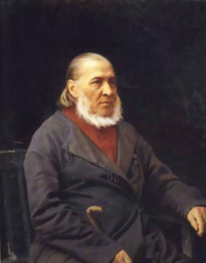

Своим родоначальником Аксаковы считали знатного варяга Шимона Африкановича, племянника норвежского короля, приехавшего в 1027 году в Киев со своей дружиной. Потомок Шимона Иван Федорович Вельяминов, по прозвищу Осак (по-татарски - хромой), жил при великом князе Иване Ш. От него и пошел род Аксаковых.
Любовь к природе - совершенно чуждую его матери, насквозь горожанке - будущий писатель унаследовал от отца.
Именно природа Оренбургского края наполнила душу Сережи Аксакова, вошла в него такой огромной благодатью, пробудила его любознательность, его ранние увлечения, что это осталось на всю жизнь обостренным чувством родной земли, ее тихой прелести и красоты, и эти места дали потом писателю не только фон, но и все содержание для его будущих произведений.
Наряду с природой, в его жизнь вторгалась и жизнь крестьян. Крестьянский труд возбуждал в нем не только сострадание, но и уважение; дворовые были свои не только юридически, но и душевно. Женская половина дворни очень любила маленького болезненного Сережу, и как хранительница народно - поэтического творчества, знакомила мальчика с песнями, сказками, святочными играми. И "Аленький цветочек", который он записал спустя много лет по памяти из рассказов ключницы Пелагеи, - случайный обрывок того огромного мира народной поэзии, в который вводили мальчика дворня, девичья, деревня.
Учился Аксаков в Казанском университете. Не закончив, переехал в Петербург, где поступил на службу в Комиссию по составлению законов в качестве переводчика. Затем работал цензором в Москве, был инспектором Константиновского межевого института.
С 1848 года Аксаков жил преимущественно в подмосковном имении Абрамцево. Здесь его навещали Н.В. Гоголь, И.С. Тургенев и другие.
Многие произведения Сергея Тимофеевича посвящены Башкирии. Среди них – книги «Семейная хроника», «Детские годы Багрова внука», где описывается жизнь самого писателя, и написаны они на основе семейных преданий и воспоминаний самого автора. Читая эти книги, начинаешь чувствовать себя участником всех описываемых событий, как будто ты при помощи волшебной машины времени оказался в Х1Х веке.
Два сына С.Т. Аксакова: Константин и Иван, - стали поэтами. Они тоже родились в Башкирии: Иван – в селе Ново-Аксаково, Константин – в селе Надеждино.
Уфимские родственники С.Т. Аксакова
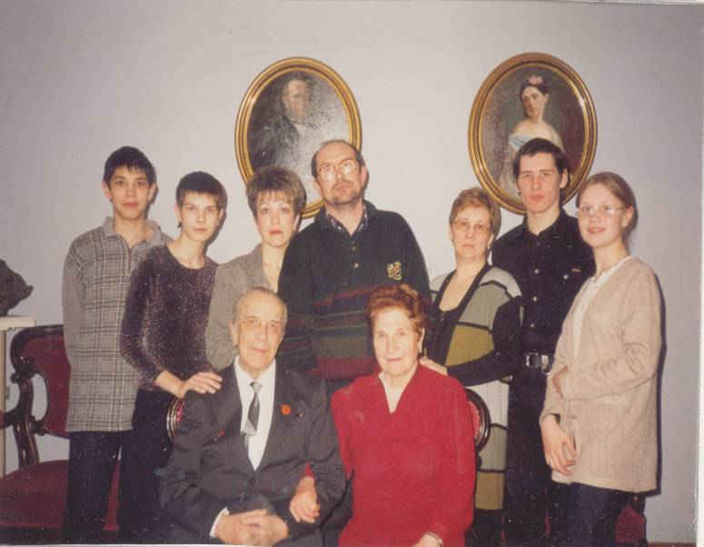
Семья Соколовых долгое время и не подозревала, что они связаны узами родства со своим знаменитым земляком, Сергеем Тимофеевичем Аксаковым. А значит, имеют отношение и к улице Аксакова, около которой они жили, и к селу Надеждино, что в Белебеевском районе, где в местной церкви венчались бабушка и дедушка.Соколовы обосновалась в Башкирии в начале 19 века. Николай Иванович Соколов служил в городе Миассе Уфимской губернии заводским лекарем. Он породнился с родственницей семьи Аксаковых по женской линии, исходящей от тети писателя Сергея Тимофеевича Аксакова, Аксиньи. Один из его внуков - Михаил Яковлевич Соколов - и был дедом Анны и Юрия Соколовых, живущих ныне в г. Уфе.
В 1930 году Михаила Яковлевича пригласили на преподавательскую работу в Башкирский педагогический институт (впоследствии БГУ, ныне БашГУ). Занимался он изучением природных богатств родной республики.
Женился Михаил Яковлевич на дочери судебного поверенного Анне Васильевне Артеминой. Она закончила естественный факультет Башкирского педагогического института и преподавала биологию в школе. У них было два сына – Юрий (погиб на Сталинградском фронте) и Виктор.
Виктор Михайлович продолжил династию врачей. Работал в Республиканской клинической больнице, а затем в БМИ (ныне БГМУ).
Виктор Михайлович Соколов в Уфе был человеком известным. Остроумен, начитан, душа компании. Его хорошо знали филателисты – у него была великолепная коллекция земских марок. Третья по количеству в России. Но больше всего его знали, как великолепного врача. Он продолжил династию, родоначальником которой был его прадед.
Сегодня в Уфе живет 8 дальних родственников Сергея Тимофеевича Аксакова: это, во-первых, Анна Алексеевна – жена Виктора Михайловича, более 50 лет проработавшая врачом в одной и той же больнице.
Затем, Анна Викторовна – дочь В.М. Соколова, тоже врач – заведующая 3-им отделением поликлиники № 5, и двое ее детей. Сын Булат также продолжил династию врачей и работает хирургом в Республиканской детской больнице.
Юрий Викторович – сын В.М.Соколова, известный спелеолог, исследователь пещер Башкортостана, создал сайт в Интернете «Спелеологические памятники природы Башкортостана», работает педагогом дополнительного образования в Кировском детско-оздоровительном центре туризма, краеведения и экскурсий. Отличник народного образования. Его жена – Ольга Владимировна – заведующая сектором периодических изданий ЦГДБ им. Худайбердина. У них двое детей – Михаил и Мария.
А.В. Соколова говорит: «Мы – дальние родственники Аксаковых, но все равно чувствуем себя частицей этого великого рода».
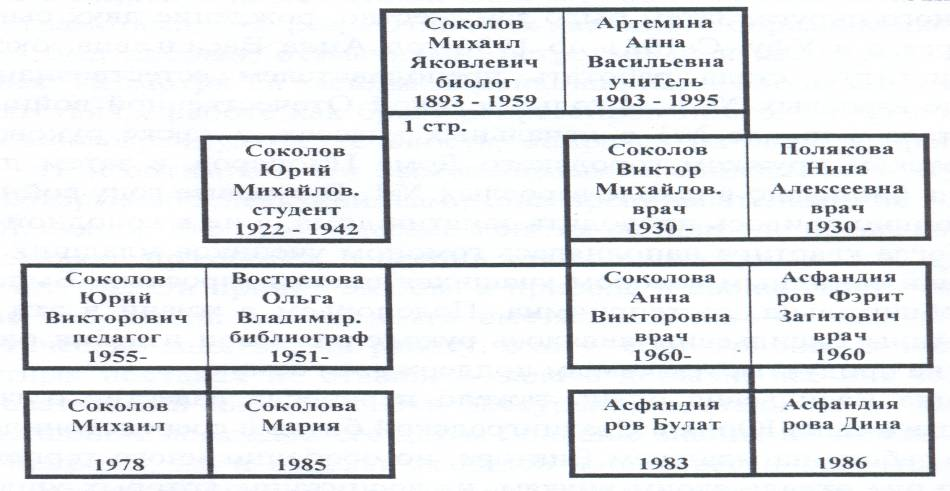
Библиография
Произведения С. Т. Аксакова
1. Аксаков, С. Т. Собрание сочинений [Текст] : в 5 т. / С. Т. Аксаков. — М. : Правда, 1966. — 5 т. — (Огонёк).
2. Аксаков, С. Т. Избранные сочинения [Текст] / С. Т. Аксаков. — М. ; Л. : Гослитиздат, 1949. — 596 с.
3. Аксаков, С. Т. Избранные сочинения [Текст] / С. Т. Аксаков ; сост., вступ. ст. и примеч. В. А. Богданова. — М. : Современник, 1982. — 847 с.
4. Аксаков, С. Т. Аленький цветочек [Текст] : сказка ключницы Пелагеи / С. Т. Аксаков ; худож. Е. Д. Петрова. — М. : Дрофа-Плюс, 2005. — 64 с. : ил. — (Русские классики – детям).
5. Аксаков, С. Т. Детские годы Багрова-внука [Текст] / С. Т. Аксаков. — М. : АСТ : Астрель, 2009. — 349, [2] с. — (Внеклассное чтение).
6. Аксаков, С. Т. Записки ружейного охотника Оренбургской губернии [Текст] / С. Т. Аксаков. — Уфа : Баш. кн. изд-во, 1984. — 416 с. — (Золотые родники).
7. Аксаков, С. Т. Рассказы о родной природе [Текст] / С. Т. Аксаков ; худож. Г. Никольский. — М. : Дет. лит., 1981. — 143 с. : ил.
8. Аксаков, С. Т. Семейная хроника [Текст] / С. Т. Аксаков. — Уфа : Баш. кн. изд-во, 1983. — 206 с. — (Золотые россыпи).
Литература о С. Т. Аксакове
1. Анненкова, Е. И. Аксаковы [Текст] / Е. И. Анненкова. — СПб. : Наука, 1998. — 366 с.
2. Бачурина, Н. Аксаковская тропа [Текст] / Н. Бачурина // Памятники Отечества. — 1997. — № 38. — С. 9-12.
3. Буравцов, В. Аксаковский народный дом [Текст] / В. Буравцов // Уфа : страницы истории. — Уфа, 2006. — С. 290-292.
4. Буравцов, В. С. Т. Аксаков и межевой институт [Текст] / В. Буравцов // Судеб связующая нить. — 2003. — Вып. 1. — С. 119-120.
5. Войтоловская, Э. Л. С. Т. Аксаков в кругу писателей-классиков [Текст] / Э. Л. Войтоловская. — Л. : Дет. лит., 1982. — 220 с. : ил.
6. Гудков, Г. Ф. Незаконченная повесть С. Т. Аксакова «Наташа» [Текст] / Г. Ф. Гудков, З. И. Гудкова. — Уфа : Баш. кн. изд-во, 1988. — 232 с.
7. Гудков, Г. Ф. С. Т. Аксаков : семья и окружение [Текст] / Г. Ф. Гудков, З. И. Гудкова. — Уфа : Баш. кн. изд-во, 1991. — 374, [5] с. : ил.
8. Нигматуллина, И. В. Сад имени С. Т. Аксакова [Текст] / И. В. Нигматуллина // Старая Уфа. — Уфа, 2004. — С. 208-209.
9. Синенко, С. Г. Аксакова сад [Текст] / С. Г. Синенко // Уфа старая и новая / С. Г. Синенко. — Уфа, 2007. — С. 32-33.
10. Синенко, С. Г. Аксакова улица [Текст] / С. Г. Синенко // Уфа старая и новая / С. Г. Синенко. — Уфа, 2007. — С. 33-34.
11. Синенко, С. Г. Аксаковская гимназия [Текст] / С. Г. Синенко // Уфа старая и новая / С. Г. Синенко. — Уфа, 2007. — С. 34.
12. Синенко, С. Г. Аксаковский народный дом [Текст] / С. Г. Синенко // Уфа старая и новая / С. Г. Синенко. — Уфа, 2007. — С. 34-35.
13. Синенко, С. Г. Семья как аристократическая форма жизни [Текст] / С. Г. Синенко // Следы во времени. — Уфа, 2004. — С. 10-29.
14. Узиков, Ю. А. Родина чудесного волшебника [Текст] / Ю. А. Узиков // Это с нами навсегда. — Уфа, 1983. — С. 10-12.
15. Узиков, Ю. А. Чудесный волшебник [Текст] / Ю. А. Узиков // Уфимских улиц имена. — Уфа, 2007. — С. 11-12.
16. Чванов, М. Аксаковские места в Башкирии [Текст] / М. Чванов. — Уфа : Баш. кн. изд-во, 1976. — 70 с.
17. Чванов, М. Быль о великом семьянине [Текст] / М. Чванов // Памятники Отечества. — 1997. — № 38. — С. 154-159.
18. Чванов, М. Корни и крона. Я был в Аксакове…[Текст] / М. Чванов. — Уфа : Баш. кн. изд-во, 1991. — 528 с.
19. Чечуха, А. Сад Аксакова [Текст] / А. Чечуха // Уфа : страницы истории. — Уфа, 2006. — С. 290-292.
Аудио-, видео-издания
1. Аксаков, С. Аленький цветочек [Звукозапись] / С. Аксаков ; исп. : А. Горб, В. Смирнов, И. Алейникова [и др.]. — М. : ТВИК-Лирек, 2005. — 60 мин. — 1 электрон. опт. диск (CD-DA).
2. Аленький цветочек [Видеозапись] : по мотивам сказок о красавице и Чудовище / реж. И. Поволоцкая ; в гл. ролях : М. Ильичева, Л. Дуров, А. Демидова и др. — М. : ЦСДиЮФ им. Горького, 1977. — 105 мин. — 1 вк. — (Мир сказки).
3. Аленький цветочек [Видеозапись] : по сказке С. Т. Аксакова / реж. Л. Атаманов // Волшебные сказки : сб. мультфильмов / авт. сцен. Гребнер, Н. Рожков, Н. Эрдман ; реж. Л. Атаманов [и др.] ; текст песен Я. Шведова, Л. Позднеева. — М. : Крупный план, 2006. — 95 мин. — 1 электрон. опт. диск (DVD).
4. Аленький цветочек [Видеозапись] / реж. Л. Атаманов // Гуси-лебеди : сб. мультфильмов / авт. сцен. И. Иванов [и др.] ; композ. Ю. Никольский [и др.] ; реж. Л. Атаманов, О. Хадатаева, Н. Рожков. — М. : Союз-Видео, 2004. — 106 мин. — 1 электрон. опт. диск (DVD).
5. Аленький цветочек [Видеозапись] / реж. Л. Атаманов // Сказки русских писателей 2 / авт. сцен. А. Снежко-Блоцкая, Г. Гребнер ; худож. Л. Мильчин ; композ. В. Оранский, Н Будашкин ; реж. И. Иванов-Вано, Л. Атаманов. — М. : ТВИК-Лирек, 2004. — 95 мин. — 1 электрон. опт. диск (DVD).
6. Сергей Аксаков [Видеозапись] / Баш. гос. пед. ун-т. — Уфа : БГПУ, 2001. –106 мин. – 1 вк.
Содерж. : Живые корни, Дом, где согреваются сердца.
Список статей из периодических изданий
1. Агишева, Г. Особенности национального монстра : исполнилось 140 лет сказке С. Т. Аксакова, которую вроде бы знают все... [Текст] / Г. Агишева // Вечерняя Уфа. - 1999. - 17 февраля. - С. 3.
"Аленький цветочек".
2. Аглиуллина, А. Здравствуй, век восемнадцатый! [Текст] / А. Аглиуллина // Республика Башкортостан. - 2011. - 8 февраля. - С. 4. : ил.
В доме-музее С. Т. Аксакова дошколята приняли участие в уникальной культурно-обрядовой программе "Оживающий дом".
3. Аксаков, С. Детские годы Багрова–внука [Текст] / С. Аксаков // Бельские просторы. - 2007. - №9. - С. 114-129.
Фрагменты повести.
4. Аксаков, С. История моего знакомства с Гоголем [Текст] / С. Аксаков // Роман-газета. - 2009. – №24.
Содерж.: Гений двух братских народов.
К 200-летию со дня рождения Н.В. Гоголя.
5. Аксаков, С. Т. Отрывочные воспоминания [Текст] / С.Т. Аксаков // Очаг. - 1994. - №2. - С. 42-44.
6. Аксаков, С. Т. Очерк зимнего дня [Текст] / С.Т. Аксаков // Молодежная газета. - 2001. - №38. - С. 5.
Последнее произведение С. Т. Аксакова.
7. Аксаковская осень [Текст] // Республика Башкортостан. - 2008. - 18 сентября. - С. 1.: ил.
XVIII Международный Аксаковский праздник.
8. Аксаковский праздник - символ единства и духовности [Текст] / Пресс-служба Президента РБ // Вечерняя Уфа. - 1995. - 29 сентября. - С. 1.
О пятом Международном Аксаковском празднике в Уфе.
9. Аксаковский праздник собирает друзей // Молодежная газета. - 2004. - 23 сентября. - С. 2.
О XIV Международном Аксаковском празднике.
10. Анненкова, Е. В поисках духовной гармонии [Текст] / Е.В. Анненков // Русь. - 1996. – №2. - С. 67.
Литературные портреты. Очерк о С. Т. Аксакове.
11. Аюпов, Р. Как памятники "передвигались" по городу [Текст] / Р. Аюпов // Вечерняя Уфа. - 2009. - 11 июня. - С. 3. : ил.
Памятники Уфы.
12. Барабаш, Т. Магия Аксаковского слова [Текст] / Т. Барабаш // Вечерняя Уфа по пятницам. - 2005. - 23 сентября. - С. 1-2. : ил., фото.
Об Аксаковском празднике.
13. Баранов, И. Потомок варяга Шимона [Текст] / И. Баранов // Истоки. - 2004. - 25 февраля. - С. 10. : ил., фото.
Забытые родственные связи А.С. Пушкина.
14. Баранов, И. Сергей Аксаков и хозяин Шайтан - поля [Текст] / И. Баранов // Истоки. - 2004. - 4 августа. - С. 5. : ил., фото.
Об Аксакове С., писателе земли башкирской и его роде.
15. Бачурина, Н. Аксаковская тропа [Текст] / Н. Бачурин // Рампа. - 1996. - №10-11. - С. 8.
16. Бельская, Г. И все-таки они встретились : Сергея Тимофеевича и Федора Ивановича объединила башкирская земля [Текст] / Г. Бельская // Вечерняя Уфа. - 2001. - 22 сентября. - С. 3. - (Поиски и находки).
С. Т. Аксаков и Ф.Т. Шаляпин.
17. Беляев, С. "...Музыка должна быть языком души" [Текст] / С. Беляев // Урал. - 2004. - №7. - С. 139-146. : ил., фото.
Музыкально-биографические заметки о С. Т. Аксакове.
18. Бикбаев, Р. Заветы Аксакова [Текст] / Р. Бикбаев // Республика Башкортостан. - 2005. - 5 октября. - С. 3.
Об Аксаковском празднике.
19. Болгарова, Ю. И образ мира в слове явленный... [Текст] / Ю. Болгарова // Вечерняя Уфа. - 2005. - 21 сентября. - С. 1.
Об Аксаковском празднике.
20. Большакова, А. Философско-эстетическая "охота" в мире русского слова [Текст] : (Пушкин, Тургенев, Л.Толстой, Аксаков) / А. Большакова // Литературная учеба. - 2001. - № 3. - С. 170-195. - (Литературный клуб старшеклассника).
21. Большая родня [Текст] // Вечерняя Уфа. - 2010. - 29 сентября. - С. 1,3.
Аксаковские дни, Аксаковский праздник.
22. Бондаренко, Л. Овеянное временем [Текст] / Л. Бондаренко // Истоки. - 2008. - №52. - С. 6. : ил.
История здания Башкирского государственного театра оперы и балета.
23. Буравцов, В. Аксаков С. Т. в открытках [Текст] / В. Буравцов // Уфа. - 2009. - №5. - С. 68-69. : ил.
24. Буравцов, В. Аксаковский народный дом [Текст] / В. Буравцов // Уфимские ведомости.- 2004.- №5.- 3 февраля.- С. 16.
25. Буравцов, В. Аксаковский народный дом [Текст] : к 90-летию его основания / В. Буравцов // Вечерняя Уфа. - 1999. - 9 апреля. - С. 2.
26. Буравцов, В. С. Т. Аксаков и межевой институт [Текст] / В. Буравцов // Истоки. - 2003. – 39 сентября. - С. 4. : ил., фото.
О Константиновском землемерном училище.
27. В Уфе может появиться памятник "Аленькому цветочку" [Текст] // Молодежная газета. - 2010. - 23 сентября. - С. 5.: ил.
28. Вербицкая, Г. Диалог согласных [Текст] / Г. Вербицкая // Бельские просторы. - 2000. - №8. - С. 179-182. : ил., фото.
Об Аксаковском сборнике.
29. Винокуров, Е. Прожекты и реликвии [Текст] / Е. Винокуров // Вечерняя Уфа.- 1989.- 2 октября.- С. 3.
Памяти С.Т. Аксакова.
30. Встречи с гостями Аксаковского праздника [Текст] / Пресс-служба Президента РБ // Вечерняя Уфа. - 2006. - 3 октября. - С. 1.
31. Денисов, В. Под знаком Аксакова [Текст] / В. Денисов // Истоки.- 1997.- №19.- С.1., ил. : фото.
32. Гайнетдинов, Б. Так вот ты какой, цветочек аленький! [Текст] / Б. Гайнетдинов // Вечерняя Уфа. - 2006. - 14 сентября. - С. 2. : ил., фото.
Реконструированы ворота Аксаковского сада.
33. Галимзянова, Г. Аксаковское время [Текст] / Г. Галимзянова // Ватандаш. - 2007. - №8. - С. 164-166.
"Время Аксаковых" охватывает 100 лет. К Году русского языка в РФ.
34. Галлиулов, С. Звон Аксаковских колоколов [Текст] / С. Галлиулов // Панорама Башкортостана. - 2002. - №2. - С. 22. : ил., фото.
О Международном Аксаковском празднике, прошедшем в Белебеевском районе.
35. Гареев, Р. В сердце Аксаковского края : в Белебее и селе Надеждино состоялись торжества в честь великого русского писателя [Текст] / Р.В. Гареев // Республика Башкортостан. - 2001. - 4 октября. - С. 3. - (Эхо праздника).
Здесь же см. статью Л.Фениной "Милый душе уголок" о мемориальном Доме-музее С. Т. Аксакова в г. Уфе.
36. Гарипов, Т. Вместо формы - телогрейка [Текст] / Т. Гарипов // Вечерняя Уфа. - 2008. - 27 сентября. - С. 3.: ил.
180 лет Аксаковской гимназии.
37. Голов, В. Родная, мудрая и - молодая! [Текст] / В. Голов // Вечерняя Уфа. - 2008. - 2 декабря. - С. 3.: ил.
Аксаковская гимназия празднует 180-летие.
38. Голов, В. Под знаком Аксакова [Текст] / В. Голов // Вечерняя Уфа.- 1991.- 30 сентября.- С. 1., ил. : фото.
К 200- летию С. Т. Аксакова.
39. Гориченская, Л. Хранит благодарная память [Текст] / Л. Гориченская // Рампа. - 2009. - №10. - С. 2-3.: ил.
XIX Международный Аксаковский праздник.
40. Горшков, М. Философские и исторические взгляды С. Т. Аксакова : (по материалам переписки с Н.В. Гоголем) [Текст] // История (ПС). - 1998. - 32 (август). - С. 7-9.
41. Григоренко, Г. Озеро памяти, берега надежды [Текст] / Г. Григоренко // Вечерняя Уфа. - 2010. - 22 сентября. - С. 1,4.
По Аксаковским местам.
42. Григоренко, Г. Поистине природы волшебство [Текст] / Г. Григоренко // Уфимская неделя. - 2006. - 15-21 июня. - С. 8. : ил., фото.
Уфимские родственники Аксакова.
43. Гудков, Г. Дом Аксакова? [Текст] / Г. Гудков // Уфимские ведомости. - 2006. - 19 января. - С. 8. : ил., фото.
О появлении на свет Мемориального дома-музея С. Т. Аксакова.
44. Гудков, Г. В память о замечательном земляке [Текст] / Г. Гудков, З. Гудкова // Советская Башкирия.- 1989. - 20 декабря.- С. 4.
К 200- летию со дня рождения С.Т. Аксакова.
45. Гудкова, З. Карамзин, Аксаков, Пушкин и Лермонтов : творческие и родственные связи [Текст] / З. Гудкова // Бельские просторы. - 2001. - №2. - С. 162-167. - (Краеведение).
46. Гудкова, З. О родстве Владимира Набокова с Сергеем Аксаковым [Текст] / З. Гудкова // Вечерняя Уфа. - 2002. - 10 июля. - С. 3.
47. Давлетшина, А. И снова Аксаковский праздник [Текст] / А. Давлетшина // Молодежная газета. - 2002. - 12 сентября. - С. 4. - (Будни и праздники).
48. Делая виток над планетой : я всегда искал на ней тот уголок, где родился Аксаков... [Текст] // Вечерняя Уфа. - 2002. - 5 марта. - С. 3. - (Аз, буки, веди...).
Мемориальный Дом-музей С. Т. Аксакова - оазис культуры, который уже 10 лет собирает под своей крышей поклонников замечательного земляка.
49. Денисов, В. Аксаковская осень [Текст] / В. Денисов // Истоки. - 1997. - №20. - С. 4.
Седьмой Аксаковский праздник прошел в Уфе и Белебее.
50. Диалог культур и связь времен [Текст] // Вечерняя Уфа. - 2009. - 29 сентября. - С. 1.: ил.
Аксаковский праздник.
51. Драгоценное, долгожданное [Текст] // Вечерняя Уфа. - 2010. - 24 сентября. - С. 5.: ил.
К ХХ юбилейному Аксаковскому празднику, обзор публикаций.
52. Дурасов, Д. Патриарх русской охоты [Текст] / Д. Дурасов // Мастерружье. - 2009. - 2. - С. 78-82. : ил., фото.
Заядлые охотники - писатели: И.С. Тургенев, Л.Н. Толстой и С. Т. Аксаков.
53. Ерофеев, Ю. Аксаковский народный дом: документальные свидетельства об истории башкирского академического театра оперы и балета [Текст] / Ю. Ерофеев // Воскресная газета. - 1999. - №8. - С. 11.
54. Ерофеев, Ю. "Пример Уфы заслуживает всякой похвалы" [Текст] / Ю. Ерофеев // Бельские просторы. - 2002. - №9. - С. 119-140.
О строительстве Аксаковского народного дома. О семейной хронике династии Аксаковых.
55. Замятина, Т. Дочь Суворовского генерала [Текст] / Т. Замятина // Вечерняя Уфа.- 1991.- 25 сентября.
К 200- летнему юбилею С.Т. Аксакова.
56. Зайнуллина, Л. Весна в Аксаковском доме [Текст] / Л. Зайнуллина // Вечерняя Уфа. - 2009. - 25 февраля. - С. 1. : ил.
О благотворительном вечере "Тепло Аксаковского дома", организуемом Союзом предпринимателей Уфы.
57. Зонова, Т. Аксаковская осень [Текст] / Т. Зонова // Российская газета. - 2007. - 21-27 сентября. - С. 17.: ил.
Последняя декада сентября в республике проходит под знаком русской литературы и русского народного творчества.
58. Иванова, Г. Созданный на народные сбережения [Текст] / Г. Иванова // Вечерняя Уфа. - 2009. - 9 сентября. - С. 4. : ил.
100-летие Аксаковского народного дома.
59. Иванова. Г. Уфимцы - музею. Музей – уфимцам [Текст] / Г. Иванова // Советская Башкирия. - 1999. - 14 апреля. - С. 4.
Сегодня в мемориальном доме-музее С. Т. Аксакова состоится открытие выставки дарений "Уфимцы - музею С. Т. Аксакова".
60. Иванова, Г. Фамильное дерево рода [Текст] / Г. Иванова // Вечерняя Уфа.- 1991.- 25 сентября.
К 200-летнему юбилею С.Т. Аксакова.
61. Имя Аксакова - на века [Текст] : к 210-летию со дня рождения С. Т. Аксакова и 10-летию мемориального дома-музея С. Т. Аксакова в Уфе // Молодежная газета. - 2001. - 20 сентября. - С. 5. - (Калейдоскоп событий).
62. Исмагилов, Р. Певец башкирского края [Текст] : к 210-летию со дня рождения С. Т. Аксакова / Р. Исмагилов // Учитель Башкортостана. - 2001. - № 10. - С. 54-55. - (Русский язык и литература).
63. Капкаева, И. Расцвел "Цветочек аленький" в Аксаковском саду [Текст] / И. Капкаева // Вечерняя Уфа. - 2009. - 6 февраля. - С.14.: ил.
В Аксаковском саду появился театр "Аленький цветочек".
64. Капкаева, И. До открытия – 24 часа! [Текст] / И. Капкаева // Вечерняя Уфа.- 1991.- 27 сентября.- С. 1., ил. : фото.
Открытие Дома-музея С. Т. Аксакова.
65. Карачурин, А. Околдованные "Аленьким цветочком" [Текст] / А. Карачурин // Российская газета. - 2006. - 27 сентября. - С. 11.
Международный Аксаковский праздник.
66. Карданова, М. Детские книги Багрова–внука [Текст] / М. Карданова // Семейное чтение. - 2010. - №2. - С. 25-34. : ил., фото.
Советы писателей по чтению для юных читателей.
67. Карпенко, И. Как радостны они, Аксаковские дни! [Текст] / И. Карпенко, Г. Григоренко, И. Капкаева // Вечерняя Уфа. - 2008. - 23 сентября. - С. 1. : ил.
Аксаковский праздник.
68. Клемент, Л. Родные образы минувших лет [Текст] / Л. Клемент // Советская Башкирия. Известия Башкортостана. - 1999. - 6 июля. - С. 4.
Аксаковский дом-музей.
69. Климович, Е. Аксаковская осень [Текст] / Е. Климович // Уфа. - 2010. - №10. - С. 1.: ил.
Аксаковский праздник.
70. Кожинов, В. "Семейная хроника" Аксакова [Текст] / В. Кожинов // Литература в школе. - 1995. - №1. - С. 19-25.
71. Кожинов, В. "Семейная хроника" С. Т. Аксакова [Текст] / В. Кожинов // Бельские просторы. - 2002. - №9. - С. 151-160.
72. Кондратьев, А., Тарасов, И. Общая память [Текст] /А. Кондратьев, И. Тарасов // Вечерняя Уфа.- 1991.- 28 августа.- С. 3.
73. Коршунова, Т. Родниковая книга [Текст] // Литература (ПС). - 1998. - дек. (47). - С. 13.
О повести "Детские годы Багрова-внука" С. Т.Аксаков.
74. Кузина, Г. Традиции прекрасной ровно век [Текст] / Г. Кузина // Вечерняя Уфа. - 2009. - 29 апреля. - С. 4. : ил.
Аксаковские дни в Уфе.
75. Кузнецов, В. Бесценная Каролина Карловна « Мы словно украдкой, не зная друг друга, свое угадали родство…» [Текст] / В. Кузнецов // Независимая.- 2005.- 2 июня.- С. 3. : ил., фото.
76. Кузнецов В. Там, где расцвел "Аленький цветочек" : воссоздается дом-музей Сергея Аксакова [Текст] / В. Кузнецов // Труд. - 1998. - 3 июня. - С. 8.
77. Кулешов, А. Композитор на целине [Текст] / А. Кулешов // Родина. - 2005. - №12. - С. 112-114. : ил., фото.
Аксаков С.С.- композитор, правнук Аксакова С. Т.
78. Кулешов, А. Рябинки Клинского уезда [Текст] / А. Кулешов // Родина. - 2007. - №1. - С. 50-53.: ил., фото.
Как обнаружили подмосковное имение С. Т. Аксакова.
79. Кулешов, А.С. Род Аксаковых в истории России [Текст] / А. С. Кулешов // Вопросы истории. - 2010. - №7. - С. 103-112. : ил., фото.
Из истории родословной рода Аксаковых.
80. Кульмухаметова, А. Аксаков и Абрамцево [Текст] / А. Кульмухаметова // Республика Башкортостан. - 2010. - 25 сентября. - С. 4. : ил.
Свои воспоминания о малой родине писателя воплощал в подмосковном имении.
81. Кульмухаметова, А. Дивная, чудная родина [Текст] / А. Кульмухаметова // Республика Башкортостан. - 2010. - 23 июля. - С. 3. : ил.
Красоту Аксаковской прозы во многом питали окрестности стерлитамакских шихан.
82. Кульмухаметова, А. По следам Салавата Юлаева [Текст] / А. Кульмухаметова // Республика Башкортостан. - 2009. - 13 октября. - С. 2.: ил.
Петровский чиновник В.Татищев, писатель С. Т.Аксаков, князья Трубецкие - с этими именами связан памятник башкирскому народу.
83. Курбатов, В. Это было! Это было? Это было ... [Текст] / В. Курбатов // Москва. - 1999. - №2. - С. 165.
Аксаковы. Предания русского семейства.
84. Кутлуярова, Г. Знай наших! [Текст] / Г. Кутлуярова // Истоки. - 2011. - 26 января. - С. 4.: ил.
Рождественские встречи в Доме-музее С. Т. Аксакова.
85. Латыпов, С. Возвращение Аксакова : в селе Надеждино Белебеевского района открылся дом-музей писателя [Текст] / С. Латыпов // Республика Башкортостан. - 2002. - 1 октября. - С. 1-2. - (XII Международный Аксаковский праздник).
86. Латыпов, С. Урок культуры и дружбы [Текст] / С. Латыпов // Республика Башкортостан. - 2006. - 10 октября. - С. 3.
Мысли, навеянные XVI Аксаковским праздником
87. Леонидов, А. Их духом напитал Башкортостан [Текст] / А. Леонидов // Истоки. - 2011. - 9 февраля. - С. 8-9.: ил.
Связь времен.
88. Ломунова, М. "Неужели так трудно понять простоту нашей жизни!" [Текст] /М. Ломунова // Россия молодая. - 1996. - №11. - С. 22.
О С. Т. Аксакове.
89. М.Г.Рахимов встретился с гостями Аксаковского праздника [Текст] / Пресс-служба Президента РБ // Республика Башкортостан. - 2006. - 3 октября. - С. 1.
Содерж.: Под звон колоколов.
На родине великого писателя заложены первые блоки под будущее здание Дома народных ремесел.
90. Малютин, И. Аксаковская гимназия в Башкортостане: возрождение традиций [Текст] / И. Малютин // Истоки. - 1999. - №3. - С. 4.
91. Мамонтов, С. Абрамцево С. Т. Аксакова [Текст] / С.Мамонтов // Памятники Отечества. - 1994. - №1-2. - С. 108-112.
92. Маслова, А. Друг ваш Тимофей Аксаков [Текст] / А. Маслова // Уфа. - 2006. - №9. - С. 44-45. : ил., фото.
Об Аксаковых, родителях С. Т. Аксакова.
93. Маслова, А. От выбойки до аглицкого сукна [Текст] / А. Маслова // Башкортостан укытыусыhы. - 2004. - №5. - С. 55.
О книге "Родина Аксакова".
94. Маслова, А. По прозвищу Маренники [Текст] / А. Маслова // Башкортостан укытыусыhы. - 2004. - №4. - С. 55.
О книге "Родина Аксакова".
95. Маслова, А. Цвета дыма и пламени [Текст] / А. Маслова // Башкортостан укытыусыhы. - 2004. - №7. - С. 54.
О книге "Родина Аксакова".
96. Миргазямов, М. По долгу памяти народной [Текст] / М. Миргазямов // Советская Башкирия.- 1990.- 13 марта.- С. 3.
К 200-летию С. Т. Аксакова и 100-летию К. В. Иванова.
97. Михайлов, Д. Чудесный аленький цветочек [Текст] / Д. Михайлов // Вечерняя Уфа.- 1991.- 1 октября.- С. 1., ил. : фото.
98. Монахов, А. Особенности национального монстра [Текст] /А. Монахов // Комсомольская правда. - 1998. - 29 декабря. - С. 5.
140 лет назад Сергей Аксаков напугал свою внучку первым русским человеком-чудовищем с "Аленьким цветочком".
99. Мухаметшин, Р. С завтрашнего дня время побежит быстрее [Текст] / Р. Мухаметшин // Вечерняя Уфа. - 2008. - 28 ноября. - С. 6.: ил.
Гимназии им. Аксакова исполнилось 180 лет.
100. Назаров, В. Стерлитамакская дорожка Аксакова [Текст] // Бельские просторы. - 2001. - № 9. - С. 144-151. - (Краеведение).
101. Назмутдинова, А. Навстречу юбилею. Все - об Аксакове [Текст]/А. Назмутдинова // Вечерняя Уфа.- 1990.- 10 июля.
102. Найденов, П. Аксаковы всех стран и народов, объединяйтесь! [Текст] / П. Найденов // Вечерняя Уфа. - 2011. - 2 февраля. - С. 3.: ил.
О деятельности Аксаковского фонда.
103. Найденов, П. Аксаковы всех стран, соединяйтесь! [Текст] / П. Найденов // Вечерняя Уфа. - 2007. - 19 мая. - С. 3.
Международный Аксаковский праздник вновь собрал всю многочисленную и многонациональную родню великого писателя.
104. Найденов, П. В Доме на улице Благоева [Текст] / П. Найденов // Вечерняя Уфа. - 2006. - 6 сентября. - С. 3. : ил., фото.
О новом экспонате для Музея Аксакова.
105. Найденов, П. Четыре тома для Аксаковского дома [Текст] / П. Найденов // Вечерняя Уфа. - 2007. - 6 июня. - С. 1.
Аксаковскому дому передано в дар собрание сочинений Киреевских единомышленников Аксаковых в 4-х томах.
106. Нафикова, А. Шестой Международный праздник [Текст] / А. Нафикова // Известие Башкортостана. - 1996. - №187. - С. 4.
Традиционные Аксаковские дни на башкирской земле.
107. Наш Аксаковский родственник [Текст] // Вечерняя Уфа. - 2006. - 14 октября. - С. 4. : ил., фото.
О родстве известных уфимских семей Соколовых и Аксаковых.
108. Не просто праздник - юбилей! [Текст] // Вечерняя Уфа. - 2010. - 15 сентября. - С.3. : ил.
Программа ХХ Международного Аксаковского праздника.
109. Нефедова, Т. Касимовка... и иже с ней [Текст] / Т. Нефедова // Вечерняя Уфа. - 2001. - 3 июля. - С. 3.
Экспедиция "Вечерней Уфы": "По Аксаковским местам". О деревне Касимовка – имении Н.С.Зубова, деда С. Т. Аксакова.
110. Нефедова, Т. Пестровка, она же Хорошавка : по следам Сергея Тимофеевича Аксакова [Текст] / Т. Нефедова // Вечерняя Уфа. - 2002. - 17 апреля. - С. 2.
О деревне Пестровка (ныне Большое Аксаково) Стерлитамакского района. М.А. Евстигнеев - потомок аксаковских крестьян этой деревни.
111. Нефедова, Т. "Под тенью Рифейских скал" прошел XII Международный Аксаковский праздник [Текст] / Т. Нефедова // Вечерняя Уфа. - 2002. - 5 октября. - С. 3. - (Грани жизни).
112. Никитина, Е. С. Т. Аксаков как классик XIX века [Текст] / Е. Никитина // Башкортостан укытыусыhы. - 2006. - №4. - С. 49-51.
113. Николина, Н. А. История ребенка для детей [Текст] / Н. А. Николина // Русский язык в школе. - 2009. - №2. - С. 55-59.
Детские годы Багрова-внука" С. Т. Аксакова
114. Новакович, А. Здесь бьется пульс времен [Текст] / А. Новакович // Истоки. - 2008. - 3 декабря. - С. 1.: ил.
Гимназии № 11 им. С. Т. Аксакова исполнилось 180 лет.
115. Новые встречи с Аксаковым [Текст] // Республика Башкортостан. - 2006. - 21 сентября. - С. 2.
О проведении в городе мероприятий в рамках XVI Международного Аксаковского праздника.
116. О Премии Совета городского округа город Уфа РБ им. С. Т. Аксакова [Текст] // Вечерняя Уфа по пятницам. - 2006. - 22 сентября. - С. 3.
Содерж.: Положение. Решение.
117. Осенний бал в Аксаковском доме [Текст] // Республика Башкортостан. - 2010. - 28 сентября. - С. 1.3.: ил.
В Уфе состоялось вручение премий имени выдающегося русского писателя.
118. Осотова, В. Фамильное дерево рода [Текст] / В. Осотова // Вечерняя Уфа.- 1991.- 28 августа.- С. 3. : ил.
К 200- летнему юбилею С.Т. Аксакова.
119. Павлов, Б. «Под их нечистыми руками…» [Текст] / Б. Павлов // Вечерняя Уфа.- 1991.- 30 сентября.- С. 3. : ил., фото.
К 200-летнему юбилею С. Т. Аксакова.
120. Первушина, Ю. Врачи в роду Аксаковых [Текст] / Ю. Первушина // Уфимские ведомости. - 2011. - 10. - С. 1.6.: ил.
Потомки С. Т. Аксакова.
121. Песков, В. В гостях у Аксакова [Текст] / В. Песков // Комсомольская правда.- 2009.- 23-30 июля.- С. 37. : ил., фото.
122. Пет, Т. Жизнь кипит в особняке старинном [Текст] / Т. Пет // Вечерняя Уфа. - 2010. - 5 февраля. - С. 11.: ил.
Дом-музей Сергея Аксакова.
123. Петрова, Т. В Аксаковском "Надеждино" [Текст] / Т. Петрова // Мир музея. - 2005. - №6. - С. 28-31.: ил.
Об Аксаковском музее в селе Надеждино (Башкортостан).
124. По духовным маршрутам Аксаковского праздника [Текст] // Рампа. - 2010. - №10. - С. 4-5.: ил.
Аксаковский праздник.
125. Под знаком Аксакова [Текст] // Вечерняя Уфа. - 2006. - 26 сентября. - С. 1.
О XVI Международном Аксаковском празднике и награждениях.
126. Попов, М. « Корни и Крона » [Текст] / М. Попов // Вечерняя Уфа.- 1991.- 26 сентября.- С. 3., ил. : фото.
К 200- летнему юбилею С. Т. Аксакова.
127. Приближаются Аксаковские дни [Текст] // Два выходных. - 1996. - 19 сентября. - С. 3.
128. Приглашает Аксаковский праздник [Текст] // Вечерняя Уфа.- 1993.- 25 сентября.
129. Программа XVI Международного Аксаковского праздника [Текст] // Вечерняя Уфа. - 2006. - 16 сентября. - С. 3.
Аксаковский праздник 29 сентября-2 октября 2006 года.
130. Прокшин, В. Аксаковский народный дом : так именовался в своё время Башкирский государственный театр оперы и балета [Текст] / В. Прокшин // Советская Башкирия.- 1989.- 8 декабря.- С.4.
131. Рахимкулов, М. Аксаков и Башкирия [Текст] / М. Рахимкулов // Истоки. - 2009. - №17. - С. 12. : ил.
132. Романова, Ю. Праздник, ставший народным [Текст] / Ю. Романова // Бельские просторы. - 2006. - № 9. - С. 118-128. : ил., фото.
Содерж.: Сергей Аксаков-композитор.
О Международном Аксаковском празднике в Республике Башкортостан.
133. Рыбченко, Т. Гарри Поттер уфимской губернии [Текст] / Т. Рыбченко // Вечерняя Уфа. - 2002. - 27 апреля. - С. 2. - (Открытие Америки).
О литературном кумире XIX века - Сереже Багрове, герое трилогии С. Т. Аксакова.
134. Савинков, С. Русь [Текст] / С. Савинков // Школьная библиотека. - 2001. - №5. - С. 15-18. : ил.
К 210-летию со дня рождения С. Т. Аксакова.
135. Сигаева, Т. Три "детства" в русской литературе : зеркало поколений. С.Т. Аксаков "Семейная хроника", "Детские годы Багрова-внука" [Текст] / Т. Сигаева // Литература (ПС). - 1999. - №3. - С. 8.
136. Синенко, Д. Без семьи нет истории [Текст] / Д. Синенко // Республика Башкортостан. - 2009. - 1 октября. - С. 2.
Род Аксаковых.
137. Сирази, Д. В столице "вырос "цветок любви [Текст] / Д. Сирази // Комсомольская правда. - 2010. - 7 декабря. - С. 6.: ил.
138. Слово об Аксакове [Текст] // Вечерняя Уфа.- 1991.- 27 сентября.- С. 3.
139. Смирнова, П. Село Касимово - имение деда С. Т. Аксакова [Текст] / П. Смирнова // Бельские просторы. - 2010. - №1. - С. 121-126.
В селе Касимово, расположенном на территории микрорайона Шакша, находилось имение Н.С.Зубова - деда С. Т. Аксакова.
140. Соболевская, С. Охотница до книг [Текст] / С. Соболевская // Советская Башкирия. - 1997. - 25 сентября. - С. 4.
О матери великого русского писателя Марии Николаевне Аксаковой.
141. Соболевская, С. Путешествие к истокам сказки [Текст] / С. Соболевская // Истоки. - 2004. - 29 декабря. - С. 4. : ил., фото.
142. Соболевская, С. Плоды просвещения: что вы знаете о матери С. Т. Аксакова? [Текст] / С.Соболевская, С. Гафурова // Воскресная газета. - 1999. - 23-29 сентября. - С. 11.
143. Соколов, В. Певец нашего края [Текст] / В. Соколов, В. Карпушенко // Истоки. - 1999. - №19. - С. 12.
О марке, посвященной С. Т.Аксакову, которая была выпущена в 1959 г. в серии "Писатели нашей Родины".
144. Состоится ли шестой Международный Аксаковский праздник? [Текст] // Советская Башкирия. - 1996. - 15 августа.
145. Страна Аксакова-весь шар земной [Текст] // Вечерняя Уфа. - 2011. - 25 марта. - С. 7.: ил.
Спектакль по сказке "Аленький цветочек" поставлен в Аргентине.
146. Султанова, Р. И вновь пришла Аксаковская осень... [Текст] / Р. Султанова // Республика Башкортостан. - 2010. - 29 сентября. - С. 4. : ил.
Праздник широко отметили на Белебеевской земле.
147. Суюндукова, Ф. Рукописи не горят : Аксаковские дни в Уфе [Текст] / Ф. Суюндюкова // Вечерняя Уфа. - 1999. - 28 сентября. - С. 3.
О рукописных документах, имеющих прямое отношение к С. Т. Аксакову, об учреждении в Уфе общественной "Аксаковской" библиотеки, о сооружении памятника писателю на его родине, об Аксаковском народном доме.
148. Съезжаются гости на Аксаковский бал... [Текст] // Вечерняя Уфа. - 2009. - 24 сентября. - С.2. : ил.
Аксаковские дни в республике.
149. Таракин, П. М. С. Т. Аксаков как критик театра и литературы [Текст] / П. М. Таракин // Башкортостан укытыусыhы. - 2008. - №8. - С. 75-77.
К вопросу об изучении творчества писателя в школе.
150. Темирова, А. Певец семьи и отечества [Текст] / А. Темирова // Родина. - 2005. - №12. - С. 115-116. : ил., фото.
Личность Аксакова С. Т. для Республики Башкортостан.
151. Токмакова, И. Забытый, но незабываемый [Текст] : заметки о творчестве Сергея Тимофеевича Аксакова / И. Токмакова // Дошкольное воспитание. - 1999. - №7. - С. 92-96.
152. Тупеев, М. Фома Кемпийский в переписке С. Т. Аксакова и Н.В. Гоголя [Текст] / М. Тупеев // Бельские просторы. - 2001. - № 9. - С. 160-164. - (Краеведение).
153. Тухватуллин, Р. Россия поднимается провинцией [Текст] / Р. Тухватуллин // Жизнь национальностей. - 1998. - №1-2. - С. 76-78.
Интервью с писателем и директором Дома-музея С. Т. Аксакова в Уфе Михаилом Чвановым.
154. Тюленев, И. Символ надежды [Текст] / И. Тюленев // Литературная Россия. - 1997. - 17 октября. - С. 11.
О VII международном Аксаковском празднике в Башкортостане.
155. Тюленев, И. Символ надежды [Текст] / И. Тюленев // Советская Башкирия. - 1997. - №219. - С. 3.
Аксаковские праздники в Уфе.
156. Угрюмов, В. Е. Пейзаж в «Очерке зимнего дня» С. Т. Аксакова [Текст] / В. Е. Угрюмов // Русская речь. - 2010. - №3. - С. 7-9.
157. Узиков, Ю. Энциклопедия Уфы от А до Я. Аксаков [Текст] / Ю. Узиков // Вечерняя Уфа.- 1993.- 21 июля.
158. Уроки нравственности от Аксакова [Текст] // Уфа. - 2005. - №10. - С. 5. : ил., фото.
О XV Международном Аксаковском празднике.
159. Фадеева, Г. Земли лоскутик драгоценный [Текст] / Г. Фадеева // Вечерняя Уфа по пятницам. - 2006. - 29 сентября. - С. 5. : ил., фото.
Сегодня в республике начались Аксаковские дни.
160. Файзуллин, Д. Отпечаток эпохи [Текст] / Д. Файзуллин // Молодежная газета. - 2010. - 38 сентябрь. - С. 7.: ил.
Выставки в Музее Аксакова.
161. Файзуллина, Э. Музыка и театр в жизни и творчестве С. Т. Аксакова [Текст] / Э. Файзуллина // Башкортотсан укытыусыhы. - 2000. - №10. - С. 68.
162. Файзуллина, Э. О двадцатом Аксаковском листопаде [Текст] / Э. Файзуллина, Ю. Абдуллина // Бельские просторы. - 2010. - №12. - С. 155-159. : ил., фото.
Аксаковский праздник на земле Башкортостана.
163. Фартыгина, Н. На пороге - Аксаковский праздник [Текст] / Н. Фартыгина // Республика Башкортостан. - 2005. - 14 сентября. - С. 1.
Аксаковский праздник.
164. Федоров, П. Голоса совести: евразийские мотивы в книге С. Т. Аксакова "Детские годы Багрова внука" и повести М. Карима "Долгое-долгое детство" [Текст] / П. Федоров // Бельские просторы. - 2002. - № 1. - С. 123-135. - (Литературоведение).
165. Федоров, П. Дом, где согреваются сердца [Текст] / П.Федоров // Рампа. - 1997. - №8. - С. 4-5.
Мемориальный дом-музей С.Т. Аксакова.
166. Федоров, П. Под сводами Аксаковского дома [Текст] / П. Федоров // Вечерняя Уфа. - 2006. - 1 ноября. - С. 4. : ил., фото.
Вечер памяти аксаковедов.
167. Фоменко, М. Юбилей в Уфе. О двух забытых кантатах памяти С.Т. Аксакова [Текст] /М. Фоменко // Вечерняя Уфа.- 1990.- 5 июня.- С.3. : ил., фото.
К 200-летию со дня рождения С.Т. Аксакова.
168. Хабибрахманова, Р. "Добрый волшебник" [Текст] / Р. Хабибрахманов // Истоки. - 1996. - №22. - С. 8.
Светлой памяти Сергея Тимофеевича Аксакова.
169. Хабибуллина, Р. Литературный салон [Текст] / Р. Хабибуллина // Башкортостан укытыусыhы. - 2003. - №9. - С. 50-51.
О творчестве С. Т. Аксакова, русского писателя.
170. Хакимов, Р. В Аксаковском саду расцвел "Аленький цветочек" [Текст] / Р. Хакимов // Республика Башкортостан. - 2010. - 8 декабря. - С. 2.: ил.
171. Хакимов, Р. На родине Сергея Аксакова [Текст] / Р. Хакимов // Кировские вести.- 2008.- 3 октября.- С. 1.
172. ХХ Международный [Текст] // Истоки. - 2010. - 29 сентября. - С. 2.
Аксаковский праздник.
173. Цветов, В. "Вы были люди ..." [Текст] / В. Цветов // История (ПС). - 2003. - №32. - С. 8-9.: ил.
Об Аксакове С. Т. - писателе, биография.
174. Чванов, М. Аксаковский праздник стал поистине народным [Текст] / М. Чванов // Республика Башкортостан. - 2002. - 18 сентября. - С. 3.
175. Чванов, М. "Давайте, и дастся вам..." [Текст] / М. Чванов // Роман-газета. - 1998. - №4. - С. 3. : фото.
О храме в селе Надеждино в Белебеевском районе Башкирии в бывшем имении С. Т. Аксакова. Есть фотография М.А.Чванова у мемориального Дома-музея С. Т. Аксакова в г. Уфе.
176. Чванов, М. Зазвонят ли колокола над Аксаковской церковью? Обращение башкирского (Аксаковского) отделения международного фонда славянской письменности и культуры [Текст] /М. Чванов // Известия Башкортостана. - 1995. - 17 января. - С. 4.
177. Чванов, М. Самый старый дом Уфы…? [Текст] / М. Чванов // Вечерняя Уфа. - 2005. - 20 января. - С. 3. : ил., фото.
178. Чванов, М. Человек, который поддерживает дух [Текст] / М. Чванов // Истоки. - 2009. - 11 марта. - С. 13. : ил.
О Аброщенко В.В., член попечительского совета Аксаковского фонда.
179. Чванов, М. А. В поисках истины : национальная идея многонациональной России [Текст] / М. А. Чванов // Учительская газета. - 2002. - 15 января. - С. 3. - (Открытая трибуна).
Выступление на всемирном русском народном соборе известного писателя и общественного деятеля, председателя Аксаковского фонда, вице-президента Международного фонда славянской письменности и культуры, секретаря Союза писателей России М.Чванова. Большая часть выступления посвящена и семье Аксаковых и деятельности Аксаковского фонда.
180. Черкалихин, А. Дом на косогоре [Текст] / А. Черкалихин // Уфа. - 2004. - №7. - С. 76-79. : ил., фото.
Об Аксакове С. Т., писателе, связавшим свою жизнь и творчество с Башкирией и книге "Детские годы Багрова - внука".
181. Черкалихин, А. Книга для Оленьки [Текст] / А. Черкалихин // Бельские просторы. - 2009. - № 9. - С. 128-131.
С.Т. Аксаков и его книга «Детские годы Багрова – внука».
182. Чечуха, А. Аксаков день [Текст] / А. Чечуха // Уфа. - 2004. - №10. - С. 8-9. : ил., фото.
К Аксаковскому празднику.
183. Чечуха, А. Сад Аксакова [Текст] / А. Чечуха // Уфимские ведомости. - 2005. - 14 июля. - С. 24. : ил., фото.
184. Чуркин, А. А. Сюжет и герой в мемуарной прозе С. Т. Аксакова [Текст] / А. А. Чуркин // Русская литература. - 2009. - №3. - С. 109-115.
185. Чуркин, А. А. Тема и мотивы семьи в "Семейной хронике" С. Т. Аксакова [Текст] / А. А. Чуркин // Русская литература. - 2009. - №1. - С. 133-145.
186. Шангина, Т. Аксаков в режиме он – лайн [Текст] / Т. Шангина // Уфимские ведомости. - 2009. - 24 сентября. - С.3. : ил.
Аксаковские дни в республике.
187. Шангина, Т. Премии - мэтрам, фэнтези - молодежи [Текст] / Т. Шангина // Уфа. - 2008. - №10. - С. 18-19. : ил., фото.
Аксаковские дни в Башкортостане - яркое событие культурного сезона.
188. Шарова, Е. Аксаковские торжества - символ многонационального единства [Текст] / Е. Шарова // Республика Башкортостан. - 2009. - 29 сентября. - С. 1.: ил.
В Уфе состоялся традиционный бал.
189. Шарова, Е. Художник, музыкант, поэт - все тот же триединый свет [Текст] / Е. Шарова // Республика Башкортостан. - 2007. - 1 июня. - С. 1. : ил., фото.
В доме-музее С. Т. Аксакова отмечали 145-летие со дня рождения М.В.Нестерова.
190. Шаулов, С. Иллюзия реальности и реальность искусства [Текст] / С. Шуалов // Известия. - 1999. - 28 сентября. - С. 6.
О С.Т. Аксакове. Предлагаемый материал представляет собой краткий вариант доклада, прочитанного на Аксаковских чтениях. Это попытка дать новое осмысление наследия писателя.
191. Шеваров, Д. Весна Аксакова [Текст] / Д. Шеваров // Первое сентября. - 2006. - 25 марта. - С. 21-22.
150 лет назад вышла в свет "Семейная хроника".
192. Шерстобитова, А. И зазвонят колокола надежды [Текст] / А. Шерстобитова, С. Латыпов // Республика Башкортостан. - 2006. - 29 сентября. - С. 1-2.
Сегодня в Уфе открывается XVI Международный Аксаковский праздник.
193. Шерстобитова, А. Наследие писателя учит любви к человеку [Текст] / А. Шерстобитова // Республика Башкортостан. - 2006. - 30 сентября. - С. 1. : ил., фото.
Аксаковские дни начались с благодарности в адрес русской интеллигенции.
194. Шумилова, М. Наследие писателя учит любви к человеку [Текст] / М. Шумилова // Республика Башкортостан. - 2006. - 30 сентября. - С. 4.
В деревне Касимово - бывшем поместье деда С. Т. Аксакова, прошел праздник, организованный детско-юношеским центром творчества "Виктория".
195. Я потрясена тем, как чтят моего прапрадеда [Текст] // Молодежная газета. - 2005. - 29 сентября. - С. 3.
На 15 Международный Аксаковский праздник прибыли родственники С. Т. Аксакова.
196. Яппарова, И. Звучала музыка в Аксаковском музее [Текст] / И. Яппарова // Вечерняя Уфа. - 2009. - 16 июня. - С. 4. : ил.
О концерте в Голубой гостиной дома-музея С. Т. Аксакова.
Амантай Габдулла
1907-1938
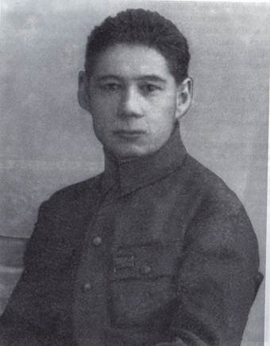
Габдулла Амантай (Амантаев Габдулла Сахипгареевич), один из основоположников башкирской филологической науки, талантливый ученый, пламенный поэт, крупный общественный деятель, родился 23 декабря 1907 г. (1908) в деревне Верхне-Кунакбаево Оренбургского уезда.Он учился всю жизнь. Сначала это было знаменитое медресе «Хусаиния» в Оренбурге – центр воспитания мусульманской культуры, затем Оренбургское педучилище (Башкирский институт народного образования) и Ленинградский институт философии и лингвистики и аспирантура.
Из стен «Хусаинии» вышли многие люди, которые, без преувеличения, составляют цвет татарской, башкирской, казахской культур. Сам педагогический коллектив представлял передовую науку по всем преподаваемым дисциплинам. Многие из преподавателей, работавших в медресе, являлись учеными с мировой известностью, имена их включены в зарубежные энциклопедии: Муса Бигиев, Гаяз Исхаки, Заки Валиди, Риза Фахретдинов, Фатих Карими и др.
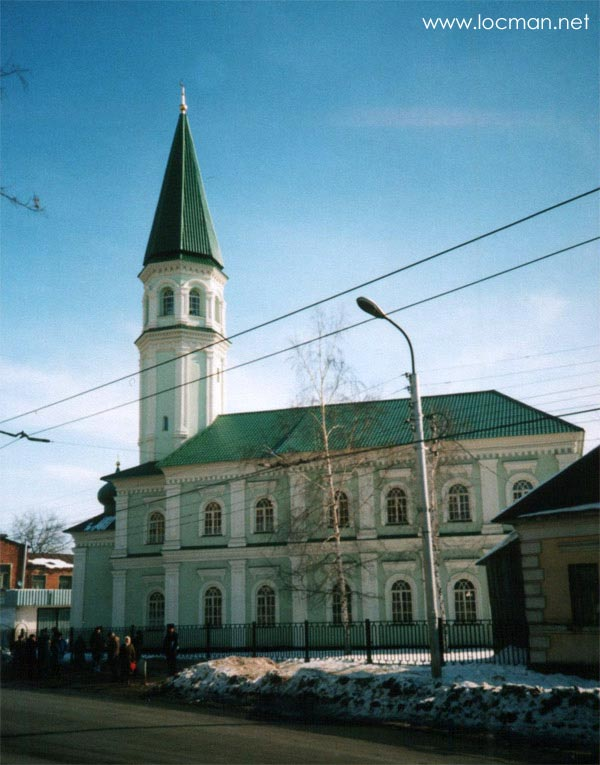
Оренбургский башкирский педагогический техникум являлся кузницей национальных кадров просвещения. Здесь учились такие известные башкирские писатели Зайнаб Биишева, Сагит Агиш, Баязит Бикбай, Гайнан Хайри.В своих воспоминаниях о Сагите Агише писатель Баязит Бикбай писал, что видный башкирский писатель после окончания Оренбургского башкирского педагогического техникума приехал в Уфу вместе со своим другом - Габдуллой Амантаем, впоследствии поэтом и ученым. «Их сильно привлекал не столько сам город, сколько газета «Молодой пролетарий», вообще печать, литературная среда, которая была в те годы в Уфе необычайно сильной и действенной, - вспоминал Бикбай. - Почти в каждом номере «Комсомольской газеты» стали появляться их темпераментные стихи».
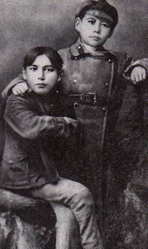 | 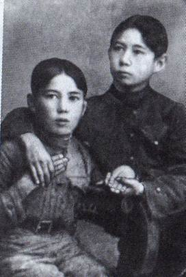 |
Г. Амантай с другом С. Агишем в 1922 и 1923 годах
Взрослую жизнь, состоящую из постоянных забот о куске хлеба, Габдулла познал очень рано. В 10-11 лет он уже был вполне самостоятельным мужчиной - так вышло, что с этих лет пришлось батрачить... И понятно, почему он с восторгом встретил весть об Октябрьской революции. Понятно, почему в 13 лет стал комсомольцем, в 16 - он уже являлся сотрудником аппарата Башкирского обкома комсомола, в 17 - заведовал его отделом печати, в 18 - редактировал газеты «Йэш юксыл» и «Башкортостан йэштэре», а в 19 - членом партии, не жалея себя, работал на различных должностях в комсомоле и Советах. С 1926-1928 гг. он - редактор газет «Башкортостан йэштэре» и «Йэш юксыл».
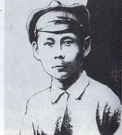 | 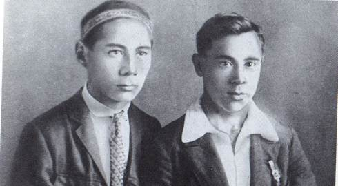 |
Писателю 14 лет Г. Амантай - секретарь Губкома комсомола и его заместитель М. Джалиль 1923 г.
В 1928-1931 годах Амантай - студент факультета восточных языков Ленинградского института философии и лингвистики. Здесь Габдулла учился вместе с талантливым башкирским поэтом Мухтаром Баимовым. Они активно участвовали в общественной жизни института, избирались членами партбюро института, после окончания института оба остались в аспирантуре. Из справки 1932 г.:
«Бывший студент Ленинградского историко-лингвистического института, ныне аспирант нашего Института тов. Амантаев Абдулла Гареевич по всем предметам успевал и успевает хорошо. Институт окончил досрочно. Аспирантский научно-исследовательский план перевыполнил досрочно. За лучшие количественные и качественные показатели, как ударник, был дважды премирован».
Амантай владел азербайджанским, казахским, узбекским языками.
В 1932 г. он - научный сотрудник Института востоковедения АН СССР в Москве.
В 1933 году после окончания аспирантуры Г. Амантая назначают директором БашНИИ языка и литературы. Одновременно он - доцент кафедры башкирской литературы Башкирского педагогического института имени К.А. Тимирязева, член БашЦИК, редактор журнала «Yктебер», к тому же активно участвует в работе Союза писателей Башкортостана.
Первое стихотворение Амантая «Мы» было опубликовано в 1921 г. в газете «Башкортостан». Ему было всего 14. В своих стихах молодой поэт воспевает активную роль советской молодежи в строительстве новой жизни. По сборнику стихов «Песни борьбы», изданному в 1927 г., можно было уже определить его поэтическое лицо. Он создал эпические поэмы «На дорогах борьбы», «Кулгайша», которые свидетельствуют о широте его поэтического диапазона.
Радости,
Великие надежды
Окружили меня со всех сторон.
Знаю,
Светло мое грядущее,
Надеждой занимается
каждая моя заря, - писал Амантай в 1926 году.
Стихотворения «Мы», «КИМ-паровоз», «Через борьбу пришли мы в этот мир», «Гори!», «Наше поколение» стали лучшими образцами башкирской поэзии того времени.
Но Амантай еще и проникновенный лирик.
Ночь... Тишь.
Слышишь,
Как тиха ночь.
Мир весь в тишь ушел.
Душе беспокойно и хорошо.
Аул заснул.
Почтительная луна
Бродит, лучи, разнося, одна
От дома к дому. И грустно журчит родник. («Ночь», 1926 г.)
В 30-е годы Амантай активно занимается творчеством: публикует отрывки из поэм «Кулгайша», «На пути борьбы», пишет две пьесы - «Враги» и «Когда минуют годы», на башкирский язык переводит роман Д.А. Фурмана «Чапаев».
Первый детский писатель Башкортостана
Габдулла Амантай был первым башкирским поэтом, пишущим для дошкольников. Он и известен в литературе как детский писатель. Поэтическое мастерство его раскрылось именно в поэзии для детей.
«…Раскладываю подстрочники, дабы попробовать представить русскому читателю Амантая-поэта. Он был больше детским писателем», - пишет А. Касымов. «На деле он заложил фундамент башкирской детской литературы. До него у нас пишущих специально для детей писателей не было», - вторит ему в поэзии для детей. Б. Баимов, исследователь творчества писателя и составитель книги «Неугасимая звезда Амантая». Рашит Шакур в книге «Знаменитые Башкиры» пишет, что поэтическое творчество Амантая можно разделить на два направления. Первое - стихи об Октябре, новой жизни, романтике, молодости, комсомоле. А второе – стихи и сказки для детей.
Одна за другой вышли книги Амантая, отличающиеся глубоким проникновением в удивительный мир детства. Сборниками «Маленьким друзьям» (1928), «Старательный Вали» (1928), «На реке», «Сказка серой вороны» (1935), «Чашка», «Домашние животные» Амантай завоевал популярность среди маленьких читателей.
Его стихи «Играя с ребенком», «Песня голубя», «Воробышек» воспринимаются как очень народные и музыкальные. Народны и неповторимы «Загадки» Амантая, состоящие из 4 строк, где 2 строки составляет вопрос для самых маленьких.
Литературный критик, фольклорист, директор института
Габдулла Амантай оставил значительные труды и в области литературной критики. Работая в отделе литературы ИИЯЛ УНЦ РАН, он провел интересные исследования творчества Даута Юлтыя и Афзала Тагирова.
История этого отдела началась 4 марта 1932 г., когда по решению Башкирского обкома ВКП(б) был организован Институт национальной культуры при Башсовнаркоме. Объединенный с отделом языка, он стал называться «Сектор языка и литературы». Первыми сотрудниками-литературоведами отдела были Г.С. Амантаев (поэт Габдулла Амантай, он же первый директор института), Г.Я. Давлетшин, Д. Юлтый, молодой писатель А. Вали и др. В секторе разрабатывалась история башкирского национального словесного искусства, изучалось творчество таких писателей как М. Акмулла, А. Тагиров, Д. Юлтый, Т. Янаби.
Работы литературоведов института в тридцатые годы по-своему отражали острую идеологическую борьбу того периода. Однако в некоторых исследованиях еще сильно было влияние вульгарного социологизма, мировоззрение втора рассматривалось в отрыве от идейно-художественных, эстетических аспектов творчества. И среди этих работ выгодно отличалась статья Г. Амантая «Принципы определения национальной литературы» (1934), многие положения которой по сей день не утратили своего значения.
Как человек широко образованный, Габдулла Амантай (он успел недолгое время поработать в Институте востоковедения Академии наук СССР) никогда не ограничивался сугубо «башкирскими» интересами. Но, создавая учебники по башкирскому языку для школ, он понимал, что это - окно в цивилизованный мир.
Амантай принимал активное участие в составлении терминологических словарей башкирского языка («Термины по математике», 1934). Он одним из первых обратился к изучению башкирского фольклора и проблем его взаимосвязи с литературой, разработал принципы сбора и публикации башкирского устно-поэтического творчества. Его статьи 1936 года «Классовый характер фольклора», «Фольклор и литературный язык», «Фольклор и художественная литература», «Жанры башкирского фольклора», «О башкирских пословицах» сыграли свою роль в башкирской фольклористике.
Особое значение имела работа Амантая «Принципы определения национальной литературы» (1934). В ней автор дал отпор тем писателям, критикам и литературоведам, которые всю историю башкирской литературы ограничивали началом XX века, связывая ее с революционным движением. Габдулла Сахибгареевич на огромном литературном материале, называя имена просветителей, авторов известных произведений прошлых веков, сэсэнов, показывает развитие башкирской литературы в глубоком историческом аспекте. В ней он также предлагает методику подхода к определению критериев национальной литературы, ее народности.
Статья Амантая появилась в уфимском журнале «Октябрь» (сейчас «Агидель»), редактором которого он был, в четвертом номере за 1934 год. В апреле того же года в институте состоялась дискуссия на тему «Проблемы стиля в башкирской литературе». На Первом съезде Советских писателей в Москве в том же году Габдулла Амантай выступил с докладом о башкирской драматургии.
Из отзыва 1933 г.:
«Тов. Амантаев специализировался по башкирской литературе, диссертационной его темой является "Бабич и его творчество". В отзыве о тов. Амантаеве мне хочется отметить следующие моменты: 1) тов. Амантаев тщательно и серьезно собирал и собирает материалы, характеризующие основные моменты башкирской литературы, место Бабича в ней и его творчество; 2) в результате этой работы тов. Амантаев показал, что уже овладел основными навыками, необходимыми в научно-исследовательской работе... 3) в беседах тов. Амантаев проявлял и проявляет в основном правильный марксистский подход к осмыслению. В связи с теор. осмыслением собр. материалов тов. Амантаев по моим указаниям повторяет соотв. места из произведений Маркса, Энгельса, Ленина, Сталина. Все задания тов. Амантаев выполняет аккуратно; 4) тов. Амантаев владеет, кроме русского, родным языком, татарским, османским, казахским, узбекским яз., что является большим плюсом».
В начале тридцатых годов Амантай заинтересовался творчеством Шайхзады Бабича.
В эти же годы судьба столкнула Амантая еще с одним интересным человеком. В 1933 г. в БашНИИ языка и литературы, директором которого был 26-летний Амантай, стал простым научным сотрудником Матвей Любавский - 73-летний ученый, автор более 200 научных работ, историк, ректор МГУ в 1911-1917 годах, академик. Амантай считал, что работа Любавского в Уфе станет весомым вкладом в развитие исторической науки республики. Так и произошло: Матвей Кузьмич подготовил здесь свои монографии о башкирских восстаниях XVII и XVIII веков, по истории башкирского землевладения и землепользования в XVII-XIX веках, о помещиках-мусульманах и их крепостных в Башкирии, а также два сборника документов по истории Башкирии.
12 февраля 1936 г. в Москве, в «Литературной газете» была напечатана статья Габдуллы Амантая «О башкирской прозе», ставшая поворотной в судьбе поэта и публициста.
В 1937 г. начали сгущаться тучи над многими деятелями башкирской культуры, в том числе и над Амантаем. Друзья, информированные люди, советовали ему уехать от надвигающейся беды куда-нибудь подальше, например, в Казахстан. «Мне нечего бояться, - отвечал им Габдулла Сахибгареевич. - Я всю жизнь честно служил моему народу, отдавая все силы. У меня четверо детей. Здесь их родина. Разве можно от них куда-то уехать?»
За ним пришли ночью 4 октября 1937 г. От громкого стука в дверь, от голосов, пришедших с ордером на его арест, проснулись дети. Провожая взглядом отца, которого уводили куда-то в ночь, они не знали, что видят его в последний раз.
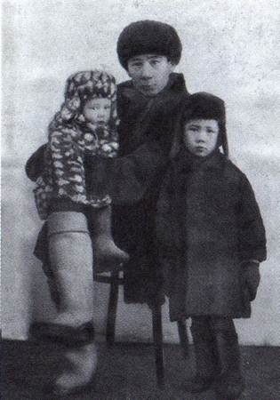
С детьми Роленой и Альбертом 1935 год
Амантаева осудили по статьям 58-2, 58-8, 58-11 к ВМН («высшей мере наказания», т.е. расстрелу).
Директору ставилась в вину засоренность аппарата института классово чуждыми элементами, в частности, его обвиняли в приглашении в качестве научных сотрудников бывшего действительного члена АН СССР М.К. Любавского (сосланного в Уфу за сокрытие личного архива Николая II), профессора Пригожина (обвинялся в участии в убийстве Кирова) и других ученых. Ему вменялось в вину создание для них условий для работы в институте.
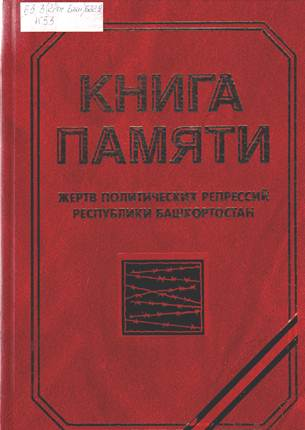
Амантаева исключили из партии и из Союза писателей.Из протокола заседания Военной коллегии Верховного суда Союза ССР, Уфа, 10 июля 1938 г.: «Председательствующий разъяснил подсудимому сущность предъявленных ему обвинений и спросил его, признает ли он себя виновным, на что подсудимый ответил, что виновным себя не признает».
Габдулла Амантаев был расстрелян 10 июля 1938 года, сразу после суда, по приговору.
Рукописи ученого и литератора пропали после его ареста.
Реабилитирован Габдулла Амантай 3 октября 1957 г., восстановлен посмертно в партии и в Союзе писателей.
Библиография
Сочинения Г. Амантая
1. Амантай, Г. Орфография башкирского языка [Текст] : на башк. яз. / Г. Амантай. - Уфа, 1934
2. Амантай, Г. Учебник и хрестоматия [Текст] : на башк. яз. / Г. Амантай .- Ч. 1 - 2. Уфа, 1934.
3. Амантай, Г. Композиция башкирских загадок [Текст] : на башк. яз. / Г. Амантай // Башкортостан. 1935.- 27 дек.
4. Амантай, Г. О башкирском устном поэтическом народном творчестве [Текст] : на башк. яз / Г. Амантай // Башкортостан. - 1935. - 29 дек.
5. Амантай, Г. Башкирские пословицы [Текст] : на башк. яз. / Г. Амантай. - Уфа, 1935.
6. Амантай, Г. Фольклорный материал [Текст] : на башк. яз.: краткое руководство по собиранию фольклорного материала / Г. Амантай. - Уфа, 1935.
7. Амантай, Г. Башкирские поговорки [Текст] : на башк. яз. / Г. Амантай. - Уфа, 1936.
8. Амантай, Г. Избранные произведения [Текст] : на башк. яз. / Г. Амантай. - Уфа, 1959.
9. Амантай, Г. День и век [Текст] : стихи, поэмы и воспоминания о поэте : [ на башк. яз.] / Г.С. Амантай ; вступ. ст. Р. Бикбаева. - Уфа: Китап, 2007. - 280 с. : ил. , портр.
10. Амантай, Г. Стихотворения [Текст] / Г. Амантай // Поэты Башкирии: антология в 2 т. Т. 1. - Уфа, Баш. кн. изд-во, 1989. - С. 138-140.
Литература о Г. Амантае
1. Агиш, С. Самые интересные дни мои [Текст] / С. Агиш // Советская Башкирия.- 1963. - 10 янв.
2. Баимов, Б. Такая короткая, яркая жизнь [Текст] / Б. Баимов // Советская Башкирия. - 1988. - 19 авг.
3. Баимов, Б. Жизнь, словно молния [Текст] / Б. Баимов // Б. Баимов Творцы: творческие портреты: очерки, статьи: на башк. яз.- Уфа : Китап, 2008. - С. 48 – 64.
4. В научном поиске [Текст] : [сб. статей] : к 50-летию Ин-та истории, яз. и лит. БФАН ССР / [отв. ред. Х. Ф. Усманов]. - Уфа, 1982. - 160 с.: ил.
5. Закиров, М. Рядом с Амантаем [Текст] / М. Закиров // Дружба (Мишкинский р-н).- 1988. -27 сент.
6. Книга памяти жертв политических репрессий Республики Башкортостан [Текст].- Т. 1. - Уфа, 1997.- С. 95.
7. Краткая литературная энциклопедия [Текст]. - Т. 1. – СПб, 1997 С. 181-182.
8. Неугасимая звезда Амантая [Текст] : воспоминания, официальные документы, отдельные произведения Габдуллы Амантая : на башк. яз. / сост. и гл. ред. Б. Баимов. - Уфа: Китап, 1998. - 175 с. : ил.- (документы биогр. характера на рус. яз. - С. 114-130; список трудов - С. 172- 173).
9. Перевозкин, Л. Кучка буржуазных националистов в Башкирии [Текст] / Л. Перевозкин // Правда. - 1937. - 17 сент.
10. Шакур, Р. Габдулла Амантай [Текст] // Р. Шакур Знаменитые башкиры: науч.- биогр. очерки: на башк. яз.- Уфа: Китап, 2005 .- С.296-303.
Интернет-ресурсы
http://memory.pvost.org/pages/amantaev.html
http://www.bashvest.ru/showinf.php?id=11654
http://www.mkset.ru/news/today/9166/
Баязит Бикбай
1909 - 1968
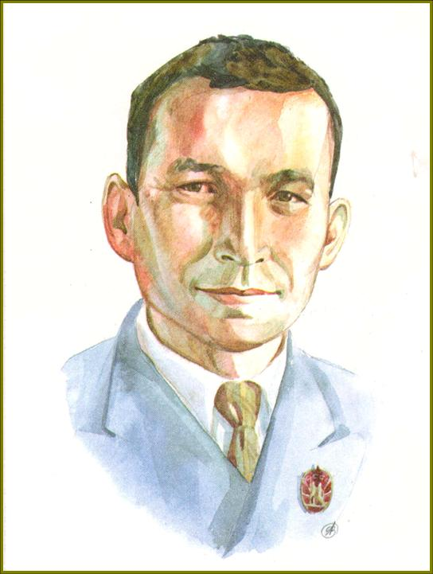
Баязит Бикбай (Баязит Гаязович Бикбаев) родился 19 января 1909 года в деревне Калта Оренбургского уезда Оренбургской губернии, ныне Куюргазинского района Башкортостана.В 1929 году закончил педагогический техникум.
Работал:
• ответственным секретарем Туймазинской районной газеты «Путь Ленина»,
• заведующим отделом газеты «Башкортостан»,
• ответственным секретарем журнала «Октябрь»,
• заведующим литературной частью Башкирского театра драмы, в Союзе писателей Башкирии.
Баязит Бикбай является автором около сорока книг, стихотворений и поэм, очерков и рассказов, либретто, пьес и повестей. Он переводчик произведений классиков русской литературы: Толстого, Тургенева, Горького.
В 1932 году вышел его первый сборник стихов «Текущие дни». Затем появились книги «За лесом», «Светлая земля».
В годы Великой Отечественной войны по состоянию здоровья он не мог быть на фронте. Но военная тема прозвучала у него в сборниках стихов «Я славлю землю», «Платочек», «Огненные строки».
С 1937 года Баязит Бикбай успешно работает и в драматургии, выступив впервые с драмой «Карлугас». Его перу принадлежат пьесы «Салават», «Кахым-туря», «Родина зовет», «Дети одной семьи». Особое место в его творчестве занимает либретто для музыкального театра.
Умер Баязит Бикбай 2 сентября 1968 года. Могила Баязита Гаязовича Бикбаева находится на мусульманском кладбище в Уфе.
Отмечая заслуги башкирского поэта, драматурга, прозаика и публициста Баязита Гаязовича Бикбаева (Баязита Бикбая), исполком Уфимского горсовета своим решением от 1 марта 1984 года назвал его именем новую улицу в Октябрьском районе.
Творчество
Особой вехой в творчестве Бикбая является поэма «Текущие дни» (1930), где поэт воспевает рост классового самосознания трудящихся, их активное участие в строительстве новой жизни. Он с помощью своеобразных художественных деталей рисует социальные изменения в жизни страны.
Крупнейшим успехом Б. Бикбая в 30-е годы и достижением всей башкирской литературы стала поэма «Земля», которая представляет собой своеобразный поэтический образ исторического прошлого и настоящего башкирского народа.
Автор, используя поэтику народного творчества, включает в сюжет произведения лишь самые яркие моменты из истории борьбы народа за землю и свободу. Основной замысел поэмы концентрируется вокруг четырёх песен, написанных в разном символическом ключе. В первой песне используются формы песен марсия, хаджвия, кубаиры. Вторая песня написана в повествовательной, эпической манере. В третьей детально описываются события колхозной жизни, реалии, времени, дается развернутый драматический конфликт. Четвёртая песня – мадхия – одическая. Поэма «Земля» по своей жанровой природе является современным героическим эпосом историко-фольклорного типа.
Во многих стихотворениях из сборников «Огненные дороги», «Наш город», «Платочек», созданных в годы Великой Отечественной войны, поэт воспевает героизм, мужество, прославляет духовное богатство советских людей. Написанные в эти годы пьесы «Родина зовёт», «Дети одного отца», «Кахым-туря», очерк «Хабирьян, купивший самолёт», ставят перед читателем воспитательные цели, что сближает их с литературой восточных народов.
Баязит Бикбай, опираясь в творчестве на поэтику фольклора, одновременно успешно осваивает опыт русской и мировой поэзии.
В послевоенные годы Б. Бикбай успешно работает в области прозы.В романе «Когда разливается Акселян» (1958) впервые раскрывается трагедия личности, вынужденной жить по строго установленным нормам существующего строя. Незаурядная натура пытающегося найти своё место в новой жизни Фахри исключает возможность заключения душевных порывов в узкие рамки требований и обязанностей, и его жизнь заканчивается гибелью. Роман «Когда разливается Акселян» посвящён формированию новых типов людей и социальных групп. Роман своей ярко выраженной многогранностью и многотемностью несёт и жанровые новаторства. Автор достигает новой ступени типизации и обобщения. Повести «Аксэскэ» (1963), «Живые родники» (1968) написаны в жанре автобиографии. Своей поэзией, прозой, драматургией и переводами Баязит Бикбай внес неоценимый вклад в развитие башкирской литературы.
Библиография
Основные произведения Баязита Бикбая на башкирском языке
1. Бикбай, Б. Да здравствует жизнь! [Текст] : стихи / Б. Бикбай. - Уфа: Башгосиздат, 1939. - 80 с.
2. Бикбай, Б. Да здравствует жизнь! [Текст] : стихи / Б. Бикбай. - Уфа: Башгосиздат, 1942. - 32 с.
3. Бикбай, Б. Карлугас [Текст] : музыкальная драма / Б. Бикбай. - Уфа: Башгосиздат, 1939.
4. Бикбай, Б. Светлая земля [Текст] : стихи / Б. Бикбай. - Уфа: Башгосиздат, 1941. - 158 с.
5. Бикбай, Б. Слава земле [Текст] : стихи / Б. Бикбай. - Уфа: Башгосиздат, 1943. - 32 с.
6. Бикбай, Б. Хабирьян, купивший самолёт [Текст] / Б. Бикбай. - Уфа: Башгосиздат, 1944. - 20 с.
7. Бикбай, Б. Голубята [Текст] : комедия / Б. Бикбай. - Уфа: Башгосиздат, 1946. - 20 с.
8. Бикбай, Б. Герой Советского Союза Гафият Арсланов [Текст] / Б. Бикбай. - Уфа: Башгосиздат, 1946. - 40 с.
9. Бикбай, Б. Новые стихи [Текст] / Б. Бикбай. - Уфа: Башгосиздат, 1951.- 60 с.
10. Бикбай, Б. Дорога [Текст] : лирика, драма («Салават»). / Б. Бикбай. - Уфа: Башгосиздат, 1955. - 226 с.
11. Бикбай, Б. Когда разливается Акселян [Текст] : роман / Б. Бикбай. - Уфа: Башгосиздат, 1959. - 320 с.
12. Бикбай, Б. Искорки [Текст] : стихи / Б. Бикбай. - Уфа: Башгосиздат, 1961. - 102 с.
13. Бикбай, Б. Память [Текст]: стихи, поэмы / Б. Бикбай. - Уфа: Башгосиздат, 1962. - 114 с.
14. Бикбай, Б. Аксәскә [Текст]: повесть, рассказы и очерки / Б. Бикбай. - Уфа: Башкнигоиздат, 1962. - 12 с.
15. Бикбай, Б. Пьесы [Текст] / Б. Бикбай. - Уфа: Башкнигоиздат. 1964. - 158 с.
16. Бикбай, Б. Народный певец Хабиб Галимов [Текст] / Б. Бикбай. - Уфа: Башкнигоиздат 1965. - 20 с.
17. Бикбай, Б. Утренний свет [Текст]: стихи и поэмы / Б. Бикбай. - Уфа: Башкнигоиздат, 1967. - 128 с.
18. Бикбай, Б. Живые родники [Текст]: повесть / Б. Бикбай. - Уфа: Башкнигоиздат, 1968. - 104 с.
19. Бикбай, Б. Млечный путь [Текст]: стихи / Б. Бикбай. - Уфа: Башкнигоиздат, 1972. - 64 с.
Переводы на башкирский язык
1. Иванов, К. Поэма [Текст] / К. Иванов; пер. Б. Бикбай - Уфа: Башгосиздат, 1941. - 100 с.
2. Бубеннов, М. Белая берёза [Текст]: роман. Кн.1 / М. Бубеннов ; пер. Б. Бикбай. - Уфа: Башгосиздат, 1949. - 384 с.
3. Бубеннов, М. Белая берёза [Текст] : роман.Кн. 2 / М. Бубеннов ; пер. Б. Бикбай. - Уфа: Башгосиздат, 1955. - 432 с.
4. Горький, М. Мои университеты [Текст] / М. Горький ; пер. Б. Бикбай. - Уфа: Башгосиздат, 1951. - 160 с.
5. Рыльский, М. Лирика [Текст] : стихи / М. Рыльский ; пер. Б. Бикбай. - Уфа: Башгосиздат, 1962. - 108 с.
6. Маршак, С. Стихи [Текст] / С. Маршак ; пер. Б. Бикбай. - Уфа: Башгосиздат, 1964. - 78 с.
Жизнь и творчество Баязита Бикбая
1. Вали, А. Поэт Б. Бикбай [Текст] : предисл. к кн. «Слава земле» / А. Вали.- Казань. - 1941. - [тат.яз].
2. Рамазанов, Г. Новые стихи Б. Бикбая [Текст] / Г. Рамазанов // Эдэби Башкортостан. - 1952. – С.5 - [ башк. яз].
3. Ишбулатов, Н. О языке романа «Когда разливается Акселян» [Текст] / Н. Ишбулатов // Эдэби Башкортостан. - 1957. - № 6. - [ башк. яз].
4. Гайнуллин, М. О прозе 1956 года [Текст] / М. Гайнуллин. - //Эдэби Башкортостан. - 1957. - № 4. - [ башк. яз].
5. Гималова, М. О драме Б. Бикбая «Кахым-туря» / [Текст] / М. Гималова .// Эдэби Башкортостан. - 1958. - № 3. - [ башк. яз.].
6. Карим, М. Пусть всходы будут обильными [Текст] / М. Карим // Литературная газета. - 1958. - 1 апр.
7. Гималова, М. Всегда с народом [Текст] / М. Гималова // Эдэби Башкортостан. - 1959. - Вып. 12.
8. Александрова, К. Первая в Башкирии [Текст] / К. Александрова // Советская культура. - 1960. - 14 мая.
9. Шумская, Н. Первая башкирская комедия [Текст] / Н. Шумская // Советская музыка. - 1960. - № 2.
10. Гималова, М. Внеклассная работа по изучению творчества Б. Бикбая [Текст] / Л.Г. Бараг История башкирской литературы / Л.Г. Бараг ; т. 2.- 1966. - С. 149-195.
11. Саитбатталов, Г. Роль Б. Бикбая в развитии башкирского литературного языка [Текст] / Г. Саитбатталов // Башкортостан укытыусыһы. - 1968. - № 12. - [башк. яз].
12. Карим, М. О друге [Текст] / М. Карим // Агидель. - 1969. - № 1.
Бикчентаев Анвер Гадеевич
1913 - 1989
«Я поставил бы свой стол там, где сходятся семь разных дорог...»
Бикчентаев Анвер Гадеевич
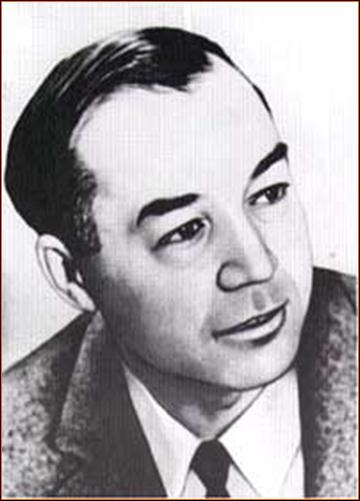
«От своих предков-кочевников я почему-то не унаследовал страсти к обузданию диких скакунов, не получился из меня и лихой наездник. Однако мне передалась от них привязанность к дорогам, вечная тяга к кочевому образу жизни. Сильна во мне страсть к путешествиям, и будь малейшая возможность, я поставил бы свой стол там, где сходятся семь разных дорог...» Так писал в одной из автобиографических заметок видный башкирский писатель Анвер Бикчентаев.Таким перекрестком для Анвера Гадеевича стала Уфа – город, где он родился, куда вернулся в 1933 году, чтобы уже никогда надолго не расставаться.
Биография Бикчентаева А.Г.
Бикчентаев Анвер Гадеевич - всемирно известный уфимский писатель. Родился 4 октября 1913 года в Уфе. Родители писателя, служащие, были выходцами из села Абсалямово нынешнего Аургазинского района; отец закончил в своё время медресе "Хусаиния" в Оренбурге. В 1921 году семья Бикчентаевых переехала из голодающей Уфы в Оренбург. Здесь Анвер Бикчентаев окончил школу, в 1928-1931 годах учился в татарском педагогическом техникуме, а после его окончания был направлен на работу в г. Архангельск завучем татарской школы-семилетки. Ещё студентом техникума он увлекался авиацией: в 1931 году в газете «Оренбургская коммуна» появилась его статья «Утопии Жюля Верна – большевистскую реальность», затем в газете «Техника» - публикация, где юный автор обещал стать «активным борцом в осуществлении проблемы приведения в действие реактивных двигателей и покорения стратосферы». Позже, работая в Архангельске, занимался организацией группы по изучению реактивных двигателей при Осоавиахиме, интересовался вопросами межпланетных путешествий. Своему тогдашнему кумиру, К. Э. Циолковскому, комсомолец Бикчентаев написал письмо с просьбой порекомендовать книги в этой области и разрешить перевести труды учёного на родной язык. Циолковский незамедлительно ответил, прислал рекомендательный список литературы и 2 книги. Мечта стать авиаконструктором привела будущего писателя в Московский авиационный институт, где он проучился три месяца. Через некоторое время Бикчентаев отправился на Дальний Восток, учительствовать в таёжной деревне Новая Уфа Мазановского района, где жили переселенцы из Башкирии.
В 1933 году будущий писатель вернулся в родную Уфу и начал работать в республиканской газете "Коммуна" (ныне – «Кызыл Тан»). Не сиделось ему на месте без дальних дорог, без кипучей боевой романтики… В 1935 году Анвер Бикчентаев вместе с пятью товарищами организовал комсомольский лодочный поход по маршруту Уфа – Москва. За 38 дней на обыкновенной лодке уфимские допризывники проплыли по рекам: Белой, Каме, Волге, Москве – и в столице вручили наркому обороны СССР К. А. Ворошилову рапорт о достойной боевой подготовке молодёжи Башкирии.
В 1935-1936 годах - служба в Красной Армии. После демобилизации Бикчентаев вновь возвратился к журналистике: работал литературным сотрудником в газетах "Йэш коммунар", "Водник Башкирии", "Швейник Башкирии". В 1941 году окончил Башкирский педагогический институт им. Тимирязева (ныне БашГУ). Первый рассказ А. Г. Бикчентаева «Письмо в Лондон» был опубликован ещё 20 января 1934 года в газете «Коммуна». С этого времени его очерки и зарисовки регулярно появлялись в печати. Но по-настоящему его литературное творчество началось в годы Великой Отечественной войны.
Война застала А. Г. Бикчентаева в должности заместителя редактора газеты «Ленинец». В первые дни он ушел добровольцем на фронт. Там не было лёгких дорог, и одну из тяжелейших прошёл гвардии майор, политрук Бикчентаев. Попав в окружение, он из разрозненных групп красногвардейцев собрал боевой отряд – и, героически прорвав вражеское кольцо, вывел его на передовые позиции. Участвовал в боях на Курской дуге, в сражениях за Карпаты и Дунай, за освобождение городов Венгрии и Австрии. В переломные годы войны он стал корреспондентом газет 27-й армии и 2-го Украинского фронта, служил вместе с С.С. Смирновым, автором «Брестской крепости». В 1943 году А. Бикчентаев доставил в Уфу, в Башкирское издательство, рукопись своей первой книги – сборника военных рассказов и очерков «Красные маки». Книга вышла в 1944 году.
 На венгерской земле 3 января 1945 состоялась неожиданная встреча двух будущих корифеев башкирской литературы, писателей-фронтовиков, Анвера Бикчентаева и Мустая Карима, позднее вошедшая в рассказ Анвера Гадеевича «Я твой собрат по перу». Война завершилась для Бикчентаева в мае 1945 г. в Словакии. За боевые заслуги он был награждён орденами Красного Знамени (1942), Красной Звезды (1943), Отечественной войны 1-й степени (1985) и 2-й степени (1944), боевыми медалями.
На венгерской земле 3 января 1945 состоялась неожиданная встреча двух будущих корифеев башкирской литературы, писателей-фронтовиков, Анвера Бикчентаева и Мустая Карима, позднее вошедшая в рассказ Анвера Гадеевича «Я твой собрат по перу». Война завершилась для Бикчентаева в мае 1945 г. в Словакии. За боевые заслуги он был награждён орденами Красного Знамени (1942), Красной Звезды (1943), Отечественной войны 1-й степени (1985) и 2-й степени (1944), боевыми медалями.
В послевоенные годы (1945-1947) А. Г. Бикчентаев работал заведующим отделом газеты "Советская Башкирия", а с 1947 года занимался, в основном, литературным трудом. В 1946 году вышел его сборник «Новеллы о русском солдате», в основу которого легли фронтовые впечатления.
В 1956 году Бикчентаев окончил Высшие литературные курсы при Союзе писателей СССР и заочное отделение Литературного института им. А. М. Горького.
Анвер Бикчентаев пришел в литературу через журналистику, имея большой жизненный опыт. Один из его героев говорит: «Если бы была возможность, я поставил бы свой письменный стол на перекрестке семи дорог…» Эти слова писателя как будто сказаны о самом себе. Действительно, А. Г. Бикчентаев исколесил родную страну и многие страны мира. Книги его, при всей лаконичности языка и стиля, динамичны и увлекательны. Творчество Анвера Гадеевича литературоведы считают уникальным явлением башкирской прозы.
Начав свой путь в литературе с очерков и новелл, А. Бикчентаев стал автором двух романов, нескольких повестей и рассказов, которые издавались в разных странах мира в переводе почти на два десятка языков: английский, болгарский, венгерский, испанский, итальянский, китайский, французский, армянский, киргизский, литовский и др., а также языки народов Индии. В частности, повесть «Право на бессмертие» (в новой редакции – «Орёл умирает на лету») первой из башкирских книг была переведена и издана в Китае, Болгарии, Польше. Все произведения писателя печатались на русском языке в Москве и других крупных городах бывшего СССР, что сделало его популярным у широкого читателя и принесло известность башкирской литературе. Произведения Бикчентаева о войне и современности, о детях и взрослых, как правило, опирались на документальные материалы или на достоверные факты из жизни. После повестей «Большой оркестр» (1956), «Дочь посла» (1959) к нему пришла всемирная слава детского писателя. Книга «Большой оркестр» полюбилась читателям всех возрастов и завоевала популярность в своей стране и за рубежом: она не раз издавалась массовыми тиражами на русском языке и переводилась почти на два десятка других языков, в т.ч. почти на все европейские. Проблемы формирования детского коллектива, взаимоотношения мальчиков и девочек, взрослых и детей, показаны в повести своеобразно и интересно. Писатель ставит перед обществом, перед родителями вопросы воспитания подрастающего поколения, как одну из главных задач.
А. Г. Бикчентаев работал также в области драматургии. По его пьесе был поставлен спектакль «Грозовое лето» на сцене Башкирского академического театра драмы; по его сценариям созданы замечательные фильмы «Советская Башкирия» и «Журавлиная песнь», которые являются великолепным образцом достижений национальной культуры.
Не расставался он и с журналистикой: в течение ряда лет был членом редколлегии еженедельника «Литературная Россия», журналов «Хэнэк», «Пионер» (Уфа), «Башкортостан кызы». Часто выступал в печати с публицистическими, литературоведческими статьями («Наша детская литература», «Национальная форма и новаторство», «О наших рассказах», «Писательская этика», «Книга — это поле боя», «Долг перед юным читателем», «Салаватия», «Борьба за образы современников», «Дороги дарят книги» и др.)
Много путешествовал по республике и всему Советскому Союзу. Принимал активное участие в общественной жизни республики, являясь членом правления и партбюро Союза писателей Башкирии, а также членом правления Союза писателей РСФСР.
Заметным достижением писателя явился роман «Я не сулю тебе рая» (1963) о современниках – работниках Салаватского нефтехимического комбината. В период работы над произведением писатель постоянно жил и работал в г. Салавате, общался со специалистами, инженерно-техническими работниками, с молодежью.
За романы «Лебеди остаются на Урале», «Я не сулю тебе рая» и повесть «Прощайте, серебристые дожди» А. Г. Бикчентаеву присуждена премия имени Салавата Юлаева (1974). Он стал лауреатом комсомольской премии им. Г. Саляма (1967), заслуженным работником культуры Российской федерации (1970). За заслуги в развитии литературы и искусства в 1963 году получил орден «Знак Почёта», в 1972 году - орден Октябрьской революции.
Умер писатель в Уфе 18 мая 1989 года. Похоронен в мемориале на Мусульманском кладбище. В Уфе на доме по улице Достоевского, 73, где он жил, установлена мемориальная доска.
Библиография
«Богатая биография писателя – одно из условий творчества…»
Анвер Бикчентаев
Произведения А. Г. Бикчентаева на башкирском языке
1. Бикчентаев, А. Г. Сочинения [Текст] : в 3 т. / А. Г. Бикчентаев. – Уфа : Башк. кн. изд-во, 1983. - (На башк. яз.).
2. Бикчентаев, А. Г. Избранные произведения [Текст] : в 2 т. / А. Г. Бикчентаев. – Уфа : Башк. кн. изд-во, 1973-1974. - (На башк. яз.).
3. Бикчентаев, А. Г. Избранное [Текст] / сост. Л. Г. Ималова. – Уфа : Китап, 2010. – 400 с. - (На башк. яз.).
4. Бикчентаев, А. Г. Адъютанты не умирают [Текст] : повесть / А. Г. Бикчентаев. – Уфа : Башк. кн. изд-во, 1962. – 66 с. - (На башк. яз.).
5. Бикчентаев, А. Г. Большой оркестр [Текст] : повесть / А. Г, Бикчентаев. – Уфа : Башк. кн. изд-во, 1957. – 174 с. - (На башк. яз.).
6. Бикчентаев, А. Г. Девушка в шароварах [Текст] : рассказы / А. Г. Бикчентаев. – Уфа, 1960. – 180 с. - (На башк. яз.).
7. Бикчентаев, А. Г. Дорога Карасяя [Текст] : роман / А. Г. Бикчентаев. – Уфа : Башк. кн. изд-во, 1957. – 280 с. - (На башк. яз.).
8. Бикчентаев, А. Г. Дочь посла [Текст] : повесть / А. Г. Бикчентаев. – Уфа : Башк. кн. изд-во, 1959 . – 102 с. - (На башк. яз.).
9. Бикчентаев, А. Г. Маленький адъютант [Текст] : повесть / А. Г. Бикчентаев. – Уфа : Башк. кн. изд-во, 1961. – 38 с. - (На башк. яз.).
10. Бикчентаев, А. Г. Мальчики с побережья [Текст] : повесть / А. Г. Бикчентаев. – Уфа,1969. – 126 с. - (На башк. яз.).
11. Бикчентаев, А. Г. Нам по тринадцать [Текст] : повесть и рассказы / А. Г Бикчентаев. – Уфа : Башк. кн. изд-во, 1966. – 134 с. - (На башк. яз.).
12. Бикчентаев, А. Г. Орел умирает на лету [Текст] : повесть / А. Г. Бикчентаев. – Уфа : Башк. кн. изд-во, 1958. – 384 с. - (На башк. яз.).
13. Бикчентаев, А. Г. Сколько лет тебе, комиссар? [Текст] / А. Г. Бикчентаев. – Уфа : Башк. кн. изд-во, 1990. – 126 с. - (На башк. яз.).
14. Бикчентаев, А. Г. Я не сулю тебе рая [Текст] : роман / А. Г. Бикчентаев. – Уфа : Башк. кн. изд-во, 1963. – 214 с. - (На башк. яз.).
Произведения А. Г. Бикчентаева на татарском языке
1. Бикчентаев, А. Г. Большой оркестр [Текст] : повесть / А. Г. Бикчентаев. – Казань, 1968. – 166 с. - (На тат. яз.).
Произведения А. Г. Бикчентаева на русском языке
1. Бикчентаев, А. Г. Адъютанты не умирают [Текст] : повести и рассказы / А. Г. Бикчентаев. – Уфа : Башк. кн. изд-во, 1988. – 447 с.
2. Бикчентаев, А. Г. Бакенщики не плачут [Текст] : рассказ / А. Г. Бикчентаев. – М.: Дет. мир, 1963. – 12 с.: ил.
3. Бикчентаев, А. Г. Большой оркестр [Текст] : повесть / А. Г. Бикчентаев. – М. : Дет. лит., 1983. – 144 с.: ил.
4. Бикчентаев, А. Г. Весна, похожая на крик [Текст] : роман / А. Г. Бикчентаев. – М.: Современник, 1985. – 208 с.
5. Бикчентаев, А. Г. Волны Караидели [Текст] : рассказы / А. Г. Бикчентаев. – Уфа, 1949. – 80 с.
6. Бикчентаев, А. Г. Дочь посла [Текст] : повести и рассказы / А. Г. Бикчентаев. – Уфа: Башк. кн. изд-во, 1970. – 294 с.: ил.
7. Бикчентаев, А. Г. Красные маки [Текст] : рассказы / А. Г. Бикчентаев. – Уфа, 1944. – 52 с.
8. Бикчентаев, А. Г. Лебеди остаются на Урале ; Я не сулю тебе рая [Текст] : романы / А. Г. Бикчентаев. – М.: Худож. лит., 1983. – 446 с.
9. Бикчентаев, А. Г. Маленький Хосе [Текст] : рассказ / А. Г. Бикчентаев. – М.: Малыш, 1965. – 26 с .: ил.
10. Бикчентаев, А. Г. Новеллы о русском солдате [Текст] / А. Г. Бикчентаев. – Уфа, 1946. – 100 с.
11. Бикчентаев, А. Г. Право на бессмертие [Текст] : / А. Г. Бикчентаев. – Уфа, 1950. –247 с.
12. Бикчентаев, А. Г. Прощайте, серебристые дожди…[Текст] : сборник /А. Г. Бикчентаев. – Уфа: Башк. кн. изд-во, 1986. – 224 с.: ил.
13. Бикчентаев, А. Г. Семь атаманов и один судья [Текст] : рассказы / А. Г. Бикчентаев. – Уфа: Башк. кн. изд-во, 1980. – 239 с.: ил.
14. Бикчентаев, А. Г. Сколько лет тебе, комиссар? Прощайте, серебристые дожди [Текст] / А. Г. Бикчентаев. – М.: Дет. лит., 1979. – 238 с.: ил.
15. Бикчентаев, А. Г. Я не сулю тебе рая [Текст] : роман / А. Г. Бикчентаев. – Уфа: Башк. кн. изд-во, 1977. – 247 с.
Произведения А. Г. Бикчентаева для детей и юношества
1. Бикчентаев, А. Г. Адъютанты не умирают [Текст] : повести и рассказы / А. Г. Бикчентаев. – Уфа : Башк. кн. изд-во, 1988. – 447 с.
2. Бикчентаев, А. Г. Бакенщики не плачут [Текст] : рассказ / А. Г. Бикчентаев. – М.: Дет. мир, 1963. – 12 с.: ил.
3. Бикчентаев, А. Г. Большой оркестр [Текст] : повесть / А. Г. Бикчентаев. – М.: Дет. лит., 1983. – 144 с.: ил.
4. Бикчентаев, А. Г. Волны Караидели [Текст] : рассказы / А. Г. Бикчентаев. – Уфа, 1949. – 80 с.
5. Бикчентаев, А. Г. Дочь посла [Текст] : повести и рассказы / А. Г. Бикчентаев. – Уфа: Башк. кн. изд-во, 1970. – 294 с.: ил.
6. Бикчентаев, А. Г. Маленький Хосе [Текст] : рассказ / А. Г. Бикчентаев. – М.: Малыш, 1965. – 26 с .: ил.
7. Бикчентаев, А. Г. Орел умирает на лету [Текст] : повесть / А. Г. Бикчентаев. – Уфа: Новый стиль, 2005. – 176 с.: ил.
8. Бикчентаев, А. Г. Прощайте, серебристые дожди…[Текст] : сборник /А. Г. Бикчентаев. – Уфа: Башк. кн. изд-во, 1986. – 224 с.: ил.
9. Бикчентаев, А. Г. Семь атаманов и один судья [Текст] : рассказы / А. Г. Бикчентаев. – Уфа: Башк. кн. изд-во, 1980. – 239 с.: ил.
10. Бикчентаев, А. Г. Сколько лет тебе, комиссар? Прощайте, серебристые дожди [Текст] / А. Г. Бикчентаев. – М.: Дет. лит., 1979. – 238 с.: ил.
Статьи об А. Г. Бикчентаеве
1. Анвер Бикчентаев (1913-1989) [Текст] // Созидатели. – Уфа, 2000. – С. 74-81.
2. Багуманов, А. Анвер Бикчентаев (1913-1989) [Текст] / А. Багуманов, Ф. Фаизова // Лауреаты премии имени Салавата Юлаева. – Уфа, 1999. – С. 55-57.
3. Белов, М. Анвер Бикчентаев [Текст] : творческий портрет / М. Белов // Детская литература . – 1969. - № 2. – С. 78: портр.
4. Бикчентаев Анвер Гадеевич [Текст] // Башкортостан : краткая энциклопедия. – Уфа, 1996. – С. 180.
5. Гайнуллин, М. Анвер Бикчентаев [Текст] / М. Гайнуллин, Г. Хусаинов // Писатели советской Башкирии. – Уфа, 1977. – С. 81-85.
6. Галеев, И. Его дороги дарили книги [Текст] / И. Галеев // Истоки. - 2003. – 24 сентября (39). - С. 11. : ил., фото.
7. Голов, В. Памяти Анвера Бикчентаева [Текст] : открытие мемориальной доски / В. Голов // Вечерняя Уфа . – 1996. – 24 мая.
8. Дороги дарили ему книги [Текст] // Заман-Башкортостан. – 1997. – 17 мая.
9. Докучаева, А. Соленые семечки газетной науки [Текст] / А. Докучаева / /Вечерняя Уфа. - 2008. - 23 сентября. - С. 4. : ил.
10. Заянчковская, И. Писатель – оптимист [Текст] / И. Заянчковская // Истоки. - 2003. - № 5. - С. 6. : ил., фото.
11. Кондратьев, А. Пусть в чужой стране идет золотой дождь [Текст] / А. Кондратьев // Истоки. - 1993. - № 19.
12. Куклис, Г. Писатель бойцовского склада [Текст] : о творчестве А. Бикчентаева / Г. Куклис // Детская литература. – М., 1979. – С. 160-78.
13. Любимый писатель детей [Текст] // Русский язык в башкирской школе . – 1998. - № 5. – С. 50.
14. О творчестве А. Бикчентаева [Текст] // История башкирской литературы : в 6 т. – Уфа, 1993. – Т. 5. – С. 11-13, 183-186, 380-404, 563-570, 575-585.
15. Памяти Анвера Бикчентаева [Текст] // Вечерняя Уфа. - 1996. - 24 мая (98). - С. 1.
Открытие мемориальной доски А. Бикчентаеву.
16. Сафуанов, С. О произведениях Анвера Бикчентаева для детей [Текст] / С. Сафуанов // Проблемы развития башкирской детской литературы. – Уфа, 1988. – С. 115-161. - (На башк. яз.).
17. Сафуанов, С. Творчество Анвера Бикчентаева [Текст] / С. Сафуанов. – Уфа : Башк. кн. изд-во, 1971. - (На башк. яз.).
18. Сержантова А. Труби счастье [Текст] / А. Сержантова // Литературная Россия. - 1998. - № 10 (март). - С. 14.
19. Узиков, Ю. На улице космической [Текст] / Ю. Узиков // Бельские просторы. – 2011. - № 4 . – С. 129 - 133.
В 30 –х годах прошлого века известный башкирский писатель А. Бикчентаев написал письмо К. Э. Циолковскому и получил ответ на него.
20. Узиков Ю. Улица славного сына [Текст] // Вечерняя Уфа. - 2001. - № 151 (7 августа). - С. 3. - (Имя на карте города).
В 30-х годах известный башкирский писатель А. Бикчентаев написал письмо К. Э. Циолковскому и получил ответ на него.
21. Узиков Ю. Циолковский пишет Бикчентаеву [Текст] // Истоки. - 1996. - № 3 (февраль). - С. 12.
22. Ушакова, Э. С. Мечтать и дерзать суждено лишь отважным! [Текст] / Э. С. Ушакова // Башкортостан укытыусыhы. - 2010. - № 10. - С. 50-55.
Урок внеклассного чтения по роману А.Г. Бикчентаева "Весна, похожая на крик".
23. Хамматова, Г. Такая лучезарная улыбка [Текст] / Г. Хамматова // Вечерняя Уфа. – 2003. – 4 октября.
Воловик Михаил Яковлевич
1917 - 1994
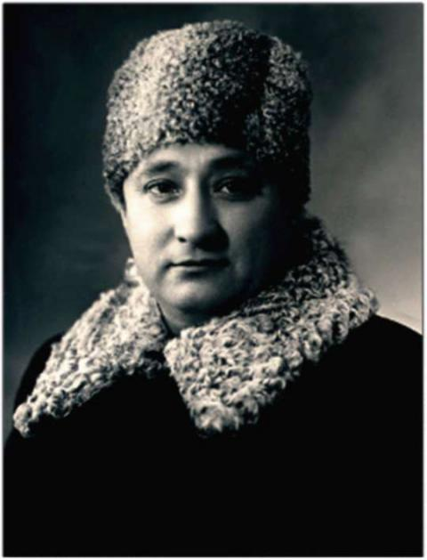
Михаил Яковлевич Воловик родился 21 декабря 1917 года в городе Глухове Сумской области Украины.После скоропостижной смерти отца Михаил, в 14 лет, поступил на завод в качестве ученика токаря, а затем работал токарем по металлу на Запорожском моторостроительном заводе и одновременно учился на рабфаке.
В 1935 году он поступил учиться в Запорожский машиностроительный институт, по окончании которого его направили на Уфимский моторостроительный завод. Михаил Яковлевич Воловик проработал на авиационном заводе УМПО 50 лет. Начинал свою карьеру мастером, а завершил заместителем главного инженера и конструктора, будучи при этом беспартийным. За годы работы создал 114 изобретений — от принципиально новых двигателей и агрегатов до станков и приспособлений. Параллельно с работой на заводе 25 лет преподавал в авиационном институте, был доцентом, членом-корреспондентом Башкирской академии наук. Помимо основной деятельности Михаил Воловик известен, прежде всего, как талантливый писатель-сатирик.
Одним из его близких друзей был Александр Филиппов. Также дружил с Пайкиным Леонидом Ефимовичем.
Судьба навсегда породнила Михаила Воловика с Уфимским моторостроительным объединением.
Михаил Воловик умер в 1994 году. Через три года в Уфе, на доме 13 по улице Сельской Богородской, где он жил, установили мемориальную доску.
Труд на заводе Михаил Яковлевич успешно сочетал с писательской работой. Первые его сатирические стихи и басни были опубликованы в газетах «Черниковский рабочий» и «Советская Башкирия» в 1945 году. Но наибольшую известность М. Я.
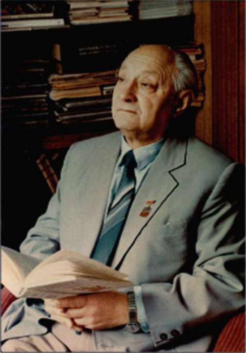
Воловику принесли сатирические и юмористические произведения. Первые книги «Солнце и свинья» (1952), «Карикатура с натуры» (1962) написаны в жанре басни.С 1949 года член Союза писателей Башкортостана. В 1961 году избран членом Союза писателей СССР. Трудно вообразить, как при таком жизненном ритме ему удалось еще написать 42 книги стихов и басен. За творческую работу Воловик был награжден 18 орденами и медалями, он был заслуженным деятелем науки и техники СССР, заслуженным деятелем культуры РСФСР, БАССР, лауреатом государственной премии, ему было присвоено множество званий: Заслуженный рационализатор РСФСР, почетный член НТО СССР, Заслуженный машиностроитель Башкортостана, отличник Авиапрома СССР.
Книги М. Воловика изданы в Уфе, в Москве, в Киеве, переведены на несколько языков: башкирский, татарский, казахский, узбекский, украинский, белорусский, польский, болгарский, чешский и финский.
Неоценимую помощь Михаил Яковлевич оказал своим башкирским коллегам переводами их произведений на русский язык. В 1992 году правление Союза писателей Башкортостана вручило Воловику специальную и единственную в своем роде в истории этой организации литературную премию, одному из 140 писателей республики, за создание книги «Мысли вслух» - антологии башкирской сатирической поэзии, куда вошли лучшие произведения 31 автора, переведенные им на русский язык. Благодаря ему русскоязычные читатели смогли глубже узнать башкирскую культуру, и сам он на протяжении десятков лет обращался к башкирскому народу, народному творчеству.
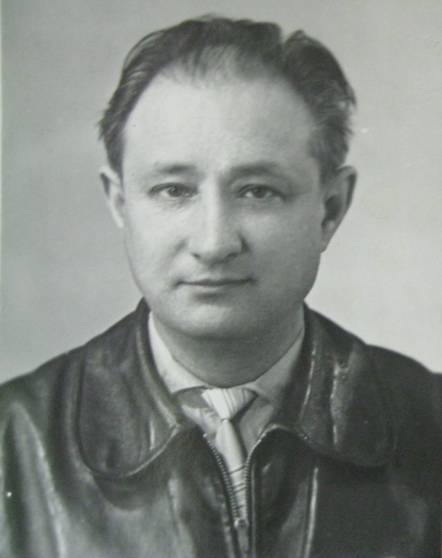
Мастерство поэта-баснописца Михаила Воловика широко известно читателям. Его умение сочетать в короткой миниатюре искрометную шутку, важную мысль и каламбур присуще и книге «Лаконизмы», где автор справедливо бичует тех, кто нерадиво относится к делу, пытается больше взять у народа, чем внести в общенародную копилку. Его юмористические стихи, басни, остроумные двустишия печатались в центральных журналах: «Крокодил», «Москва», «Смена», «Нева», «Урал» и др. Их набирается более 300.В «Ответах Акмуллы», написанных в форме стихотворных новелл, поэт воссоздает образ непреклонного борца за справедливость – поэта-просветителя М. Акмуллы.
Книги "Завод мой - гордость моя" (1975) и "Наша с тобой биография" (1985), созданные Михаилом Воловиком совместно с писателем Иваном Сотниковым, являются первыми и пока единственными источниками по истории засекреченного когда-то (оборонного) Уфимского моторостроительного завода.
Эпиграфом к книге «Наша с тобой биография» авторы выбрали следующие строчки:
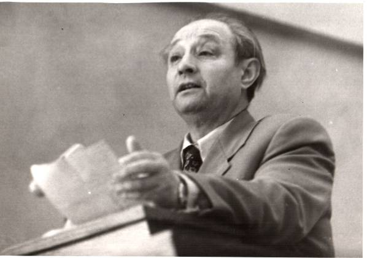
Мне не помнить об этом нельзя,И не думать об этом не вправе я.
Это наша родная земля,
Это наша с тобой биография.
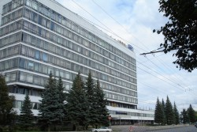
Михаил Воловик для детей
Блестящий переводчик произведений башкирских и украинских писателей Михаил Яковлевич нежно и бережно любил народ Башкортостана, его древнюю культуру и подарил миру созданные им сказания об Ерэнсэ-сэсэне и Алдар-кусэ. Автор поместил в книге «Сказание о Ерэнсэ-сэсэне» такие сюжеты, которые создали обобщенный образ легендарного героя-острослова Ерэнсэ-сэсэна. Вслед за «Сказанием о Ерэнсэ-сэсэне» Михаил Воловик создал образ хитреца-мудреца Алдара-кусэ, вошедшего в книгу «Лес чудес». В книге «Лес чудес» многие сказки написаны на сюжеты, бытующие в народе. Таковы «Проделки Алдара», с которым в башкирском народе связан образ хитреца и плута, находчивого и дерзкого молодого человека, умеющего провести не только аксакала и хана, но даже самого шайтана.
В сказках «Пять волшебных колец», написанных на сюжеты русских сказок, - волшебная сила Кольца приносит счастье тем, кто добивается его не только для себя, но и для других. И очень хорошо, что любое волшебство становится беспомощным, когда им вдруг завладевает эгоист, лентяй или незнайка. Часть сказок придумана автором. Таковы «Золотые руки», «Каракалпакская легенда», «Самородная земля» и другие.
Михаил Воловик в театре
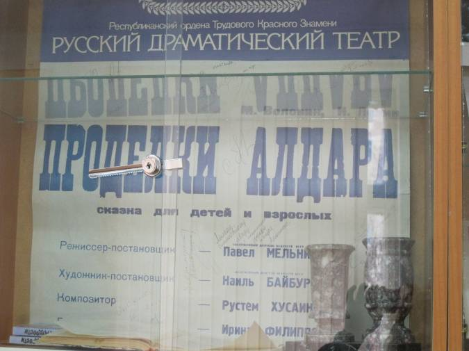
В русском драмтеатре был поставлен режиссером П. Мельниковым спектакль по мотивам башкирских легенд «Проделки Алдара» по сценарию М. Я. Воловика.
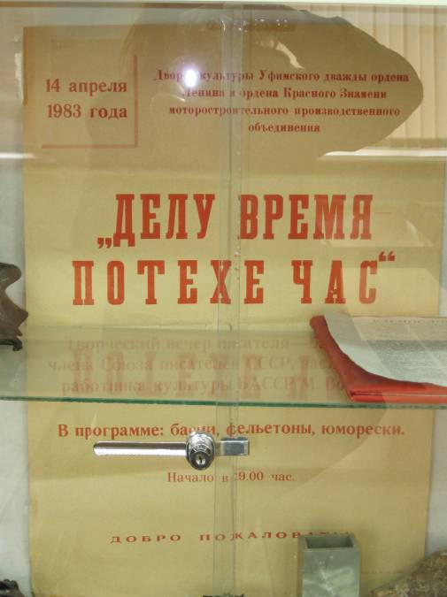
Несмотря на занятость на производстве, Михаил Яковлевич находил время встретится с поклонниками своего творчества. Для этого во Дворце культуры Машиностроителей организовывались творческие вечера.
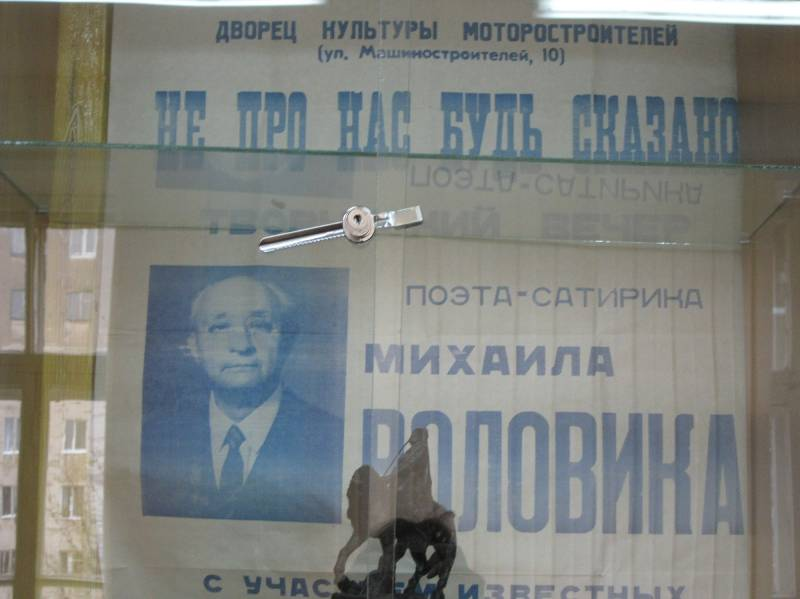
Статьи и воспоминания о Воловике
Михаил Воловик: инженер, поэт и человек
Воловик удивлял всех преданностью своей профессии, душевной щедростью, цельностью характера и одаренностью. Если же попытаться определить все его качества одним словом, то скорее всего про него можно сказать так: уникум. Человек-уникум. Судите сами. Он проработал на одном предприятии — крупнейшем в отрасли — почти полвека, поступив сюда сразу после окончания технического вуза и дойдя здесь до высоких руководящих должностей. Об инженерном его таланте говорят десятки принадлежащих ему конструкторских разработок, изобретений и рационализаторских предложений, большая часть которых внедрена в производство. В тридцать один год ему было присвоено звание заслуженного рационализатора РСФСР. Но это не все. Он ярко проявил себя не только в техническом, но и в художественном творчестве, издав более двадцати книг, которые выходили в Уфе, Москве, Киеве, переведены на несколько языков. Это сборники стихов, басен, сатиры и юмора, это книги для детей — сказки, легенды, баллады и сказания, основанные на башкирском фольклоре. В итоге заместитель главного инженера Уфимского моторостроительного производственного объединения Михаил Воловик стал членом Союза писателей, заслуженным работником культуры республики и Российской Федерации.
— Это был необычайно добрый и доброжелательный человек, — делится своими воспоминаниями о нем писатель Леонид Соколов. — Он сыграл большую роль в моей творческой судьбе. Поскольку я пробовал перо в тех жанрах, в которых Михаил Яковлевич был признанным мастером, мне хотелось услышать его авторитетное мнение о своих вещах. Рискнул однажды позвонить ему домой. И с удивлением услышал:
— Я давно знаю тебя по публикациям в газетах. Поговорить есть о чем. Давай приезжай.
Он жил на другом конце города, рядом с заводом. Ехал к нему с волнением. Но с первых же минут встречи оно прошло благодаря простоте и радушию хозяина, который вместе с супругой сразу повел гостя к уже накрытому столу...
Леониду Соколову довелось вместе с Михаилом Яковлевичем участвовать во встречах с читателями. Его поражало, как быстро он устанавливал контакт с залом и вызывал живейший интерес в любой аудитории, включая детскую.
Автор этих строк был свидетелем одного выступления Михаила Яковлевича, причем незапланированного, импровизированного. Дело было в редакции республиканской газеты. Коллектив поздравлял редактора с днем рождения. Михаил Яковлевич зашел в это время в редакцию с очередной рукописью и живо сориентировался в ситуации. Он попросил слово и произнес в адрес виновника торжества не речь, а стихотворный экспромт, который восхитил всех необидным юмором, с которым поэт-сатирик воспел лучшие качества редактора, весьма изящно намекнув и на нечто противоположное в нем.
Редактор газеты "Истоки ", народный поэт Башкортостана Александр Филиппов, который многие годы дружил с Михаилом Воловиком, вспоминает, каким потрясением для него было известие о его смерти. Когда он приехал к смертному одру друга, его супруга, его верная подруга жизни Лидия Викторовна, вся в слезах протянула ему две исписанные тетради. Перелистав их, он понял, что его старший собрат по перу писал до самого последнего своего часа, даже лежа в реанимационном отделении московской больницы, куда угодил после обширного инфаркта. "Скорее бы вернуться в мою благословенную Уфу, — пишет он в тетрадке. — В Москве мне хуже, дома, в родной больнице № 13 лучше".
— Михаил Воловик родился на Украине, любил свои края, но все- таки настоящей родиной всегда считал Башкирию, — говорит Александр Павлович. — Ибо здесь был его дом, здесь он встретил свою родную Лидусю, здесь родились два его великолепных сына, здесь были его друзья — писатели, коллеги. Главное, в Башкирии он стал знаменитым поэтом. Его знали, любили. Он был постоянным автором газеты "Истоки". Самым последним его произведением, как ни странно, оказалась... рекомендация в члены Союза писателей Леониду Соколову, написанная поздним вечером 6 марта 1994 года. А утром 7 марта его уже не стало. Я снова и снова перелистывал его тетради с последними записями прозой и стихами. Запало в душу одно его четверостишие:
Такой, как все, я на миру,
Но если вдруг умру,
То с этого трагического дня
Мир станет хуже без меня.
Автор: Александр Зиновьев
18 декабря 2007 года.
Коллеги и соратники Воловика
Александр Филиппов
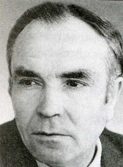
Народный поэт Башкортостана, публицист и общественный деятель Александр Павлович Филиппов родился в д. Юмагужа Кугарчинского района Башкортостана. После окончания Башгоспединститута работал редактором Башкирского радио, с 1968 года - руководителем секции русских писателей в Союзе писателей, директором Литфонда России по Башкортостану, главным редактором газеты "Истоки".Литературная деятельность А. Филиппова началась в 60-х годах. Его стихи тематически разнообразны, живописны, исполнены раздумий о жизни современника. А. Филиппов плодотворно работал и в публицистике, писал очерки. По сценариям поэта сняты документальные фильмы "Башкирский мед", "Нефтяники Башкортостана", "Один день республики", "На пасеках Башкортостана" и другие. Фильм "Башкирский мед" в 1965 году на Международном конкурсе в Бухаресте был удостоен первой премии.
А. Филиппов - лауреат Республиканской молодежной премии им. Г. Саляма, литературных премий им. С. Злобина, З. Биишевой.
Первый поэтический сборник "Зарницы" издан в 1961 году. Вышло около 25 книг стихов и очерков.
Марсель Шайнурович Салимов
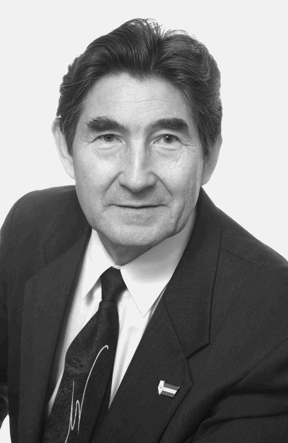
Марсель Шайнурович Салимов (литературный псевдоним Мар. Салим) родился 3 января 1949 г. С отличием окончил Башгосуниверситет и Свердловскую высшую партийную школу. С 1973 года работал в редакции журнала «Хэнэк» («Вилы»), с 1980-го – главный редактор. Автор более 25 книг, его произведения переведены более чем на сорок языков. Член правлений СП и СЖ РБ, член Федеративного совета СЖ России, соучредитель первого в мире Общества юмора народов (1989, Габрово). Действительный член Русской академии наук и искусств. Лауреат международного конкурса юмористов «Алеко» (Болгария), Международной литературной премии им. С. Михалкова. Заслуженный работник культуры РФ и РБ. Кавалер ордена Дружбы.Лев Ефимович Пайкин
 После средней школы окончил театрально-художественное училище в г. Уфе в 1948 году, в 1955 году получил диплом учителя истории Новозыбковского госпединститута. Работал актером драмы и одновременно преподавателем культуры речи и выразительного чтения Новозыбковского госпединститута.
После средней школы окончил театрально-художественное училище в г. Уфе в 1948 году, в 1955 году получил диплом учителя истории Новозыбковского госпединститута. Работал актером драмы и одновременно преподавателем культуры речи и выразительного чтения Новозыбковского госпединститута.
В 1953 году по приглашению профсоюзного комитета Моторостроительного завода приехал в Уфу и начал работу режиссером театрального коллектива Дома культуры имени Калинина. За эти годы осуществил постановку 70-ти спектаклей. Театральный коллектив неоднократно занимал первые места в смотрах художественной самодеятельности. В 1957 году ему одному из первых было присвоено звание Народного театра.
С 1972 года по 1999 год работал директором Дворца культуры "Моторостроитель".
Библиография
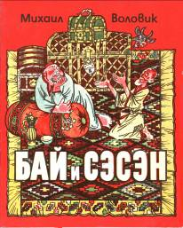
1. Воловик, М. Азбука веселой мудрости [Текст] : в 3-х кн. / Михаил Воловик. – Уфа : Слово, 1992. – 240 с.2. Воловик, М. Баснословно [Текст] / Михаил Воловик. – Уфа : Башкирское книжное издательство, 1967. – 128 с.
3. Воловик, М. Взирая на лица [Текст]: стихи, басни, баллады, сказки / Михаил Воловик ; худож. А. Штабель – Уфа: Башкирское книжное издательство, 1977. – 208 с.: портр.
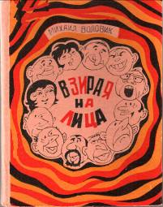
4. Воловик, М. Завод мой – гордость моя [Текст] / Михаил Воловик, Иван Сотников – Уфа : Башкирское книжное издательство, 1975. – 302 с.
5. Воловик, М. Звонок [Текст]: басня / Михаил Воловик // Союз советских писателей Башкирии; под ред. И. В. Сотникова - Уфа: Башкирское книжное издательство, 1955. – С.203.
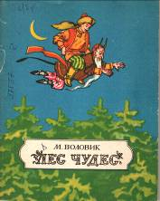
6. Воловик, М. Лаконизмы [Текст] : сатирические и юмористические стихи / Михаил Воловик – Уфа : Башкирское книжное издательство, 1982. – 96 с.
7. Воловик, М. Мысли вслух [Текст]: из юмористических и сатирических стихов башкирских поэтов / Михаил Воловик – Уфа: Башкирское книжное издательство, 1990. – 160 с.
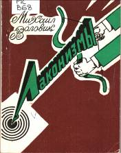
8. Сотников, И. Наша с тобой биография [Текст]: из юмористических и сатирических стихов башкирских поэтов / Иван Сотников, Михаил Воловик – Уфа : Башкирское книжное издательство, 1985. – 288 с.: ил.
9. Воловик, М. Смех на весь цех [Текст] : сатирические стихи / Михаил Воловик – Уфа : Башкирское книжное издательство, 1985. – 80 с.
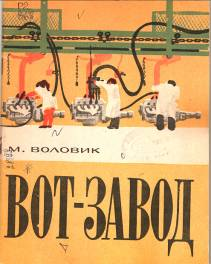
10. Воловик, М. Солнце и свинья [Текст]: басни / Михаил Воловик – Уфа : Башкнигоиздат, 1952. – 48 с.
11. Воловик, М. Стрелы сатиры [Текст] / Михаил Воловик – М.: Принтер, 1992. – 112 с.
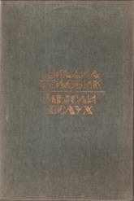
12. Воловик, М. Стихи [Текст] / Михаил Воловик – Уфа, 1995. – 28 с.
13. Воловик, М. Бай и Сэсэн [Текст]: [по мотивам башкирских легенд] / Михаил Воловик. – Уфа : Башкирское книжное издательство, 1978. – 40 с.: ил.
14. Воловик, М. Вот - завод [Текст] / Михаил Воловик ; худож. А. Веселов. – Уфа : Башкирское книжное издательство, 1976. – 26 с.: ил.
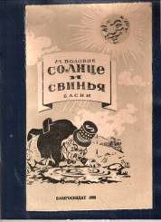
15. Воловик, М. Лес чудес [Текст] : сказки и легенды в стихах / Михаил Воловик ; худож. В. Рудаков. – Уфа : Башкирское книжное издательство, 1984. – 54 с.: ил.
16. Воловик, М. Смехотворения [Текст] / Михаил Воловик ; худож. Александр Баранов. – Уфа : Башкирское книжное издательство, 1969. – 47 с.: ил.
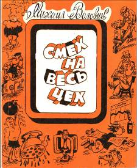
17. Воловик, М. Волшебное кольцо [Текст] : сказки / Михаил Воловик ; худож. А. Королевский ; на рус. и башк. яз. – Уфа : Башкирское книжное издательство, 1976. – 62 с.: ил.
18. Воловик, М. Бай и Сэсэн [Текст] : [по мотивам башкирских легенд] / Михаил Воловик. – Уфа : Башкирское книжное издательство, 1978. – 40 с.: ил.
О Воловике
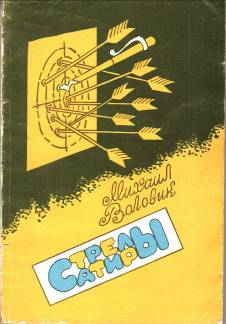
1 .Зиновьев, А. Михаил Воловик: инженер, поэт и человек [Электронный ресурс] / А. Зиновьев. - Режим доступа: www.basinform.ru/news/159176/ - 18.12.2002 г.
2. Инженер-писатель [Текст] // Моторостроитель. – 1987. – 18 декабря. – С.3.
3. Михаил Воловик [Текст] // Писатели земли башкирской / сост: Р. Н. Баимов. - Уфа, 2006. - с. 119-120.
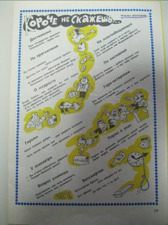
4. Поступкин, С. К. Баснословный [Текст] / С. К. Поступкин // Моторостроитель. - 1987. – 25 декабря. – С. 4.5. Салимов, М. Поэт-патриот. Воспоминания [Электронный ресурс] / М. Салимов. - Режим доступа: http://marsalim.ru/creation/jurnalism/memoirs/
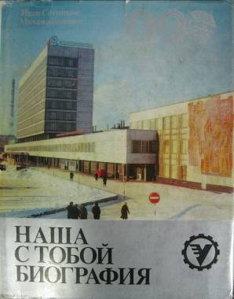
6. Салимов, М. Посол дружбы [Текст] / М. Салимов // Вечерняя Уфа. - 1997. - 20 декабря. - С. 4.
7. Салимов, М. Совесть в души вдохнуть [Электронный ресурс] / М. Салимов. - Режим доступа: www.agidel/index.php?param1=11231&tab=7
Злобин Степан Павлович
1903 - 1965
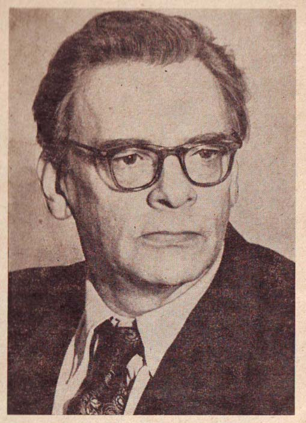
Жизнь и творчество известного мастера исторической прозы ХХ века С.П. Злобина тесно связаны с Башкортостаном. Им были созданы: первый в отечественной литературе роман о национальном герое башкир "Салават Юлаев"; очерки и повести о лесной промышленности края; роман «По обрывистому пути» - последнее произведение писателя о Башкортостане.Детство сына революционеров
Родился Степан Павлович Злобин 24 ноября 1903 года в Москве. Он рос в семье, где почитались демократические традиции. Именем своим Степан Злобин обязан революционному выбору родителей. Павел Владимирович назвал своего первенца в память Степана Балмашова. Тезка будущего писателя был эсером, казнен в 1902 году за убийство министра Сипягина.
Мать Степана Павловича — Лидия Николаевна Ядринцева — родилась в 1884 году. Она воспитывалась у бабушки в селе Большом Рязанской губернии, училась в женской гимназии города Рязани. В 1901 году она вышла замуж за Павла Злобина, дружба с которым началась уже с младших классов рязанской гимназии. Молодые супруги, закончив это учебное заведение, продолжили учебу: Лидия Николаевна поступает на Высшие женские курсы, а Павел Владимирович — на медицинский факультет Московского университета. Лидия Николаевна увлекалась историей и этнографией, печатала статьи в журналах, выпустила впоследствии книгу “Туземцы Туруханского края” (1925 г.).
От своего отца Н.М. Ядринцева она унаследовала не только литературные склонности, но и бунтарский дух. Лидия Николаевна являлась членом боевой организации эсеров, в 1906 году была приговорена к каторге по делу о покушении на генерала Рейнбота. Как матери двух детей, каторгу ей заменили вечным поселением в село Казачинское Туруханского края. Позже дали разрешение на переезд в город Енисейск. Лидия Николаевна в молодости писала, однако в силу целого ряда причин заниматься творчеством в дальнейшем не смогла. В основном делала переводы художественных текстов с ино¬странного языка. Она с детства предсказывала маленькому Степану судьбу литератора и направляла его по этому пути. Нередко затевала игру, в которой Степан Павлович был издателем, а она и ее товарищи по заключению (Лидия Николаевна после ареста долгое время сидела в Бутырке) — сотрудниками, и мальчик “издавал” журнал, для которого они присылали рассказы, стихи и рисунки.
Отец Степана Злобина — Павел Владимирович — был правым эсером, после событий 1905 года тоже вы¬слан в Сибирь. В 1922 году ему был вынесен смертный приговор на процессе социа¬листов-революционеров, но под давлением мировой общественности итоги суда были пересмотрены. Приняв во внимание “незначительный объем контрреволюционной деятельности” и “добросовестную работу его в советских учреждениях”, Павлу Владимировичу Злобину заменили ссылкой. Местом отбывания наказания был определен город Уфа.
Павел Владимирович работал научным сотрудником Башкирского Госплана, преподавал в Уфимском земле¬устроительном техникуме, в Институте народного образования и вел дисциплины “Экономическая география СССР и БАССР”, “Сельскохозяйственная кооперация” и “Краеведение”. В 1925-1926 годы руководил работой экономического кружка.
После ареста родителей Степан Павлович вынужден был воспитываться в доме стариков Злобиных. В черновом варианте статьи от 1954 года, рассказывая об исторических романах и их героях — простых людях из народа, — С.П.Злобин с особой теплотой вспоминает свою бабушку Елизавету Иосифовну. “Отбывать ссылку” в юношеские годы С.П.Злобину пришлось не только у бабушки в Рязанской губернии, но и в местах, где находились по воле судьбы его родители. С младшей сестрой Верой они некоторое время жили в селе Казачинское Туруханского края, а перед началом первой мировой войны приехали в Уфу к ссыльному отцу. Здесь Степан Павлович учился в реальном училище, но завершить учебу в нашем городе ему не удалось. Отца как врача призвали в армию, и подросток вынужден был уехать в Рязань. Полтора года жизни — с 1912 по август 1914 года — с отцом на Урале, Усть-Катавском заводе и в Уфе, оставили незабываемые впечатления в душе будущего писателя.
Демократическая атмосфера в доме и мятежный дух родителей повлияли на склонности подростка, с жадностью читавшего запрещенные в то время книги “Овод”, “Спартак”, “Андрей Кожухов”. Он участвует в событиях 1915-1918 годов, вступает в революционно-молодежный отряд. Находит время и для творчества: занимается живописью в мастерской, устроенной в Рязани уехавшим из столицы художником Малявиным, какое-то время учится в театральной студии, пишет стихи, которые были напечатаны в губернской газете псевдонимом “Аргус”.
В 1920 году, переехав в Москву, Злобин работает статистиком в Политическом Красном Кресте, рабочим на продуктовом складе, поступает учиться в Московский промышленно-экономический техникум. Однако в середине учебного года врачи обнаружили у него открытую форму туберкулеза. Пролежав долго в больнице, он лечился и в санатории “Высокие горы” под Москвой. В это время Степан Павлович начинает подготовку к поступлению в вуз. Однако, вместо того чтобы поступить в Сельскохозяйственную академию, где он планировал учиться, неожиданно отдал документы и поступил в Высший литературно-художественный институт имени В. Я. Брюсова, открывшийся в тот год.
Снова в Уфе
После окончания института, в 1924 году, С.П. Злобин снова оказался в Уфе. В автобиографии он использовал именно это нейтральное слово “оказался”, чтобы констатировать переезд. На самом деле, он был арестован как анархист, отсидел два месяца в Бутырской тюрьме, а затем выслан в арестантском вагоне в административную ссылку в Башкирию.
В Уфе С.П. Злобин поселился в доме № 38 по улице Малой Казанской, ныне — Свердлова, и прожил четыре года. Сдав зачеты, в конце лета 1924 года приехала и Мария Ивановна Поступальская, сокурсница по институту, впоследствии жена Степана Павловича. Хотя вначале нелегко было найти работу и иметь хоть какой-нибудь заработок, после удачного публичного выступления С.П. Злобина о В.Я. Брюсове молодым “брюсовцам” предложили пройти экспертную комиссию на предмет возможности быть школьными преподавателями. Степан Павлович и Мария Ивановна начинают работать в Совпартшколе, создают при клубе Обкома комсомола литературный кружок, носящий название “Паства Злобина”. Степан Павлович в этот период читал лекции о классиках и о современных поэтах: В. Брюсове, А. Блоке, С. Есенине, В. Маяковском. Разбирали стихи, написанные членами “паствы”, обсуждали поэтические опыты и самого руководителя кружка Злобина. После завершения срока ссылки в апреле 1927 года и возвращения Степана Павловича в Москву кружок этот постепенно распался.
Мария Ивановна после смерти С.П. Злобина рассказывала Виктории Васильевне Злобиной, как романтично выглядел Степан Павлович в те годы: “…Голубоглазый, высокий и худой, с легкой быстрой походкой, он носил клетчатую блузу, голову повязывал пестрым платком, завязывая узел под ухо…”
В марте 1925 года М.И. Поступальская уехала обратно в Москву. Степан Павлович вынужден был взять на себя классы, которые она вела в школе, но к этому времени у него обострилась болезнь: начался туберкулез голосовых связок. К туберкулезу присоединилась малярия, изматывающая приступами высокой температуры, ознобами. По воспоминаниям вдовы писателя, Виктории Васильевны Злобиной, Степан Павлович жил один, иногда не в силах подняться с постели. Единственным человеком, проявлявшим к нему внимание, была квартирная хозяйка, поившая его по утрам парным молоком. После консилиума, проведенного в тубдиспансере, врачи совсем запретили С.П. Злобину преподавать в школе и посоветовали выехать из Уфы, чтобы утихомирилась малярия. Но он не оставляет Башкирию, а поступает статистиком в Госплан. Эту работу подыскал ему дядя Марии Ивановны, маркшейдер, уважаемый в Уфе человек — Борис Григорьевич Левин. В ОГПУ это желание ссыльного не вызвало возражений, и преподаватель русского языка и литературы, лектор Политпросвета Степан Злобин начинает работать в лесоэкономической экспедиции.
Все начиналось с книг для детей...
По совету бывалых людей он покупает лошадь и в начале июля, так и не дождавшись возвращения М.И. Поступальской из Москвы, выезжает из Уфы с заданием по предложенному лесоэкономической экспедицией маршруту в горно-лесной район Башкирии. В первой экспедиции по Башкирии Степан и писал свою первую книжку, которая называлась «Переполох» и содержала небольшие рассказы для детей. Книга увидела свет в 1924 году, а чуть позже, опять-таки в экспедициях по Башкирии, Злобин начал работу над романом, посвященном народному герою Башкирии Салавату Юлаеву. Будущий писатель воспринял такую перемену в своей жизни с присущим ему оптимизмом. “Степан Павлович, — вспоминает В.В.Злобина, — любил повторять, что в то время ему повезло: если бы не попал в гущу башкир¬ского народа, не смог бы написать роман “Салават Юлаев”, давший ему литературное имя.
Лесной воздух оказался целительным: малярия отступила сразу, туберкулезный процесс в голосовых связках приостановился. Жизнь в Башкирии дала будущему прозаику огромный фактический материал и знание жизни.
Осенью вернулась в Уфу М.И. Поступальская и снова стала преподавать в школе. Степан Павлович, заработавший деньги в экспедиции, занялся литературной деятельностью. Им было написано много работ для местных газет, журналов, школьной хрестоматии. В июньском номере журнала “Красная новь” за 1928 год были напечатаны литературно-этнографические очерки С.П. Злобина “По Башкирии”. Путевые заметки начинающего писателя воссоздают жизнь башкир в 20-е годы в восприятии русского человека во всех деталях. Описывая быт, обычаи, материальную и духовную культуру башкирского народа, особое внимание он уделяет его устному творчеству: рассказывает о приметах, особенностях народного летоисчисления по восточному календарю.
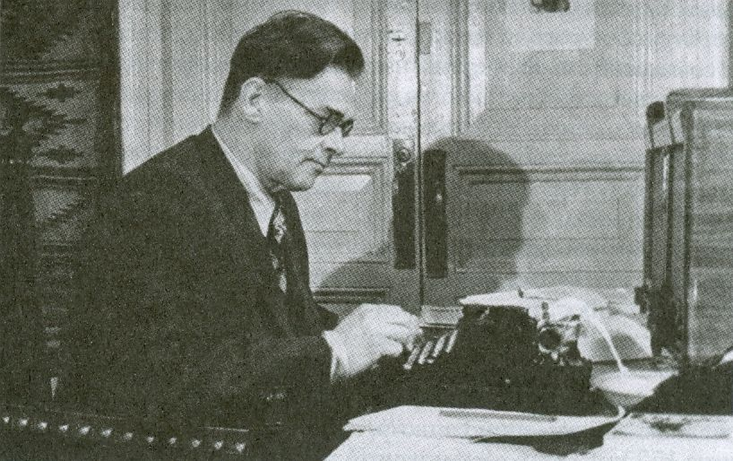
В августе 1926 года С. П. Злобину была предложена должность экономиста экономического отдела Башкирского центрального совета народного хозяйства. С целью углубленного изучения экономической науки С.П. Злобин поступает учиться в Воронежский сельскохозяйственный институт на заочное отделение лесоэкономического факультета. За год он проходит путь от статистика до старшего экономиста, выполняя ряд самостоятельных и ответственных работ по заданию правительства республики: составляет историю башкирской промышленности, разрабатывает отдельные детали пятилетнего и перспективного планов, в соавторстве с А. Кийковым пишет статью “Башкирская АССР” для первого издания Большой Советской Энциклопедии.Когда административный срок наказания кончился, и С. Злобин вернулся в Москву, выяснилось, что именно знание Башкирии явилось главным приобретением прошедших лет.
В годы работы экономистом он выкраивает время для занятий в исторических архивах Уфы, находит интересные сведения о башкирских восстаниях, подытоживает собранные для “Салавата” фольклорные материалы. К этому времени у Степана Павловича были накоплены заметки и для повести, которая вначале условно называлась “Чурнайтис”, по фамилии главного героя, а впоследствии стала романом “Здесь дан старт”. Он был напечатан только в 1931 году. Сюжетную основу произведения составили наблюдения и впечатления от пребывания в почти непроходимых лесах Башкирии, от работы лесорубов, условия труда и быта которых были очень тяжелыми. Лесному хозяйству были посвящены и очерки “Пробужденные дебри”. В 1925 году С.П. Злобин начал работу еще над одним романом — “Дороги”. Вначале эта рукопись, которую М.И. Поступальская возила из Уфы в различные московские издательства, называлась “Архип Васильевич”. Лишь некоторые отрывки из него в виде самостоятельных небольших рассказов были напечатаны в хрестоматии “Башкирский край”. Действие в несостоявшемся произведении происходит на Южном Урале и охватывает период с конца XIX столетия до 1927 года. Главным героем является башкир Нур-Камиль, через судьбу которого автор хотел отразить важнейшие исторические события, происходившие в Башкирии.
К этому же времени относится ряд созданных писателем фантастических и поэтических произведений, которые тоже не были опубликованы (“Пугачев”, “Клерк”, “Бирюк”, “Часовщик” и др.). По словам Виктории Васильевны Злобиной, Степан Павлович часто вспоминал “Окаяшку”, написанную в годы пребывания в Башкирии, но не опубликованную, и, став уже солидным писателем, считал этот рассказ очень интересным. Хотя пробы пера в области поэзии и фантастики не принесли особого успеха, роман “Салават Юлаев” о национальном герое башкир, первоначально адресованный детям, дал автору литературное имя. С 1929 года роман переиздавался свыше тридцати раз и переводился на многие языки. Писатель создал три его редакции, написал на основе книги сценарий для кинофильма “Салават Юлаев”.
Фильм о Салавате
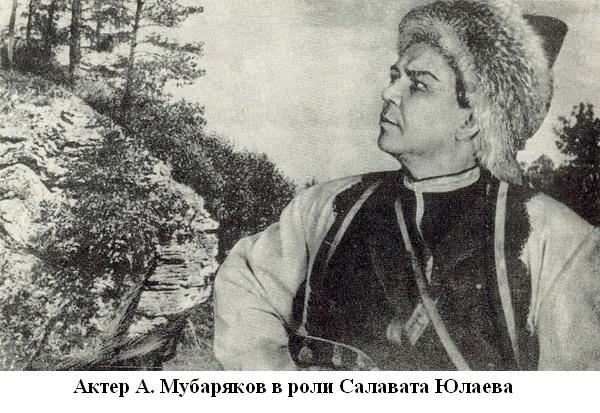
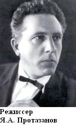
Возвращение к любимому образу было связано с начавшейся в 1939 году экранизацией "Салавата Юлаева" и приездом писателя в Башкирию. Не ограничиваясь созданием киносценария, писатель принимал активное участие в съемочных работах, где по ходу действия вносил коррективы. Это позволило ему познакомиться с ведущими деятелями башкирского искусства, исполнителями главных ролей в фильме – Арсланом Мубаряковым, Гималетдином Мингажевым, Амином Зубаировым, Римом Сыртлановым и другими. Консультантами Степана Злобина были видные башкирские писатели. Выход на экраны страны кинофильма "Салават Юлаев", поставленного талантливейшим режиссером Я.А. Протазановым был большим событием в культурной жизни Башкирии. Фильм, вышедший незадолго до Великой Отечественной войны, был тепло принят зрителями всей страны. Критики благожелательно отозвались об игре актеров, особо отметив великолепную игру Мубарякова. Подходящие внешние данные, отточенность мимики, богатый интонациями голос – все это помогло артисту раскрыть образ главного героя. Снимался фильм в Москве и окрестностях Уфы. Основная идея фильма – борьба башкирского народа под руководством Салавата Юлаева за свое освобождение.Наставник башкирской литературы
Деловые и дружеские связи С.П. Злобина с родиной Салавата продолжались в течение всей его жизни. В послевоенные годы С. Злобин вновь неоднократно приезжал в Башкортостан. Материалы семейного архива позволяют уточнить время пребывания писателя в Уфе в 1947 и 1948 годах. Командировки приходятся на июнь-июль месяцы, целью их были руководство творческими семинарами и помощь в подготовке декады башкирской литературы и искусства в Москве. Два лета С.П. Злобин провел в столице Башкортостана, укрепил здоровье, которое было основательно расшатано.
Знаток истории и культуры башкир С.П. Злобин курировал претворение в жизнь Постановления ЦК ВКП(б) “О репертуаре драматических театров и о мерах по его улучшению” (от 4 сентября 1946 года). Им были проанализированы рукописи начинающих драматургов (М. Карима “Свадьба продолжается”, К. Даяна “Эскадрон”, А. Бикчентаева и Р. Хайрулина “Ускорившие рассвет” и т.д.) и предложены конкретные советы по улучшению сюжета, характеров и языкового материала пьес. С.П. Злобин справедливо выделяет значительное упущение в работе башкирских драматургов — отсутствие переводов лучших произведений советской драматургии, которые должны ставиться на национальной сцене. “Лучшие достижения советской драматургии должны быть донесены до башкир¬ского зрителя. Пусть он получит в своем театре эти пьесы, и пусть нашим национальным драматургам придется соревноваться на национальной сцене с лучшими русскими драматургами. В этом соревновании национальная драматургия получила бы хорошее испытание”, — подытоживает свое мнение Степан Павлович. По незавершенным рукописям можно судить, что писателю не была безразлична судьба башкирской литературы. В сближении двух литератур, в их взаимообогащении он видит будущее процветание башкирского искусства. С. Злобин сотрудничал также с учеными края — литературоведами, фольклористами, переводил на русский язык произведения башкирского фольклора. В этот период писатель работал над последними страницами романа “Остров Буян” и заканчивал роман “Степан Разин”, собирал исторические материалы о любимом герое – Салавате, пробовал свои силы в области драматургии. В 1947 году в Уфе была обсуждена рукопись его драмы “Салават Юлаев”, над которой автор продолжил работать — с учетом высказанных замечаний и пожеланий — и после отъезда из Уфы в первой половине 1948 года.
Незаконченный роман
14 сентября 1965 года оборвалась жизнь писателя. До последних дней он продолжал работать над дилогией “Утро века”, которая должна была завершить начатую “Салаватом Юлаевым” огромную, охватывающую столетия, панораму народной борьбы. Первая книга оставшегося незавершенным произведения — роман “По обрывистому пути” — был издан уже после смерти автора — в 1967 году. В нем тоже действуют уфимские герои, правдиво описываются облик провинциальной предреволюционной Уфы и патриархальный быт башкирских деревень.
Таким образом, С.П. Злобин, назвавший Башкортостан своей писательской колыбелью и второй родиной, в течение всей творческой жизни воспевал башкирский край и прославлял его героев.
Библиография
Книги и статьи о С.П. Злобине
1. Злобин, С.П. Автобиография [Текст] / С.П. Злобин // Советские писатели. Т.4. – М., 1972. – С. 180.
2. Кульсарина, И. Вдохновляющий образ батыра [Текст] / И. Кульсарина // Истоки. – 2001. – 26 сентября. – С. 3.
3. Кульсарина, И. Степан Злобин и Башкортостан [Текст] / И. Кульсарина // Ватандаш. – 2004. – №6. – С. 154-164.
4. Попов, Б. Еще раз открывшийся Злобин [Текст] / Б.Попов // Вечерняя Уфа. – 2000. – 11 марта. – С. 2.
5. Рахимкулов, М. Лебединая песня Степана Злобина [Текст] / М. Рахимкулов // Истоки. – 1998. – 22 ноября. – С. 8-9.
6. Рахимкулов, М. «Милый, милый степной соловей…» [Текст] / М. Рахимкулов // Вечерняя Уфа. – 2003. – 19 марта. – С. 3.
7. Рахимкулов, М. Неизданная повесть С.П. Злобина [Текст] / М. Рахимкулов // Вечерняя Уфа. – 1970. – 4 февраля. – С. 4.
8. Рахимкулов, М. «Старый друг Салават…» [Текст] / М. Рахимкулов // Воспевшие Салавата.. – Уфа: Китап, 1994. – С. 96-154.
9. Рахимкулов, М. «Старый друг Салават…» [Текст] / М. Рахимкулов // Учитель Башкортостана. – 2003. – №11. – С. 45-48.
10. Рахимкулов, М. «Старый друг Салават…» [Текст] / М. Рахимкулов // Цветущий край, благословенный. – Уфа, 1979. – С. 175-208.
11. Сабирова, С. Национальная гордость [Текст] / С. Сабирова // Истоки. – 2009. – 17 июня. – С. 10.
12. Сафуанов, С. Образ Салавата Юлаева в литературе и искусстве [Текст] / С. Сафуанов // Сохраним выцветшие строки… / сост. В.А. Скачилов. – Уфа, 1988. – С. 192-195.
13. Сидоров, В. Наш Степан Злобин [Текст] / В. Сидоров // Вечерняя Уфа. – 1983. – 28 ноября. – С. 3.
14. Сидоров, В.В. Любимый герой Степана Злобина [Текст] / В.В.Сидоров // По следам Салавата : (Историко-краеведческие очерки)./ В.Сидоров. – Уфа, 1988. – С. 47-63.
15. Сидоров, В.В. Любимый герой Степана Злобина [Текст] / В.В.Сидоров // Был героем Салават. – Уфа: Китап,2003. – С. 201-215.
16. Созидатели [Текст] : справ.пособ. для учащихся общеобр. школ. – Уфа, 2002. – С. 50-53.
17. Узиков, Ю. Автор «Салавата» о Темясово [Текст] / Ю. Узиков // Вечерняя Уфа. – 2000. – 17 августа. – С. 3.
18. Узиков, Ю. Воплотивший историю в книги [Текст] / Ю. Узиков // Это с нами навсегда. – Уфа, 1983. – С. 82-84.
19. Узиков, Ю. Воплотивший историю в книги [Текст] / Ю. Узиков, П.А. Наймушин // Как зовут тебя, улица?/ Ю. Узиков – Уфа, 1980. – С. 72-74.
Ибрагимов Галимджан Гирфанович
1887 - 1938
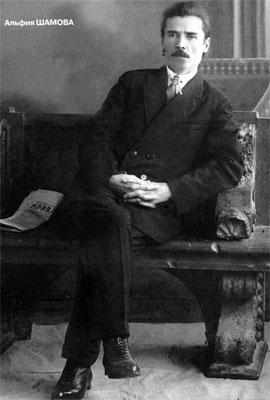
Ибрагимов Галимджан Гирфанович родился 12 марта 1887 года в семье муллы в деревне Султанмуратово Стерлитамакского уезда. До 11 лет учился в сельской школе, затем – в Оренбурге в медресе Вали-муллы.Вскоре Г. Ибрагимов переехал в Уфу и поступил в высшее восточное мусульманское учебное заведение – медресе «Галия».
Г. Ибрагимов учительствовал в Казахстане, на Кавказе, а в конце 1909 года приехал в Казань с намерением поступить в университет. Но двери «храма науки» для политически неблагонадежного татарского юноши были закрыты. В 1912 г. он уехал в Киев, где в качестве вольнослушателя учился в университете.
С осени 1913 г. по февраль 1914 г. работал ответственным секретарем в татарском литературно – художественном журнале «Разум». В 1917 году после февральской революции Г. Ибрагимов приехал в Уфу. Здесь он вместе с писателем Ф. Сайфи издает газету «Ирек» («Воля»). В дальнейшем Ибрагимов становится редактором газеты «Безнен юл» («Наш путь»).
Г. Ибрагимов – один из организаторов и руководителей партии татаро-башкирских мусульманских левых эсеров. В 1917-1918 гг. он избирался депутатом Милли Меджлиса. В 1918 г. Г. Ибрагимов участвовал в организации Комиссариата по делам мусульман.
В 1919-1920 гг. он являлся членом Центральной мусульманской военной коллегии и одновременно руководил редколлегией отдела печати Центральной мусульманской военной коллегии и редколлегией отдела печати Центрального бюро коммунистических организаций народов Востока при ЦК РКП(б), сотрудничал в журнале «Красный Восток».
В 1920 г. Ибрагимов работал в аппарате Наркомата просвещения ТАССР. В 1925 г. он возглавил Академический центр и одновременно являлся Председателем Татарского бюро краеведения. Пятым съездом Советов Ибрагимов был избран членом Президиума ТатЦИКа. Он сыграл большую роль в образовании ТАССР, развитии татарской культуры и народного просвещения.
В 1927 г. писатель уехал лечиться в Крым. Несмотря на тяжёлую болезнь, он продолжил свою литературную и общественную деятельность. В 1928 году Ибрагимов избирался членом Государственной Академии художественных наук СССР. В 1928 г. ему было присвоено звание Героя Труда.
В 1937 г. в Ялте по подозрению в «участии в контрреволюционной националистической организации», Г. Ибрагимов был арестован и под конвоем доставлен в Казань. В скором времени его перевели в тюремную больницу.
21 января 1938 г. писатель умер в больничной палате тюрьмы и был похоронен на Архангельском кладбище. В 1955 г. Г. Ибрагимов был реабилитирован.
РОДОСЛОВНАЯ СЕМЬИ ИБРАГИМОВЫХ
Администрация г. Уфы провела фестиваль детского творчества "Созвездие дружбы". В нем приняли участие и потомки классика татарской литературы Галимджана Ибрагимова - Марат Хакович, Адель Маратовна, Даниил Оскарович, Арсений Оскарович Ибрагимовы. Они впервые представили родословную семьи Ибрагимовых.
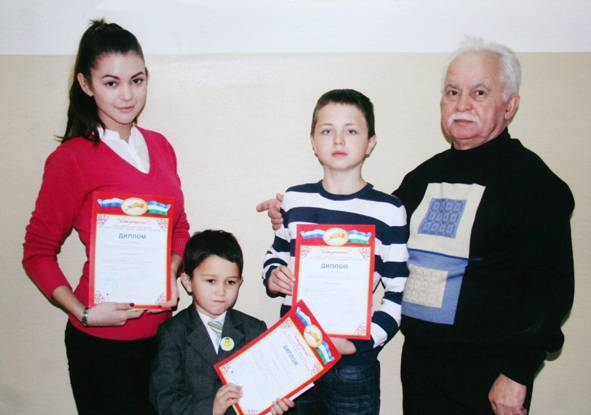
Составление этой родословной было начато еще 30 марта 1967 г. Хаком Азиджановичем, двоюродным братом Г.Ибрагимова.
Его дети, внуки, правнуки продолжили начатое дело и составили наиболее полную картину, в которой отражены более 300 человек по мужской линии.
Род Ибрагимовых имеет 12 колен, и корни его нисходят к предку Ахмету, родившемуся в 1587 году. Составлению родословной предшествовала большая поисково-исследовательская работа в государственных архивах республик Башкортостан, Татарстан, Москвы, Крыма (Украина).
Работу дополнили сведения из семейных архивов рода Ибрагимовых, проживающих в РБ и РФ, Тюменской области, Узбекистане, Канаде и других регионах.
При раскрытии родословной была представлена ранее подготовленная описательная часть, в которой подробно раскрывались история рода, происхождение села Султанмуратово, дана информация об отдельных ветвях родословной. Наиболее подробно описана биография нашего знаменитого родственника Галимджана Ибрагимова (1887-1938). К описательной части приложено большое количество фотографий, в том числе сделанные еще в начале прошлого века.
"15 октября наша семья представила родословную рода Ибрагимовых на втором Республиканском празднике "Шежере" в с. Бакалы, где мы участвовали от имени Аургазинского района. По итогам конкурса наша работа по составлению родословной была удостоена диплома 2-ой степени и ценного подарка.
По итогам праздника родословной по Советскому району г. Уфы нам присудили I-е место.
2 ноября 2010 года молодое поколение семьи Ибрагимовых - Адель (ученица 10 кл.), Даниил (уч. 7 кл.) и Арсений (уч. 1 кл.) приняли участие в Межрегиональном конкурсе-фестивале литературного творчества, краеведения и журналистики Российского Фонда культуры "Ступени".
Ученые Республики Башкортостан оценили труд ребят и наградили их дипломом III-ей степени."
М. ИБРАГИМОВ.
Творчество писателя
Классик татарской литературы Галимджан Гирфанович Ибрагимов оставил заметный след в развитии не только татарской, но и ряда других литератур. Творческая деятельность Г. Ибрагимова была на редкость многогранной: писатель, публицист, ученый-востоковед, лингвист и литературовед, редактор, педагог, автор и составитель многочисленных учебников для татарских школ, исследователь истории революционного движения и т. д. Мировоззрение Ибрагимова выросло на базе передовых традиций национальной общественной мысли, прежде всего, на базе демократического просветительства. Воспитанный на многовековых гуманистических традициях родной литературы, он вобрал в себя и достижения передовой общечеловеческой культуры, проводником которой служили ему, прежде всего русская культура и литература.
Г. Ибрагимов сочетал в себе черты талантливого художника, большого учёного-теоретика и блестящего организатора-практика. Он обладал характером борца-преобразователя и запомнился своим современникам как подвижник, человек, не боящийся и не избегавший никаких трудностей. При этом ни внешние обстоятельства и ни какие-либо привходящие причины, а высокое чувство патриотизма, горячая любовь к народу, страстное желание принести ему как можно больше пользы побуждали Ибрагимова браться за самые различные дела, вдохновляли его на самоотверженную деятельность, героизм и самопожертвование в работе.
Литературное наследие Г. Ибрагимова необычайно богато. За сравнительно короткий период жизни им созданы десятки рассказов, 3 повести, 4 романа, одна из первых революционных пьес. Кроме того, Ибрагимовым опубликовано 12 научных книг по истории революционного движения, теории и истории литературы, эстетике и лингвистике, около 350 теоретических, критических и публицистических статей, более 10 учебников по языку и литературе.
Раннее творчество
Литературно-творческая деятельность Г. Ибрагимова началась в 1907 году. Первый его рассказ «Изгнание из медресе шакирда Закия» был опубликован в газете «Эльислах» 23 октября 1907 года (в 1910 году вышел в отдельном издании).
Начальный период творчества писателя критиками определяется как романтический, но романтизм несёт черты пассивности. Для героев тех лет характерны неприятие буржуазной действительности, романтическая мечта об иной жизни. Например, лирический герой рассказа «В море» стремится уйти от гнетущей атмосферы капиталистического города на лоно природы, в море: «Хочется жить и жить тысячу лет… Но не этой обычной жизнью, а совсем по-другому»; герой рассказа «Любовь – счастье» надеется обрести счастье в любви. Однако мечты героев оказываются иллюзорными, они мало связаны с реальной жизнью, идеал писателя очень абстрактен.
Но реализм, коренившийся в самой народной основе творчества Ибрагимова, взял верх. Начиная с 1912 года, всё активнее он поднимает социальные проблемы, создаёт образы людей труда. Об этом свидетельствуют произведения 1913-1916 годов: «Старый батрак», «Дети природы», «Пастухи», «Наши дни», «Из тетради покойного», «Габдрахман Салихов» и другие.
В 1916 году Ибрагимовым был издан «Альбом изобразительных искусств».
Литературная деятельность в зрелые годы писателя
Расцвет многогранного творчества Ибрагимова происходит в годы становления и укрепления молодой страны Советов. В 1919-1923 годах он создаёт произведения, запечатлевшие события Февральской и Октябрьской революций, гражданской войны и интервенции: «Красные цветы» и «Новые люди». Исключительный успех выпал на долю романа Ибрагимова «Глубокие корни» (1928), являющегося вершиной литературно-творческого роста писателя. Оригинальность сюжета, глубина мысли и широта охвата жизни, яркость образов и актуальность тематики романа привлекали к нему внимание читателей далеко за пределами республики. Роман был издан на русском (1931), казахском (1936) и других языках.
Горячее сочувствие родному народу и глубокое недовольство его положением приводят Ибрагимова на позиции революционного демократа.
Широко известны романы писателя «Молодые сердца» (1912), «Наши дни» (1919), «Глубокие корни» (1928), «Дочь степи» (1934).
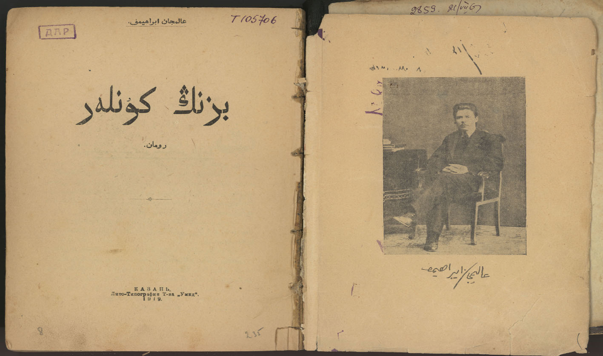
Роман «Наши дни». 1919 г.
Во всех своих произведениях Г. Ибрагимов с гневным презрением обличал пороки богачей, осуждал социальную несправедливость, с искренней любовью и болью писал о простом, трудолюбивом народе.
В произведении «Наши дни» писатель разоблачает деятельность учителя Карима Гайфи, который учился в Турции, стремился внедрить идеи пантюркизма в татарском медресе.
В 1974 – 1987 гг. вышел 8-томник произведений писателя. За период с 1918 г. по 1935 г. художественные произведения писателя выдержали 54 издания на десяти языках народов мира.
Галимджан Ибрагимов внес большой вклад в татарскую филологию и в историческую науку. Писателя иногда называют татарским Горьким. Его роль в становлении татарской литературы сравнима разве что с ролью Максима Горького в развитии русской литературы. Как и М. Горькому, Г. Ибрагимову довелось пройти свои нелёгкие жизненные университеты. Он сыграл выдающуюся роль в создании татарского литературного языка, занимался исследованиями истории татарской литературы и языка. «Морфология татарского языка», «Синтаксис татарского языка», «Татарская грамматика», «Теория литературы», «Как обучать татарскому языку», хрестоматия «Новая литература», сыграли в своё время большую роль в развитии теории татарской литературы и методики татарского языка.
Он обогатил татарский язык, ввёл много оборотов и слов из всех говоров и наречий татарского языка, способствуя созданию единого татарского языка.
Писатель – публицист
Большой интерес по богатству фактического материала представляют труды Ибрагимова: брошюра «Октябрьская революция и диктатура пролетариата», статья «Мулланур Вахитов», исторические очерки «Революционное движение среди татар», «Татары в революции 1905 года», статья в журнале «Шура» за 1911 год «Мы – татары». Эти работы – ценные источники для современных исследований.
Рассказы для детей
Для детей Г. Ибрагимовым написаны рассказы, которые вошли в сборник «Чубарый». В этих рассказах писатель показал жизнь башкирской деревни, жизнь простого народа, занятия деревенских детей, праздник сабантуй. Эти произведения писателя вошли в школьную программу татарских школ.
В 1928 году Г.Ибрагимову присваивается звание Героя Труда.
ГЕРОЮ ТРУДА
Гр. Ибрагимову Галимджану Гирфановичу.
Президиум Всероссийского Центрального Исполнительного Комитета, отмечая Вашу выдающуюся и исключительно полезную деятельность в области социально-культурного развития татарских трудящихся масс, выразившуюся в создании классических произведений татарской художественной литературы, в издании специальных трудов по изучению классовой борьбы и революционного движения среди татар, а также учитывая Вашу активную общественную работу, — награждает Вас званием Героя Труда.
Председатель Всероссийского Центрального Исполнительного Комитета М. Калинин.
И. О. Секретаря Всероссийского Центрального Исполнительного Комитета Н. Новиков.
Москва, Кремль. 11 ноября 1932 года.
Произведения писателя переведены на русский, азербайджанский, башкирский, казахский, таджикский, туркменский, узбекский, даргинский, ногайский, чувашский языки и стали духовным достоянием всего многонационального народа.
Сегодня его имя носят средняя школа в Казани, Казанский институт языка, литературы и истории Казанского филиала АН РФ, проспекты и улицы городов и сёл Татарстана и Башкортостана, в том числе, улица Уфы.
По произведениям писателя поставлены спектакли на сценах Башкирского и Татарского драматических театров.
Спектакли по произведениям Г. Ибрагимова
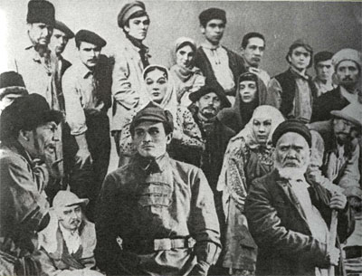
Сцены из спектакля «Глубокие корни»
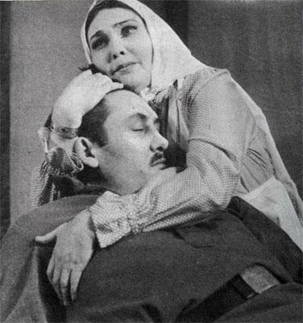 | 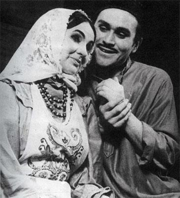 |
Сцены из спектакля «Судьба татарки»
Воспоминания о писателе
Из воспоминаний Шакиржана Ибрагимова – старшего брата писателя:
Наш отец, выучившись в Троицке, стал помощником муллы в ауле Юныс. В 1910 году вернулся в деревню и стал вести хозяйство. Недолго прожил и умер в 1913 году.
Маму зовут Хасана. Свадьба была в Троицке. Мама же к этому времени закончила медресе, была еще учительницей, некоторое время поработала муллой. Она выросла в городе, ей, вероятно, в деревне было неудобно. Это и работа по дому, и по хозяйству, ещё мы – дети. Нас было семеро детей. Старшая, Фардана, умерла рано, вторая – Нагима, третий я – Шакиржан, четвертый – Галимджан, пятая, Нафиса умерла в возрасте 8-10 лет. Потом Хаким. Самый младший Губайдулла тоже умер рано.
Когда отец нас привёз в Оренбург, дал в руки Галимджану 2 рубля 50 копеек на весь учебный год. И ежегодно отец на двоих присылал двух гусей. Так мы учились с 1899 по 1905 годы.
Из воспоминаний одноклассника по медресе «Галия» Фатхеля Курбангалеева:
Все одноклассники были, в основном, изгнанные из других медресе. Это было в 1906 году. Это открытие медресе «Галия», где обучение должно стать новым. Галимджан Ибрагимов, единственный, можно так сказать, среди многих шакирдов готовил очень серьёзно уроки, владел удивительной речью. Если преподаватели задавали ему вопрос, отвечал он полно, что нельзя было дополнить. Он был активистом в медресе, стал и руководителем среди шакирдов.
Жил в начале в здании медресе. Шакирды придумали одноименную с медресе газету, выпускали ежемесячно и сами увлеченно читали каждый номер. Тогда ещё мы понимали и осознавали будущее Галимджана.
Сокурсник по медресе Шагит Ахмадеев:
Галимджан – мой друг по медресе «Галия». Годы учёбы у Галимджана были полуголодными и полуголыми. Даже деньги, предназначенные на еду и одежду, он тратил на интересовавшие его книги – учебники по морфологии, синтаксису и логике для медресе. Поэтому Галимджан, вероятно, стремился получить знания по новым программам в медресе.
Вспоминает сверстник (двоюродный брат по отцу):
Это было в 1916 году. В то время была школа для сирот, где обучали столярному делу (ныне это улица К.Маркса, 33). Туда я поступил учиться, тогда мне было 10—11 лет. А Галимджан-абый жил рядышком, это Электрический переулок, где снимал маленькую комнату. Я часто ходил к нему. Так Галимджан-абый определил мою судьбу.
Из воспоминаний народного поэта Сайфи Кудаша:
Незабываемое время осени 1915 года в Уфе в медресе «Галия», куда я только был принят шакирдом. Было много учителей, среди них я сразу выделил Галимджана Ибрагимова тем, что он обучал по своим учебникам, объяснял интересно, доступно и понятно. Мы его уважали как знатока языка, критика и историка. Я был рад, что встретил такого учителя.
Доцент Башкирского государственного педагогического университета Ахтам Мансуров говорит:
Биография Г. Ибрагимова тесно переплетена с медресе «Галия» нашего города Уфы. Галимджан Гирфанович и Мажит Гафури, были первыми лучшими шакирдами медресе «Галия». Он с 1915 по 1917 годы был здесь учителем. Я у него учился.
Галимджан Ибрагимов был замечательным учителем. Прошедшие темы из урока в урок повторял, не давал возможности забывать. Работал над речью шакирдов как устной, так и письменной.
Уже к этому времени Галимджан Гирфанович был известным писателем, были изданы «Изгнание Заки-шакирда из медресе», «Картина из жизни молодёжи», «Ранняя весна», «На море», «Любовь-счастье», «Старый батрак», «Пастухи», «Дети природы» и другие рассказы, роман «Молодые сердца». В учебники вошли его рассказы «Татарские издержки» и другие. В 1918 году вышел сборник «Как обучить татарскому языку».
Библиография
1. Ибрагимов, Г. Избранные произведения : в 2-х т. [Текст] / Г. Ибрагимов. – Казань: Таткнигоиздат, 1956.
2. Ибрагимов, Г. Избранное [Текст] / Г. Ибрагимов. – М.: Худож. лит., 1976. – 395 с.
3. Ибрагимов, Г. Избранное [Текст] / Г. Ибрагимов. – Казань: Таткнигоиздат, 1957. – 456 с.
4. Ибрагимов, Г. Глубокие корни [Текст] : романы / Г. Ибрагимов. – М.: Сов. Россия, 1987. – 363с.
5. Ибрагимов, Г. Глубокие корни [Текст] : романы / Г. Ибрагимов. – Казань: Таткнигоиздат, 1973. – 224 с.
6. Ибрагимов, Г. Дочь степи; Глубокие корни [Текст]: романы / Г. Ибрагимов. – Казань: Таткнигоиздат, 1966. – 368с.
7. Ибрагимов, Г. Красные цветы [Текст]: роман, повесть, рассказы / Г. Ибрагимов. – Казань: Тат. кн. изд-во, 1986. - 334 с.
8. Ибрагимов, Г. Молодые сердца [Текст] : роман, рассказы / Г. Ибрагимов. – Казань, Тат. кн. изд-во, 1980.- 240 с.
9. Ибрагимов, Г. Наши дни [Текст]: роман/ Г. Ибрагимов. – М.: Сов. писатель, 1980. – 416 с.: ил.
10. Ибрагимов, Г. Рассказы [Текст] / Г. Ибрагимов. – Казань: Тат. кн. изд-во, 1987. – 157 с.
11. Ибрагимов, Г. Чубарый [Текст] : рассказы / Г. Ибрагимов. – М.: Дет. лит. – 1971. – 111 с.: ил.
Литература о писателе
Книги
1. Мухамедова, З.Д. Большая жизнь [Текст] / З. Мухамедова. – Казань: Тат. кн. изд-во, 1968. – 100 с.
2. Хабутдинов, А.Ю. Лидеры нации [Текст] / А. Хабутдинов. – Казань: Тат. кн. изд-во, 2003. – 159 с.
3. Хасанов, М. Х. Галимджан Ибрагимов [Текст] / М. Хасанов. – Казань: Тат. кн. изд-во, 1969. – 432 с.
4. Хасанов, М. Х. Галимджан Ибрагимов [Текст] : монография / М. Хасанов – Казань: Тат. кн. изд-во, 1977. – 432 с.
5. Хасанов, М.Х. Писатель, учёный, революционер [Текст] : страницы жизни и творчества Г. Ибрагимова / М. Хасанов. – М.: Наука, 1987. – 318 с.
Статьи
1. Елизарова, М. О встрече с Галимджаном Ибрагимовым [Текст] / М. Елизарова // Казань. - 2007. - №3.- С.18.
2. Мусин, Ф. На стремнине жизни [Текст] : о жизни и творчестве писателя-классика Г.Ибрагимова / Ф. Мусин // Татарстан . – 2007. - №3. – С. 44-47.
3. Мусин, Ф. С порога нового века [Текст] : к 120-летию со дня рождения Галимджана Ибрагимова / Ф. Мусин // Республика Татарстан. – 2007. – 13 марта.
4. Хабутдинова, М. «Ранняя весна» детской литературы [Текст] : о рассказах «Ранней весной», «Чубарый» Г.Ибрагимова / М. Хабутдинова. // Идель. – 2005. - №4. – С. 57-58.
5. Хантимиров, Р. Созидательные маяки истории [Текст] / Р. Хантимиров // Истоки. – 2010. - №4. – С.15.
6. Чанышев, Я. Мои встречи с Галимджаном Ибрагимовым [Текст] / Я. Чанышев. //Казань. – 2007. – №3. – С. 15-17.
7. Чернышев, Е. Чарующий облик Галимджана Ибрагимова [Текст] // Казань. – 2007. - №3. – С. 19-20.
8. Шамова, А. «Я сын твой, Отчизна, рождённый тобой» [Текст]: о Г. Ибрагимове // Казань. – 2007. - №3. – С. 11-14.
Киекбаев Джалиль Гиниятович
1911 - 1968
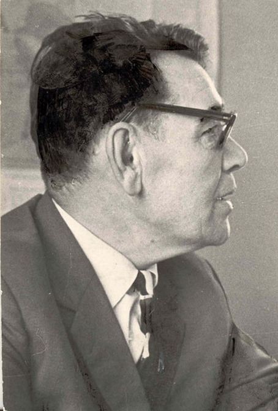
Киекбаев Джалиль Гиниятович (Джелиль Гиниатович) – башкирский языковед, писатель. Доктор филологических наук (1960), профессор (1961), Заслуженный деятель науки БАССР (1967).Киекбаев Джалиль Гиниятович родился 25 октября 1911 г. в деревне Каранйылга Стерлитамакского уезда Уфимской губернии, ныне Гафурийского района Республики Башкортостан. В 1937г. окончил Московский педагогический институт иностранного языка им. М. Тореза. С 1938 г. - преподаватель иностранного языка в вузах Башкирии. В 1943-1944 гг. - главный редактор Башкирского книжного издательства. В 1948-1951 гг. - декан факультета иностранных языков, с 1951 г. - заведующий кафедрой башкирского языка Башкирского государственного педагогического института им. К.А. Тимирязева. С 1957 г. Киекбаев - проректор по учебной работе, с 1961 г. заведующий кафедрой башкирского языка Башкирского государственного университета. Автор фундаментальных трудов по фонетике, орфоэпии, диалектологии, морфологии, лексике и фразеологии, стилистике, истории и грамматике башкирского языка. Киекбаев Д.Г. – основатель башкирской школы сравнительно-исторического изучения урало-алтайских языков. Автор учебников для школ и средних учебных заведений и вузов, романа «Родные и знакомые», рассказов и сказок для детей. Переводил на башкирский язык произведения классиков немецкой литературы.
Умер 19 марта 1968 г. в Уфе.
Библиография
1. Вахитов, А. Джалиль Киекбаев и его роман [Текст] / А. Вахитов // Киекбаев Д.Г. Родные и знакомые : роман / Д.Г. Киекбаев ; пер. с башк. М. Гафурова. - Уфа: Башк. кн. изд-во, 1981. – С. 454 - 463.- (Библиотека башкирского романа «Агидель»).
2. Вахитов, А. Эрудиция ученого и талант писателя [Текст] / А. Вахитов // Киекбаев Д. Г. Родные и знакомые : роман / Д. Г. Киекбаев ; пер с башк. М. Гафурова. – М.: Современник, 1985. – С. 318 - 319.
3. Воспоминания о Джалиле Киекбаеве [Текст] / сост. А. Вахитов, А. Аминев. – Уфа: Башк. кн. изд- во, 1989. – 184с. - (На башк. языке).
4. Гарипов, Р.Я. Аманат: кубаир [Текст] / Р.Я. Гарипов // Р.Я. Гарипов Возвращаюсь к песням своим: стихи на башк. языке / Р.Я. Гарипов. – Уфа: Китап, 2002. – С.127 – 131.
5. Джалиль Киекбаев (1911-1968) [Текст] // Писатели земли башкирской : справочник / сост. Р.Н. Баимов, Г.Н. Гареева, Р.Х. Тимергалина. – Уфа: Китап, 2006.- С.241-242.
6. Зайнуллин, М. Величина и сила науки [Текст] / М. Зайнуллин // Истоки . – 2006. - №48. – С.7.
К 95-летию профессора Д. Киекбаева.
7. Зайнуллин, М. Гордость башкирского народа [Текст] / М. Зайнуллин // Истоки . – 2001. - №23. – С.8-9.
К 95-летию профессора Д.Г. Киекбаева, известного тюрколога, учёного-языковеда и известного башкирского писателя.
8. Зайнуллин, М.Ф. Профессор Дж. Г. Киекбаев и его вклад в тюркское языкознание / М. Зайнуллин // Ядкарь. – 2001. - № 4. – С.108 – 117.
9. Илишев, И.Г. К выходу книги Дж. Г. Киекбаева «Основы исторической грамматики урало - алтайских языков» [Текст] / И. Г. Илишев // Ватандаш . – 1996 . - № 1. – С. 193.
10. Киекбаев Джалиль Гиниятович // Башкортостан : краткая энциклопедия . − Уфа, 1996. − С. 333.
11. Киекбаев Джелиль Гиниатович // Башкирская энциклопедия. − Уфа, 2007. − Т. 3; З-К. − С. 392−393.
12. Киекбаева, С.М. Башкирская национальная картина мира в русском переводе романа Дж. Г. Киекбаева «Родные и знакомые» [Текст] / С.М. Киекбаева // Ядкар . – 2005. - № 2. – С.119 – 124.
13. Петров, Ю. «Вдохновенная песня» Джалиля Киекбаева [Текст] / Ю. Петров // Истоки. – 2004. - №42. – С.11.
14. Соловьев, В. Улицы нашего города: Киевская, Киекбаева, Кинельская [Текст] / В. Соловьев // Уфимские ведомости. - 2007. - №7. – С.7.
15. Халиков, Р. Башкировед и германист: новаторское мастерство Джалиля Киекбаева [Текст] / Р. Халиков // Истоки. – 2004. - №44. – С.11.
16. Узиков, Ю.А. Вдохновенная песня [Текст] / Ю.А. Узиков // Это с нами навсегда / Ю.А. Узиков. – Уфа: Башк. кн. изд-во, 1983.- С.98-99.
17. Узиков, Ю.А. Джалиль Киекбаев, башкирский языковед, писатель [Текст] / Ю.А. Узиков // Исторические памятники Уфы / Ю.А. Узиков. – Уфа: Китап, 1999. – 288 с.: ил.
На башкирском языке
1. Байымов, Р. Милли рухлы ижад [Текст] / Р. Байымов // Башҡортостан. - 2006. – 2 ноября.- № 216. – С. 3.
К 95-летию со дня рождения Джалиля Киекбаева
2. Ғибаҙуллина, М. Яҡташтарын һәр саҡ ҙурланы [Текст] / М. Ғибаҙуллина // Башҡортостан. - 2006. – 2 ноября.- №216. – С. 3.
3. Зәйнуллин, М. Башҡорт халҡының ғорурлығы [Текст] / М. Зәйнуллин // Ватандаш . – 2006. - № 10. – С. 76 – 90.
4. Искәндәров, Р. Телде яратырға өйрәтте [Текст] / Р. Искәндәров // Башҡортостан. - 2006. – 2 ноября.- № 216. – С. 3.
К 95-летию со дня рождения Джалиля Киекбаева
5. Килмөхәмәтов, Т. Тәбиғәт таланты уға йомарт биргән [Текст] / Т. Килмөхәмәтов // Башҡортостан. - 2006. – 2 ноября.- № 217.- С. 3.
К 95-летию со дня рождения Джалиля Киекбаева
6. Мәжитов, Д. Арҙаҡлы ғалимға ябайлыҡ хас ине [Текст] / Д.Мәжитов // Башҡортостан. - 2006. – 2 ноября.- № 216. – С. 3.
7. Саньяров, Ф. Жәлил Кейекбаев һәм стилистика проблемалары [Текст] / Ф. Саньяров // Башкортостан укытыусыхы. – 2006. - №10. – С.34-36.
Профессору Джалилю Киекбаеву – 95 лет.
Произведения Киекбаева Д.Г.
1. Киекбаев, Д. Г. Зубай Утягулов [Текст] : очерк / Д.Г. Киекбаев ; пер. с башк. С.Воробьева. – Уфа: Башк. кн. изд-во, 1987. – 64 с. – (Герои Советского Союза).
2. Киекбаев, Д. Г. Основы исторической грамматики урало-алтайских языков [Текст] / Д.Г. Киекбаев.- Уфа: Китап, 1996. – 368 с.
3. Киекбаев, Д. Г. Родные и знакомые [Текст] : роман / Д. Г. Киекбаев ; пер. с башк. М. Гафурова. – М: Современник, 1985. – 320 с.
4. Киекбаев, Д. Г. Родные и знакомые [Текст] : роман / Д. Г. Киекбаев ; пер. с башк. М. Гафурова. – Уфа: Башк. кн. изд-во, 1981. – 464 с.
5. Киекбаев, Д.Г. Туғандар һәм таныштар : роман [Текст] / Д. Г. Киекбаев. - Өфө: Башҡ. китап нәшриәте, 1991.- 352 бит.
6. Киекбаев, Д. Г.Туғандар һәм таныштар : роман [Текст] / Д. Г. Киекбаев. - Өфө: Башҡ. китап нәшриәте, 1975.- 352 бит.
7. Киекбаев, Д. Г. Две сказки про ежа [Текст] / Д. Г. Киекбаев. – Уфа: Башк. кн. изд-во, 1971. – 31 с.
8. Киекбаев, Д. Г. Лесные сказки [Текст] ; пер. с башк / Д. Г. Киекбаев ; художн. Р.Г. Гумеров.- Уфа: Башк. кн. изд-во, 1982. – 28 с.: ил.
9. Киекбаев, Д. Г. Хитрая лиса [Текст] ; пер. с башк. / Д. Г. Киекбаев ; художн. Р.Г. Гумеров. - Уфа: Башк. кн. изд-во, 1983. – 14 с.: ил.
1. Байымов, Р. Милли рухлы ижад [Текст] / Р. Байымов // Баш7ортостан. - 2006. – 2 ноября.- № 216. – С. 3.
К 95-летию со дня рождения Джалиля Киекбаева
2. ;иба6уллина, М. Я7таштарын 32р са7 6урланы [Текст] / М. ;иба6уллина // Баш7ортостан. - 2006. – 2 ноября.- №216. – С. 3.
3. З2йнуллин, М. Баш7орт хал7ыны8 4орурлы4ы [Текст] / М. З2йнуллин // Ватандаш . – 2006. - № 10. – С. 76 – 90.
4. Иск2нд2ров, Р. Телде яратыр4а 0йр2тте [Текст] / Р. Иск2нд2ров // Баш7ортостан. - 2006. – 2 ноября.- № 216. – С. 3.
К 95-летию со дня рождения Джалиля Киекбаева
5. Килм0х2м2тов, Т. Т2би42т таланты у4а йомарт бирг2н [Текст] / Т. Килм0х2м2тов // Баш7ортостан. - 2006. – 2 ноября.- № 217.- С. 3.
К 95-летию со дня рождения Джалиля Киекбаева
6. М2житов, Д. Ар6а7лы 4алим4а ябайлы7 хас ине [Текст] / Д.М2житов // Баш7ортостан. - 2006. – 2 ноября.- № 216. – С. 3.
7. Саньяров, Ф. Ж2лил Кейекбаев 32м стилистика проблемалары [Текст] / Ф. Саньяров // Башкортостан укытыусыхы. – 2006. - №10. – С.34-36.
Киньябулатова Катиба Каримовна
1920 - 2012
 Катиба Каримовна Киньябулатова родилась 15 сентября 1920 года в деревне Мавлютово Кулуевского района (ныне Аргаяшского района) Челябинской области. В общении с природой росла Катиба - прозрачная вода реки Миасс, трели соловья, столетние вечнозеленые сосны и ели доносили неразгаданную тайну.
Катиба Каримовна Киньябулатова родилась 15 сентября 1920 года в деревне Мавлютово Кулуевского района (ныне Аргаяшского района) Челябинской области. В общении с природой росла Катиба - прозрачная вода реки Миасс, трели соловья, столетние вечнозеленые сосны и ели доносили неразгаданную тайну.
«Мама была портнихой, шила на всю деревню, прекрасно пела», - вспоминает о детстве Катиба. «Отца звали Карим. Школьный учитель, большой знаток башкирского народного творчества, он много читал. Отец вложил в моё сердце любовь к литературе и природе. Он часто говорил: «Нужно любить природу, дочь моя. Коль любишь природу, даже камни раскроют тебе свою вековую тайну».
Семья была многодетной, творчески одарённой. Отец хотел видеть детей счастливыми, образованными. Но судьба распорядилась по-своему, жизнь отца прервалась, в 1938 году по ложному доносу его арестовали и расстреляли.
В стихотворении «Счастье в жизни есть» Катиба Каримовна писала:
Даже если в чёрном небе
Чёрных туч стада,
Даже если осень бродит
В умерших садах.
Даже если болью станет
Радостная весть,
Всё равно я сердцем знаю:
Счастье в жизни есть!..
Ночь не вечна, грусть сотрётся,
Словно след в песке,
И над миром грянет солнце,
Яркое, как медь,
И душа вздохнёт свободно:
Счастье в жизни есть!
Дети росли, жизнь продолжалась. Катиба старается осуществить мечту отца. По окончании Мухаметкуловской семилетней школы в 1936-1939 годах девушка обучалась на рабфаке в городе Уфа. В этот период развивается творчество Катибы Каримовны, появляются на страницах газет и журналов стихи молодой поэтессы. Первые стихи были напечатаны в 1939 году в журнале «Октябрь» (ныне «Агидель»).
В 1939 году Катиба Каримовна поступила на факультет языка и литературы Башкирского государственного педагогического института. «Как ни трудно жилось тогда, мы были счастливы. И мы были уверены, что это счастье – навсегда и ничто не помешает нам быть счастливыми. Но война всё перевернула», - вспоминает Катиба Каримовна.
Катиба Каримовна вынуждена была прервать обучение, вернулась в родной аул – учительствовать, позднее окончила институт заочно. Девушка, как и все, рвалась на фронт. Вспоминает Катиба Каримовна: «Сколько заявлений писала в военкомат! И всё понапрасну.
И вот однажды дождалась:
- Пришла телефонограмма из военкомата, вызывают меня…
Мама моя была сильным человеком. Когда я, запыхавшись, прибежала со своей новостью домой, она побледнела и всё же твёрдо сказала мне:
- Иди, воюй! Только возвращайся живой!
Собралась мигом. Надела поверх пальто старую отцовскую шубу, попрощалась с родственниками, с соседями. И сани отыскались. Но только мы поравнялись с сельсоветом, как выскочила оттуда на крыльцо девчонка – секретарь.
- Стойте, стойте! – кричит. – Новая телефонограмма. Что-то там напутали: повестка - не тебе…
Кучер тут же погнал меня из саней:
- Ступай, ступай, дочка! Не пришёл, выходит, твой черёд.
Как я плакала, прямо там, на дороге, повалившись в сугроб!»
С 1941 года в течение двенадцати лет работала Катиба Каримовна преподавателем башкирского языка и литературы в Кулуевской средней школе Челябинской области, одновременно заведовала учебной частью. Когда Катиба Каримовна говорит о малой родине, то, прежде всего, вспоминает березки, родниковую речку, аквамариновый блеск озер, учеников, которым прививала любовь к родной земле. Ученики стали людьми вполне почтенного возраста. А в её восприятии они - все те же дети с широко распахнутыми любознательными глазами, жадно вбирающими в себя окружающий мир. С любовью вспоминает Катиба Каримовна свою бабушку, сказочницу, которая подарила ей дар поэтического воображения. Катиба Каримовна впитывала в себя рассказы и притчи бабушки, легенды и предания своего края, говор и обычаи земляков, песни и напевы родимой земли.
В 1953 году Катиба Киньябулатова возвратилась в Уфу и стала работать в редакции журнала «Эдэби Башкортостан», навсегда связав свою судьбу с журналистикой и литературой. К этому периоду относится её активная творческая деятельность, выходят сборники стихов: «Первые цветы» (1954), «Белая козочка – золотое копытце» (1955).
В середине 1960-х группа писателей – Марат Каримов, Абдулхак Игебаев, Фарит Исянгулов и Катиба Киньябулатова – направляется в город Урай, к тюменским нефтяникам. Работающий главным инженером джигит Якуп Шамсетдинов, влюбляется в пламенную поэтессу и переезжает в Уфу к Катибе. Любовь не обходит стороной Катибу Каримовну.
Катиба Каримовна трудится как журналист, ищет возможность пополнить свои знания, приобрести новых друзей. «Вот и на Высших литературных курсах при Союзе писателей СССР в Москве в 1961-1963 гг. училась вместе с талантливой, очень тонкой поэтессой Новеллой Матвеевой, - вспоминает Катиба Каримовна. - Она много меня переводила...»
В 1963 году Катиба Каримовна создаёт республиканский женский журнал «Башкортостан кызы» ("Дочь Башкирии"), которым руководит восемь лет, собирая вокруг себя талантливую молодежь.
Вспомнилось интервью Катибы Каримовны в день 80-летия:
- Вы можете о себе сказать, что Вы счастливый человек?
- Могу. Я всю жизнь занималась любимым делом. Писала стихи.
- Скажите, пожалуйста, о чём Вам больше всего нравится писать?
- О любви. К родному краю, родителям, детям...
Произведения Катибы Киньябулатовой
В башкирской литературе голос Катибы Каримовны звучит неповторимо. В стихотворении «Стать бы поющей птицей» она писала:
…Будь я птицей певчей, быстрокрылой –
Славила бы песнею своей
Матерей, что в муках одарили
Жизнью вечною богатырей.
Родина моя,
Башкортостан мой,
Мне бы превратиться в соловья,
Воспевать тебя я не устану,
Родина великая моя!
В книге «Зеленые листья» (1958), у Катибы Каримовны раскрывается талант тонкого лирика, умеющего изящно и просто передать словами искренность чувств, поэзия воодушевляет читателя задушевностью и простотой. Привычные образы, события поэтесса переосмысливает, подаёт совсем по-иному. Вот птица учит своего птенца летать. Отчего взлетает впервые птенец? Почему он отрывается от земли? «Мать приласкала его – и он полетел…» Любовь, ласка движет всеми добрыми делами на земле. Этот святой закон несёт поэтесса через всё своё творчество, через всю свою жизнь.
А в 1961 году выходит лирическая поэма «Луч – дитя». Катиба Каримовна психологически тонко, по-матерински сдержанно и ёмко показывает мучительные переживания, надежды матери, потерявшей на войне двух сыновей.
«Характерное качество поэзии Катибы Киньябулатовой – её естественность, повседневность, - отмечал Газим Шафиков. – Она действительно находит её вокруг себя в предметах, видимых взору каждого, и глубоко, по-своему раскрывает их перед читателем. Книги Катибы Каримовны: «Неугасимая любовь» (1962), «Минуты» (1965), «Травинка» (1965), «Я пою» (1968), «Звёзды пляшут» (1969), «Зови меня» (1969), «Избранные произведения» (1970), «Лирика» (1975), «Дыхание матери» (1980), «Всё – на родной земле» (1982), «Быль это или сказка?» (1988), «Восхождение в глубину» (1990), «Голос сердца» (1998), «В стране изумруда» (2000), «Избранные прозведения» (2005), - дарят удовольствие, потому что все произведения понятны и близки людям.
В 2010 году, к 90-летию, Катиба Каримовна издала книгу «Ветераны». В сборнике автор представила стихи и поэмы, повесть и рассказы. В стихах – глубокие раздумья поэтессы о судьбе своего народа, призыв к высоким нравственным ценностям, яркое проявление духовных сил и поиск женского счастья. Её рассказам и повести присущи философичность, осмысление сегодняшней действительности с позиции нравственности былых героических времен, неразрывная связь исторического прошлого с настоящим. Рассказы посвящены лирической теме, межнациональной дружбе и отношениям между родителями и детьми. Книга заняла достойное место в ряду произведений башкирской классики.
Произведения для детей
Дарование поэтессы раскрылось в области детской литературы. В стихах, поэмах, сказках, повестях для детей и подростков есть у Катибы Киньябулатовой удивительная особенность: говорить о серьёзной теме доступно для детского понимания и в то же время сохранять глубинный смысл описываемого. Она завораживает маленького читателя даже не с первых строк, а с заголовка. Вот сборник «Воробьиные радости» (1995) (название можно перевести и как «Воробьиное спасибо»). Ещё не открыв книгу, ребёнок удивляется: как воробьи могут благодарить? Открывает, а там!.. Цветы пляшут, солнце смеётся, листья хлопают в ладоши. И нет конца – края разыгравшейся фантазии читателя. И где такая волшебная страна? – обязательно задумается он. Ответ - здесь же: эти серебряные речки, сказочное лето, горы в белых облаках, серебряные зеркала озёр – это всё в родном краю, имя которому Башкортостан.
Нередок в детской литературе образ беркута. Чем же волнует душу Катибы Каримовны образ беркута? Бескрайней любовью к небу? Нет, к родной земле. «Где бы я ни летал, в какие бы я выси ни взмывал, вернусь я на родную землю. Тянет, тянет меня она», - говорит крылатый герой. В стихах: «Первые цветы» (1954); «Белая козочка – золотое копытце» (1955); «Радость» (1957); «Аниса» (1960), «Беркут» (1966), «Золотой ключик Айгузель» (1970), «Жеребёночек» (2008), - раскрывается мастерство Катибы Каримовны в умении заинтриговать, удивить и восхитить читателя. Многолетняя работа в школе, глубокое знание психологии детей сопутствовали успеху её произведений среди юных читателей.
Новая грань таланта писательницы раскрылась в повести «Голос отца» (1964), это первая прозаическая книга Катибы Каримовны. Много трудностей выпало на долю героя повести – двенадцатилетнего Булата: отец его ушёл воевать против захватчиков, а мать заболела. Пришлось Булату стать главой дома. Катиба Каримовна реалистически изображает жизнь детей башкирского аула в годы Великой Отечественной войны.
В повести «Слово живым» (1971), Катиба Каримовна создала героический образ погибшей во время Великой Отечественной войны башкирской девушки Магифарваз, от имени которой идёт повествование.
«Внучка партизана» (1974) - повесть о комсомолке – десятикласснице. Книга написана на документальном материале, героиней повести стала Майпара Сакаева. Девушка добровольно ушла на фронт, стала медицинской сестрой, отважно воевала и погибла, выполняя долг перед Родиной.
Герои произведений о Великой Отечественной войне прививают юному читателю любовь к Родине и уважение к людям.
Катиба Каримовна встречается с читателями, является почётным гостем детских библиотек. Беседы о прочитанных книгах, размышления о судьбах героев помогают автору и читателям познакомиться, пообщаться и подружиться.
Переводы
Катиба Киньябулатова переводила на башкирский язык А. С. Пушкина, Адама Мицкевича, Агнию Барто.
А книги Катибы Каримовны переводили на русский язык талантливые поэты, прозаики, литературоведы: Н. Матвеева, И. Киуру, А. Соколовский, К. Ахмедьянов, Н. Наджми, Г. Рамазанов, Р. Хакимов, А.Филиппов, Г. Шафиков, В. Устинов, С. Воробьев, Е. Совинов, Ю. Андриянов, М. Ерилин, Л. Романенко, Н. Грахов, Л. Шикина, А. Филиппов, М. Ерилин и др.
Произведения Катибы Каримовны переводились на языки: турецкий, татарский, киргизский, литовский язык (И. Якштас); эстонский язык (И.Триккель); якутский язык (А. Вилюйский); удмуртский язык (М. Иванов); украинский язык (Д. Павлычко, И. Измайловский, М. Лиходед, П.Симоненко).
Переводы стихов, выполненные Новеллой Матвеевой, вошли в книгу "Травинка». Книга вышла в Москве в 1965 году. Это были первые стихи Киньябулатовой в переводе на русский язык. Прочитал книгу известный писатель Корней Чуковский, немного знакомый с Катибой Каримовной по Переделкино, и написал письмо:
"Дорогая Катиба! Когда я получил Вашу книгу, я лежал в больнице. Мне было запрещено читать и писать. Поэтому только теперь посчастливилось вплотную насладиться Вашей «Травинкой». Отличная книга. Вся насыщена радостью золотой листвы, птичьих голосов, ветров, цветов, звезд, облаков и подлинная, поэтичная, светлая, чистая, как горный ручей. Вы счастливица: поэзия без всякого труда дается Вам. Вы не ищете ее, не выжимаете из себя, не насилуете души и вообще не знаете никакой натуги, никакого притворства, никакой позы. Многие из современных поэтов (особенно зарубежных) выискивают сногсшибательные сюжеты, эксцентрические, небывалые темы, а для Вас весь мир - поэзия, потому что Вы поэт божьей милостью, поэт не только для других, но и для себя. Я понял это в тот незабвенный час, когда познакомился с Вами и слушал Ваши стихи в великолепных переводах Новеллы Матвеевой. Я называю эти переводы великолепными, так как в них такое мастерство, что не чувствуешь в них ничего переводческого, - свободное дыхание, высокая простота, благородная и тонкая чеканка. Очень жаль, что я хвораю, - я непременно написал бы о «Травинке» статью и воздал бы честь не только Вам, но и И. Киуру и Матвеевой, но, увы, даже это письмо я пишу украдкой, тайком от врачей: у меня сильное мозговое переутомление (Вашу книгу нужно посылать во все санатории и клиники - столько в ней заразительного душевного здоровья). Будьте счастливы! Ваш К. Чуковский".
Награды
Катиба Каримовна Киньябулатова имеет звания «Почётный гражданин Аргаяшского района Челябинской области», «Заслуженный работник культуры Республики Башкортостан», награждена орденом «Знак Почёта».
Президент Башкортостана Рустэм Хамитов подписал 5 марта 2011 года Указ о присуждении Государственной премии Республики Башкортостан имени Хадии Давлетшиной в области литературы и искусства для детей и юношества профессиональному писателю Катибе Киньябулатовой.
Библиография
Книги на башкирском языке
1. Киньябулатова, К.К. Первые цветы [Текст] : стихи для детей / К.К. Киньябулатова. – Уфа: Башкнигоиздат, 1954. – 30 с.
2. Киньябулатова, К.К. Белая козочка – золотое копытце [Текст] : стихи для детей дошк. возр./ К.К. Киньябулатова. – Уфа: Башкнигоиздат, 1955. – 35 с.
3. Киньябулатова, К.К. Радость [Текст] : стихи для детей дошк. возр. / К.К. Киньябулатова. – Уфа: Башкнигоиздат, 1957. – 43 с.
4. Киньябулатова, К.К. Зелёные листья [Текст] : стихи / К.К. Киньябулатова. – Уфа: Башкнигоиздат, 1958. – 95 с.
5. Киньябулатова, К.К. Аниса [Текст] : стихи для детей / К.К. Киньябулатова. – Уфа: Башкнигоиздат, 1960. – 45 с.
6. Киньябулатова, К.К. Неугасимая любовь [Текст] : поэма, стихи / К.К. Киньябулатова. – Уфа: Башкнигоиздат, 1962. – 71 с.
7. Киньябулатова, К.К. Голос отца [Текст] : повесть / К.К. Киньябулатова. – Уфа: Башкнигоиздат, 1964. – 102 с.
8. Киньябулатова, К.К. Минуты [Текст] : стихи / К.К. Киньябулатова. – Уфа: Башкнигоиздат, 1965. – 87 с.
9. Киньябулатова, К.К. Беркут [Текст] : стихи для детей / К.К. Киньябулатова. – Уфа: Башкнигоиздат, 1966. – 24 с.
10. Киньябулатова, К.К. Я пою [Текст] : стихи / К.К. Киньябулатова. – Уфа: Башкнигоиздат, 1968. – 160 с.
11. Киньябулатова, К.К. Звёзды пляшут [Текст] : стихи / К.К. Киньябулатова. – Уфа: Башкнигоиздат, 1968. – 31 с.
12. Киньябулатова, К.К. Золотой ключик Айгузель [Текст] : стихи / К.К. Киньябулатова. – Уфа: Башкнигоиздат, 1970. – 79 с.
13. Киньябулатова, К.К. Избранные произведения [Текст] : стихи, баллады, поэмы / К.К. Киньябулатова. – Уфа: Башкнигоиздат, 1970. – 304 с.
14. Киньябулатова, К.К. Слово живым [Текст] : повесть / К.К. Киньябулатова. – Уфа: Башкнигоиздат, 1971. – 136 с.
15. Киньябулатова, К.К. Лирика [Текст] : стихи / К.К. Киньябулатова. – Уфа: Башкнигоиздат, 1975. – 78 с.
16. Киньябулатова, К.К. Голос отца [Текст] : повесть / К.К. Киньябулатова. – Уфа: Башкнигоиздат, 1977. – 134 с.
17. Киньябулатова, К.К. Дыхание матери [Текст] : стихи, поэмы, баллады / К.К. Киньябулатова. – Уфа: Башкнигоиздат, 1980. – 238 с.
18. Киньябулатова, К.К. Всё – на родной земле [Текст] : стихи / К.К. Киньябулатова. – Уфа: Башкнигоиздат, 1982. – 96 с.
19. Киньябулатова, К.К. Быль это или сказка? [Текст] : стихи / К.К. Киньябулатова. – Уфа: Башкнигоиздат, 1988. – 56 с.
20. Киньябулатова, К.К. Восхождение в глубину [Текст] : повесть, рассказы / К.К. Киньябулатова. – Уфа: Башкнигоиздат, 1990. – 240 с.
21. Киньябулатова, К.К. Воробьиные радости [Текст] : стихи, сказки, сценарии / К.К. Киньябулатова. – Уфа: Китап, 1995. – 185 с.
22. Киньябулатова, К.К. В стране изумруда [Текст] : стихи, баллады, поэмы / К.К. Киньябулатова. – Уфа: Китап, 2000. – 287 с.
23. Киньябулатова, К.К. Избранные произведения [Текст] / К.К. Киньябулатова. – Уфа: Китап, 2005. – 224 с.
24. Киньябулатова, К.К. Жеребёночек [Текст] : стихи, повесть для детей / К.К. Киньябулатова. – Уфа: Китап, 2008. – 159 с.
25. Киньябулатова, К.К. Ветераны [Текст] : стихи, повести, поэмы, рассказы / К.К. Киньябулатова. – Уфа: Китап, 2010. – 304 с.
Книги на русском языке
1. Киньябулатова, К.К. Травинка [Текст] : стихи, поэма / К.Киньябулатова ; пер. Н. Матвеева, И. Киуру. – М. : Сов. писатель, 1965. – 80 с.
2. Киньябулатова, К.К. Голос отца [Текст] : повесть / К.Киньябулатова ; пер. А. Соколовского. – М. : Детская лит., 1965. – 110 с.
3. Киньябулатова, К.К. Голос отца [Текст] : повесть / К.Киньябулатова ; пер. А. Соколовского. – Уфа : Башк. кн. изд–во, 1967. – 119 с.
4. Киньябулатова, К.К. Зови меня [Текст] : стихи / К. Киньябулатова ; редкол. К.Ахмедьянов, Н. Наджми, Г. Рамазанов и др. – Уфа : Башк. кн. изд–во, 1969. – 95 с.
5. Киньябулатова, К.К. Внучка партизана [Текст] : повести / К.Киньябулатова ; пер. Р. Хакимова, А. Соколовского. – М. : Детская лит., 1974. – 144 с.
6. Киньябулатова, К.К. Внучка партизана [Текст] : повести / К.Киньябулатова ; пер. Р. Хакимова, А. Соколовского. – Челябинск, 1982. – 157 с.
7. Киньябулатова, К.К. Дыхание матери [Текст] : стихи, поэма / К.Кинбябулатова ; пер. А. Филиппов [и др.] . – Уфа : Башк. кн. изд–во, 1985. – 128 с.
8. Киньябулатова, К.К. Голос сердца [Текст] : стихи, баллады, поэма / К. Киньябулатова ; пер. Е. Савинов [и др.]. – Уфа: Китап, 1999. – 162 с.
На других языках
На киргизском языке
1. Один взгляд [Текст] : стихи // Букет дружбы : сб. – Фрунзе, 1972. – С. 73.
На литовском языке
1. Чай [Текст] : стихи / пер. И. Якштас // Тарибине мотерис. – 1961. – № 12.
На удмуртском языке
1. Звезда [Текст] : стихи / пер. М. Иванов // Советская Удмуртия. – 1972. – 9 сентября.
На украинском языке
1. Баллада о Салавате [Текст] / пер. Д. Павлычко // Витчизна. – 1970. – №10. – С. 13–14.
2. На свидание [Текст] : стихи / пер. И. Измайловский // Комсомолець Полтавщини. – 1970. – 24 окт.
3. Что за вечер ; Со мною горы говорили ; Травинка ; Мак [Текст] : стихи / пер. : М. Лиходед, П. Симоненко // Мелодии Агидели : поэзия / сост. Петро Ребро. – Днепропетровск, 1980. – С. 96–100.
На эстонском языке
1. Роза ; Кому что ; Тень [Текст] : стихи / пер. И. Триккель // Ноорус. – 1964. – № 6. – С. 13.
На якутском языке
1. Песня матери [Текст] : стихи / пер. А. Вилюйский // Эдэр коммунист. – 1965. – 17 марта.
О жизни и творчестве в сборниках
1. Гайнуллин М., Катиба Киньябулатова [Текст] / М. Гайнуллин, Г. Хусаинов // Гайнуллин М., Писатели советской Башкирии : биобиблиографический справочник / М. Гайнуллин, Г. Хусаинов. – Уфа, 1969. – С. 222–223.
В периодических изданиях
1. Давыдов, А. Жизни радостные гимны [Текст] / А. Давыдов // Ленинец. – 1965. – 14 августа.
2. Макаров, А. Искры сердечного огня [Текст] / А. Макаров // Знамя. – 1965. – № 12. – С. 243–244.
3. Шафиков, Г. Стихи из трав и солнца : О сборнике стихов М. Гали “Солнце и слезы” и К. Киньябулатовой “Травинка” [Текст] / Г. Шафиков // Советская Башкирия. – 1965. – 19 августа.
4. Ганиева, Т. Поэт [Текст] / Т. Ганиева ; пер. А. Хусаинова // Бельские просторы. – 2000. – № 10. – С. 124–125.
5. Нафикова, А. Золотая осень Катибы Киньябулатовой : юбилей башкирской поэтессы [Текст] / А. Нафикова // Советская Башкирия – Известия Башкортостана. – 2000. – 15 сентября. – С. 3.
6. Кильмухаметов, Т. Насколько похожие судьбы! : Катиба Киньябулатова – писательница [Текст] / Т. Кильмухаметов // Вечерняя Уфа. – 2006. – 18 февраля. – С. 3.
7. Губайдуллина, Ф. Поющая птица [Текст] / Ф. Губайдуллина // Истоки. – 2010. – 8 сентября. – С. 10.
8. Женская лирика [Текст] // Истоки. – 2011. - № 10. – С. 7.
Содерж.: Баймакская красавица ; Чернозём ; Свадьба ; Не стучу кулаками в грудь ; Два солнца ; Душа; Магнитная буря ; Так предписано.
В энциклопедиях
1. Киньябулатова, К. [Текст] // Башкортостан : краткая энциклопедия / гл. ред. Р.З. Шакуров; Науч. изд–во “БЭ”. – Уфа, 1996. – С. 335.
2. Киньябулатова, К. [Текст] // Башкирская энциклопедия. Т. 3 : З–К / науч. рук. и гл. ред. М.А. Ильгамов. – Уфа, 2007. – С. 403.
3. Киньябулатова, К. [Текст] // Салават / сост. И.М. Гвоздикова. – Уфа, 2004. – С. 166–167.
Короленко Владимир Галактионович
(1853-1921)
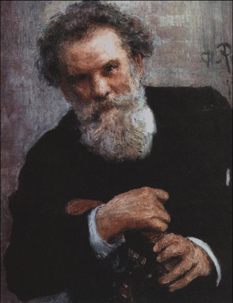
Русский прозаик, публицист, почетный академик Петербургской Академии наук. Родился на Украине в городе Житомир, в семье уездного судьи, честного и справедливого человека. Жить было трудно, особенно после того, как умер отец (к тому времени Володя еще не окончил гимназии). Владимир прикладывал все усилия, чтобы получить образование. Студенческие годы были трудными, будущему писателю приходилось подрабатывать. В печати он дебютировал как корреспондент газеты «Новости». Его первый рассказ - «Эпизоды из жизни искателя».В 1876 году Короленко исключили из Петровской земледельческой академии за народнические идеи и выслали в Вологодскую губернию, затем под надзор полиции в Кронштадт. В 1877 году Короленко пытается поступить в Петербургский горный институт, однако вскоре, как «политически неблагонадежный», оказывается под арестом. С 1879 года для будущего писателя начинается время непрерывных арестов и ссылок. Вятка, Пермь, Якутская губерния — везде он жил и работал бок о бок с бедняками российских окраин. Он пахал, сеял, шил сапоги, занимался различными ремеслами.
Короленко начинал свою литературную деятельность в далеких поселениях: ссылки дали богатый материал для его творчества. В этот период появляются его рассказы «Чудная», «Сон Макара», «Убивец», «Соколинец», «В дурном обществе», которые появились в печати лишь после возвращения писателя из ссылки. В 1885 году В. Короленко поселился в Нижнем Новгороде, здесь он стал работать корреспондентом газеты «Волжский вестник». 22 октября 1887 года его избирают членом Нижегородской архивной комиссии.
Убежденный гуманист, ставший для многих современников олицетворением гражданской совести, в своих статьях он освещал самые темные стороны провинциального быта. Период с 1885 по 1895 год в жизни Нижнего Новгорода Горький назвал «временем Короленко».
В 90-е годы в полной мере раскрывается талант Короленко как публициста. Он работает в газете «Русские ведомости», выступает в своих статьях в защиту коренных народов Поволжья, обличает самоуправство местных властей.
В качестве корреспондента газеты «Русские ведомости» в 1893 году Короленко посетил Всемирную выставку в Чикаго. Личные наблюдения Короленко в Америке легли в основу повести «Без языка».
В 1896 году Короленко покидает Нижний Новгород и переезжает в Петербург. Здесь, несмотря на болезнь, он продолжает активно участвовать в общественной и литературной жизни, ведет большую работу в редакции журнала «Русское богатство». Через руки Короленко прошли тысячи рукописей начинающих писателей. Тонкий художник, замечательный стилист и знаток русского языка Короленко помогал молодым авторам войти в литературу. «Он был моим учителем, недолго, но он был им, и это моя гордость по сей день», - писал М. Горький.
В 1900 году Короленко переезжает из Петербурга в Полтаву, где создает «Истории моего современника» - художественные мемуары, над которыми писатель работал более 15 лет. «История моего современника» осталась незавершенной.
Октябрьскую революцию 1917 года В. Г. Короленко не принял, выступал против большевистского террора («Письма к Луначарскому», опубликованы в Париже в 1922 году). Советская власть относилась к В. Г. Короленко с демонстративным уважением, но его призывы к гуманности игнорировались. В своих воспоминаниях М. Горький писал: «Всю жизнь трудным путем героя он шел навстречу дню, и неисчислимо все, что сделано В. Г. Короленко для того, чтобы ускорить рассвет этого дня».
25 декабря 1921 года Короленко умер в Полтаве.
В. Г. Короленко в Уфе
1. Работа над повестью «Набеглый царь»
Работая в Нижегородской архивной комиссии, Короленко активно и увлеченно занялся историей, в архиве он нашел дела, которые относились к Крестьянской войне 1773-1775 годов под предводительством Емельяна Пугачева. У Короленко зародился замысел написать роман о пугачевщине. Размах величайшего в истории России народного движения, незаурядная личность Пугачева увлекли В. Короленко, он задумал написать повесть «Набеглый царь». Замысел этой работы и привел Короленко в Уфу.
Начался сбор материалов. Долгие годы писатель изучал историческую литературу о пугачевском движении, собирал архивные и фольклорные данные о «народном царе», кроме того, он писал своим многочисленным друзьям и знакомым в разные города России, запрашивая у них архивные документы, касающиеся Крестьянской войны 1773-1775 годов.
Не ограничиваясь изучением архивов, В. Короленко совершил ряд поездок по Нижегородской губернии, Среднему Поволжью, Южному Уралу. В частности, вместе со своим другом – видным общественным деятелем-народником, членом редакции журнала «Русское богатство» Николаем Федоровичем Анненским в конце июня 1891 года он был в Самарской и Уфимской губерниях.
2. Воспоминания о пребывании В. Г. Короленко в Уфе
2.1 Татьяна Александровна Богданович
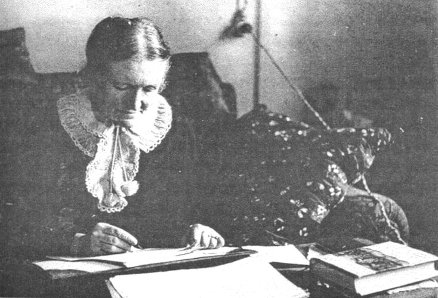
Летом 1891 года Короленко приезжает в Уфу, чтобы разыскать место, где был разбит лагерь видного пугачевского сподвижника Ивана Зарубина-Чики. Племянница Н.Ф. Анненского, известная детская писательница Татьяна Александровна Богданович вспоминает об этой поездке: «Владимир Галактионович поехал вместе с ним в Уфу, чтобы найти там, на месте данные о каком-то заинтересовавшем его движении Пугачева на Востоке. Я хорошо помню эту поездку, так как мы с тетей провожали Владимира Галактионовича и дядю на пароходе до Самары.Владимир Галактионович был тогда в прекрасном настроении, любовался Волгой и рассказывал о Пугачеве». (В то время Т.А. Богданович было 18 лет).
2.2. Воспоминания П.И. Добротворского
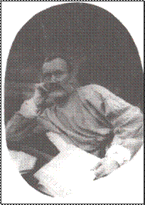
О поездке в июне 1891 года в Уфу с целью осмотра мест, связанных с восстанием Пугачева известно и из других источников, в частности, из примечаний к собраниям сочинений писателя, а также из писем к нему уфимского литератора Петра Ивановича Добротворского.С П. И. Добротворским Короленко познакомился во время своего пребывания в Уфе, а затем около полутора десятка лет переписывался.
Добротворский жил в то время на улице Аксаковской, 43 (ныне улица Аксакова, 49). «Спасибо Вам … за посещение, которое как не коротко было, но доставило мне большое удовольствие»,- писал П.И. Добротворский В. Г. Короленко 10 августа 1891 года.
Кроме того, в отделе рукописей в Российской государственной библиотеке хранится записная книжка В. Г.Короленко, относящаяся к его поездке по Волге и Каме в Уфу. По крайней мере, две записи в ней – «уфимские». «Дорога в Уфу, лагерь Чики», - гласит первая лаконичная запись, четко фиксирующая маршрут и цель путешествия. Вторая представляет карандашный набросок плана местности в районе Чесноковка-Уфа. Здесь упоминается река Белая, река Берсиян (Берсувань), Чесноковка, лагерь Чики, лабаз на берегу Белой, дорога в Уфу и Челябинск. Эти краткие записи были, очевидно, сделаны Короленко во время посещения «лагеря Чики». О поездке В. Г. Короленко в Уфу упоминается также в примечания к его записным книжкам. «Кроме материалов архива, - говорится в них, - интерес писателя к пугачевской старине питался и живыми впечатлениями, как это видно из его нижегородских записных книжек.
Летом 1981 года он совершил поездку в Уфу для осмотра мест, где находился лагерь Чики, сподвижника Пугачева». Поездки писателя по «дорогам Пугачева» отражены в его переписке. Особый интерес представляют письма уфимского литератора П.И. Добротворского к Короленко, широко отразившие быт и нравы «столицы дикой Башкирии». Всего писем 13. Добротворский получал от Короленко и дарственные книги. В момент приезда В. Короленко в Уфу П.И. Добротворскому был пятьдесят один год, он был старейшим уфимским писателем и пользовался авторитетом у молодых начинающих беллетристов. Короленко приехал в Уфу, когда ему было 38 лет. Разница в возрасте не помешала двум выдающимся личностям стать хорошими друзьями. Короленко и позднее обращался к Добротворскому с аналогичной просьбой. Во всяком случае, 25 ноября 1903 года (через 12 лет) Добротворский пишет: «В Уфимском архиве мне обещали навести справку - нет ли чего там о пугачевщине. Что узнаю, сообщу в непродолжительном времени». И в следующем же письме, датированном 31 декабря 1903 года, сообщает: «Посылаю Вам, дорогой Владимир Галактионович, документальные доказательства, что поручение Ваше исполнил, но ничего здесь для Вас путного не нашел. Из здешних архивов все уже давно выбрано и было отправлено в архивы: Оренбургский и Московский. Старик Гурвич по этой части знаток. Он был у меня и такой дал ответ: «Здесь нет ничего». И далее Добротворский делает приписку: «Письма посылаю, чтобы не излагать подробно, как я собирал сведения». Видимо, «письма» - это официальные ответы уфимских учреждений на запросы Добротворского.
2.3 Переписка В. Г. Короленко с Н.А. Гурвичем
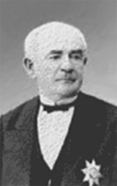
О творческих связях В. Г. Короленко с Н.А. Гурвичем мы узнаем из переписки Короленко и П.И. Добротворского. 1 января 1904 года Добротворский снова пишет Короленко и, продолжая мысли, высказанные накануне, приглашает: «Приезжайте-ка к нам весною в Уфу. Увидите, где близ Уфы Чика стоял. Здесь, говорят, каких-то двух пугачевцев казнили. От старика Гурвича много можно услышать, - видно, что вопрос этот его интересовал, и он о нем много читал».Н. А. Гурвич, врач и журналист, долгие годы был членом Уфимского губернского статистического комитета, а с 1864 года - его секретарем; им издано много справочных книг по Уфе и губернии.
Добротворский мало чем смог помочь Короленко, и все же стало известно, что в Уфе нет дела о Пугачеве, и что бывшие уфимские материалы о нем надо искать в Москве и Оренбурге.
Короленко пишет Гурвичу в Уфу. Это письмо датировано 12 января 1904 года (хранится в том же архиве, где и цитируемые письма Добротворского к Короленко), оно было перепечатано в 1972 году в № 9 альманаха «Прометей».
Вот это письмо: «Милостивый государь Николай Александрович.
От Петра Ивановича Добротворского я узнал, что Вы заняты работой о пугачевцах. В таком случае, без сомнения, Вам известно содержание двух дел о пугачевцах, которые, говорят, сохранились в уфимском архиве. Был бы очень признателен Вам, если бы Вы нашли возможным сообщить мне, что собственно заключается в этих делах, есть ли в них указания, характерные для Чики-Зарубина и его сподвижников, а также, нет ли чего о Белобородове и (особенно для меня интересно) загадочном Хлопуше. Все это мне нужно для работы чисто беллетристической. В свою очередь, если у Вас есть вопросы, на которые я мог бы ответить, - был бы очень рад. Я довольно основательно ознакомился с теми остатками, правда, очень разрозненными, которые сохранились от пугачевских дел в Уральском войсковом архиве.
Прошу принять уверения в совершенном уважении Вл. Короленко».
2.4 Переписка В. Г. Короленко с Н.А. Крашенинниковым
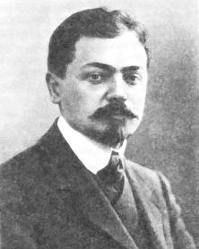
Короленко интересовался также другими выдающимися пугачевцами, в частности, Салаватом Юлаевым. Одним из активных корреспондентов Короленко был Николай Александрович Крашенинников, автор романа «Амеля» и многочисленных рассказов о Башкирии.Николай Александрович Крашенинников в письме от 13 марта 1902 года сообщал: «Глубокоуважаемый Владимир Галактионович... легенду о Салавате я не знаю, но есть основания думать, что нечто похожее на это заключается в одной сказке, набросанной мною вчерне. Сказка называется Сала-Ввет (Салаввет и Салавыт) и повествует о герое, башкирском витязе, подчинившем башкир России при «Иване Сердитом». Легенда довольно любопытная, с оригинальным концом. Салаввет после сражения провалился в пропасть на одной священной горе, полную драгоценностей, которые никто не может из смертных похитить».
Весьма примечательно, что, несмотря на многолетнее общение с башкирами, Крашенинникову не довелось до революции узнать правду о Салавате Юлаеве. Царское самодержавие стремилось вытравить из сознания народа имя национального героя и подвергало преследованию исполнителей песен и рассказчиков легенд о Салавате как политических преступников. Песни же и легенды, разумеется, бытовали среди башкир, но они неохотно знакомили с ними русских «бояр». Башкиры, правда, весьма уважительно относились к Крашенинникову, ибо помнили, что ни дед, ни отец его «не брали» башкирских земель. Но все же, видимо, как дворянин Крашенинников не смог завоевать полного доверия сказителей, народных рассказчиков, и последние ограничились ознакомлением его с весьма туманной историей о некоем «башкирском витязе», произвольно сместив и время действия на два с лишним века назад, к эпохе Ивана Грозного, периоду присоединения Башкирии к России.
Поиски пугачевских материалов в Уфе и Оренбуржье были для Короленко недостаточно плодотворными. Но зато выдающийся русский писатель побывал в Уфе, переписывался с наиболее интересными, духовно близкими ему горожанами.
Интенсивный сбор материала о Пугачеве продолжался до 1905 года. Позднее Короленко вновь надеялся вернуться к взволновавшей его теме, в канун Великой Октябрьской революции говорил жене: «Надо бы мне приняться за Пугачева». Однако повесть «Набеглый царь» не была завершена. Лишь малую толику своего «пугачевского архива» писатель использовал в очерках «У казаков» и «Пугачевская легенда на Урале».
Библиография
Произведения В. Г. Короленко
1. Короленко, В. Г. Собрание сочинений [Текст] : в 8 т. / В. Г. Короленко. - М.: Правда, 1953. - (Библиотека «Огонек»)
2. Короленко, В. Г. Собрание сочинений [Текст] : в 5 т. / В. Г. Короленко ; сост. А. Аверченко, Н. Дождинова ; худ. И. Кулик, А. Сленков. - М.: Худ. лит., 1989.
3. Короленко, В. Г. Избранные произведения [Текст] / В. Г. Короленко. - Пермь: Кн. изд-во, 1983. - 462 с.
4. Короленко, В. Г. Повести и рассказы [Текст] : сборник / сост. предисл. В.И. Кулешова. - М.: Дет. лит.,1983. -703 с., ил. – авт: В.Г.Короленко: А.И. Куприн, И. А. Бунин, А. Н. Толстой. - (Б-ка мировой лит-ры для детей, т.14).
5. Короленко, В. Г. Без языка [Текст] : рассказ / В. Г. Короленко. - М.: Сов. Россия, 1979. - 128 с.
6. Короленко, В. Г. Дети подземелья; Слепой музыкант [Текст] : подготовка к урокам / В. Г. Короленко. - М.: «Стрекоза-Пресс», 2006. - 286 с.
7. Короленко, В. Г. Лес шумит [Текст]: рассказы / В. Г. Короленко. - М.: Худож. лит., 1977. - 284 с.
8. Короленко, В. Г. Повести, рассказы [Текст] / В. Г. Короленко. - Л.: Дет. лит., 1984. - 255 с., ил.
9. Короленко, В. Г. Река играет [Текст]: рассказы / В. Г. Короленко. - Калининград: Кн. изд-во, 1983. - 238 с. - (Школьная библиотека).
10. Короленко, В. Г. Слепой музыкант [Текст] : повесть / В. Г. Короленко. - Уфа: Башк. кн. изд-во, 1980. - 128 с.
11. Короленко В.Г. Слепой музыкант [Текст] : повесть / В. Г. Короленко // Путеводная звезда. - 2006. - 6. - ил., фото.
12. Короленко, В. Г. Чудная; В дурном обществе [Текст] / В. Г. Короленко. - М.: Сов. Россия, 1987. -80 с.
Периодические издания
1. Алданов, М. А., В. Г. Короленко : М. А. Алданов – критик [Текст] / М. А. Алданов // Лит. обозрение. - 1994. - № 7-8. - С. 61-63.
2. Алексеева Г. И. Назначение человека в очерке В. Г. Короленко "Парадокс" [Текст] / Г. И. Алексеева // Литература в школе. - 2001. - № 7. - С. 40-42. - (Поиск. Опыт. Мастерство).
3. Божинова, Г.И. Без доброты и сострадания нет человека [Текст] / Г. И. Божинова // Литература в школе. - 2008. - 2. - С. 32-35.
План изучения повести В. Короленко "Дети подземелья".
4. Бройде, М. Истина или афоризм? : размышления над рассказом В. Короленко "Парадокс" [Текст] / М. Бройде // Воскресная школа (ПС). - 2001. - 10. - С. 8-9.
5. Булавинцев, Н. Французы помогли, свои в упор не видят : дом-музей В. Короленко пришел в полное запустение [Текст] / Н. Булавинцев // Российская газета. - 1995. - 14 ноября (№220). - С. 8.
Десятый год длится реставрация единственного в России музея писателя В. Короленко.
6. Всем равно [Текст] // Литература в школе (приложение). - 2007. - 11. - С. 13.
Содерж.: Урок вдумчивого чтения. VI класс. Мы еще не разучились плакать. Уроки по повести В. Г. Короленко "Дети подземелья" VI класс. Уроки литературы в школе.
7. Дмитриев, С. Завет терпимости [Текст] / С. Дмитриев // Наш современник. - 1990. - 4. - С. 174-192.
Ленин и "Письма к Луначарскому" В. Короленко.
8. Жданова, А. С. Ищи смысла жизни! [Текст] / А. С. Жданова // Литература в школе. - 2009. - 11. - С. 44-46. : ил., фото.
Содерж.: Очерк В. Короленко «Парадокс».
Творчество В. Г. Короленко.
9.Завельская, Д. А. Коммуникативная функция метафоры в повести В. Г. Короленко "Слепой музыкант" [Текст] / Д. А. Завельская // Литературное обозрение. - 1998. - 4. - С. 78-86.
10. Каплан, И. "Стремиться и достигать стоит" : (о произведениях В. Короленко) [Текст] / И. Каплан // Литература. - 1995. - 15. - С. 4.
О рассказе "Парадокс" и стихотворении в прозе "Огоньки".
11. Колесникова, А. В. Г. Короленко в Джанкое [Текст] / А. Колесникова // Юный краевед. - 2006. - 4. - С. 26-27. : ил., фото.
12. Короленко В. Г. Дети подземелья [Текст] : повесть / В. Г. Короленко // Школьная роман-газета. - 2000. - 10. - С. 2-16.
13. В. Короленко, В. Г. Дети подземелья [Текст] / В.Г. Короленко // Духовно-нравственное воспитание. - 2006. - 4. - С. 96-105. : ил., фото.
Содерж.: Библия и повесть В.Г. Короленко "Дети подземелья".
14. Олекминск, Г. Виртуоз добродетели : очерк судьбы В. Короленко [Текст] / Г. Олекминск // Литература. - 1994. - Декабрь (47). - С. 2-3.
Жизненный и творческий путь Владимира Галактионовича Короленко.
15. Петропавловская, Н. Возвращаясь к В. Короленко [Текст] / Н. Петропавловская // Литература. - 1998. - 4 (февраль). - С. 2.
16. Рахимкулов, М. Башкирские страницы В. Короленко [Текст] / М. Рахимкулов // Истоки. - 2009. - 14 (8 апреля). - С. 8-9. : ил.
О пребывании В. Короленко в Уфе.
17. Рахимкулов, М. Уфимские страницы В. Короленко [Текст] / М. Рахимкулов // Бельские просторы. - 2003. - 7. - С. 139-145.
О посещении В. Короленко В. Г. в Уфу.
18. Труханенко, А. Портрет в повести В. Г. Короленко "Дети подземелья" [Текст] / А. Труханенко // Литература (ПС). - 2010. - 7 (апрель). - С. 8-11.
19. Фетисенко, О. Л. "Художник Алымов" В. Г. Короленко : творческая история [Текст] / О. Л. Фетисенко // Русская литература. - 2002. - N 1. - С. 140-146. - (Публикации и сообщения).
20. Фолимонов, С. С. Пейзаж в творчестве В. Г. Короленко [Текст] / С. С. Фолимонов // Литература в школе. - 2001. - № 7. - С. 2-9. - (Наши духовные ценности).
К 150-летию со дня рождения В.Г. Короленко.
21. Шеваров, Д. "... Могу и должен что-то сделать..." [Текст] / Д. Шеваров // Первое сентября. - 2003. - 65. - С. 5.: ил.
О Короленко В. Г. - писателе - революционере.
22. Шкловский, Е. По закону совести: Гаршин и В. Короленко [Текст] / Е. Шкловский // Литература (ПС). - 2001. - N 43 (16-22 ноября). - С. 1-3. - (Пантеон).
23. Шумских, Е. А. О языке повести В. Г. Короленко "Слепой музыкант" [Текст] / Е. А. Шумских // Русский язык в школе. - 2006. - 3. - С. 69-74.
Книги о пребывании В. Г. Короленко в Уфе
1. Рахимкулов, М. Встречи с Башкирией [Текст] : литературно-краеведческие очерки / Мурат Рахимкулов. - Уфа: Башкирское книжное издательство, 1982. - 224с.
2. Рахимкулов, М. От Пушкина до Толстого [Текст] : часть первая ХIХ век. - Уфа: Китап, 2009. - 424 с.
3. Родословная Уфы [Текст] : книга первая / М. Рахимкулов ; автор-составитель Рашида Краснова. - Уфа: Издательство «Белая река», 2004 . - 191 с.
4. Узиков, Ю. А. Это с нами навсегда (Литературная карта Башкирии) [Текст] / Ю. А. Узиков. - Уфа: Башк. кн. изд-во, 1983.- 240 с., ил.
5. Узиков, Ю. А. Исторические памятники Уфы [Текст] / Ю. А. Узиков. - Уфа: Китап, 1999. - 288с., ил.
6. Узиков, Ю. А. Как зовут тебя улица? [Текст] / Ю. А. Узиков. - Уфа: Баш. кн. изд-во, 1980. - 224 с., ил.
Мажит Гафури
1880-1934
Коль жизнь мою смотаешь – невелик
Покажется ее клубок тугой,
А размотай – и с одного конца
Едва, увидишь ты конец другой.
М. Гафури 1932 г.
Мажит Нурганиевич Гафуров (Мажит Гафури) родился 20 июля (по старому стилю 2 августа) 1880 г. в деревне Зилим-Караново Стерлитамакского уезда Уфимской губернии (ныне Гафурийский район Башкортостана). Рано осиротел. В 1898 г. поступил учиться в медресе знаменитого Зайнуллы-ишана. В свободное от учебы время работал на золотых приисках предпринимателей Ралиевых, где познакомился с жизнью старателей. Этот жизненный опыт впоследствии будет отражен в его художественных произведениях. Позже М. Гафури учительствует в казахских степях, занимается сбором образцов народного творчества, проявляет интерес и к русской литературе. С 1904 г. М. Гафури учится в Казанском медресе «Мухаммадия». В конце 1906 г. возвращается в Уфу и продолжает учебу в знаменитом на весь Восток медресе «Галия». После революции Гафури много усилий прилагает для организации периодической печати автономной Башкирской республики - газет «Наш путь», «Свобода», «Борьба», «Красный путь», «Бедняки Востока», «Урал», «Башкортостан», «Новая деревня».
Первые произведения М. Гафури появились накануне первой русской революции и были созданы на принципах просветительского реализма. Однако вскоре появляются у М. Гафури остро социальные, политические стихи, бичующие колониальную политику царя, с усилением национально-освободительной борьбы народов в начале века в его творчестве отчетливо выразились идеи критического реализма. Рассказ «Жизнь, прошедшая в нищете» знаменателен введением в мир литературы неизвестного до этого времени героя - деревенской бедноты. Первая русская революция и ее последствия меняют мировоззрение М. Гафури. В стихах «Наши дни», «Две птицы», «Богач» (1905-1907 г.г.) отражается резкое столкновение социальных классов. Глубокие перемены в мировоззрении поэта отчетливо проявляются в стихах «Завещание 1906 года 1907 году» и «Ответ 1907 года».
Критикой классового неравенства, социальной несправедливости проникнуты рассказы М. Гафури «Голодные год или Проданная девушка» (1906), «Дети - сироты» (1907). Правдивостью реалистического изображения характеризуется повесть «Бедняки» (1907). Узловые противоречия времени высвечиваются и в повести М. Гафури «Жизнь Хамита, или Лейла и моя жизнь» (1911), написанная в разгул реакции после поражения революции 1905 года.
Горе народа, вызванное империалистической войной, отчаяние масс нашли отражение в реалистических образах рассказа «Солдатка Хамида» (1915), в стихотворении «Знать, нет тебя, Аллах!».
После революции 1917 г. Гафури все свои силы отдал становлению и развитию башкирской литературы и ее жанров. Пишет реалистические повести, стихи и поэмы, пьесы «Красное знамя» (1917), «Горячее сердце» (1918), «Красные гроздья» (1925). О широте изобразительных средств свидетельствуют и его лирические произведения, воспевающие природу («Луч», «Вышел я в поле»), оды, прославляющие любовь, красоту, жизненную гармонию («Увядший цветок», «Странно ли?», «Я пьян»).
В двадцатые годы определилось основное направление в творчестве Гафури - реалистическое. Программными произведениями, утверждавшими реалистические принципы поэта, стали стихи «Вырванные страницы» (1923), «Песни неба».
Во второй половине 20-х г.г. и в начале 30-х г.г. Гафури создал ряд повестей: «Черноликие» (1927), «Ступени жизни» (1928), «На золотых приисках поэта» (1930), закладывающих основы башкирской прозы советского периода.
Драма М. Гафури «Красная звезда» (1925) была первым в башкирской драматургии произведением, показавшим крестьян в годы гражданской войны. В 1928-1929 г.г. М. Гафури пишет либретто оперы «Труженик», оказавшее влияние на развитие национальной музыкальной драматургии.
1880-1934 (хронология)

1880 год
Родился 2 августа (по старому стилю 20 июля) в деревне Зилим-Караново бывшего Стерлитамакского уезда Уфимской губернии в семье деревенского учителя Нургани хальфы Абдульменева пятым ребенком.
1887 год, осень
Поступил в начальную школу в родной деревне.
1895 год, осень
Стал обучаться в медресе в соседней деревне Утяшево у Хатипа-хазрета. Зимой умер отец, в марте – мать Марзия.
1896 год, сентябрь
Приехал в Уфу для поступления в медресе «Гусмания», куда его не приняли, затем уехал в Кишки (Кармаскалинский район) в медресе Мирсаяф-хазрета.
1897 – 1898 годы, весна
Учительствовал в родном селе, весной и летом работал на Латышкинском кирпичном заводе.
1898, осень – 1905, лето
Обучался в медресе «Расулия» Зайнулы Расулева в г. Троицке. Во время летних каникул учительствовал в казахских степях, работал на золотых приисках, заводах; начал писать. Первая его книга-рассказ «Жизнь, проведенная в нищете» вышла в 1904 г. в Казани, первый поэтический сборник «Сибирская железная дорога, или положение нации» был издан в 1904 г. в Оренбурге.
1905, осень – 1906, зима
Начинает учиться в медресе «Буби», через неделю уезжает в Казань в медресе «Мухаммадия» Посещает литературные, просветительские кружки, митинги, знакомится с революционно настроенными студентами Казани. Стихами «Песни радости», «В дни свободы» и др. приветствует революцию. Начинает регулярно печататься в газетах и журналах.
1906, весна
Возвратился в Уфу, поступил в медресе «Галия», в 1907 и 1908 гг. – вольнослушатель. Одновременно занимался творческой работой. Его стихи «Завещание 1906 году 1907 года» и «Ответ 1907 года» стали популярными в народе.
1908 год
В первый номер журнала «Шуро» (г. Оренбург) включили стихи поэта, и первой книгой новой типографии «Шарк» (г. Уфа) стал сборник «Национальные стихи» М. Гафури.
1909 год, 15 августа
Состоялась скромная свадьба с Зухрой (1891 – 1938).
1910, октябрь
Родился сын Анвар (1910- 1977).
1911, февраль
Конфискуется издание сборника «Национальные стихи», поэт до конца года взят под надзор полиции.
1912, 14- 18 апреля
Встречается с выдающимся татарским поэтом Габдуллой Тукаем.
Начинает работать корректором в типографии «Шарк». Пишет стихи, прозу и публицистические статьи.
1914, декабрь
Началась первая мировая война.
В петербургской газете «Ил» 15 декабря 1914 года было напечатано стихотворение поэта «Фитрат заманы».
1915 год
В марте полностью сгорел дом, где жил с семьей М. Гафури,
сгорел весь архив, в т. ч. рукописи поэта.
1917, апрель
Окрыленный Февральской революцией, Гафури в связи с Первомаем в Уфе пишет оду «Красный флаг».
Это стихотворение стало гимном революции, которую
Мажит Гафури принял безоговорочно.
1919 год
Родился сын Халит (1919- 1935).
1921 год
В Уфе вышел стихов «В когтях у голода». Горе миллионов для поэта – его личное горе. Гонорар за этот сборник передал в пользу голодающих.
1922 год
В Уфе образовалось объединение башкирских поэтов в составе М. Гафури,
Д. Юлтыя, Б. Ишемгулова, И. Насыри и др. В связи с обострением болезни два месяца пребывал в Крыму. Начинает сотрудничать в газетах «Башкортостан» и «Яны ауыл».
1923 год
В апреле начинает печататься повесть «Черноликие» в журнале «Я8ы юл».
В июне по постановлению правительства республики проводятся юбилейные торжества в связи с 20-летием его литературной деятельности. Президиумом БашЦИКа М. Гафури было присвоено почетное звание Народного поэта.
1925, февраль
Башкомпрос присуждает первую премию драме «Красная звезда» М. Гафури, премьера которой состоялась в Башдрамтеатре 24 октября.
1926 год
В Уфе начинается совместная работа с композиторами С. Габяши и А. Альмухаметовым по созданию оперы «Эшсе», которая продолжится в 1927 - 1928 г.г.
1927 год
Отдельной книгой в Казани вышла повесть «Черноликие».
1928 – 1929 годы
Вышла отдельной книгой повесть «Ступени жизни».
В августе – поездка в Ялту, затем в Москву по приглашению писателей.
1930 год
В журнале «Октябрь» была опубликована автобиографическая повесть «На золотых приисках поэта». 22 февраля в Татарском государственном театре оперы и балета состоялась премьера оперы «Эшсе», на которой присутствует М. Гафури.
1931 – 1933 годы
В эти годы прогрессирует болезнь, но М. Гафури продолжает писать и принимать участие в общественной жизни республики. Поездка на лечение в Ялту.
1934 год
28 октября поэта не стало.
Библиография
1. Башкортостан [Текст] : краткая энцикл. – Уфа : Башк. энцикл., 1996. – 669 с.
2. Башкортостан – республика моя [Текст] : книга-альбом республики, городов и сельских районов. – Уфа : Слово, 2006. – 158 с. : ил.
3. Башкирия в русской литературе [Текст] : в 6 т. Т. 6. / сост. М. Г. Рахимкулов и С. Г. Сафуанов. – Уфа : Китап, 2004. – 576 с.
4. Гафури, М. Избранное [Текст] : стихи: [ пер. с башк.] / М. Гафури . – М. : Худож. лит., 1980. – 270 с.
5. Гафури, М. Из прошлого [Текст] : рассказы: [пер. с башк.] / М. Гафури– М. : Дет. лит., 1980. – 60 с.
6. Дом-музей Мажита Гафури в Уфе [Текст] / авт. текста А. Шарипова. – Уфа : Китап, 1998. – 40 с. : ил.
7. Мажит Гафури [Текст] : жизнь и творчество / сост. З. Я. Шарипова. – Уфа : Китап, 2005. – 159 с. : ил.
8. Малая юношеская энциклопедия [Текст] : (пособие-справ. для учащихся 5-11 кл.) – Уфа : Здравоохранение Башкортостана, 2004. – 292 с.
9. Мустафин, Р. А. Силуэты [Текст] : литературные портреты писателей Татарстана / Р. А. Мустафин. – Казань : Татар. кн. изд-во, 2006. – 351 с.
10. Рамазанов, Г. З. Мажит Гафури [Текст] : очерк жизни и творчества / Г. З. Рамазанов. – М. : Сов. Россия, 1980. – 160 с. – (Писатели Советской России).
11. Синенко, С. Г. Уфа старая и новая [Текст] : попул. ил. энцикл. / С. Г. Синенко. – Уфа : Башкортостан, 2007. – 271 с. – (Золотая куница).
12. Созидатели [Текст] : справ. пособие / сост. В. С. Мавлетов. – Уфа : Полиграфкомбинат, 2000. – 256 с. : ил.
13. Узиков, Ю. А. Исторические памятники Уфы [Текст] / Ю. А. Узиков. – Уфа : Китап, 1999. – 288 с. : ил.
14. Абдуллина, Р. Я не перестаю восхищаться жизнью [Текст] / Р. Абдуллина // Истоки. - 2011. - № 8 (23 февраля). - С. 9. : ил.
Об Анваре Гафури, сыне М. Гафури.
15. Ахмадеев, И. И встрепенулась птица души [Текст] / И. Ахмадеев // Республика Башкортостан. - 2011. - 13 января. - С. 4. : ил.
В Казани состоялся вечер, посвященный 130-летию со дня рождения М. Гафури.
16. В год поэта [Текст] // Уфа. - 2010. - № 7. - С. 6. : ил.
130 лет со дня рождения М. Гафури.
17. Вернутся ли "Черноликие"? [Текст] // Рампа. - 2010. - № 8. - С. 2. : ил.
130 лет со дня рождения классика башкирской и татарской литературы М. Гафури.
18. Вильданов, Г. Воспоминания о М. Гафури [Текст] / В. Галимьянова // Ватандаш. - 1998. - № 1. - С. 193.
19. Галимьянова, В. Поэт и его современники [Текст] / В. Галимьянова // Республика Башкортостан. - 2007. - 3 августа. - С. 1.
В Доме-музее им. М. Гафури открылась выставка, посвященная современникам поэта.
20. Ганеев, Б. Т. Бунт животных : Костомаров, Гафури, Оруэлл [Текст] / Б. Т. Ганеев // Бельские просторы. - 2008. - № 8. - С. 93-99.
Прозаическая басня М. Гафури "Среди животных".
21. Гафури, А. Далекое, невозвратное...: из воспоминаний об отце - народном поэте Мажите Гафури [Текст] / А. Гафури. // Бельские просторы. - 2003. - № 1. - С. 72-93. : ил., фото.
22. Гафури, М. Стихи о любви [Текст] / М. Гафури // Ватандаш. - 2010. - № 7. - С. 102-106. : ил.
Литературное наследие.
23. Гафури, М. Стихи радости [Текст] / М. Гафури // Бельские просторы. - 2010. - № 8. - С. 3-7.
К 130-летию первого народного поэта Башкортостана.
24. Гафури принимает гостей [Текст] // Истоки. - 2005. - 12 октября. - С. 4. : ил., фото.
Празднование 125-летия М. Гафури.
25. Гафуров, М. Венок народному поэту [Текст] / М. Гафуров // Вечерняя Уфа. - 2008. - 7 марта. - С. 6.
О работе Фонда "Мажит Гафури - ХХI век".
26. Гафуров, М. Гордость двух народов [Текст] / М. Гафуров // Истоки. - 2008. - № 11. - С. 5. : ил.
Мемориальный дом-музей М. Гафури.
27. Гафуров, М. Дом Мажита Гафури [Текст] / М. Гафуров // Уральский следопыт. - 2010. - № 8. - С.78-80. : ил., фото.
О башкирском поэте Мажите Гафури.
28. Гафуров, М. Он песню поднял высоко, как знамя [Текст] / М. Гафуров // Истоки. - 2010. - № 42 (октябрь). - С. 14-15. : ил.
О Мажите Гафури.
29. Голобородько, Я. Дом на тихой улочке [Текст] / Я. Голобородько // Известия Башкортостана. - 1998. - 5 августа (№ 146). - С. 4.
Мемориальный дом-музей Мажита Гафури.
30. Душа творца созвучна звукам... [Текст] // Вечерняя Уфа. - 2005. - 22 сентября. - С. 1.
В центральном парке культуры и отдыха им. М. Гафури пройдет городской литературно-музыкальный праздник, посвященный 125-летию со дня рождения народного поэта Башкортостана Мажита Гафури.
31. Еникеев, З. Когда и как возникла Башкирская республика? [Текст] / З. Еникеев // Ватандаш. - 2009. - № 3. - С. 19-28.
История возникновения Башкирской республики.
32. К 125-летию Мажита Гафури [Текст] // Вечерняя Уфа. - 2005. - 12 июля. - С. 1.
33. Камаева, Л. А песня звучит... [Текст] / Л. Камаева // Истоки. - 2011. - № 5 (февраль). - С. 12. : ил.
Об опере М. Гафури "Эшче".
34. Камаева, Л. Булгарская девушка Айсылу [Текст] / Л. Камаева // Истоки. - 2008. - 27 февраля. - С. 10. : ил.
Тайная любовь Мажита Гафури.
35. Камаева, Л. В памяти народа [Текст] / Л. Камаева // Истоки. - 2009. - № 18 (6 мая). - С. 11. : ил.
О поэте М.Гафури.
36. Камаева, Л. Гордость двух народов [Текст] / Л. Камаева // Республика Башкортостан. - 2010. - 9 июля. - С. 3. : ил.
130 лет со дня рождения М. Гафури.
37. Камаева, Л. На сцене "Черноликие" [Текст] / Л. Камаева // Истоки. - 2010. - № 31 (август). - С. 6. : ил.
К 130-летию со дня рождения М. Гафури.
38. Камаева, Л. Называю тебя доченькой [Текст] / Л. Камаева // Республика Башкортостан. - 2007. - 2 августа. - С. 3. : ил., фото.
В трудное время М. Гафури принял в свою семью чужих детей.
39. Камаева, Л. О сыне поэта замолвите слово [Текст] / Л. Камаева // Истоки. - 2007. - 1 августа. - С. 5.
Об Анваре Гафури, младшем сыне известного башкирского поэта.
40. Камаева, Л. Поездка на Родину [Текст] / Л. Камаева // Истоки. - 2010. - № 44 (ноябрь). - С. 14. : ил.
О родных местах М.Гафури.
41. Камаева, Л. Потомки Мажита Гафури [Текст] / Л. Камаева // Ватандаш. - 1998. - № 1. - С. 196.
42. Камаева, Л. Поэт, борец, гражданин [Текст] / Л. Камаева // Истоки. - 2010. - № 52 (29 декабря). - С.11. : ил.
К 130-летию М. Гафури.
43. Камаева, Л. М. Влияние поэзии М. Гафури на психоэмоциональное состояние [Текст] / Л. М. Камаева // Ядкяр. - 2004. - № 4. - С. 117-120.
Стихи М. Гафури несут в себе положительный заряд эмоций и могут быть применены в библиотерапии.
44. Кацерик, Г. Слово о Мажите [Текст] / Г. Кацерик // Истоки. - 2009. - № 46 (18 ноября). - С. 7. : ил.
45. Кузнецов, А. "Легкие" столицы нуждаются в защите [Текст] / А. Кузнецов // Табигат. - 2007. - № 9-10. - С. 14. : ил., фото.
Экологическая обстановка парка им. М. Гафури.
46. Кульмухаметов, М. Певец Свободы [Текст] / М. Кульмухаметов // Истоки. - 2005. - № 33 (17 августа). - С. 4. : ил.
К 125-летию со дня рождения.
47. Кунафин, Г. Творчество, прошедшее испытание временем [Текст] / Г. Кунафин // Ватандаш. - 2005. - № 8. - С. 161-175. : ил., портр.
125 лет со дня рождения народного поэта Башкортостана Мажита Гафури.
48. Леонидов, А. Мажит Гафури в контексте поэтической эпохи [Текст] / А. Леонидов // Ватандаш. - 2005. - № 10. - С. 137-145. : ил.
49. Лукьянов, А. Мажит Гафури как мыслитель [Текст] / А. Лукьянов // Ватандаш. - 2005. - № 7. - С. 186-189. : ил.
50. Мажит Гафури [Текст] // Урал. - 2010. - № 8. - С. 251.
К 130-летию поэта.
51. Медаль поэта [Текст] // Уфимские ведомости. - 2007. - 29 марта. - С. 2.
Церемония награждения медалью имени первого народного поэта.
52. Миндибаева, А.. Мажит Гафури: исследования продолжаются [Текст] / А. Миндибаева // Истоки. - 2010. - № 52 (29 декабря). - С.11. : ил.
К 130-летию М. Гафури.
53. Мирсаяпова, Э. Эта встреча не была случайной [Текст] / Э. Мирсаяпова // Вечерняя Уфа. - 2007. - 31 мая. - С. 4. : ил., фото.
Татарский поэт Г. Тукай впервые вступил на башкирскую землю.
54. Музафарова, О. Легенды старинного дома [Текст] / О. Музафарова // Молодежная газета. - 2005. - 6 октября. - С. 7. : ил., фото.
В Уфе открылся музей М. Гафури.
55. Нарбут, Р. Гафурийские чтения [Текст] / Р. Нарбут // Истоки. - 2011. - № 12 (март). - С. 16. : ил.
56. Новакович, А. Не иссякает прииск поэта [Текст] / А. Новакович // Истоки. - 2008. - № 46 (12 ноября). - С. 3. : ил.
Вечер памяти М. Гафури.
57. Новакович, А. Первые лауреаты премии им. М .Гафури [Текст] / А. Новакович // Истоки. - 2006. - 8 ноября. - С. 1. : ил., фото.
О литературной премии им. М. Гафури.
58. Пелевин, Е. Семья поэта [Текст] / Е. Пелевин // Российская газета. - 2007. - 28 марта. - С. 11. : ил.
Вручены медали просветителя Мажита Гафури.
59. Пересыпкина, Т. В своих книгах Мажит Гафури опередил время [Текст] / Т. Пересыпкина // Республика Башкортостан. - 2005. - 4 октября. - С. 1.
К 125-летию со дня рождения классика башкирской литературы М. Гафури.
60. О внесении изменений в программу мероприятий по подготовке к 125-летию со дня рождения народного поэта Башкортостана Мажита Гафури [Текст]: постановление Правительства РБ от 10 июня 2005 г. N120 // Ведомости Государственного Собрания-Курултая, Президента и Правительства Республики Башкортостан. - 2005. - № 16(август). - С. 1568-1569.
61. 51 год дому музею Мажита Гафури [Текст] // Мальвина. - 1999. - № 3-4. - С. 7.
В 1923 года в связи с 20-летним юбилеем литературной деятельности Мажита Гафури, ему было присвоено почетное звание народного поэта Башкортостана. Был подарен дом, где он прожил с 1923-1934 гг.
62. Рамазанова, Л. Парадокс [Текст] // Молодежная газета. - 1998. - 11 августа (№ 90). - С. 4.
О Мажите Гафури.
63. Садыкова, М. Как брат родной [Текст] / М. Садыкова // Истоки. - 2004. - 18 августа. - С. 14.
О Гафури А., сыне башкирского писателя М. Гафури.
64. Сафуанов, С. Из когорты первооткрывателей [Текст] / С. Сафуанов // Ватандаш. - 2009. - № 2. - С. 65-70. : ил., фото.
Об ученом-литературоведе Султане Байкове.
65. Сибагатов, Ф. Ш. Арабо-мусульманские традиции в творчестве Мажита Гафури [Текст] / Ф. Ш. Сибагатов // Ядкяр. - 2005. - № 4. - С. 125-129.
К 125-летию М.Гафури.
66. Сухарев, А. Два поэта, две судьбы [Текст] / А. Сухарев // Вечерняя Уфа. - 2006. - 29 сентября. - С. 16. : ил., фото.
О поэтах Башкортостана: М. Гафури, Ш. Бабиче.
67. Узиков, Ю. Краеведческий калейдоскоп [Текст] / Ю. Узиков // Бельские просторы. - 2006. - № 3. - С. 154-160. : ил., фото.
68. Узиков, Ю. Хотя в музее давно и неподвижно лежит его перо [Текст] / Ю. Узиков // Республика Башкортостан. - 2005. - 28 июля. - С. 3. : ил., фото.
О М. Гафури, народном поэте Башкортостана.
69. Файзуллина, Г. Страницы жизни и творчества М. Гафури [Текст] // Учитель Башкирии. - 1998. - № 1. - С. 54-56.
70. Халилов, А. Музей поэта [Текст] / А. Халилов // Истоки. - 2005. - № 33 (17 августа). - С. 4. : ил.
О доме-музее в деревне Зилим-Караново.
71. Халилов, А. М. Педагогические взгляды М. Гафури [Текст] / А. М. Халилов // Башкортостан укытыусыhы. - 2010. - № 7. - С. 13-16.
К 130-летию М. Гафури, башкирского народного поэта.
72. Шарипов, А. Центр пропаганды башкирской литературы : дому-музею М. Гафури - 50 лет [Текст] // Ватандаш. - 1998. - № 1. - С. 189.
О музее М. Гафури (на баш. яз.)
73. Шарова, Е. Далек от чванства, я люблю сидеть у вашего огня... [Текст] / Е. Шарова // Республика Башкортостан. - 2005. - 30 сентября. - С. 1-2. : ил., фото.
К 125-летию М. Гафури, башкирского поэта.
74. Этапы большого пути [Текст] // Ватандаш. - 2009. - № 11. - С. 122-128. : ил., фото.
О Башкирском государственном академическом театре драмы имени М. Гафури.
75. Янышев, Ф. Родные места, где всюду был кров одинокому мне... [Текст] / Ф. Янышев // Республика Башкортостан. - 2008. - 18 января. - С. 1.
Мемориальному дому-музею М. Гафури - 60 лет.
Мустай Карим
1919 - 2005
Мустафа Сафич Каримов (Мустай Карим) родился 20 октября 1919 года в деревне Кляшево Чишминского района Республики Башкортостан в семье крестьянина-середняка. В многодетной семье он вырос трудолюбивым и прилежным ребенком.
Мустаю Кариму посчастливилось первым в своем роду получить высшее образование: окончив в 1935 году семилетнюю школу в род¬ной деревне, он два года учился на Уфимском педагогическом рабфаке, перед Великой Отечественной войной, в 1941 году, окончил факультет языка и литературы Башкирского государственно¬го педагогического института. Начал писать стихи в шестом классе, в 16 лет опубликовал первую поэтическую подборку. Серьёзно занялся творчеством в 1935-1936 годах. Печатался в газетах «Молодой строитель» и «Ленинец».
В первых сборниках стихов и поэм "Отряд тронулся" (1938 г., совместно с В. Нафиковым), "Весенние голоса" (1941) выступал как поэт-лирик. С 1938 года работал в журнале «Пионер»; в 1939- 41 г.г. – литконтультант СП БАССР. Член Союза писателей с 1939 года.
После окончания института, в первые дни войны, был призван в ряды Красной Армии, прошел обучение в Муромском училище связи. В мае 1942 года в звании младшего лейтенанта направлен в 17-ю мотострелковую бригаду начальником связи артдивизиона. В августе 1942 года был тяжело ранен, около полугода находился в госпиталях. После выздоровления Мустафа Сафич вернулся на передовую в качестве корреспондента фронтовых газет «За честь Родины» Воронежского фронта и «Советский воин» 3-го Украинского фронта. Мустай Карим участвовал в боях за Украину, Молдавию, в осво¬бождении Румынии, Болгарии, Венгрии. День Победы — 9 мая 1945 года – он встретил в Вене. За проявленное на фронте мужество писатель награжден орденами Оте¬чественной войны 1-ой (1985) и 2-ой (1945) степени, Красной Звезды (1944) и медалями.
После окончания Великой Отечественной войны Мустай Карим всецело отдался творческой и общественной деятельности. Он принимал активное участие в работе Союза писателей СССР и Союза писателей Башкортостана. В 1951-1962 годах Мустафа Сафич – председатель правления Союза писателей БАССР, в 1962-1984 г. г. – секретарь правления Союза писателей РСФСР.
Мустафа Сафич широко известен как поэт, драматург, прозаик и публицист и по праву считается классиком башкирской литературы. Он – автор более ста поэтических и прозаических сборников, свыше десяти пьес, которые вошли в золотой фонд башкирской литературы и театра. Творчество Мустая Карима отмечено высоким философским смыслом, истинной гражданственностью, добротой и романтизмом. Оно стало поистине национальным достоянием, достоянием общечеловеческой культуры. Писателя Мустая Карима знают в любом уголке России. Для башкирского читателя он перевёл на родной язык произведения А. С. Пушкина, А. П. Чехова, Т. Г. Шевченко. Мустай Карим достойно представлял башкирскую и российскую литературу за рубежом. Его произведения переведены на многие языки мира – английский, болгарский, китайский, литовский, и другие. М. Карим – обладатель международного почетного диплома ЮНЕСКО имени Х.-К. Андерсена (1978).
Мустафа Сафич также вел большую общественную работу. Избирался делегатом съездов КПСС, с 1955-го по 1980 год был депутатом Верховного Совета РСФСР 4-11 созывов, заместителем Председателя Президиума Верховного Совета РСФСР, заместителем Председателя Верховного Совета РСФСР, депутатом Верховного Совета БАССР. Многие годы он являлся председателем Башкирского комитета защиты мира, членом комитета по Ленинским и Государственным премиям при Совете Министров СССР, членом Президентского совета Республики Башкортостан. Внес огромный вклад в дело воспитания молодых литераторов.
Деятельность Мустая Карима высоко оценена государством. М. С. Каримов – Герой Социалистического Труда, заслуженный деятель искусств РСФСР (1982), Народный поэт Башкортостана, Почетный академик АН РБ (1992), лауреат Государственной премии СССР, Ленинской премии, Государственной премии РСФСР имени К. С. Станиславского, Государственной премии Республики Башкортостан имени Салавата Юлаева (1967), Международной премии имени М. Шолохова (1999). Мустафа Сафич награжден двумя орденами Ленина (1967, 1979), Трудового Красного Знамени (1955, 1969), Дружбы народов (1984), орденом «Знак Почета» (1949), «За заслуги перед Отечеством» 2-й (2004) и 3-й (1995) степени, орденом Салавата Юлаева (2003).
Творчество М. Карима стало олицетворением башкирской литературы и всей нашей республики. Его мудрое слово всегда вызывало огромный общественный резонанс. Люди ценили его не только за высокое литературное мастерство, талант, но и редкие человеческие качества. Он был великим романтиком, сохранившим юношеский задор, светлую искренность, доброту и душевность. Он вселял в современников надежду на лучшее, веру в то, что доброта, высокая гражданственность, искренность могут и должны быть спутниками человека во все времена.
Умер Мустафа Сафич на 86-ом году жизни 21 сентября 2005 года, похоронен на Мусульманском кладбище в Уфе. Имя Почетного гражданина Уфы Мустая Карима присвоено Национальному Молодёжному театру, башкирской гимназии № 158, при которой действует музей писателя, улицам в городах Уфа, Сибай, п. Чишмы, с. Кляшево. В БГУ учреждена ежегодная стипендия им. Мустая Карима. В селе Большеустьикинское Мечетлинского района установлен бюст, в Уфе на доме, где жил писатель, - мемориальная доска.
Хронология (основные вехи жизни Мустая Карима)
1919 год, 20 октября
Родился в деревне Кляшево Караякупской волости (ныне Чишминский район РБ) Уфимской гу¬бернии.
Отец - Мухаматсафа Садыкович (1866 - 1948 гг.)
Мать - Вазифа Хафизовна (1885 - 1990 гг.)
Оба похоронены на Кляшевском кладбище.
1927 год
Пошел в первый класс.
1928 - 1929 гг.
Не учился по болезни.
1930 год
Вместе с младшей сестрой Салисой (1924 г. р.) снова пошел в первый класс.
1932 год
Закончил начальную школу, поступил в ШКM, открывшуюся в Кляшево.
1934 год
Умерла Старшая мать - первая жена отца – духовная наставница будущего писателя.
1935 год
Умер старший брат Муртаза – сын Старшей матери. Он впервые посадил Мустафу на коня.
Первая публикация стихотворения в газете «Йәш төҙөүсе».
Окончил ШКМ.
Поступил на педрабфак в г. Уфе
Совместно с другом Масгутом Хакимовым написал пьесу под названием «Пора
сенокоса», где высмеивается нерадивая жена старшего брата Масгута.
1937 год
Окончил педрабфак, поступил на факультет башкирского языка и литературы
Башпед¬института.
Близкое знакомство с Баязитом Бикбаевым.
1938 год
Вышла в свет первая книга стихов «Отряд тронулся» совместно с В. Нафиковым.
Поступил на работу по совместительству в редакцию журнала «Пи¬онер».
1938 год, 31 декабря
Знакомство с будущей женой, Раузой Саубановой.
1939 - 1941 гг.
Консультант Союза писателей. Совмещал ра¬боту с учебой в Башпединституте.
1939 год, 28 февраля
Принят в Союз писателей СССР
1940 год, октябрь
Участие на месячном семинаре молодых кри¬тиков в Москве.
1941 год
Женитьба на Раузе Суфьяновне Саубановой.
Выход в свет второй книги стихов - «Весен¬ние голоса».
Окончание Башпединститута.
1941 год, 10 июля
Мобилизован в Красную Армию.
1941 год, июль –1942 год, февраль
Учеба в военном училище связи в городе Му¬роме.
1942 год, 10 января
Рождение сына Ильгиза.
1942 год, май - август
Участие в боях на Брянском фронте в качестве начальника связи артотряда.
1942 год, 25 августа
Тяжелое ранение в грудь под городом Мценском. Более 6 месяцев находился на лечении в разных госпиталях. Был трижды оперирован.
1943 год, март - май
Воронежский фронт. Корреспондент фронто¬вой газеты «За честь Родины».
1943 – 1946 гг.
Третий Украинский фронт. Корреспондент фронтовой газеты «Советский воин»
на татарском языке.
1944 год
Награжден орденом Красной Звезды.
1945 год
Награжден орденом Отечественной войны II степени.
1945 год, 9 мая
Встреча в Австрии с американскими солдатами в качестве военного журналиста.
1946 год, июль
Демобилизован из Советской Армии по инва¬лидности.
1947 год, июнь
Участие в работе Первого совещания молодых писателей СССР.
Близкое знакомство с Расулом Гамзатовым.
1948 год, декабрь
Смерть отца.
1948 - 1949 г.г.
Тяжелая операция на грудной клетке в три этапа в Центральном туберкулезном институте в Москве. Спасительную опера¬цию сделал профессор Л. К. Богуш.
1949 год
Награжден первым орденом за творческую работу - «Знак Почета».
1949 год, декабрь
Смерть старшего брата по материнской ли¬нии - Салиха (1912 г. р.).
1951 год, 22 июня
Рождение дочери Альфии.
1952 год, октябрь
Избрание делегатом XIX съезда ВКП (б), а в дальнейшем делегатом – восьми последую¬щих съездов КПСС.
1953 год
Избрание депутатом Верховного Совета БАССР.
1955 год, сентябрь
Избрание депутатом Верховного Совета РСФСР 4-го созыва и всех последующих, включая 11-й (1985 г.).
1958 год, сентябрь
Участие в конференции писателей Азии и Аф¬рики в Ташкенте.
1962 год
Избрание Секретарем Союза писателей РСФСР.
1963 – 1971 гг.
Избрание заместителем Председателя Прези¬диума Верховного Совета РСФСР.
1963 год
Присвоение звания Народного поэта Башкор¬тостана.
1965 год
Участие в конференции писателей Европы в Риме в качестве делегата.
1965 год, декабрь
Поездка в Турцию. Встреча и беседа с Заки Ва¬лиди в Стамбульском ун-те.
1967 год
Присуждение Государственной премии РБ имени Салавата Юлаева.
Присуждение Государственной премии РСФСР имени Станиславского.
1971 – 1973 гг.
Издание первого собрания сочинений на баш¬кирском языке в 5-ти томах (Башк. издательство).
1972 год
Присуждение Государственной премии СССР за книгу стихов «Годам вослед».
1977 год
Присуждение международного Почетного диплома имени Андерсена.
1979 год
Присвоение звания Героя Социалистического Труда за работу в литературе.
1983 год
Издание собрания сочинений на русском язы¬ке в 3-х томах (Москва. Изд-во «Художе¬ственная литература»).
1984 год
Присуждение Ленинской премии за произве¬дения «Долгое-долгое детство» и «Не бросай огонь, Прометей!».
1984 год, апрель
Смерть младшего брата Ильяса (1926 г. р.).
1987 – 1988 гг.
Второе издание собрания сочинений в 4-х то¬мах на башкирском языке (Башкнигоиздат).
1990 год, май
Смерть матери.
1995 год
Награждение писателя десятым по счету орде¬ном - «За заслуги перед Отечеством» III степе¬ни».
1995 – 1999 гг.
Третье издание Собрания сочинений на башкирском языке в издательстве «Китап».
1999 год
Присуждение Международной премии имени М. Шолохова.
2000 год
Звание Почетного гражданина Чишминского района РБ.
2003 год
Вручение ордена Салавата Юлаева.
2004 год
Вручение ордена «За заслуги перед Отечеством» II степени за выдающийся вклад в развитие отечественной литературы и многолетнюю творческую деятельность.
2005 год, 21 сентября
Мустафа Сафич Каримов умер на 86 году жизни. Похоронен на мусульманском кладбище в г. Уфе.
2006 год, 17 января
Издан Указ Президента Республики Башкортостан «Об увековечении памяти народного поэта Башкортостана Мустая Карима».
2006 год
Имя поэта присвоено Национальному молодежному театру РБ.
Улица Социалистическая г. Уфы переименована в улицу имени Мустая Карима.
1-го сентября 2006 г. двум наиболее достойным студентам филологического факультета БГУ 3-5 курсов назначается стипендия имени М. Карима. Ими стали пятикурсница Ирина Исмагилова и третьекурсник Алмас Шаммасов.
Открыта мемориальная доска с барельефом народного поэта на доме № 5 по улице Энгельса г. Уфы, где народный поэт Башкортостана жил с 1999 года.
2009 год
Учреждена медаль Мустая Карима.
Библиография
Произведения Мустая Карима
1. Карим, М. Собрание сочинений [Текст] : в 3 т. Т. 1. Стихотворения, поэмы, сказки, трагедии / М. Карим. - М.: Худож. лит., 1983. - 558 с.
2. Карим, М. Собрание сочинений [Текст] : в 3 т. Т. 2. Пьесы, повести / М. Карим. - М.: Худож. лит., 1983. - 431 с.
3. Карим, М. Собрание сочинений [Текст] : в 3 т. Т. 3. Долгое-долгое детство: Повесть; Притча о трех братьях; Статьи, воспоминания, беседы / М. Карим. - М.: Худож. лит., 1983. - 479 с.
4. Карим, М. Сочинения [Текст] : в 4 т. Т. 1. Стихотворения. Поэмы / М. Карим.- Уфа : Башк. кн. изд-во, 1987. - 399 с.
5. Карим, М. Сочинения [Текст] : в 4 т. Т. 2. Пьесы /М. Карим.- Уфа: Башк. кн. изд-во, 1987. - 392 с.
6. Карим, М. Сочинения [Текст] : в 4 т. Т. 3. Пьесы, повести, рассказы / М. Карим. – Уфа : Башк. кн. изд-во, 1987. - 591 с.
7. Карим, М. Сочинения [Текст] : в 4 т. Т. 4. Повести, рассказы / М. Карим. - Уфа : Башк. кн. изд-во, 1988.- 600 с.
8. Карим, М. Сочинения [Текст] : в 5 т. Т. 1. Стихотворения, поэмы, либретто / М. Карим. – Уфа : Китап, 1995. - 416 с.
9. Карим, М. Сочинения [Текст] : в 5 т. Т. 2. Пьесы / М. Карим. – Уфа : Китап, 1996. - 536 с.
10. Карим, М. Сочинения [Текст] : в 5 т. Т. 3. Пьесы, повести / М. Карим. – Уфа : Китап, 1997. - 480 с.
11. Карим, М. Избранные произведения [Текст] : в 2 т. Т. 1 / М. Карим. – Уфа : Башк. кн. изд-во, 1969. - 335 с.
12. Карим, М. Избранные произведения [Текст] : в 2 т. Т. 2 / М. Карим. – Уфа : Башк. кн. изд-во, 1966. - 570 с.
13. Карим, М. Избранное [Текст] : стихотворения, поэмы, сказки, трагедии / М. Карим. - М.: Худож. лит., 1973. - 512 с.
14. Карим, М. Берега остаются [Текст] : стихи / М. Карим. - М.: Худож. лит, 1966. - 190 с.
15. Карим, М. В песне – думы [Текст] : стихотворения / М. Карим. – Уфа : Китап, 2006. - 248 с.
16. Карим, М. Время – конь крылатый [Текст] : стихи, поэма, сказки, трагедия / М. Карим. - М.: Современник, 1978. - 439 с.
17. Карим, М. Годам вослед [Текст] : стихи и поэма / М. Карим. - М.: Сов. писатель, 1975. - 176 с.
18. Карим, М. Деревенские адвокаты [Текст] : повести / М. Карим. - М.: Современник, 1989. - 589 с.: ил.
19. Карим, М. Долгая дорога [Текст] : стихотворения / М. Карим. – Уфа : Китап, 2004. - 280 с.
20. Карим, М. Долгое-долгое детство. Коня диктатору! Пеший Махмут [Текст] : повесть, пьесы / М. Карим. - М.: Известия, 1984. - 364 с. - (Библиотека «Дружбы народов»).
21. Карим, М. Долгое-долгое детство. Не бросай огонь, Прометей! [Текст] / М. Карим. - М.: Худож. лит., 1987. - 335 с. - (Библиотека произведений, удостоенных Ленинской премии).
22. Карим, М. Жду вестей [Текст] : стихи и поэмы / М. Карим. - М.: Дет. лит, 1976. - 191 с.
23. Карим, М. Лунная дорога [Текст] : стихи / М. Карим. - М.: Дет. лит., 1958. - 112 с.
24. Карим, М. Мгновения жизни [Текст] / М. Карим. – Уфа : Китап, 2004. - 376 с.
25. Карим, М. Огненные берега [Текст] : стихотворения и поэмы / М. Карим. – Уфа : Башк. кн. изд-во, 1974. - 159 с.
26. Карим, М. Отзвук лет [Текст] : стихи и поэмы / М. Карим. – Уфа : Башк. кн. изд-во, 1970. - 400 с.
27. Карим, М. Пеший Махмут [Текст] / М. Карим. - М.: Искусство, 1989. - 366 с., портр.
28. Карим, М. Покатилось сердце моё…[Текст] : стихи о любви и времени / М. Карим. – Уфа : ИП Хабибов И. З., 2011. – 136 с.
29. Карим, М. Помилование [Текст] : повести / М. Карим. - М.: Известия, 1989. - 304 с.: ил. - (Библиотека советской прозы).
30. Карим, М. Помилование [Текст] : повесть / М. Карим; Худож. А. Дианов. - М.: Современник, 1987. - 198с.: ил. - (Новинки «Современника»).
31. Карим, М. Притча о трех братьях: О себе, не только о себе… Идущие впереди. Соседи по огню. Беседы. Шестое чувство творца. Думы о Родине [Текст] / М. Карим. - М.: Современник, 1988. - 367 с. - (Библиотека «О времени и о себе»).
32. Карим, М. Страна Айгуль [Текст] : пьесы / М. Карим. – Уфа : Башк. кн. изд-во, 1979. - 480 с. - (На башк. яз.).
33. Карим, М. Трагедии [Текст] / М. Карим. - М.: Сов. писатель, 1983. - 302 с.
34. Карим, М. Цветы на камне. Лирика [Текст] / М. Карим. - М.: Мол. гвардия, 1949. - 70 с.
35. Карим, М. Четыре времени любви [Текст] : стихи / М. Карим. – Уфа : Башкортостан, 1978. - 192 с. – (На башк. яз.).
36. Карим, М. Я – россиянин [Текст] : на 16 языках / М. Карим – Уфа : Башк. кн. изд-во, 1989. - 208 с.
37. Карим, М. Дастан о Башкортостане. Стихи [Текст] / М. Карим. – Уфа : Китап, 1997. - С. 40-49. - (На башк. яз.).
38. Карим, М. Песня родной Уфе. Стихи [Текст] / М. Карим. – Уфа : Башк. кн. изд-во, 1977. - С. 5, 48.
Произведения Мустая Карима для детей и юношества
1. Карим, М. Батя Ялалетдин [Текст] / М. Карим. - Уфа, 1996. - 62 с.
2. Карим, М. Долгое-долгое детство [Текст] / М. Карим. – Уфа : Башк. кн. изд-во, 1981. - 291 с. – (На башк. яз.).
3. Карим, М. Долгое-долгое детство [Текст] : повесть / М. Карим. – Уфа : Китап, 2008. - 264 с.
4. Карим, М. Петушиная мельница [Текст] : маленькая сказочная повесть / М. Карим // Бельские просторы. - 2009. - № 1. - С. 188-199.
5. Карим, М. Помилование [Текст] : повести / М. Карим. – Уфа : Китап, 1994. - 496 с.
6. Карим, М. Радость нашего дома [Текст] : повесть / М. Карим. – Уфа : Новый стиль, 2004. - 104 с.: ил. - (Библиотечная серия).
7. Карим, М. Радость нашего дома [Текст] : повести и рассказы / М. Карим. – Уфа : Инеш, 2011. – 158 с. : цв. ил.
8. Карим, М. Таганок [Текст] : повести, рассказ / М. Карим. – Уфа : Башк. кн. изд-во, 1990. - 192 с. - (На башк. яз.).
9. Карим, М. Таганок [Текст] : повесть / М. Карим. – Уфа : Эдвис : Маленький гений Башкортостана, 2011. – 110 с.
Произведения Мустая Карима в периодических изданиях
1. Карим, М. Абубакир [Текст] : рассказы / М. Карим // Дружба народов. - 2005. - № 12. - С. 3-8.
2. Карим, М. Батя Ялалетдин [Текст] : рассказ / М. Карим // Вечерняя Уфа. - 1994. - 11 октября (194). - С. 3.
3. Карим, М. Башкортостан, который во мне [Текст] / М. Карим // Вечерняя Уфа. - 1995. - 16 декабря (238 - 239). - С. 5.
Народный поэт Башкортостана размышляет о прошлом и настоящем Республики Башкортостан.
4. Карим, М. Башкортостан во мне [Текст] / М. Карим // Жизнь национальностей. - 1996. - № 5. - С. 8-11.
Народный поэт РБ размышляет о судьбе своей республики.
5. Карим, М. Воспоминания у кромки моря: о Константине Симонове [Текст] / М. Карим // Дружба народов. - 1982. - № 2. - С. 251-254.
6. Карим, М. Внутреннее время. Из второй тетради [Текст] : / М. Карим // Уфа. - 2006. - № 9. - С. 28.
Дневники 1977-1978 г.г.
7. Карим, М. Вы нужны [Текст] / М. Карим; пер. с баш. И. Каримов // Литературная Россия. - 2002. - № 3 (18 января). - С. 8 - 9. - (Мгновения жизни).
8. Карим, М. Градостроитель [Текст] / М. Карим // Вечерняя Уфа. - 1999. - 18 мая (94). - С. 2.
О знаменитом уфимском строителе Леониде Львовиче Балабане.
9. Карим, М. Дарившая крылья [Текст] / М. Карим, А. Валеева // Вечерняя Уфа. - 2001. - 7 марта (45). - С. 1, 4.
О министре культуры БАССР Тухватуллиной К. Г.
10. Карим, М. Два героя / М. Карим // Истоки. - 2011. - 9 февраля. - С. 1. : ил.
Стихотворение.
11. Карим, М. Деревенские адвокаты: житейские виды [Текст] / М. Карим; пер. с башк. И. Каримова // Дружба народов. - 1988. - № 8. - С. 3-99.
12. Карим, М. Долгая жизнь и короткая старость [Текст] / М. Карим; пер. с баш. Е. Николаевской // Дружба народов. - 2001. - № 11. - С. 87-89. - (Поэзия).
13. Карим, М. Дудин мне говорил... [Текст] / М. Карим // Известия Башкортостана. - 1996. - № 224. - С. 4.
80 лет со дня рождения М. А. Дудина. Воспоминания М. Карима о поэте.
14. Карим, М. Его присутствие: вспоминая об А. Твардовском [Текст] / М. Карим // Дружба народов. - 1979. - № 2. - С. 250-255.
15. Карим, М. Зеленый цвет Победы [Текст] / М. Карим // Вечерняя Уфа. - 1995. - 7 мая. - С. 1.
16. Карим, М. И то, и другое - мое [Текст] / М. Карим // Вечерняя Уфа. - 1997. - 12 декабря (241). - С. 1.
Народный поэт Башкортостана вспоминает свои студенческие годы.
17. Карим, М. Как я вошел в город, так и не выхожу: беседа с народным поэтом Башкортостана М. Каримом [Текст] / М. Карим; Беседовал А. Хусаинов // Вечерняя Уфа. - 2002. - 11 июня. - С. 5. : ил., портр.
18. Карим, М. Ко Дню Республики [Текст] / М. Карим; пер. с баш. Е. Николаевской // Вечерняя Уфа. - 1994. - 8 октября (193). - С. 1.
Стихотворение.
18. Карим, М. Любя и скорбя [Текст] / М. Карим; пер. с баш. Е. Николаевской // Бельские просторы. - 2002. - № 1. - С. 3-5. - (Поэзия).
19. Карим, М. Мгновения жизни [Текст] / М. Карим // Бельские просторы. - 2001. - № 6. - С. 3-29. - (Проза).
20. Карим, М. Мгновения жизни [Текст] / М. Карим // Дружба народов. - 2003. - № 11. - С. 97-127.
Главы из книги.
21. Карим, М. Мой старший брат Абу [Текст] / М. Карим // Бельские просторы. - 2008. - № 9. - С. 3-5. : ил., фото.
Повесть-быль о казахском собрате-журналисте А. Сарсенбаеве.
22. Карим, М. Надежда - золото бедных [Текст] : главы из книги / М. Карим // Известия Башкортостана. - 1996. - № 194. - С. 4
23. Карим, М. Надежда - золото бедных [Текст] : главы из книги / М. Карим // Известия Башкортостана. - 1996. - 9 октября (196). - С. 4.
Продолжение. Начало в № 194.
24. Карим, М. Надежда – золото бедных. [Текст] : главы из 2-й части книги воспоминаний / М. Карим // Бельские просторы. - 1999. - № 10. - С. 15.
25. Карим, М. Наставление внуку [Текст] : стихи / М. Карим // Панорама Башкортостана. - 2004. - № 5. - С. 1. : ил., фото.
26. Карим, М. Неопалимое гнездовье [Текст] / М. Карим // Известия Башкортостана. - 1998. - 5 декабря. - С. 4.
О книге Р. Г. Абдулатипова "Знамение судьбы".
27. Карим, М. Нет, не распалось наше братство [Текст] / М. Карим // Республика Башкортостан. - 1999. - № 2. - С. 13. : ил.
М. Карим о строительстве храма Христа Спасителя.
28. Карим, М. Он небом был, паря над облаками [Текст] / М. Карим // Республика Башкортостан. - 2002. - 12 февраля. - С. 1, 4.
К 70-летию со дня рождения народного поэта Башкортостана Рами Гарипова.
29. Карим, М. Петушиная мельница [Текст] / М. Карим // Бельские просторы. - 2009. - № 1. - С. 188-199.
Окончание сказочной повести.
30. Карим, М. Пожелание добра [Текст] / М. Карим // Уфа. - 2004. - № 10. - С. 16-19. : ил., фото.
Притчи, мысли, афоризмы
31. Карим, М. Потерпите, скоро нас не останется... [Текст] / М. Карим // Уфимские ведомости. - 2010. - № 41 (октябрь), № 44 (ноябрь). - С. 18, С. 19. : ил.
Из дневников 2000-2001 г.г.
32. Карим, М. Потерпите, скоро нас не останется... [Текст] / М. Карим // Уфа. - 2010. - № 10. - С. 70-73. : ил.
Из дневников 2000-2001 г.г.
33. Карим, М. Поэту возбраняется сгибаться [Текст] / М. Карим; пер. с баш. И. Николенко // Советская Башкирия. - 1999. - 20 октября. - С. 3.
Беседа с народным поэтом Башкортостана, Героем Социалистического Труда в день его 80-летия.
34. Карим, М. Правда восторжествует [Текст] / М. Карим // Республика Башкортостан. - 2003. - 12 декабря. - С. 1. : ил., фото.
Карим М. о выборах: размышления между турами.
35. Карим, М.. Правда ради правды [Текст] / М. Карим // Уфа. - 2009. - №№ 9, 10, 11. - С. 68-70, С. 71-73, С. 72-75. : ил.
Дневник М. Карима (1996-1999 г.г.).
36. Карим, М. Приветствие курултаю [Текст] / М. Карим // Ватандаш. - 2002. - № 5. - С. 6. : ил., фото.
37. Карим, М. Разговор с писателем, или еще раз о нравственном аспекте экономической реформы и ее ценностях [Текст] / М. Карим // Экономика и управление. - 2003. - № 1. - С. 28-33. : ил., фото.
Мустай Карим об экономике.
38. Карим, М. Рассказы [Текст] / М. Карим // Дружба народов. - 1997. - № 6.
39. Карим, М. С распахнутым воротом [Текст] / М. Карим // Уфа. - 2008. - № 11. - С. 68-71. : ил.
Дневник (1987-1989 годы).
40. Карим, М. Слово о друге [Текст] / М. Карим // Известия Башкортостана. - 1997. - 1 ноября (213). - С. 2.
О поэте Кайсыне Кулиеве.
41. Карим, М. Стихи из книги мемуаров [Текст] : стихи / М. Карим // Истоки. - 2004. - 12 мая. - С. 5.
42. Карим, М. Стихотворения XXI века [Текст] / М. Карим // Бельские просторы. - 2009. - № 10. - С. 3-8. : ил., фото.
Стихи к 90-летию со дня рождения Народного поэта Башкортостана М. Карима.
43. Карим, М. Три мертвеца [Текст] / М. Карим; пер. с баш. А. Хусаинова // Вечерняя Уфа. - 2001. - 5 июля (128). - С. 3. - (Из книги мемуаров).
Стихотворение, написанное в 1944 году, на русский язык переводится впервые.
44. Карим, М. Узелки судьбы [Текст] : рассказы / М. Карим // Бельские просторы. - 2002. - № 9. - С. 3-41. : ил., фото.
Рассказы из книги "Мгновения жизни".
45. Карим, М. Через столько лет... [Текст] / М. Карим // Известия Башкортостана. - 1997. - 10 декабря (237). - С. 4.
Ко дню рождения Ахмет Заки Валиди Тогана (1890 - 1970)
46. Карим, М. Что-то видел, где-то слышал [Текст] : проза / М. Карим // Бельские просторы. - 2003. - № 9. - С. 3-20. : ил., фото.
47. Карим, М. Эта грусть необходима для вас и для Карима [Текст] / М. Карим // Вечерняя Уфа. - 2004. - 19 августа. - С. 2. : ил., фото.
Выступление на республиканском совещании по образованию.
48. Карим, М. Я – россиянин [Текст] : стихи / М. Карим // Ватандаш. - 2006. - № 9. - С. 117.
Стихотворение М. Карима на русском и башкирском языках.
Постановки по произведениям Мустая Карима
1. Андреева, А. Бессмертный образ совести [Текст] / А. Андреева // Истоки. - 2006. - 27 декабря.
О премьере спектакля по драме М. Карима «Пеший Махмут».
2. Башкирскому государственному академическому театру драмы им. Мажита Гафури – 85 лет [Текст] // Рампа. - 2004. - № 10-11. - С. 2.
Мустай Карим и театр – ровесники, обоим по 85 лет. Три вечера подряд к юбилею поэта на сцене театра шли спектакли по произведениям М. Карима.
3. Докучаева, А. Очищение любовью [Текст] / А. Докучаева // Республика Башкортостан. - 2003. - 3 июля. - С. 5.
В уфимском государственном татарском театре «Нур» поставлен спектакль «Вечернее застолье» по пьесе Мустая Карима.
4. Иксанова, Г. Долгий путь к себе [Текст] / Г. Иксанова // Истоки. - 2003. - 2 июля. - С. 8.
О премьере драмы «Вечернее застолье» в уфимском государственном татарском театре «Нур».
5. Послесловие к поэтической трагедии: к 250-летию Салавата Юлаева [Текст] // Рампа. - 2003. - № 10-11. - С. 3.
О премьере по пьесе М. Карима «Салават».
6. Шайбаков, А. Долгое-долгое детство [Текст] / А. Шайбаков // Истоки. - 2004. - 14 апреля. - С. 5.
О спектакле по повести М. Карима в Башкирском государственном театре драмы им. М. Гафури.
Статьи о Мустае Кариме
1. Абушахманов, А. А. Положение о Республиканском конкурсе чтецов "Мастер слова", посвященном 90-летию со дня рождения М. Карима [Текст] / А. А. Абушахманов // Вечерняя Уфа. - 2009. - 19 ноября. - С. 4.
2. Аглиуллина, А. Жизни и творчеству Мустая Карима посвящается [Текст] / А. Аглиуллина // Республика Башкортостан. - 2009. - 21 января. - С. 1.
О мероприятиях к 90-летию М. Карима.
3. Аглиуллина, А. Театры республики - Мустаю Кариму [Текст] / А. Аглиуллина // Республика Башкортостан. - 2009. - 22 октября. - С. 1. : ил.
О театральном форуме, посвященном 90-летию со дня рождения М. Карима.
4. Андреева, А. Бессмертный образ совести [Текст] / А. Андреева // Истоки. - 2006. - 27 декабря. - С. 14. : ил., фото.
О постановке спектакля "Пеший человек", по мотивам М. Карима.
5. Андреева, Е. Браво, 158-я! [Текст] / Е. Андреева // Уфимские ведомости. - 2010. - № 42 (октябрь). - С. 3.
О Мустаевских чтениях в башкирской гимназии № 158.
6. Андреева, Е. Пусть не будет память безмолвной... [Текст] / Е. Андреева // Уфа. - 2010. - № 10. - С. 13. : ил.
Памяти М. Карима.
7. Арова, С. Отмеченный небесным даром [Текст] / С. Арова // Вечерняя Уфа. - 2005. - 28 октября. - С. 2. : ил., фото.
О вечере памяти Народного поэта Башкортостана М. Карима с выставкой книг поэта и рисунками читателей ЦСДБ.
8. Асадуллина, Ф. Мустай Карим: литературно-музыкальная композиция [Текст] / Ф. Асадуллина // Учитель Башкортостана. - 1998. - № 4. - С. 47-49.
9. Асфатуллин С. Акварельный портрет поэта: Мустаю Кариму – 80 [Текст] / С. Асфатуллин // Ватандаш. - 1999. - № 10. - С. 73-75.
10. Асфатуллин, С. "Нам с русскими одна судьба дана": россиянин Мустай Карим [Текст] / С. Асфатуллин // Наш современник. - 1997. - № 8. - С. 228.
11. Асфатуллин, С. Слово о Мустае: штрихи к портрету [Текст] / С. Асфатуллин // Известия Башкортостана. - 1997. - 135 (июль). - С. 4.
12. Ахияров, К. Мустай Карим: поэт, педагог, патриот [Текст] / К. Ахияров // Истоки. - 2009. - № 41 (14 октября). - С. 8-9. : ил.
13. Ашшурский, Э. И "…Гениям бессмертья нет…" [Текст] / Э. Ашшурский // Свет. - 2002. - № 5. - С. 26-27.
О Мустае Кариме.
14. Байгузина, Р. К. Дом мироздания Мустая Карима [Текст] / Р. К. Байгузина // Башкортостан укытыусыhы. - 2008. - № 11. - С. 35-37. : ил.
Изучение автобиографической повести "Долгое-долгое детство".
15. Байгузина, Р. Читательская конференция по книге М. Карима "Помилование" [Текст] / Р. Байгузина // Башкортостан укытыусыhы. - 2006. - № 5. - С. 48-50.
16. Байков, Э. О религии и не только [Текст] / Э. Байков // Истоки. - 2010. - № 46 (ноябрь). - С. 8-9. : ил.
О книге И.И. Валеева "Мустай Карим о религии".
17. Байков, Э. Учреждена медаль Мустая Карима[Текст] / Э. Байков // Истоки. - 2009. - 45 (ноябрь). - С. 1.
О медали М. Карима для награждения лиц, имеющих заслуги в изучении и пропаганде наследия народного поэта.
18. Без поэзии сердце остынет... [Текст] // Республика Башкортостан. - 2008. - 21 октября. - С. 3. : ил.
Из дневников Мустая Карима (1995 год).
19. Бикбаев, Р. Школа Мустая Карима [Текст] / Р. Бикбаев // Бельские просторы. - 2002. - № 12. - С. 108-112.
20. Болгарова, Ю. Не учил жизни, а говорил о ней [Текст] / Ю. Болгарова // Вечерняя Уфа. - 2009. - 16 октября. - С. 2. : ил.
О победителях литературного марафона "Я не случайный гость земли родной".
21. Бондарев, Ю. Литература - язык истории [Текст] / Ю. Бондарев // Слово. - 1999. - № 4 (июль-август). - С. 45-47.
О Международной премии им. М. А. Шолохова и о лауреатах премии 1999 г., среди которых Народный поэт Башкортостана Мустай Карим. Публикуются фотографии лауреатов и благодарственная телеграмма из Уфы, подписанная М. Каримом.
22. Борисова, А. Я не случайный гость земли родной [Текст] / А. Борисова // Республика Башкортостан. - 2009. - 17 июня. - С. 1. : ил.
Республиканский литературный марафон, посвященный Мустаю Кариму, стартовал на родине Народного поэта Башкортостана - в селе Кляшево Чишминского района.
23. Быть может, я самый грустный весельчак [Текст] // Уфимские ведомости. - 2006. - 21 сентября. - С. 1. : ил., фото.
24. В адрес ректора УГАЭС... [Текст] // Истоки. - 2009. - 21 (27 мая). - С. 16. : ил.
О монографии И. Валеева "Мустай Карим - явление мировой культуры".
25. В память о поэте [Текст] // Республика Башкортостан. - 2009. - 24 ноября. - С. 1.
О памятной медали "Мустай Карим".
26. В Уфе появилась улица М. Карима [Текст] // Молодежная газета. - 2006. - 1 июня. - С. 8.
О переименовании улицы Социалистической в улицу М. Карима.
27. Вагапова, З. Чтения к юбилею поэта [Текст] / З. Вагапова // Молодежная газета. - 2009. - 34 (3 сентября). - С. 17. : ил.
Открытые молодежные городские литературные чтения "Моя Уфа-жемчужина Урала".
28. Валеев, И. Башкирская песня - душа и мудрость народа [Текст] / И. Валеев // Бельские просторы. - 2007. - № 8. - С. 121-128.
Памяти Мустая Карима.
29. Валеев, И. Большая дружба [Текст] / И. Валеев // Истоки. - 2009. - 41 (14 октября). - С. 8-9. : ил.
О дружбе М. Карима с А. Филипповым.
30. Валеев, И. Великая любовь М. Карима [Текст] / И. Валеев // Истоки. - 2010. - 2 (13 января). - С. 14. : ил.
31. Валеев, И. И. Воспитание словом [Текст] / И. И. Валеев, О. Ф. Веклова // Ядкар. - 2007. - № 2. - С. 25-29.
Проект «М. Карим в поликультурном мире».
32. Валеев, И. Государственная и общественная деятельность Мустая Карима [Текст] / И. Валеев // Ватандаш. - 2009. - № 8. - С. 59-81. : ил., фото.
Мустай Карим - государственный и общественный деятель.
33. Валеев, И. Добро и зло в творчестве Мустая Карима [Текст] / И. Валеев // Истоки. - 2007. - 12 сентября. - С. 3. : ил.
34. Валеев, И. Достояние нации [Текст] / И. Валеев // Истоки. - 2009. - 21 января. - С. 14-15.
О национальной принадлежности Мустая Карима.
35. Валеев, И. Достояние нации, или когда нам недостает Мустая [Текст] / И. Валеев // Ватандаш. - 2010. - № 10. - С. 102-127. : ил.
О национальной принадлежности М.Карима.
36. Валеев, И. Духовное родство [Текст] / И. Валеев // Истоки. - 2009. - № 39 (30 сентября). - С. 10.
О дружбе М. Карима с казахскими писателями.
37. Валеев, И. Духовное родство поэтов [Текст] / Валеев И. // Истоки. - 2009. - № 34 (26 августа). - С. 11. : ил.
К 90-летию М.Карима.
38. Валеев, М. Встречи поэтов [Текст] / М. Валеев // Истоки. - 2009. - 12 августа (32). - С. 12. : ил.
К 90-летию классика.
39. Валеев, И. Мосты поэта [Текст] / И. Валеев // Истоки. - 2008. – 1-8 октября. - С. 5. : ил.
О творчестве М.Карима.
40. Валеев, И. Мустай Карим и башкирский быт [Текст] / И. Валеев // Истоки. - 2008. - № 2. - С. 5. : ил.
41. Валеев, И. Мустай Карим и Константин Симонов [Текст] / И. Валеев // Истоки. - 2009. - 36 (сентябрь). - С. 14-15. : ил.
42. Валеев, И. Мустай Карим и Расул Гамзатов [Текст] / И. Валеев // Истоки. - 2009. - 24 (17 июня). - С. 4. : ил.
О встречах М. Карима с известными мастерами слова.
43. Валеев, И. Мустай Карим на войне, о войне и о патриотизме [Текст] / И. Валеев // Ватандаш. - 2003. - № 5. - С. 126-140. : ил.
44. Валеев, И. Мустай Карим о проблемах межнациональных отношений в башкирской этнопедагогической культуре [Текст] / И. Валеев // Ватандаш. - 2004. - № 10. - С. 77-92.
О межнациональных отношениях в творчестве М. Карима.
45. Валеев, И. Мустай Карим о семейной педагогике [Текст] / И. Валеев // Истоки. - 2008. - 3 сентября. - С. 12. : ил.
46. Валеев, И. Мустай Карим о чувстве долга [Текст] / И. Валеев // Истоки. - 2008. - № 11. - С. 6. : ил.
47. Валеев, И. Мустай Карим - певец природы [Текст] / И. Валеев // Истоки. - 2009. - № 13 (1 апреля). - С. 14-15. : ил.
48. Валеев, И. Мустай Карим: твердость убеждений [Текст] / И. Валеев // Истоки. - 2007. - № 49. - С. 8-9. : ил., портр.
49. Валеев, И. На смерть поэта [Текст] / И. Валеев // Истоки. - 2009. - № 42 (21 октября). - С. 7. : ил.
К 90-летию М.Карима.
50. Валеев, И. Порушенные связи [Текст] / И. Валеев // Истоки. - 2010. – № 11 (17 марта). - С. 11. : ил.
Межнациональные связи и отношения.
51. Валеев, И. Поэт и власть [Текст] / И. Валеев // Истоки. - 2009. - № 37 (16 сентября). - С. 3.
О дружбе М. Карима и Зии Нуриева.
52. Валеев, И. Природа в творчестве Мустая Карима [Текст] / И. Валеев // Табигат. - 2007. - № 12. - С. 13-15. : фото.
Для творчества М. Карима характерно пантеистическое мировосприятие, в основе которого лежит единство природы и человека.
53. Валеев, И. Размышления о великой жизни [Текст] / И. Валеев // Истоки. - 2006. - 5 октября. Начало 27 сентября. - С. 8-9. : ил., фото.
О Кариме М., выдающемся писателе Башкортостана.
54. Валеев, И. Размышления о великой жизни [Текст] / И. Валеев // Истоки. - 2006. - 11 октября. - С. 10. : ил., фото.
О Кариме М., башкирском писателе.
55. Валеев, И. Тепло домашнего очага [Текст] / И. Валеев // Панорама Башкортостана. - 2008. – № 4 (август). - С. 54-55. : ил., фото.
Воспоминания М. Карима о народном правовом кодексе.
56. Валеев, И. Уроки жизни Мустая Карима [Текст] / И. Валеев // Истоки. - 2009. – № 49 (9 декабря). - С. 9. : ил.
Вспоминая М. Карима.
57. Валеев, И. Уроки патриотизма Мустая Карима [Текст] / И. Валеев // Военные знания. - 2004. - № 10. - С. 32-33.
Мустай Карим о патриотизме.
58. Валеев, И. "Я не сбоку подхожу к проблемам страны" [Текст] / И. Валеев // Республика Башкортостан. - 2004. - 19 октября. - С. 3. : ил., фото.
О Кариме М. и о своей книге о нем.
59. Валеева, С. Г. В. А. Сухомлинский и М. Карим о гуманистической педагогике [Текст] / С. Г. Валеева // Башкортостан укытыусыhы. - 2008. - № 12. - С. 85-86.
Педагогические взгляды М. Карима и В. А. Сухомлинского.
60. Валитов, О. Мустай Карим: уроки истории [Текст] / О. Валитов // Истоки. - 2007. - № 40. - С. 2. : ил.
О творчестве М. Карима.
61. Валитов, О. Мустай Карим: уроки истории [Текст] / О. Валитов // Истоки. - 2007. – N 38 (19 сентября). - С. 3. : ил.
Вспоминая Мустая Карима.
62. Валитов, О. Ни на солнце, ни на смерть нельзя смотреть в упор [Текст] / О. Валитов // Республика Башкортостан. - 2007. - 21 сентября. - С. 1, 2. : ил.
Два года нет М. Карима, но не исчезает чувство, что он по-прежнему среди нас.
63. Ветров, С. Мустаю Кариму - с любовью [Текст] / С. Ветров // Рампа. - 2004. – № 10-11. - С. 5 - 6. : ил., фото.
64. Воробьев, Е. Несказанное спасибо - невозвращенный долг [Текст] / Е. Воробьев // Единая Россия. Башкортостан. - 2009. - 16 октября. - С. 4. : ил.
Размышления на родине М. Карима накануне 90-летия со дня его рождения.
65. Встречи с Мустаем Каримом [Текст] // Бельские просторы. - 2006. - № 10. - С. 145-174. : ил., фото.
66. Выступление Народного поэта Башкортостана Мустая Карима [Текст] // Башкортостан укытыусыhы. - 2004. - 10. - С. 14 - 15.
Выступление М. Карима на республиканском педагогическом совещании.
67. Гайнетдинов, Ф. Рукописи не горят, или История одного стихотворения [Текст] / Ф. Гайнетдинов // Вечерняя Уфа. - 2009. - 20 октября. - С. 3. : ил.
К 90-летию со дня рождения М. Карима.
68. Галеев, Р. День рождения Поэта [Текст] / Р. Галеев // Вечерняя Уфа. - 2005. - 20 октября. - С. 3. : ил., фото.
Памяти М. Карима, народного поэта Башкортостана.
69. Гали, М. Рубеж, идущий через сердце [Текст] / М. Гали // Вечерняя Уфа. - 2008. - 17 октября. - С. 7. : ил.
Ко дню рождения Мустая Карима.
70. Галимова, М. ХХ век нам подарил Поэта [Текст] / М. Галимова // Молодежная газета. - 2009. - 22 октября. - С. 4. : ил.
20 октября 2009 года Мустаю Кариму исполнилось бы 90 лет.
71. Ганиева, Т. Оставлю вам солнце без шрама и трещин [Текст] / Т. Ганиева // Республика Башкортостан. - 2009. - 19 сентября. - С. 3. : ил.
О народном поэте Башкортостана М. Кариме.
72. Ганиева, Т. Поэт ты выше гор [Текст] / Т. Ганиева // Панорама Башкортостана. - 2009. – № 5 (октябрь). - С. 20-21. : ил., фото.
Памяти народного поэта Башкортостана М.Карима.
73. Гареев, Р. Мустай Карим неповторим! [Текст] / Р. Гареев // Молодежная газета. - 1999. - 21 октября (124 - 126). - С. 3.
Народному поэту - 80 лет. Публикуется рисунок художника Юрия Ракши.
74. Гафуров, М. Мы памяти этой верны [Текст] / М. Гафуров // Советская Башкирия. - 1998. - 19 февраля. - С. 1.
О 55-ой годовщине Сталинградской битвы. В статье - стихи Мустая Карима.
75. Гафуров, М. Человек, похожий на себя [Текст] / М. Гафуров // Советская Башкирия. Известия Башкортостана. - 1999. - 8 октября. - С. 2.
К 80-летию народного поэта Башкортостана Мустая Карима.
76. "Героя образ унесли в огонь и дым друзья - солдаты" [Текст] // Вечерняя Уфа. - 1999. - 15 октября (200). - С. 2.
Письма из архива М. Карима и его стихи "Раузе", "Распахни окно", "Три дня подряд".
77. Год без Мустая [Текст] // Комсомольская правда. - 2006. - 20 сентября. - С. 16 - 17. : ил., фото.
Дневники народного поэта.
78. Гуселева, Ю. У. Мир детства Мустая Карима [Текст] / Ю. У. Гуселева, А. Т. Некрасова // Учитель Башкортостана. - 2008. - № 2. - С. 36-38.
79. Гаязов, А. Не все великие родом из Эллады [Текст] / А. Гаязов // Республика Башкортостан. - 2008. - 19 августа. - С. 3. : ил.
О М. Кариме как явлении мировой культуры.
80. Гаязов, А. С. Мир Мустая Карима [Текст] / А. С. Гаязов // Башкортостан укытыусыhы. - 2008. - № 10. - С. 93.
81. Горина, И. Вспоминая поэта [Текст] / И. Горина // Истоки. - 2009. - № 41 (14 октября). - С. 9. : ил.
Литературный марафон «Я не случайный гость...» в Мелеузе.
82. Давлетшина, Д. Приношение Поэту [Текст] / Д. Давлетшина // Рампа. - 2009. - № 11. - С. 8-9. : ил.
Театральный фестиваль по произведениям М. Карима.
83. Дашкин, Р. Мой Башкортостан [Текст] / Р. Дашкин // Башкортостан укытыусыhы. - 1998. - № 10. - С. 44.
О Мустае Кариме.
84. День рождения Поэта [Текст] // Вечерняя Уфа. - 2010. - 20 октября. - С. 1. : ил.
85. Дневники Мустая [Текст] // Уфа. - 2006. - № 3. - С. 8. : ил., фото.
В ДК химиков прошла встреча с дочерью М. Карима А. Каримовой.
86. Докучаева, А. Благословение поэта [Текст] / А. Докучаева // Республика Башкортостан. - 2006. - 26 октября. - С. 3.
В доме Мустая Карима живут любовь и творчество.
87. Докучаева, А. Вторая мама [Текст] / А. Докучаева // Истоки. - 2009. - 4 марта. - С. 12. : ил.
О встрече преподавателя колледжа с М. Каримом.
88. Докучаева, А. Дом, где согреваются сердца [Текст] / А. Докучаева // Вечерняя Уфа. - 2008. - 22 октября. - С. 3. : ил.
Вспоминая поэта.
89. Докучаева, А. День рождения - для всех [Текст] / А. Докучаева // Республика Башкортостан. - 2007. - 23 октября. - С. 1.
О стипендии имени М. Карима.
90.Докучаева, А. Живое имя Мустая Карима [Текст] / А. Докучаева // Вечерняя Уфа. - 2007. - 23 октября. - С. 3.
О стипендии имени М. Карима.
91. Докучаева, А. Звездная лирика Мустая [Текст] / А. Докучаева // Истоки. - 2011. - № 13 (март). - С. 7. : ил.
92. Докучаева, А. Не приходит вдохновенье без труда [Текст] / А. Докучаева // Республика Башкортостан. - 2009. - 28 апреля. - С. 3. : ил., фото.
Поэт был одинаково приветлив и с дворником, и с президентом.
93. Докучаева, А. «Птиц выпускаю из своей груди...» [Текст] / А. Докучаева // Республика Башкортостан. - 2000. - № 1. - С. 28 - 29.
94. Докучаева, А. Птицы из сердца Мустая [Текст] / А. Докучаева // Республика Башкортостан. - 2008. - 22 октября. - С. 1. : ил.
В Башкирской гимназии 158 имени Мустая Карима прошел праздник.
95. Докучаева, А. Родительский дом - начало начал! [Текст] / А. Докучаева // Уфа. - 2008. - 4. - С. 58-59. : ил., фото.
О дочери М. Карима.
96. Докучаева, А. Сложная простота человеческих чувств /[Текст] А. Докучаева // Уфа. – 2005. – 4. – С. 11. : ил., фото.
О спектакле «Радость нашего дома» по двум произведениям М. Карима.
97. Докучаева, А. Судьбы скрещенья [Текст] / А. Докучаева // Вечерняя Уфа. – 2007. – 19 октября. – С. 8. : ил.
Ко дню рождения народного поэта Башкортостана М. Карима.
98. Долгая жизнь и короткая старость [Текст] // Библиотека в школе. – 2005. – № 19 (1-15 октября). – С. 14.
В память о М. Кариме, народном поэте Башкортостана.
99. Долгая жизнь и короткая старость Карима [Текст] // Литературная газета. – 2005. – 2-8 ноября. – С. 8. : ил., фото.
Воспоминания друзей и соратников М. Карима.
100. Еще одно рождение «Долгого-долгого детства» [Текст] // Уфа. – 2005. – № 12. – С. 8.
Об экранизации произведения М. Карима.
101. Жиленко, Н. Поэт родился на рассвете [Текст] / Н. Жиленко // Республика Башкортостан. - 2003. - № 202. - С. 1: ил.
О Кариме М. - башкирском писателе.
102. Загирова, В. Родина - это память [Текст] / В. Загирова // Ватандаш. - 2009. - № 6. - С. 43-49.
О Мустае Кариме.
103. Загретдинова, Р. Без книги прогресса нет [Текст] / Р. Загретдинова // Республика Башкортостан. - 2009. - 22 сентября. - С. 4. : ил.
О литературном марафоне «Я не случайный гость земли родной».
104. Зиганшин, И. В Уфе появилась улица Мустая Карима, а еще З. Биишевой З. Исмагилова и С. Лукманова[Текст] / И. Зиганшин // Вечерняя Уфа по пятницам. - 2006. - 26 мая. - С. 2.
Улица Социалистическая будет носить имя Мустая Карима.
105. Зиганшин, К. Дорога к солнцу [Текст] / К. Зиганшин // Вечерняя Уфа. - 2006. - 21 сентября. - С. 1. : ил., фото.
К годовщине со дня смерти М. Карима.
106. Зиганшин, К. Мудрец из Кляшева [Текст] / К. Зиганшин // Наш современник. - 2007. - № 5. - С. 251-253.
Мустай Карим - духовный пастырь Башкортостана.
107. Зиганшин, К. Мудрец из Кляшева [Текст] / К. Зиганшин // Роман-журнал XXI век. - 2007. - № 11-12. - С. 50-51.
Мустай Карим - духовный пастырь Башкортостана.
108. Зиганшин К. Мудрец из Кляша [Текст] / Зиганшин К. // Единая Россия. Башкортостан. - 2009. - 42 (23 октября). - С. 7. : ил.
90 лет со дня рождения М. Карима.
109. Зиганшин, С. Новая книга о Мустае Кариме [Текст] / С. Зиганшин // Истоки. - 2005. - № 6. - С. 7. : ил., фото.
110. Зимина, Л. Я не случайный гость [Текст] / Л. Зимина // Уфа. - 2009. - № 8. - С. 56-57. : ил.
О литературном марафоне, посвященном поэзии М. Карима.
111. Зинатуллина, И. У доброты нет границ [Текст] / И. Зинатуллина // Вечерняя Уфа. - 2009. - 19 февраля. - С. 1.
В детской библиотеке № 7 стартовала акция добрых дел, посвященная 90-летнему юбилею народного поэта Башкортостана М. Карима.
112. Зиннатуллина, И. Птицы Мустая Карима... [Текст] / И. Зиннатуллина // Вечерняя Уфа. - 2009. - 27 октября. - С. 3. : ил.
Детская библиотека № 7 завершила акцию добрых дел, посвященную 90-летию М.Карима.
113. Зиновьев, А. Год без Мустая Карима [Текст] / А. Зиновьев // Молодежная газета. - 2006. - 21 сентября. - С. 4.
114. Зиновьев, А. Кони Мустая [Текст] / А. Зиновьев // Молодежная газета. - 2006. - 19 октября. - С. 5.
В память о М. Кариме.
115. Зыкина, Р. Исповедь поэта [Текст] / Р. Зыкина // Известия Башкортостана. - 1998. - 23 мая (96). - С. 3.
О Мустае Кариме.
116. Иванова, Я. Встречи с Мустаем Каримом [Текст] / Я. Иванова // Республика Башкортостан. - 2006. - 16 мая. - С. 3.
О произведениях М. Карима.
117. Из истории литературы [Текст] // Бельские просторы. - 2006. - № 3. - С. 122 - 128.
О М. Кариме и материалах I съезда писателей России.
118. Иксанова, Г. Даже у военного детства были свои радости [Текст] / Г. Иксанова // Республика Башкортостан. - 2005. - 13 апреля. - С. 3. : ил., фото.
119. Имангулов, И. Центр Мустая Карима [Текст] / И. Имангулов // Российская газета. - 2009. - 16 апреля. - С. 13.
В Нефтекамске открылся центр творчества народного поэта Башкортостана.
120. Ишбулатова, Р. Я не случайный гость земли родной [Текст] / Р. Ишбулатова // Истоки. - 2009. - № 25 (июнь). - С. 5. : ил.
Стартовал литературный марафон к 90-летию М.Карима.
121. Ишмухаметова, Г. Благо, что есть свой характер [Текст] / Г. Ишмухаметова // Уфа. - 2004. - 6. - С. 14-19. : ил., фото.
Интервью с М. Каримом, писателем Башкортостана.
122. Ишмухаметова, Г. Огонь его Прометея [Текст] / Г. Ишмухаметова // Уфа. - 2009. - № 10. - С. 68-70. : ил.
К 90-летию М.Карима.
123. К 85-летию Мустая Карима [Текст] // Республика Башкортостан. - 2004. - 21 октября. - С. 1.
124. Капкаева, И. День после победы [Текст] / И. Капкаева // Вечерняя Уфа. - 2005. – 7 мая. - С. 3. : ил., фото.
Интервью писателя М. Карима о войне и победе.
125. Капкаева, И. Мы пришли к поэту в гости в день рождения его... [Текст] / И. Капкаева // Вечерняя Уфа. - 2011. - 25 февраля. - С. 1. : ил.
В гостях у М. Карима.
126. Капкаева, И. По звездам я прокладываю путь... [Текст] / И. Капкаева // Вечерняя Уфа. - 2005. - 2 ноября. - С. 1. : ил., фото.
Памяти М. Карима.
127. Капкаева, И. Пора «Листопада» [Текст] / И. Капкаева // Вечерняя Уфа. - 2006. - 18 октября. - С. 3. : ил., фото.
О премьере спектакля "Луна и листопад" по повести М. Карима "Помилование".
128. Капкаева, И. Хурматулла Утяшев: «Своим мальчишкам я дарил истории о нем, рассказывая на ночь сказки...» [Текст] / И. Капкаева // Вечерняя Уфа. - 2009. - 12 июня. - С. 13. : ил.
Интервью с актером Х. Утяшевым - исполнителем главной роли в спектакле «Салават» по трагедии М.Карима.
129. Каплин, В. Когда поэт - советчик и друг [Текст] / В. Каплин // Республика Башкортостан. - 2005. - 1 февраля. - С. 3.
130. Карим, М. Уфа - столица Башкортостана [Текст]. - Уфа, 2003. - С. 144-145.
131. Каримов, И. Мустай Карим: бог нашего дома [Текст] / И. Каримов // Литературная Россия. - 1998. - 15 мая (20). - С. 4.
132. Каримов, И. Мустай Карим: где-то видел, что-то слышал [Текст] / И. Каримов // Республика Башкортостан. - 2004. - 11 августа. - С. 3. : ил., фото.
О книге М. Карима «Мгновения жизни».
133. Каримов, М. Далекие следы [Текст] : стихотворение / М. Карим // Республика Башкортостан. - 2002. - 30 января. - С. 5.
134. Кашулинский, В. Живу и поэтому старею [Текст] / В. Кашулинский // Вечерняя Уфа. - 2003. - 11 сент. - С. 1. : ил., фото.
Беседа с М. Каримом.
135. Кильмухаметов, Т. С Мустаем и без него [Текст] / Т. Кильмухаметов // Ватандаш. - 2006. - № 9. - С. 109-115. : ил., фото.
Воспоминания о Мустае Кариме.
136. Киян, М. Он был настолько популярен, что его перепутали с президентом [Текст] / М. Киян // Комсомольская правда. - 2009. - 20 октября. - С. 10. : ил.
Ко дню рождения М. Карима.
137. Клемент, Л. Большая птица споет о Мустае [Текст] / Л. Клемент // Рампа. - 2009. - 11. - С. 25. : ил.
О создании музея-усадьбы Мустая Карима в деревне Кляшево Чишминского района.
138. Климович, Е. На Олимпе он думал о нас [Текст] / Е. Климович // Уфа. - 2009. - № 6. - С. 70-71. : ил.
О балете «Прометей» по мотивам трагедии М. Карима «Не бросай огонь, Прометей».
139. Климович, Е. Страна Мустая Карима [Текст] / Е. Климович // Уфа. - 2009. - № 11. - С. 10-11. : ил.
Шежере Мустая Карима составила башкирская гимназия № 158.
140. Климович, Е. У них - Маркес, у нас - Мустай Карим [Текст] / Е. Климович // Уфимские ведомости. - 2009. - № 43 (октябрь). - С. 23. : ил.
Литературные чтения "Моя Уфа-жемчужина Урала".
141. Ко дню рождения Поэта [Текст] // Вечерняя Уфа. - 2006. - 20 октября. - С. 2. : ил., фото.
142. Кудашев К. Р. Маленьких ролей не бывает [Текст] / К. Р. Кудашев // Ватандаш. - 2004. - № 4. - С. 96-98. : ил., фото.
О герое М. Карима в исполнении Игдавлетова З. С.
143. Кудашева, С. После Великой Победы [Текст]: переписка Мустая Карима с Сайфи Кудашем / С. Кудашева, Р. Кузеев // Истоки. - 1999. - 21 (ноябрь). - С. 2.
144. Кудашева, С. Шли письма с фронта... [Текст] / С. Кудашева // Вечерняя Уфа. - 2005. - 5 февраля. - С. 3. : ил., фото.
145. Кудоярова, Р. Башкортостан, который во мне [Текст] / Р. Кудоярова // Известия Башкортостана. - 1995. - 23 декабря. - С. 4.
О республике Башкортостан рассказывает М. Карим.
146. Кузеев, Р. Письма с фронта [Текст] / Р. Кузеев, С. Кудашев // Истоки. - 1999. - № 20 (октябрь). - С. 2.
Весь номер посвящен 80 - летию Мустая Карима.
147. Кульмухаметова, А. Фронтовая лирика Мустая Карима помогает в трудную минуту [Текст] / А. Кульмухаметова // Республика Башкортостан. - 2009. - 13 февраля. - С. 4.
В Стерлитамакской специализированной библиотеке для слепых состоялся литературно-художественный вечер «Птицы из сердца Мустая».
148. Культура [Текст] // Бельские просторы. - 2007. - № 11. - С. 94-145.
149. Купальская, К. В память о мастере слова [Текст] / К. Купальская // Истоки. - 2009. - № 42 (21 октября). - С. 16. : ил.
В детской библиотеке 17 состоялся литературный вечер, посвященный 90-летию М.Карима.
150. Курамшина, Г. И сам Бикбаев их заметил... [Текст] / Г. Курамшина // Вечерняя Уфа. - 2004. - 17 января. - С. 3.: ил., фото.
О Бикбае Б., поэте и драматурге и его встречах с М. Каримом.
151. Курамшина, Г. На их плечах держится мир [Текст] / Г. Курамшина // Вечерняя Уфа. - 2003. - 29 ноября. - С. 1. : ил., фото.
152. Курамшина, Г. Он ценил людей не по чину, а по душе [Текст] / Г. Курамшина // Вечерняя Уфа. - 2009. - 20 октября. - С. 3. : ил.
К 90-летию со дня рождения М. Карима.
153. Кутлугаллямов, М. Год без Мустая [Текст] / М. Кутлугаллямов // Истоки. - 2006. - 8 ноября. - С. 11. : ил., фото.
В память о М. Кариме, национальном писателе Башкирии.
154. Лауреаты премии Салавата Юлаева [Текст] / сост. А. Багуманов, Ф. А. Фаизова. – Уфа : Китап, 1999. – 272 с.
155. Листопад Мустая [Текст] // Уфимские ведомости. - 2006. - 19 октября. - С. 2. : ил., фото.
В память о национальном поэте будет открыта Мемориальная доска и состоится премьера спектакля «Луна и листопад» по его повести «Помилование».
156. Минеев, М. Исповедь Мустая Карима [Текст] / М. Минеев // Ленинец. - 1994. - 11 октября (34). - С. 6.
Встреча М. Карима с профессорами и студентами БГУ.
157. Мир-хайдаров, Р. Ностальгия: воспоминания о поэте, любившем Малеевку [Текст] / Р. Мир-хайдаров // Литературная Россия. - 2009. - 20 (22 мая). - С. 14. : ил.
Наши великие башкирские аксакалы.
158. Мир-Хайдаров, Р. Поэт, любивший Малеевку [Текст] / Р. Мир-Хайдаров // Истоки. - 2009. - № 35 (2 сентября). - С. 11. : ил.
К 90-летию М.Карима.
159. Михайлова, Л. С посвящением Мустаю Кариму [Текст] / Л. Михайлова // Вечерняя Уфа. - 2009. - 29 августа. - С. 3.
Литературные чтения "Моя Уфа - жемчужина Урала".
160. Многоликая лира России [Текст] // Литературная газета. - 2007. - 29 августа - 4 сентября. - С. 6-7. : ил.
Выпуск посвящен литературе Башкортостана и Мустаю Кариму.
161. Мусина, А. «Главное наше богатство - это студенты!» [Текст] / А. Мусина // Аргументы и факты (Башкортостан). - 2004. - 42; октябрь. - С. 6. : ил., фото.
162.Мустай Карим. Жизнь и творчество [Текст] / М. Карим. – Уфа : Китап, 2001. - 240 с. : ил., фото
163. Мустай Карим. Жизнь и творчество: фотоальбом [Текст] / сост. К. Аралбай, Г. Галимова, И. Киньябулатов. – 2-е изд., измен. – Уфа : Китап, 2001. – 179 с.
164. Муталов, М. Совет патриарха меня окрылил [Текст] / М. Муталов // Вечерняя Уфа. - 2010. - 19 ноября. - С. 12. : ил.
О М. Кариме.
165. Мухаметьянова, М. Школа нового века [Текст] / М. Мухаметьянова, А. Нигматзянова, Б. Ахметшин // Ватандаш. - 2009. - № 9. - С. 16-55. : ил., фото.
166. Нагимова, Л. Стихи, запечатленные в керамике [Текст] / Л. Нагимова // Республика Башкортостан. - 2009. - 28 октября. - С. 1. : ил.
Барельеф установлен на улице М. Карима.
167. Нам с вами повезло, Мустай-ага! [Текст] // Советская Башкирия. - 1994. - 22 октября (204). - С. 4.
О Мустае Кариме.
168. Народному поэту – 85! [Текст] // Уфимские ведомости. - 2004. - 19 октября. - С. 3. : ил., фото.
169. Народному поэту Башкортостана М. Кариму - 90 лет [Текст] // Башкортостан укытыусыhы. - 2009. – № 10. - С. 48, 60.
Стихи М. Карима на русском, башкирском и английском языках.
170. Нафикова, А. Мустай Карим: «Уфа всегда была ко мне нежна и внимательна» [Текст] / А. Нафикова // Советская Башкирия. Известия Башкортостана. - 1999. - 21 октября (206).
171. Не бросай огонь, Прометей // Литературная Россия. - 2009. - № 43 (октябрь). - С. 2. : ил., фото.
Башкортостан широко отметил 90-летие Мустая Карима.
172. Не лгите друг другу [Текст] // Республика Башкортостан. - 2004. - 19 августа. - С. 3.
Выступление народного поэта Башкортостана М. Карима на республиканском совещании по образованию.
173. Нечаева, Л. При свете дня [Текст] : беседы с Мустаем Каримом / Л. Нечаева // Известия Башкортостана. - 1994. - 24 сентября (186). - С. 2.
174. Никифоров, Ю. Нам повезло с тобой, Мустай! [Текст] / Ю. Никифоров // Единая Россия. Башкортостан. - 2009. - № 42 (23 октября). - С. 7. : ил.
175. Николенко, И. Веселый грустный человек [Текст] / И. Николенко // Республика Башкортостан. - 2006. - 20 октября. - С. 1-2. : ил., фото.
В память о М. Кариме.
176. Николенко, И. Осень патриарха [Текст] / И. Николенко // Республика Башкортостан. - 2006. - 23 сентября. - С. 1, 3.
Мустай Карим прожил долгую, счастливую жизнь, потому что любил и был любимым.
177. Новакович, А. Родник памяти. Он не иссякнет... [Текст] / А. Новакович // Вечерняя Уфа. - 2011. - 10 (февраль). - С. 3. : ил.
Воспоминания о старой Уфе и Мустае Кариме.
178. Новакович, А. Услышать сердцем песню его судьбы [Текст] / А. Новакович // Истоки. - 2009. - 25 февраля. - С. 16. : ил.
О мероприятии, посвященном 90-летию со дня рождения М.Карима.
179. Нуйкина, М. В честь Мустая Карима в Уфе назовут улицу [Текст] / М. Нуйкина // Комсомольская правда. - 2006. - 20 января. - С. 7. : ил., фото.
Отныне имя литератора будет носить и Молодежный театр.
180. Нуйкина, М. Какую улицу назовут именем М. Карима? [Текст] / М. Нуйкина // Комсомольская правда в Уфе. - 2006. - 11 марта. - С. 6. : ил.
Родственники поэта и архитекторы города рассматривают несколько вариантов.
181. Нуйкина, М. Мустай Карим: «Не буду сегодня ворчать - завтра у меня День Рождения!» [Текст] / М. Нуйкина // Комсомольская правда в Уфе. - 2004. - 22 октября. - С. 20. : ил., фото.
182. О 80-летии народного поэта Башкортостана М. С. Каримова (Мустая Карима) [Текст] : указ Президента РБ // Советская Башкирия. Известия Башкортостана. - 1999. - 14 сентября (180). - С. 1.
183. О награждении Каримова М. С. орденом Салавата Юлаева [Текст] : указ от 19.10.03 // Вечерняя Уфа. - 2003. - №201. - С. 1. Овчинникова, С. Характеризация человека в повести М. Карима «Долгое - долгое детство» [Текст] / С. Овчинникова // Учитель Башкортостана. - 2000. - № 6. - С. 52-54. - (Русский язык и литература).
184. О присвоении имени Мустая Карима муниципальному общеобразовательному учреждению Башкирская гимназия N 158 Кировского района городского округа г. Уфа РБ [Текст] : постановление Правительства РБ от 25.08.06 N 245 // Ведомости Государственного Собрания - Курултая, Президента и Правительства Республики Башкортостан. - 2006. - № 19 (5 октября). - С. 2027.
185. О присвоении имени народного поэта Башкортостана Мустая Карима государственному учреждению культуры и искусства Национальный молодежный театр РБ [Текст] : постановление Правительства РБ от 16.08.06 N 236 // Ведомости Государственного Собрания - Курултая, Президента и Правительства Республики Башкортостан. - 2006. - № 19 (5 октября). - С. 2011-2012.
186. О присвоении имени Мустая Карима муниципальному общеобразовательному учреждению средняя общеобразовательная школа с. Кляшево муниципального района Чишминского района РБ [Текст] : постановление Правительства РБ от 12.07.06 N 201 // Ведомости Государственного Собрания - Курултая, Президента и Правительства Республики Башкортостан. - 2006. – № 18 (18 сентября). - С. 1911.
187. Об увековечении памяти народного поэта Башкортостана Мустая Карима [Текст] : постановление Правительства РБ от 7.11.06 N 317 // Ведомости Государственного Собрания - Курултая, Президента и Правительства Республики Башкортостан. - 2006. - № 24 (16 декабря). - С. 2569-2576.
188. Об увековечении памяти народного поэта Башкортостана М. С. Каримова (М. Карима) [Текст] : указ Президента РБ // Республика Башкортостан. - 2006. - 18 января. - С. 1.
189. Об увековечении памяти народного поэта Башкортостана Мустафы Сафича Каримова (Мустая Карима) [Текст] : указ Президента РБ от 17.01.06 N УП-9 // Ведомости Государственного Собрания - Курултая, Президента и Правительства Республики Башкортостан. - 2006. - № 7 (3 апреля). - С. 724-725.
190. Об учреждении стипендии имени Мустая Карима [Текст] : постановление Правительства РБ от 19.04.06 N 95 // Ведомости Государственного Собрания - Курултая, Президента и Правительства Республики Башкортостан. - 2006. - № 11 (5 июня). - С. 1221.
191. Овчинникова, С. Характеризация человека в повести М. Карима «Долгое-долгое детство» [Текст] / С. Овчинникова // Учитель Башкортостана. – 2000. - № 6. – С. 52 – 54. – (Русский язык и литература).
192. Он остается с нами [Текст] // Уфа. - 2005. - № 10. - С. 10-11. : ил., фото.
В память о народном поэте Башкортостана М. Кариме.
193. Орден России - аксакалу башкирской литературы [Текст] / Пресс-служба Президента РБ // Вечерняя Уфа. - 1995. - 3 октября. - С. 1.
2 октября президент РБ М. Рахимов вручил Мустаю Кариму орден РФ "За заслуги перед Отечеством" 3 степени.
194. Осенняя фантазия [Текст] // Республика Башкортостан. - 2006. - 18 октября. - С. 3. : ил., фото.
Вспоминая М. Карима, национального поэта.
195. Осень патриарха [Текст] // Республика Башкортостан. - 2007. - 20 октября. - С. 3. : ил.
О М. Кариме.
196. Осиротела страна Айгуль [Текст] // Республика Башкортостан. - 2006. - 21 сентября. - С. 1;3. : ил., фото.
Прошел год, как с нами нет М. Карима.
197. От Мустая Карима - министру Михаилу Лесину [Текст] // Вечерняя Уфа. - 2003. - 6 июня. - С.1.
Письмо писателя министру.
198. Памяти Мустая Карима [Текст] // Вечерняя Уфа. - 2006. - 19 октября. - С. 1.
199. Памяти Мустая Карима [Текст] // Истоки. - 2006. - 4 января. - С. 7. : ил.
Воспоминания о М. Кариме и его литературном творчестве.
200. Периль, В. Незабываемая встреча [Текст] / В. Периль // Нева. - 2004. - № 10. - С. 287-288. : ил., фото.
О встрече М. Карима и многих знаменитых писателей России.
201. Печникова, В. Влюбленный в землю и людей [Текст] / В. Печникова // Истоки. - 2009. - 11 марта. - С. 2. : ил.
Читательская конференция по творчеству М. Карима в библиотеке № 15 ЦСМБ.
202. По Бекетовской к Мустаю [Текст] // Уфа. - 2006. - № 9. - С. 24-31. : ил., фото.
203. Подарок поэта [Текст] // Уфа. - 2008. - № 11. - С. 6. : ил., фото.
О лауреатах-стипендиатах именной премии им. М.Карима.
204. Пожелание добра [Текст] // Республика Башкортостан. - 2009. - 20 октября. - С. 1, 4. : ил.
90-летний юбилей народного поэта и 75-летие Союза писателей РБ.
205. Почетные граждане города Уфы. Мустай Карим (Мустафа Сафич Каримов) [Текст] // Ватандаш. - 1999. - № 5. - С. 42.
206. Почетные граждане города Уфы. Мустай Карим (Мустафа Сафич Каримов) [Текст] // Истоки. - 1999. - 5. - С. 3.
207. За заслуги перед государством [Текст] : указ Президента РФ // Вечерняя Уфа. - 1995. - 5 мая (84). - С. 1.
М. Карим награжден Орденом «За заслуги перед Отечеством» 3 степени.
208. Прогулки с Мустаем [Текст] // Уфа. - 2006. - № 6. - С. 12. : ил., фото.
О переименовании улицы Социалистической - в улицу М. Карима.
209. Пусть будет так всегда [Текст] // Советская Башкирия. Известия Башкортостана. - 1999. - 9 октября (198). - С. 4.
Стихотворение М. Карима «О березовом листе» и высказывание автора о его сегодняшнем восприятии своих произведений, написанных много лет назад.
210. Рахимкулов, М. «Своею жизнью я гордиться вправе...»: Штрихи к творческому портрету М. Карима [Текст] / М. Рахимкулов // Советская Башкирия. - 1994. - 19 октября (202).
211. Рахимкулов, М. «Своею жизнью я гордиться вправе...»: к 75-летию писателя [Текст] / М. Рахимкулов // Советская Башкирия. - 1994. - 15 октября (200). - С. 2.
Штрихи к творческому портрету Мустая Карима.
212. Рахимкулов, М. Своею жизнью я гордиться вправе... [Текст] / М. Рахимкулов // Башкортостан укытыусыhы. - 2005. - № 4. - С. 57-59.
Штрихи к творчеству народного поэта Башкортостана М. Карима.
213. Рахимкулов, М. Своею жизнью я гордиться вправе… [Текст] / М. Рахимкулов // Ватандаш. - 2009. - № 11. - С. 110-121.
Штрихи к творческому портрету Мустая Карима.
214. Республиканский литературный марафон «Я не случайный гость земли родной» [Текст] // Молодежная газета. - 2009. - 19 февраля. - С. 5. : ил.
215. С именем Мустая [Текст] / Уфа. - 2006. - № 10. - С. 26-29. : ил., фото.
216. Саитов, С. Страх и отчаяние в Божьем мире [Текст] / С. Саитов // Республика Башкортостан. - 2010. - 22 сентября. - С. 3. : ил.
Спектакль "Не бросай огонь, Прометей!"
217. Салимова, Л. Голос Мастера звучит через года... [Текст] / Л. Салимова // Молодежная газета. - 2008. - 23 октября. - С. 5. : ил., фото.
20 октября исполнилось бы 89 лет со дня рождения М. Карима.
218. Самихов, Х. Умеют краски удивлять [Текст] / Х. Самихов // Республика Башкортостан. - 2004. - 11 августа. - С. 3.: ил., фото.
О Круглове Г., писавшем портрет М. Карима.
219. Самый грустный весельчак [Текст] // Литературная газета (Многоязыкая лира России. Вып 14). - 2009. - № 46 (ноябрь). - С. 3. : ил.
Дневники М. Карима.
220. Светлова, Е. Мустай Карим в гостях у студентов [Текст] / Е. Светлова // Молодежная газета. - 2004. - 25 марта. - С. 2.
О встрече М. Карима со студентами ВУЗов.
221. Сергеев, С. В Родине – «Долгое-долгое детство» [Текст] / С. Сергеев // Вечерняя Уфа. - 2005. - 16 ноября. - С. 1.
В кинотеатре «Родина» состоится презентация художественного фильма «Долгое-долгое детство» по одноименной повести М. Карима.
222. Скорнякова, Г. Формула жизни Мустая Карима [Текст] / Г. Скорнякова // Истоки. - 2003. - № 5. - С. 4.: ил., фото.
223. Скурко, Е. Будущий «Прометей» башкирской сцены [Текст] / Е. Скурко // Вечерняя Уфа. - 1999. - 8 мая (89). - С. 3.
О трагедии М. Карима «Не бросай огонь, Прометей» и о балете Р. Сабитова «Прометей».
224. Созидатели [Текст] : справ. пособие / сост. В. С. Мавлетов. – Уфа : Полиграфкомбинат, 2000. - 256 с.
225. Спасибо за любовь [Текст] // Уфа. - 2006. - № 11. - С. 20-23. : ил., фото.
В память о М. Кариме.
226. Стипендиаты поэта [Текст] // Уфа. - 2006. - № 5. - С. 6. : ил., фото.
Достойным студентам филфака будет назначаться стипендия им. М. С. Каримова, башкирского поэта.
227. Стипендия имени народного поэта [Текст] / Пресс-служба Президента РБ // Истоки. - 2006. - 26 апреля. - С. 1.
О стипендии в память народного поэта М. С. Каримова.
228. Стипендия имени народного поэта [Текст] / Пресс-служба Президента РБ // Республика Башкортостан. - 2006. - 20 апреля. - С. 1.
Об учреждении премии имени М. С. Каримова.
229. Стрелец, А. Карим и чувашская поэзия [Текст] / А. Стрелец // Истоки. - 2006. - 11 октября. - С. 14.
О влиянии трудов М. Карима на другие народы.
300. Сулейманова, Т. И счастливое, и несчастливое детство наше еще долгие годы следует за нами [Текст] / Т. Сулейманова // Башкортостан укытыусыhы. - 2007. - № 4. - С. 49-51.
Урок по повести М. Карима «Долгое-долгое детство».
301. Тикеева, С. И время, как тень, все длиннее у нас за спиною... [Текст] : к изучению поэзии М. Карима в школе / С. Тикеева // Библиотековедение. - 2001. - № 5. - С.76 - 79.: фото.
302. Титенева, В. Мудрец из Кляшево шагает по республике [Текст] / В. Титенева // Республика Башкортостан. - 2009. - 16 сентября. - С. 4.
Литературный марафон к юбилею Мустая.
303. Туганлык: IV Международный фестиваль тюркоязычных театров [Текст] // Рампа. - 2006. - № 7, 8-9. - ил., фото.
304. Тугузбаева, Ф. Всех одарю я... кроме равнодушных [Текст] / Ф. Тугузбаева // Республика Башкортостан. - 2004. - 7 октября. - С. 3. : ил., фото.
К юбилею М. С. Каримова: каждое мгновение жизни озарено любовью - к правде, к людям, к жизни во всех ее проявлениях.
305. Тугузбаева, Ф. Поэтом сделали потери и печали [Текст] / Ф. Тугузбаева // Республика Башкортостан. - 2009. - 14 октября. - С. 3. : ил.
Произведения М. Карима словно пронизаны солнечными лучами.
306. Узиков, Ю. Краеведческий калейдоскоп [Текст] / Ю. Узиков // Бельские просторы. - 2007. - № 1. - С. 146-153. : ил., фото.
307. Утверждена стипендия имени Мустая Карима [Текст] // Вечерняя Уфа. - 2006. - 20 апреля. - С. 1.
308. Ушакова, Э. С. Поляна детства Мустая [Текст] / Э. С. Ушакова // Башкортостан укытыусыhы. - 2009. - № 10. - С. 40-42.
Литературная композиция по повести М.Карима Долгое-долгое детство.
309. Файзрахманов, Р. Цветок степи [Текст] / Р. Файзрахманов // Вечерняя Уфа. - 2005. - 29 марта. - С. 1-2. : ил., фото.
310. Файзуллина, Г. Кладезь российской истории [Текст] / Г. Файзуллина // Башкортостан укытыусыhы. - 2006. - № 11. - С. 59-60. : ил., фото.
311. Федоров, П. Голоса совести [Текст] : евразийские мотивы в книге С. Т. Аксакова «Детские годы Багрова внука» и повести М. Карима «Долгое - долгое детство» / П. Федоров // Бельские просторы. - 2002. - № 1. - С. 123-135. - (Литературоведение).
312. Филиппов, А. На переломе веков [Текст] / А. Филиппов // Истоки. - 2003. - № 43. - С. 7-10 : ил., фото.
О Кариме М. - башкирском писателе.
313. Филиппов, А. Первый съезд без Мустая [Текст] / А. Филиппов // Истоки. - 2006. - 19 апреля. - С. 2.
О съезде писателей Башкортостана.
314. Хабиров, А. Влюбленный в землю и людей [Текст] / А. Хабиров // Башкортостан укытыусыhы. - 2000. - № 10. - С. 62.
О башкирском писателе и поэте Мустае Кариме.
315. Хайруллин, В. Переводчик - раб или соперник [Текст] / В. Хайруллин // Истоки. - 2009. - 4 марта. - С. 2. : ил.
Объявлен конкурс журналом «Бельские просторы» на лучший перевод стихов М.Карима.
316. Хайруллина, Л. Неслучайный гость [Текст] / Л. Хайруллина // Российская газета. - 2009. - 22 октября. - С. 21. : ил.
Итоги литературного марафона "Я не случайный гость земли родной".
317. Хакимов, З. Учитесь верить в хорошее [Текст] / З. Хакимов // Вечерняя Уфа. - 2008. - 22 октября. - С. 3. : ил.
Неоконченный разговор с Мустаем Каримом.
318. Халфина, С. Я не случайный гость земли родной! [Текст] / С. Халфина // Вечерняя Уфа. - 2009. - 30 июня. - С. 3.
Презентация проектов уфимских библиотек - победителей республиканского литературного марафона, посвященного 90-летию М.Карима.
319. Хантимиров, Р. В едином созвездии [Текст] / Р. Хантимиров // Истоки. - 2007. - 21 февраля. - С. 10. : ил., фото.
Воспоминания о М. Кариме.
320. Хантимиров, Р. Живое воплощение мелодии [Текст] / Р. Хантимиров // Истоки. - 2009. - № 1. - С. 4. : ил.
Осмысление образов Мустая Карима в скульптуре.
321. Хантимиров, Р. Формула самосозидания [Текст] / Р. Хантимиров // Истоки. - 2009. - 43 (28 октября). - С. 3.
Спектакль «Не бросай огонь, Прометей».
322. Харис, Р. Волшебная искра Мустая [Текст] / Р. Харис // Республика Башкортостан. - 2009. - 3 ноября. - С. 3. : ил.
323. Хроника. 2000 [Текст] // Истоки. - 2001. - № 4. - С.11.
О вручении международной премии им. М.А. Шолохова Мустаю Кариму.
324. Хусаинов, А. Мы победили на разорванных сердцах [Текст] / А. Хусаинов, З. Буракаева // Уфа. - 2006. - № 5. - С. 26-27. : ил., фото.
Голос М. Карима из прошлого звучит до сих пор.
325. Хусаинов, А. Человек солнечной стороны [Текст] / А. Хусаинов // Истоки. - 2009. - № 42 (21 октября). - С. 7. : ил.
К 90-летию М.Карима.
326. Чванов, М. Родина народного поэта превращена в свалку [Текст] / М. Чванов // Республика Башкортостан. - 2010. - 26 июня. - С.3. : ил.
327. Шайхутдинова, З. Его имя - визитная карточка Башкортостана [Текст] / З. Шайхутдинова // Молодежная газета. - 2004. - 28 октября. - С. 2. : ил., фото.
О Кариме М., народном поэте Башкортостана.
328. Шайхутдинова, З. Я не случайный гость земли родной [Текст] / З. Шайхутдинова // Молодежная газета. - 2009. - 24 (18 июня). - С. 9. : ил.
Литературный марафон К 90-летию со дня рождения М.Карима.
329. Шакиров, Ф. Колодец вдохновения [Текст] / Ф. Шакиров // Вечерняя Уфа. - 2009. - 20 октября. - С. 3. : ил.
К 90-летию со дня рождения М.Карима.
330. Шакурова, Р. Ставка - на молодые таланты [Текст] / Р. Шакурова // Ватандаш. - 2009. - № 6. - С. 173-179.
331. Шангареева, С. Дорогами любимого поэта [Текст] / С. Шангареева // Вечерняя Уфа. - 2009. - 18 февраля. - С. 1.
В ЦСДБ стартовал республиканский литературный марафон «Я не случайный гость земли родной», посвященный 90-летию со дня рождения М. Карима.
332. Шарипова Д. Как воды морей подчиняет Луна, так песня душою должна быть полна [Текст] / Д. Шарипова // Уфа. - 2003. - № 10. - С. 44-45. : ил., фото.
333. Шарова, Е. Монография о Мустае Кариме оценена на федеральном уровне [Текст] / Е. Шарова // Республика Башкортостан. - 2009. - 3 июня. - С. 1. : ил.
О монографии профессора Валеева И.И. "Мустай Карим - явление мировой культуры".
334. Шарова, Е. Перед любовью голову клоню... [Текст] / Е. Шарова // Республика Башкортостан. - 2009. - 16 октября. - С. 1. : ил.
Награждение победителей литературного марафона, посвященного 90-летию со дня рождения М. Карима.
335. Шафиков, Г. Велико наследие поэта [Текст] / Г. Шафиков // Республика Башкортостан. - 2006. - 18 января. - С. 3. : ил., фото.
Вышла в свет новая книга И. И. Валеева о творчестве М. Карима.
336. Шафиков, Г. Наследие поэта [Текст] / Г. Шафиков // Истоки. - 2005. - 23 ноября. - С. 12. : ил., фото.
О книге И. И. Валеева «Традиции башкирского национального воспитания в творчестве М. Карима».
337. Шаяхметова, Г. Я не случайный гость земли родной [Текст] / Г. Шаяхметова // Молодежная газета. - 2009. - 24 сентября. - С.7. : ил.
Литературный марафон к 90-летию М. Карима.
338. Шейх, З. Мустай Карим: Я бы тоже предпочел умереть, чем жить в плену... [Текст] / З. Шейх // Молодежная газета. - 2004. - 20 мая. - С. 6.: ил., фото.
Интервью с Каримом М., башкирским писателем.
339. Шерстобитова, А. Бог поэта - его совесть [Текст] / А. Шерстобитова // Республика Башкортостан. - 2004. - 6 октября. - С. 1-2. : ил., фото.
В уфимской школе открылся кабинет-музей Мастера слова.
340. Школа имени Мустая [Текст] // Уфа. - 2006. - № 8. - С. 6. : ил., фото.
В Микрорайоне "Южный" в сентябре откроется школа имени М. Карима.
341. Я живу долго из-за доверчивости к жизни [Текст] // Уфа. - 2004. - № 11. - С. 8-9. : ил., фото.
О Кариме М., великом башкирском писателе.
342. Якупова, Н. Как я общалась с Мустаем Каримом [Текст] / Н. Якупова // Молодежная газета. - 2005. - 29 сентября. - С. 7. : ил., фото.
В память о М. Кариме.
343. Ямалтдинов, Ф. Слово о любимом поэте [Текст] / Ф. Ямалтдинов // Вечерняя Уфа. - 1999. - 15 октября (200). - С. 1.
Мэр г. Уфы - о народном поэте РБ М. Кариме накануне его 80-летия.
344. Ямщиков, Б. Время следов не заметает [Текст] / Б. Ямщиков // Республика Башкортостан. - 2007. - 17 июля. - С. 3. : ил., фото.
Штрихи к портрету М. Карима.
Произведения Мустая Карима и статьи о нём, опубликованные в 2011-2012 годах.
1. Алексеева, А. В его стихах - вечность [Текст] / А. Алексеева // Уфимские ведомости. - 2012. - 23 октября. - С. 1.
О памятнике М. Кариму, который планируется установить в 2013 году на улице, носящей его имя.
2. В гости - к Мустаю [Текст] // Уфа. - 2011. - № 11. - С. 5. : ил.
3. Вавилов, И. В столице поставят памятник М. Кариму [Текст] / И. Вавилов // Комсомольская правда. - 2011. - 25октября. - С. 6. : ил.
4. Валеев, И. Истории дружбы [Текст] / И. Валеев // Истоки. - 2011. - № 34 (август). - С.14-15.
О М. Кариме.
5. Валеев, И. Мустай Карим о братских народах [Текст] / И. Валеев // Истоки . - 2012. - № 8 (22 февраля). - С. 11. : ил.
6. Валеев, И. Мустай Карим о традициях коллективной организации башкирского быта [Текст] / И. Валеев // Ватандаш. - 2011. - № 9. - С. 143-147. : ил.
7. Валеев, И. Три дня подряд... [Текст] / И. Валеев // Истоки. - 2011. - 19 октября. - С. 7. : ил.
О стихотворении М. Карима "Три дня подряд".
8. Вахитова, Р. В душе папа остался ребенком [Текст] / Р. Вахитова // Молодежная газета. - 2011. - № 44 (ноябрь). - С. 8. : ил.
Дочь М. Карима - о жизни, смерти поэта, о друзьях и детстве.
9. Вновь октябрь, мой рубеж ежегодный... [Текст] // Вечерняя Уфа. - 2011. - 20 октября. - С. 1. : ил.
О дне рождения М. Карима.
10. Гильманова, Ш. Скажи мне, кто твой друг... [Текст] / Ш. Гильманова // Вечерняя Уфа. - 2011. - 25 августа. - С.3. : ил.
Профессор, доктор педагогических наук И. И. Валеев – исследователь творчества М. Карима.
11. Докучаева, А. Звездная лирика Мустая [Текст] / А. Докучаева // Истоки. - 2011. - № 13 (март). - С. 7. : ил.
12. Ишимбаева, Г. Прометей Мустая Карима в контексте античной традиции [Текст] / Г. Ишимбаева // Бельские просторы. - 2011. - № 10. - С.99 - 110. : ил.
О пьесе М. Карима "Не бросай огонь, Прометей!".
13. Ишмухаметова, Г. Пронзительное эхо праведника [Текст] / Г. Ишмухаметова // Уфа. - 2012. - № 1. - С. 58-63. : ил.
Интервью с сыном М. Карима.
14. Ишмухаметова, Г. Салиса - сестра Мустая [Текст] / Г. Ишмухаметова // Уфа. - 2011. - № 9. - С. 68 -73. : ил.
15. Капкаева, И. Мы пришли к поэту в гости в день рождения его... [Текст] / И. Капкаева // Вечерняя Уфа. - 2011. - 25 февраля. - С. 1. : ил.
В гостях у М. Карима.
16. Капкаева, И. Разве не счастье - делиться с гостями радостью нашего дома! [Текст] / И. Капкаева // Вечерняя Уфа. - 2011. - 12 ноября. - С. 1. : ил.
На Пятом форуме матерей всем подарили книгу М. Карима "Радость нашего дома".
17. Карим, М. Где взять руководителя [Текст] / М. Карим // Бельские просторы. - 2011. - № 6. - С. 94-97. : ил.
Рассказ.
18. Карим, М. Два героя [Текст] / М. Карим // Истоки. - 2011. - 9 февраля. - С. 1. : ил.
Стихотворение.
19. Карим, М. Дневники [Текст] / М. Карим // Уфа. - 2012. - № 10. - С. 48 -53. : ил., фото.
Дневники Мустая Карима. 2004-2005 гг.
20. Климович, Е. Ангел с черными крыльями [Текст] / Е. Климович // Уфа. - 2012. - № 1. - С. 72 -73. : ил.
Трагедия М. Карима "В ночь лунного затмения" в Башкирском драмтеатре.
21. Кусимова, С. Затмение в цвете дня [Текст] / С. Кусимова // Вечерняя Уфа. - 2012. - 7 февраля. - С. 3. : ил.
Премьера спектакля "В ночь лунного затмения" в Башкирском драмтеатре.
22. Латыпова, Л. Кони и люди в сумерках "Затмения" [Текст] / Л. Латыпова // Рампа. - 2011. - 12. - С. 10-11. : ил.
Постановка трагедии «В ночь лунного затмения» режиссером Айратом Абмушахмановым.
23. Любинецкая, А. Перелистав страницы Мастера... [Текст] / А. Любинецкая // Уфа. - 2012. - № 11. - С. 52 - 53. : ил.
Проект памятника народному поэту Башкортостана М. Кариму.
24. Мордвинцев, Г. Мой Мустай Карим [Текст] / Г. Мордвинцев // Вечерняя Уфа. - 2011. - 18 октября. - С. 3. : ил.
25. Мустай остается с нами [Текст] // Уфа. - 2012. - № 10. - С. 6. : ил.
Об увековечивании памяти М. Карима.
26. Не буду жаловаться... [Текст] // Истоки. - 2012. - 17 октября. - С. 8 -9. : ил.
Воспоминания о Мустае Кариме.
27. Не буду жаловаться [Текст] // Истоки. - 2012. - 24 октября. - С. 8 -9. : ил. . - Продолж. Начало : 17 октября, 2012.
Воспоминания о Мустае Кариме.
28. Николенко, И. Альфия Каримова: Я с детства знала, что отец – человек уникальный [Текст] / И. Николенко // Республика Башкортостан. - 2012. – 22 сентября. - С. 3. : ил.
Интервью с дочерью поэта.
29. Николенко, И. Книги и теперь – главное богатство [Текст] / И. Николенко // Республика Башкортостан. - 2011. - 22 октября. - С. 4. : ил.
Глава Республики Башкортостан встретился с родственниками Народного поэта РБ М. Карима.
30. Николенко, И. Музей – крылатая птица [Текст] / И. Николенко // Республика Башкортостан. - 2012. - 20 сентября. - С. 4. : ил.
Музей М. Карима в Кляшево.
31. Новакович, А. Родник памяти. Он не иссякнет... [Текст] / А. Новакович // Вечерняя Уфа. - 2011. - 10 февраля . - С. 3. : ил.
Воспоминания о старой Уфе.
32. Певцу земли башкирской установят памятник [Текст] // Вечерняя Уфа. - 2011. - 22 октября. - С. 1. : ил.
33. Сабирова, К. В Уфе появится бронзовый Мустай Карим [Текст] / К. Сабирова // Комсомольская правда. - 2012. - 30 июля. - С. 3. : ил.
В Уфе установят памятник М. Кариму.
34. Сагитова, А. Затмение национальной сцены [Текст] / А. Сагитова // Бельские просторы. - 2012. - № 1. - С. 142-149. : ил.
Премьера спектакля "Затмение".
35. Салихова, Г. Как по Дёме по реке [Текст] / Г. Салихова // Панорама Башкортостана. - 2011. - № 2. - С.52-56. : ил.
Экспедиция журнала, посвященная памяти народного поэта М. Карима.
36. Сырлыбаева, И. По следам Мустая Карима [Текст] / И. Сырлыбаева // Истоки. - 2011. - 19 октября. - С. 7. : ил.
Работа над энциклопедией "Мустай Карим".
37. Сырлыбаева, И. Энциклопедия "Мустай Карим" [Текст] / И. Сырлыбаева // Бельские просторы. - 2011. - № 10. - С. 146-147. : ил.
Работа над энциклопедией "Мустай Карим".
38. Терегулов, М. В нем жила внутренняя свобода [Текст] / М. Терегулов // Истоки. - 2012. - 5 декабря. - С. 6. : ил.
Интервью с дочерью М. Карима Альфией Каримовой.
39. Фаттахутдинова, М. Штейн был истинно творческим человеком [Текст] / М. Фаттахутдинова // Рампа. - 2012. - № 2. - С. 14-15. : ил.
О постановках по пьесам Мустая Карима режиссером В.М. Штейном.
Электронные ресурсы произведений Мустая Карима
1. Долгое-долгое детство [Электронный ресурс]: повесть / авт. сцен. Б. Юсупов, М. Тимербулатов; композ. В. Савватеев. – Уфа : ГУП РБ Киностудия Башкортостан, 2008. - DVD-ROM.
Художественный фильм по одноименной повести Мустая Карима.
2. Карим, М. Стихотворения [Электронный ресурс] / М. Карим: читает автор. - М.: Мелодия, 1968. – CD-ROM.
3. Мамина, Л. Ишмулла. Мне повезло прожить своей судьбой…[Электронный ресурс]: учеб. пособие / авт. сцен. А. Абдразаков, Л. Мамина. – Уфа : ГУП РБ Киностудия Башкортостан. – (Документальные фильмы). - DVD-ROM.
Фильм о жизни и творчестве народного писателя и поэта Башкортостана М. Карима.
4. Мне повезло прожить своей судьбой: документальный фильм о М. Кариме. [Электронный ресурс]: видеопособие по предметам «Культура Башкортостана», «История Башкортостана», «Родная литература» кассета 2. – Уфа : ГУП ТРК «Башкортостан», 1989. - DVD-ROM.
5. Не бросай огонь, Прометей: документальный фильм о М. Кариме. [Электронный ресурс] : видеопособие по предметам «Культура Башкортостана», «История Башкортостана», «Родная литература» кассета 9. - Уфа : ГТРК «Башкортостан», 1994. - DVD-ROM.
6. Оставшимся я шлю благословение [Электронный ресурс] : учеб. пособие / авт. сцен. Ш. Гильманова. – Уфа : ГУП РБ Киностудия Башкортостана, 2009. - CD-ROM.
Народный поэт Башкортостана М. Карим читает свои стихи, написанные в 1938- 2004 годы.
7. Пеший Махмут [Электронный ресурс] : инсценировка / авт. сцен. А. Абдразаков; реж.-пост. Р. Хакимов. – Уфа : ГУП РБ Киностудия Башкортостан, 2007. - DVD-ROM.
По одноименному произведению М. Карима на башкирском языке.
Платонов Андрей Платонович
1899–1951
Кто в детстве не зачитывался сказкой «Финист – ясный сокол»? Но кто помнит или знает, что эта сказка, как и многие другие, пересказана величайшим русским писателем ХХ века Андреем Платоновым? Уфимцы могут гордиться тем, что известный писатель в первые месяцы войны находился в эвакуации в Уфе.
В 1941-1942 годах в Уфу было эвакуировано свыше 40 предприятий и отдельных цехов. В первые годы войны город принял 104 тысячи эвакуированных людей.
Так и А. Платонов, к тому времени уже известный писатель, оказался в Уфе - «тихом далеком тылу», по выражению самого писателя. Возможно, провинциальная Уфа напомнила ему такой же провинциальный Воронеж и даже его окраину - Ямскую слободу, где родился и вырос писатель.
Самый загадочный и таинственный писатель, писатель, заглянувший в бездны эпохи, родился в 1899 г., в один год с Набоковым и Хемингуэем. Он был первенцем в многодетной семье (11 детей). В пятнадцать лет был вынужден бросить учебу и пойти работать (помощником машиниста, литейщиком на трубном заводе, в паровозоремонтных мастерских). Был очень начитан: в семье железнодорожника образование высоко ценилось.
В 1917 г. у Платонова блоковское отношение к революции: пошел ей навстречу. В гражданскую войну он - помощник машиниста. Проучился 4 года в политехникуме на электротехническом отделении. В 20-е он – поэт (стихи опубликованы в 1922 г. и высоко оценены В. Брюсовым) и блистательный воронежский журналист (в 1920-1921 гг. выходят первые рассказы) – уходит из литературы на несколько лет. Причиной того стал голод 1921 года. Платонов решает: дело честного человека - заняться практическим делом, а не созерцательным - литературой. Он пишет в Воронеже гневные статьи и 4 года роет, строит: занимается мелиорацией, электрификацией сельского хозяйства. У него свой, личный коммунизм.
1926 г.
Печатная машинка Платонова в газете «Молодой коммунар» (Воронеж)
1927 – созданы повести «Эфирный тракт», «Епифанские шлюзы», «Город Градов».
Платонов начал с того, на чем остановилась классическая литература - со взыскания замордованного маленького человека («Происхождение мастера», «Сокровенный человек», 1927 и 1928). В литературу стремительно входил большой писатель, со своим героем, со своим видением мира, но критика в период идеологических разоблачений практически не заметила повестей Платонова (а проза его - оригинальная, ни на кого и ни на что не похожая). Критика молчала, и эта тишина для Платонова была спасительной. Он писал урывками, но количество написанного в 20-е годы поражает.
Платонов радикально отходит от традиции русской литературы. Его роман «Чевенгур» (1926-29) - о России периода перехода от военного коммунизма к нэпу. По значению его сравнивают с «Мертвыми душами» Гоголя. В повести «Котлован» (1929-30) стройка обернется могилой для человеческой надежды. Обе книги Платонова тематически являются продолжением «Бесов» Достоевского. Они никогда не издавались в России до 90-х гг.
Платонов – великолепный стилист. Его язык цепляет. Он – главное, что есть у Платонова. У него единый стиль - одновременно корявый и афористически изысканный (внутри одной фразы можно встретить повествование и прямую речь, наложение смыслов в словосочетании). Ему невозможно подражать. Полифоничность повествования доведена до предела. У каждого героя своя точка зрения, и ни одна точка зрения писателем не отвергается до конца. Истина у Платонова принадлежит сразу многим героям, а не одному.
Платонов уникален. Это не только бесстрашный взгляд в самые глубины народной трагедии, но и сверхтонкий анализ действительности, за которым угадывается скрытый смысл эпохальных событий в простейших проявлениях жизни. «Я думаю всегда об одном и том же…Человек призван закончить мир, найти место всему…» - говорил писатель.
Платонова называют абсолютным гением эпохи ХХ века. Он весь вобрал этот век. По сути, его творчество было вызовом Серебряному веку. Никто из современников не представлял его масштаба, хотя Виктор Шкловский сказал, что он – гений. Многие понимающие писатели имя Платонова нередко произносили с восхищением. Он держал людей на дистанции, был закрытым человеком. В суждениях независим.
Из записных книжек писателя: «Я не смотрюсь никогда в зеркало, и у меня нет фотографий», «Когда я вижу в трамвае человека, похожего на меня, я выхожу вон».
Воронежский исследователь Олег Ласунский считает: «Платонов знал себе цену. Хотя к слову «гениальность» относился с иронией. Думаю, цену ему знали и многие современники. Знали - и не очень понимали, что с таким человеком делать. И это усиливало его обособленность в литературной среде... Иногда его представляют тихим интеллигентным человеком, деликатным, немножко похожим на школьного Чехова. Но по доступным сейчас источникам вырисовывается другой Платонов: колючий, несдержанный на язык, часто грубый. Это тоже бывало источником его бед. Свой колючий и независимый характер он сохранил фактически до последних дней своей жизни. Ему был близок характер человека непокорного, взрывного, бунтующего, готового совершить шокирующий поступок».
В 1929 г. в поддержку коллективизации он пишет очерки «Впрок» с подзаголовком «Бедняцкая хроника» (опубл. в 1931). В очерках много иронии, сатиры, гротеска, но они – против издержек коллективизации, а не самой коллективизации. Он слишком глубоко любил революцию и хотел очистить ее от бюрократизма. Его ударили за «Усомнившегося Макара» и хронику «Впрок» мгновенно, записали в «агенты буржуазии и кулачества в литературе», но он не сдавал своих позиций, хотел помочь большевикам: руки не опускал – писал. Пишет пьесы «Шарманка» (1930), «Высокое напряжение» (1931), «14 красных избушек» (1933), повесть «Ювенильное море» (1931-32), роман «Счастливая Москва» (1933-34), продолжая свою линию и не идя на уступки, как многие. Он, как и его герой, «ревниво следил за революцией, стыдясь за каждую ее глупость».
Но Платонова забыли, а в 1934 и 1935 гг. он в связи с подготовкой к I Съезду советских писателей и 10-летием Туркменистана в составе группы писателей едет в Туркмению и пишет 2 нежных и лиричных произведения – рассказ «Такыр» (о положении женщин) и чудесную повесть «Джан». Только рассказ «Такыр» будет опубликован при жизни Платонова. На съезде писателей его имя даже не упоминалось. На него ополчились наверху – за гуманистический пафос. Платонов не писал больше больших вещей.
Жил трудно. Творчество его не кормило. Платонов всегда работал по специальности, а писал урывками. С 1931-35 – он работает старшим инженером-конструктором в Республиканском тресте по производству мер и весов при Наркомате тяжелой промышленности СССР.
После долгого перерыва выходит книга рассказов «Река Потудань» (1937) с темой странности любви, ее непредсказуемости и ее силы. В 1938 г. 16-летнего сына Платона посадили на 10 лет как «руководителя антисоветской молодежной организации». Из норильского лагеря в 1940 г. его, уже больного туберкулезом, с большим трудом помогли вызволить друзья писателя (умрет во время войны на руках отца). Часть рукописей унесена при аресте сына. Самого писателя не тронули. Платонов продолжает писать, считая, что его произведения необходимы партии. Он читает рукописи только узкому кругу друзей и не пускает их по рукам. На Лубянке в 90-е будут найдены рукописи его неопубликованного «Технического романа». Платонов избегает профессиональных литераторов, пишет и публикует (вплоть до декабря 1941 г.) критические статьи и рецензии под псевдонимами.
Платонов в Уфе
«…Андрея с семьей эвакуировали как-то уж очень срочно, даже не дали времени собраться, - вспоминала сестра жены писателя, В. А. Трошкина. – А у них ни денег, ни вещей теплых. На Андрее было летнее пальто, сестра и теща тоже полураздетые…». В дороге было голодно. Скульптор Ф.Ф. Сучков, обожавший писателя, выменял в деревне на кусок мыла булку хлеба и отнес ее Платонову, когда узнал, что все в поезде получили питание, а он не получил ничего. Деньги уже ничего не значили, и шел только обмен. Сучкову запомнилась в облике писателя «какая-то неловкость… стеснительность» (Узиков, Ю. Андрей Платонов в Уфе [Текст] [Текст] / Ю. Узиков // Бельские просторы. - 2008. - № 9. - С. 150-155).
Повесть «Путешествие человечества» (или «Путешествие из Москвы в Ленинград») будет украдена вместе с чемоданом в вагоне поезда, следовавшего в Уфу. По другой версии, на вокзале в Уфе Платонов на время сна привязал к руке папку с рукописью книг. И рукопись все-таки была кем-то украдена, осталась пустая папка.
Считается, что в Уфе писатель пробыл с октября 1941 г. по июль 1942 г. (последние письма из Уфы датированы концом мая 1942 г.) Уфимский период остается «белым пятном» в его биографии.
В конце 80-х удалось установить, что Платоновы первоначально остановились на Новомостовой (д. № 31, не сохранился), но пришлось спешно съехать, т.к. политические взгляды писателя не устроили хозяина дома – А.Плотникова. Приютили платоновскую семью Фукаловы, жившие в то время на Амурской, 35 (недалеко от бывшего Красноярского рынка (толчка) в деревянном доме, построенном старовером Фукаловым).
Тамара Ильинична – дочь Фукаловой Зои Никитичны – вспоминает, что осенью 1941 года в Уфу приехало много эвакуированных, и сестра ее матери – тетя Шура – привела в дом Платонова с женой и тещей, оставила им свою комнату в пристрое, а сама ушла с четырехлетней дочкой жить в детский сад, где работала художником. Андрей Платонов с женой Марией Александровной поселился в небольшой комнате, выходящей окнами в яблоневый сад, а его теща – Мария Емельяновна – спала в кухне на сундуке.
Самого Андрея Платоновича Тамара Ильинична Ситникова помнит смутно – уходил из дома рано, возвращался поздно, говорил мало. Да и ей самой было не до разговоров – грудной ребенок на руках. А вот его жену запомнила хорошо. Она была женщиной удивительной красоты – с большими синими глазами на тонком лице. Подолгу просиживала у Ситниковых, обучала женщин наложению косметических масок, научила их жарить на сковородке зеленые помидоры, что получалось довольно вкусно.
«В Уфе Платоновы жили ужасно, - вспоминает сестра жены писателя В.А Трошкина. – Есть было нечего, продавать нечего». Отоваривались по карточкам на улице Ленина. Одним из немногих, кто захаживал в гости к Платоновым, был московский критик Корнелий Зелинский (квартировал на ул. Новомостовая у Калугиных, в д. № 33, по соседству с домом Плотниковых).
Позже в Уфу к отцу приехал и сын Тошка (Платон) с женой Тамарой. По словам Т.И. Ситниковой, это был красивый, рослый и общительный парень. В лагерях заболел скоротечной чахоткой, но в Уфе не был комиссован.
Тамара Ильинична окончит Уфимское училище искусств, будет работать в Художественном фонде. Ею будут сделаны стенные росписи в игровых детских комнатах на железнодорожном вокзале и в аэропорту, оформлен детский санаторий «Салют».
Платонов и башкирские сказки
В эвакуации писатель проявлял искренний интерес к башкирскому фольклору с его экзотическими сюжетами и характерами, начал заниматься башкирскими сказками. Писал карандашом на листах простой бумаги. В это время его навещает московская писательница Е.А. Таратута (дочь анархиста, в 30-е работала в издательстве «Красная Новь», в 50-е в Америке нашла всеми забытую Э. Войнич и подготовила в СССР ее издание).
В 1947 г. в московском и ленинградском издательствах «Детгиз» в пересказе Платонова выйдут «Башкирские народные сказки» (Сост. А. Усманов). Сборник выдержал несколько изданий в самой Уфе. В него вошло 18 сказок:
- «Абзалил» (в ней главный герой вил веревку из озера, разговаривал с чертом и бегал с ним наперегонки, как Балда в известной сказке А.С. Пушкина «Сказка о попе и работнике его Балде»);
- «Охотник Юлдыбай» (сказка про то, как главный герой справился с медведем);
- «Ленивая девочка»;
- «Жадный богач и Зиннят-агай»;
- «Падчерица» (эта сказка напоминает русскую - «Морозко»);
- «Аминбек»;
- «Мудрый старик и глупый царь»;
- «Сарбай» (сказка про пса и волка напоминает украинскую - «Пес и волк»);
- «Благодарный заяц»;
- «Почему гуси стали пестрыми» (такими они стали после злодеяний человека по имени Котхоз-Кутуй, который похищал детей);
- «Лиса-плотник»;
- «Озорной кот»;
- «Молодой охотник» и другие.
Предисловие к сборнику написал тюрколог, член-корреспондент АН СССР Н.К. Дмитриев (его имя носит одна из улиц Уфы), уже писавший фундаментальное редакторское введение к сборнику башкирских сказок, подготовленных А.Г. Бессоновым (1941). Наиболее полный сборник, включающий 24 сказки в обработке Платонова, выйдет в Уфе в 1969 г. (под ред. Б. Павлова). Книга будет послана в Москву вдове писателя Марии Александровне.
После войны Платонов займется обработкой русских сказок. В 1948 г. выйдет в свет «Финист – ясный сокол», а 6 января 1948 г. «Пионерская правда» опубликует сказку Платонова «Две крошки», которая подвергнется критике «за пацифизм». В 1949 г. после выхода тома башкирских народных сказок писателя на страницах «Комсомольской правды» обвинят «в космополитизме».
Военная проза уфимского периода
В Уфе в 1942 г. Платоновым был написан один из самых оригинальных рассказов о войне – «Неодушевленный враг». Подготовлена и издана тиражом 5 тысяч экземпляров здесь же, в Уфе, в 1942 г. в типографии «Октябрьский натиск» (ул. Володарского, 2 – позже Уфимская кожгалантерейная фабрика) книга «Под небесами Родины», включающая 6 рассказов. Открывается этот сборник пронзительным рассказом «Крестьянин Ягафар». Он про старика из большого села Ямаул [по всей видимости, Янаул], который был назначен в колхозе председателем, поскольку из-за войны на селе мужчин не осталось. И Бабай, любивший почетные высшие звания, теперь радовался тому, что он председатель: «Он полагал, по военному времени это звание равнялось генералу, который командует всей рожающей силой земли, кормящей армию и согревающей ее».
Первый военный рассказ «Броня» написан под впечатлением от посещения военного госпиталя, где он познакомился с моряком Семеном Савиным.
В первые месяцы войны только в центре Уфы функционировало 16 госпиталей (№№ 476, 479, 480, № 1738 (ортопедический) – на ул. Цюрупа, 9; № 1739 – на ул. К. Маркса, 12; № 1740 – на ул. Пушкина, 85; № 1741 – ул. Тукаева, 48; № 1742 – на ул. К. Маркса, 20 и 31; № 1878 – на ул. Октябрьской революции, 10; № 1019 (нейрохирургический) – на ул. Достоевского, 113; № 1320 – на ул. Коммунистическая, 19; № 3765 – на ул. Красина, 33, в школе № 91; № 3767 – на ул. Зенцова, 51; постоянный сортировочный госпиталь № 3127 (ул. К.Маркса, 62), который был организован в конце октября 1941 г. (время приезда самого писателя), он располагался в здании клуба ПРЗ (ныне тепловозоремонтного завода, или ТРЗ) и считался одним из лучших в стране. Платонов мог посещать любой из них.
В рассказе есть описание самой Уфы: «Мы сидели в траве, на склоне отлогой балки, нисходящей устьем к реке Белой. Перед нами, на той же стороне балки, вжились в землю мирные деревянные жилища: и от них зачинались кроткие картофельные огороды, спускающиеся вниз по падению земли. Вдалеке по небу плыли облака над синими холмами Урала, столь ослепительно чистые от освещающего их солнца, что они казались святыми видениями. А под теми облаками лежала открытая беззащитная земля, в труде и терпении непрерывно рождающая благоухающие нивы для жизни людей».
Платонов среди собратьев по перу
Газета «Красная Башкирия за март 1942 г. сообщает: «Начались творческие вечера секции московских писателей в Уфе. Первый вечер был посвящен повести Сергея Розанова «Новые реки». Повесть была прослушана с большим интересом. 18 марта состоялся творческий отчет писателя Андрея Платонова. Его антифашистские рассказы «Железная старуха», «Дед-солдат», «Божье дерево», «По небу полуночи» были высоко оценены слушателями как подлинно поэтические произведения. На следующем собрании Андрей Платонов прочтет ряд других своих произведений».
Слушателем на этих вечерах была Елена Ильина – писательница, известная по повести о Гуле Королевой «Четвертая высота» (1945), сестра С. Маршака, к тому же и землячка Платонова (родом из Острогожска Воронежской губернии), в дальнейшем будет репрессирована, много лет проведет в тюрьмах и лагерях.
Е. Ильина
Эти творческие вечера могли проходить в Доме офицеров (ул. Коммунистическая, 43), где в 1919 г. выступал Я. Гашек, будущий чешский писатель, а в 1932 на объединенном собрании литераторов - А. Фадеев.
Считается, что именно в Уфе Платонов впервые знакомится со своими довоенными, опубликованными в разных журналах литературно-критические статьями, в частности, с одной из них, написанной в 1941 г. по поводу книги С.Т. Аксакова «Детские годы Багрова-внука». Писатель излагает свое видение семьи как института, считая, что семья ограничивает в человеке животное, что она питает духовную сторону его жизни и порождает человека как общественное существо.
В начале лета 1942 г. Платонов находился еще в Уфе, ожидая мобилизации на службу в армейскую газету. К этому времени относится такая его запись: «Лето 1942 года проходило в грозах, в дождях и в жаре…»
Рисунок Платонова 40-х
Потом Платонов был отозван в Москву Военной комиссией Союза писателей. Получив вызов на фронт, с рассказом «Броня» и запиской В. Гроссмана – принять «под свое покровительство этого хорошего писателя», он поступает в распоряжение армейской газеты «Красная Звезда». 5 сентября 1942 г. выходит на газетной полосе его рассказ «Броня», 20 сентября – «Старик».
Он писал жене с фронта: «Я только что вернулся с материалами в «Красную Звезду», был на фронте…
Я видел грозную, прекрасную картину боя современной войны. В небе гром наших эскадрилий, под ним гул и свист потоков артиллерийских снарядов, в стороне хриплое тявканье минометов. Я был так поражен зрелищем, что забыл испугаться, а потом уже привык и чувствовал себя хорошо. Наша авиация действует мощно и сокрушительно, она вздымает тучи земли над врагом, а артиллерия перепахивает все в прах! Наши бойцы действуют изумительно.
Велик, добр и отважен наш народ!
Июль 1941 года
Письмо, по всей видимости, было отправлено в Уфу, где и находилась семья Платонова. В 1942 году пришло еще одно письмо с фронта, в котором Платонов писал, что русский солдат для него святыня, что он хочет описать подвиг моряков, которые, обвязав себя гранами, бросались под танки врага
В 1943 г. писатель посещает освобожденный от немцев Воронеж. От дальних родственников узнает о том, что его отца – оглохшего и полуслепого 72-летнего старика – угнали на Запад. В этот год умирает его сын Платон.
В ноябре 1944 г. Платонов прибыл с фронта больным человеком, с тяжелой формой туберкулеза легких. В 1944-м же у Платоновых в Москве родилась дочь Маша.
Последний период жизни
С. Липкин, друг Платонова, вспоминает: «Как-то уже после войны мы зашли к Платонову, и Гроссман, поддразнивая его, сказал: «Что-то, Андрюша, давно тебя в прессе не ругают», а Платонов серьезно ответил: «Я теперь в команде выздоравливающих». Для Детского театра он написал (неоконченную) пьесу «Добрый Тит» (1945-46), о юном Пушкине - «Ученик лицея», даже обратился с просьбой прочесть их к А. Жданову, но… Детский театр отказался ставить, объясняя это тем, что последняя пьеса «создает искаженный образ молодого Пушкина и его современников».
Новая травля Платонова была связана с выходом рассказа «Возвращение» (1946). Замысел одной из самых известных платоновских новелл возник давно и относился, по мнению автора книги о Платонове в серии «ЖЗЛ» А. Варламова, к его вынужденному уфимскому сидению сиротской зимой 1941-1942 года, когда в «Записных книжках» появились строки: «Вот положение: она боевая сестра милосердия на фронте, муж ее в тылу, освобожден от фронта; она в тылу, муж ее на фронте; и эта пара сходится „временно” — на время войны; затем возвращается с фронта сестра милосердия (жена тылового мужа), командир (муж тыловой жены) — и — жизнь мучительно выправляется (?)». Идея мучительного выправления жизни после войны стала для Платонова основной, едва только война началась. «Война спишет все» - такая позиция писателя не устраивала.
Но «Возвращение» сталинский критик Ермилов оценил как «лживый и грязноватый рассказец», сам писатель назван «злопыхателем» (да и все его послевоенное творчество охарактеризовано Ермиловым как «клевета», 1947). После этого у Платонова горлом пошла кровь. Увидев его совсем больного, Шолохов поспешил к Фадееву, тот, тронутый ситуацией, выписал через Литфонд для Платонова пособие в 10 тысяч рублей. Но Андрей Платонович уже не поднялся.
1947-1949 – его вещи отвергают журналы «Знамя», «Октябрь», «Смена», «Звезда», «Литературная газета», «Новый мир».
1947 – после запрета издания книги «Вся жизнь» Платонову удается напечатать только две книги сказок: «Башкирские народные сказки», 1947; «Волшебное кольцо. Русские сказки» (под общей редакцией М. Шолохова), 1949. Единственным человеком, кто помог Платонову, когда все литературные пути для него оказались перекрыты, кто добился того, чтобы его товарищу дали возможность заниматься обработкой и изданием народных сказок, стал Михаил Шолохов.
Вошедшие в сборник «Волшебное кольцо» платоновские сказки - «Умная внучка», «Финист — ясный сокол», «Иван Бесталанный и Елена Премудрая», «Безручка», «Морока», «Солдат и царица», «Волшебное кольцо», а также не вошедшие, авторские - «Неизвестный цветок», «Разноцветная бабочка», «Уля» и др. - такая же вершина его творчества, как «Епифанские шлюзы», «Чевенгур», «Котлован», «Джан», «Третий сын», «Река Потудань», «Седьмой человек», «Возвращение». Взаимосвязь всех этих произведений, их глубинное родство и общая корневая система несомненны. Многое в стиле Платонова – от русской сказки. С тех пор этот сборник сказок несколько раз переиздавался.
5 января 1951 г. Платонов скончался у себя в квартире во флигельке Литинститута на Тверском бульваре. Смерть его потрясла В. Гроссмана. С. Липкин вспоминает: «Я помню проникновенную речь, которую Гроссман произнес над гробом друга в присутствии немногих пришедших почтить память покойного в Союз писателей (а наша кучка еще больше поредела, когда мы хоронили Платонова на маленьком чистом армянском кладбище напротив Ваганьковского). Речь Гроссмана содержала в себе насыщенную умом и болью характеристику драгоценного писателя, умершего недооцененным, почти в безвестности. Напечатать эту речь долго не удавалось, не желали».
Платонов и современность
Платонов стал литературным кумиром именно в 60-е (популярен, прежде всего, в самиздате). В 60-е он переводится и издается в Польше и Италии (автором рецензии был великий П. Пазолини). В Италии в каждой интеллигентной семье стоял томик Платонова. В 30-е его переводят в Америке. При присуждении Нобелевской премии Хемингуэя спросили, кто из писателей оказал на него наибольшее влияние, и тот ответил: «Русский писатель Андрей Платонов». У себя на родине до конца 80-х годов XX века писатель оставался практически неизвестным. Его основные произведения («Чевенгур», «Котлован», «Ювенильное море») будут опубликованы в России лишь с началом перестройки. «Слава – солнце мертвых», - любил повторять писатель слова Наполеона.
В начале 90-х Платонов будет включен в школьную программу. В 2009 г. на Московской международной книжной выставке-ярмарке представлено первое бесцензурное собрание сочинений А. Платонова в 3-х томах.
Хронология произведений писателя:
1920 - рассказ «Чульдик и Епишка»
1921 - рассказ «Маркун», брошюра «Электрификация»
1922 - книга стихов «Голубая глубина»
1926 - рассказ «Антисексус», повесть «Епифанские шлюзы»
1927 - повесть «Город Градов», рассказ «Ямская слобода», повести «Сокровенный человек» и повесть «Эфирный тракт» (опубл. 1968)
1928 - повесть «Происхождение мастера», пьеса «Дураки на периферии», очерк «Че-Че-О» (в соавторстве с Б.А. Пильняком)
1929 - роман «Чевенгур» (в первой редакции — «Строители страны», 1927)
1929 - рассказы «Государственный житель», «Усомнившийся Макар»
1930 - «Котлован» (опубл. 1987), пьеса «Шарманка» (опубл. 1988)
1931 - «Бедняцкая хроника», «Впрок», повесть «Ювенильное море» (опубл. 1986), пьесы «Высокое напряжение» (опубл. 1984) и «14 красных избушек»
1933 - 1936 — «Счастливая Москва» (роман не окончен)
1934 - повести «Мусорный ветер» и «Джан» (опубл. 1964), рассказ «Такыр»
1936 - рассказы «Третий сын» и «Бессмертие», роман «Македонский офицер» (не оконч.)
1937 - рассказы «Река Потудань», «В прекрасном и яростном мире», «Фро», роман «Путешествие из Москвы в Петербург» (рукопись утеряна)
1938 - рассказ «Июльская гроза»
1939 - рассказ «Родина электричества»
1942 - «Под небесами родины» (сборник рассказов), вышел в Уфе
1942 - «Одухотворенные люди» (сборник рассказов)
1943 - «Рассказы о Родине» (сборник рассказов)
1943 - «Броня» (сборник рассказов)
1944 - пьеса «Волшебное существо» (совм. с Р.И. Фраерманом, опубл. 1967)
1945 - сборник рассказов «В сторону заката солнца», рассказ «Никита»
1946 - рассказ «Семья Иванова» («Возвращение»)
1947 - книги «Финист - Ясный Сокол», «Башкирские народные сказки»
1948 - пьеса «Ученик Лицея» (опубл. 1974)
1949 - «Волшебное кольцо» (сборник русских народных сказок)
1951 - «Ноев ковчег» (незаверш. пьеса-мистерия, опубл. 1993)
Рассказы (в т. ч. «Луговые мастера», «Усомнившийся Макар», «По небу полуночи», «Родина электричества», «В прекрасном и яростном мире», «Такыр», «Третий сын», «Мусорный ветер», «Фро», «Июльская гроза», «Железная старуха», «Одухотворенные люди», «Возвращение») частично вошли в сборники «Епифанские шлюзы» (1927), «Река Потудань» (1937), «Под небесами Родины» (1942), «Рассказы о Родине» (1943), «В сторону заката солнца» (1945).
Публицистика, литературная критика – книга статей «Размышления читателя» (1939, опубл. 1970; 2 изд.—1980).
Интернет-ссылки на полнотекстовые издания произведений Платонова А. и материалы о нем
http://www.school-litra.ru/view_kniga.php?id=203
http://visualrian.ru/images/item/308341
http://school-essay.ru/analiz-sceny-raskulachivaniya-po-povesti-platonova-kotlovan.html
http://magazines.russ.ru/novyi_mi/2010/7/va8.html
http://imwerden.de/cat/modules.php?name=books&pa=showbook&pid=330
http://lib.ru/BRODSKIJ/br_platonov.txt_with-big-pictures.html
http://news.peoples.ru/2009/09/21/39713.shtml
http://www.hrono.ru/proza/platonov_a/boulygine1.html
http://www.smotr.ru/2007/2007_sovr_sharmanka.htm
http://www.litra.ru/composition/get/coid/00068801184864024883/woid/00038401184773070560/
http://magazines.russ.ru/znamia/2007/6/vas18.html
http://www.vashdosug.ru/msk/theatre/performance/304105/
http://art-otkrytie.narod.ru/platonov2.htm
http://www.rg.ru/2010/08/06/reg-szapad/senin.html
http://www.afisha.ru/performance/78446/
http://readr.ru/semen-lipkin-ghizn-i-sudba-vasiliya-grossmana.html?page=5#
http://ru.wikipedia.org/wiki/%D0%9F%D0%BB%D0%B0%D1%82%D0%BE%D0%BD%D0%BE%D0%B2,_%D0%90%D0%BD%D0%B4%D1%80%D0%B5%D0%B9_%D0%9F%D0%BB%D0%B0%D1%82%D0%BE%D0%BD%D0%BE%D0%B2%D0%B8%D1%87
http://community.livejournal.com/andrej_platonov
http://bashkortostan450.ru/celebrities/writers/dovlatov/
Башкирские сказки
http://www.bashskazki.ru
Почитать можно здесь
http://imwerden.de/cat/modules.php?name=books&pa=showbook&pid=263
Библиография
1. Платонов, А. П. Волшебное кольцо [Текст] : сказки, рассказы/ А. П. Платонов ; худож. В. В. Юдин. - М. : ОНИКС, 2007. - 192 с. - (Библиотека младшего школьника : БМШ).
2. Платонов, А. П. Волшебное кольцо[Текст] : сказки, рассказы / А. П. Платонов. - М. : ОНИКС, 2007. - 192 с. - (Библиотека младшего школьника : БМШ).
3. Платонов, А. П. Волшебное кольцо [Текст] : сказки и рассказы / А. П. Платонов ; предисл. И. Л. Жуковой ; худож. Л. Бирюков. - М. : АСТ ; Астрель, 2008. - 190 с. - (Хрестоматия школьника).
4. Платонов, А. П. Государственный житель; Ранние сочинения; Письма [Текст] : проза / А. П. Платонов ; предисл. В. Чалмаева. - Минск : Мастац. лiт., 1990. - 700 с.
5. Платонов, А. П. Государственный житель; Ранние сочинения; Письма [Текст] : проза / А. П. Платонов ; сост. М. А. Платоновой ; вступ. ст. В. Чалмаева. - Минск : Мастац. лiт., 1990. - 702 с.
6. Платонов, А. П. Живя главной жизнью : повести. Рассказы. Пьеса. Сказки. Автобиографическое [Текст] / А. П. Платонов ; сост. В. Васильева. - М. : Правда, 1989. - 445 с.. - Из содерж. : Сокровенный человек ; Котлован ; Родина электричества ; Усомнившийся Макар [и др.]
7. Платонов, А. П. Котлован [Текст] : текст, материалы творческой истории / А. П.Платонов. - СПб. : Наука, 2000. - 280 с.
8. Платонов, А. П. Котлован [Текст] : повесть / А. П. Платонов. - СПб. : Азбука-классика, 2006. - 192 с.
9. Платонов, А. П. На заре туманной юности [Текст] : повести и рассказы / А. П. Платонов ; вступ. ст. Н. В. Корниенко ; худож. Ю. Николаев. - М. : Дет. лит., 2003. - 320 с. - (Школьная библиотека). - Из содерж. : Песчаная учительница : рассказ ; Сокровенный человек : повесть ; Котлован : повесть.
10. Платонов, А. П. Неизвестный цветок [Текст] : рассказы и сказки / А. П. Платонов ; вступ. ст. А. Акимовой ; худож. В. Горячева. - М. : Дет. лит., 2008. - 238 с. - (Школьная библиотека).
11. Платонов, А. П. Неизвестный цветок [Текст] : рассказы и сказки / А. П. Платонов ; рис. В. Горячевой ; вступ. ст. А. Алимовой. - М. : Дет. лит., 2002. - 240 с. - (Школьная библиотека).
12. Платонов, А. П. Неизвестный цветок [Текст] : рассказы и сказки / А. П.Платонов ; вступ. ст. А. Акимовой ; рис. В. Горячевой. - М. : Дет. лит., 2004. - 240 с. - (Школьная библиотека).
13. Платонов, А. П. Повести и рассказы [Текст] / А. П. Платонов. - М. : Худож. лит., 1983. - 509 с. - (Классики и современники. Советская литература)
14. Платонов, А. П. Повести. Рассказы [Текст] / А. П. Платонов ; сост., вступ. ст., коммент. Т. Г. Кучиной. - М. : Дрофа ; Вече, 2003. - 319 с. - (Библиотека отечественной классической художественной литературы в 100 т.).
15. Платонов, А. П. Проза [Текст] / А. П. Платонов. - М. : Слово, 03.11.00. - 648 с. - (Пушкинская библиотека).
16. Платонов, А. П. Рассказы [Текст] / А. П. Платонов. - М. : Дрофа-Плюс, 2008. - 157, [3] с. - (Школьное чтение). - Из содерж. : Корова ; Песчаная учительница ; Маленький солдат ; Неизвестный цветок ; Июльская гроза [и др.].
17. Платонов, А. П. Рассказы [Текст] / А. П. Платонов. - М. : Дрофа-Плюс, 2008. - 160 с. - (Школьное чтение).
18. Платонов, А. П. Рассказы и сказки [Текст] / А. П. Платонов ; худож. Н. Кондратова. - М. : Стрекоза, 2007. - 79 с. - (Библиотека школьника).
19. Платонов, А. П. Собрание сочинений : в 3 т. [Текст] / А. П. Платонов. - М. : Сов. Россия.
Т. 1 : Рассказы. Повести (1921-1934) [Текст] / сост. и вступ. ст. В. Чалмаева. - 1984. - 463 с.
20. Платонов, А. П. Собрание сочинений : в 5 т. [Текст] / А. П. Платонов. - М. : Информпечать.
Т. 1 : Стихотворения. Рассказы и повести, 1918 - 1930. Очерки. - 1998. - 560 с.
21. Платонов, А. П. Собрание сочинений : в 5 т. [Текст] / А. П. Платонов. - М. : Информпечать.
Т. 2 : Чевенгур ; Котлован ; Впрок ; Ювенильное море : повести. Приложения. - 1998. - 560 с.
22. Платонов, А. П. Чевенгур [Текст] : роман / А. П. Платонов. - М. : АСТ, 2003. - 399 с. - (Мировая классика).
23. Платонов, А. П. Чевенгур [Текст] : повести, рассказы / А. П. Платонов. - М. : Эксмо, 2008. - 640 с. - (Русская классика). - Содерж. : Чевенгур ; Котлован : повести ; Усомнившийся Макар ; Фро ; В прекрасном и яростном мире ; Одухотворенные люди : рассказы.
24. Платонов, А. П. Чевенгур. Котлован. Рассказы [Текст] / А. П. Платонов. - М. : Эксмо, 2007. - 752 с. - (Библиотека Всемирной Литературы. Серия основана в 2002 году).
25. Платонов, А. П. Ювенильное море [Текст] : повести и рассказы / А. П. Платонов. - М. : Дрофа, 1998. - 384 с. - (Школьная программа).
26. Платонов, А. П. Ювенильное море [Текст] : повести, роман / А. П. Платонов. - Уфа : Башк. кн. изд-во, 1990. - 560 с. - Содерж. : Ювенильное море ; Котлован ; Чевенгур.
Периодические издания
1. А.П.Платонов в школе [Текст] // Литература в школе. - 2002. - 4. - С. 32-42. - (Поиск. Опыт. Мастерство).
В подборку включены материалы, посвященные повести "Река Потудань", рассказам "Третий сын", "Любовь к родине, или Путешествие воробья" и другим.
2. Александров, Н. Обжигающе современен [Текст] / Н. Александров // Литературная газета. - 2009. - 16-22 сентября. - С. 5. : ил.
Об Андрее Платонове.
3. Александрова, К. "Задумчивость среди общего труда" : урок по роману А. Платонова "Котлован" [Текст] / К. Александрова // Литература (ПС). - 1998. - 40 (октябрь). - С. 4.
4. Алипова, Е. Родившийся взрослым [Текст] / Е. Алипова, Г. Арутюнов // Отечество. - 2009. - 9. - С. 3-9. : ил., фото.
К 110-летию со дня рождения Андрея Платонова.
5. Амусин, М. Платонов : на переломе [Текст] / М. Амусин // Вопросы литературы. - 2011. - 5(сентябрь-октябрь). - С. 135-196.
Творчество А.Платонова.
6. Андрей Платонович Платонов (Климентов) [Текст] // Книжная газета. - 2004. - 11. - С. 24-25. : ил.
7. Архангельский, А. Существо веществования : 1 сентября исполняется 100 лет со дня рождения Андрея Платонова [Текст] / А. Архангельский // Известия. - 1999. - 1 сентября (162). - С. 4.
Есть перечень основных дат жизни писателя.
8. Бабинский М. Прекрасный и яростный мир : в нем живут герои Платонова [Текст] / М. Бабинский // Учительская газета. - 2002. - 50. - С. 14. : ил., фото.
Рассказ Платонова А.П. "В прекрасном и яростном мире".
9. Бабкина, Т. Из зерна добра - цветок доброты : урок по рассказу А. П. Платонова "Юшка" в 7-м классе [Текст] / Т. Бабкина // Литература (ПС). - 2001. - № 37 (1-7 октября). - С. 13.
10. Баршт, К.А. О мотиве любви в творчестве Андрея Платонова [Текст] / К.А. Баршт // Русская литература. - 2003. - 2. - С. 31-47. : ил.
11. Баршт, К. Платонов в Англии [Текст] / К. Баршт // Новое Литературное Обозрение. - 2003. - 3. - С. 366-369.
О Платонове А.: рецензия.
12. Баршт, К.А. Мотив телесности в прозе Андрея Платонова [Текст] / К. Баршт // Русская литература. - 2001. - № 3. - С. 53-70.
13. Басинский, П. Сокровенный человек [Текст] / П. Басинский // Российская газета. - 2011. - 24 марта. - С.9. : ил.
Вышла в свет полная биография А.Платонова.
14. Бобылев, Б.Г. Повесть Андрея Платонова "Город Градов": опыт прочтения [Текст] / Б. Г. Бобылев // Русский язык в школе. - 1999. - 5 (сентябрь-октябрь). - С. 62-69.
15. Бочаров, С. "Вещество существования" : проза Андрея Платонова [Текст] / С. Бочаров // Литература. - 1994. - 29 (август). - С. 2-3.
О творчестве А. Платонова.
16. Буйлов, В.В. Парономазия в повести А.Платонова "Котлован" [Текст] / В. В. Буйлов // Русский язык в школе. - 1999. - 5 (сентябрь-октябрь). - С. 69-73.
17. Варламов, А. Андрей Платонов [Текст] / А. Варламов // Новый мир. - 2010. - 7. - С. 73-125.
Содерж.: Красный взрыв.
Главы из книги.
18. Варламов, А. Андрей Платонов : свет гибели [Текст] / А. Варламов // Москва. - 2010. - 9. - С. 9-75.
19. Варламов, А. На адовом дне коммунизма [Текст] / А. Варламов // Октябрь. - 2010. - 7. - С. 122-161.
Андрей Платонов от "Чевенгура" до "Котлована".
20. Васильев, В. Национальная трагедия : утопия и реальность [Текст] / В. Васильев // Наш современник. - 1989. - 3. - С. 172-182.
Роман Андрея Платонова "Чевенгур" в контексте его времени.
21. Васильев, В. Сам себе неизвестный : Андрей Платонов - век от рождения [Текст] / В. Васильев // Советская Россия. - 1999. - 28 августа (100). - С. 4.
22. Васильева, С. Товарищ Платонов, или Свободная вещь [Текст] / С. Васильева // Знамя. - 2007. - 6. - С. 215-218.
Рецензия на книгу А.Платонова "Ноев ковчег".
23. Вахитова, Т.М. Диалоги Платонова и Шолохова в литературе XX века [Текст] / Т. М. Вахитова // Русская литература. - 2005. - 4. - С. 208-212.
О книге Н.В. Корниенко, посвященный сопоставительному анализу творческих стратегий Шолохова и Платонова.
24. Вьюгин, В. Наследие Андрея Платонова (1941-1951) [Текст] / В. Вьюгин // Рус. лит. - 1998. - 2. - С. 228-234.
25. Гилимьянова, Л. "Прекрасный и яростный мир" А. Платонова [Текст] / Л. Гилимьянова // Башкортостан укытыусыһы. - 1999. - 8. - С. 42-46.
26. Гордиенко, Е. Нелегкий писатель [Текст] / Е. Гордиенко // Смена. - 2011. - 6. - С. 32-39. : ил., фото.
Содерж.: Неодушевленный враг. А.П. Платонов, писатель России.
27. Гусев, С. Изобретение колеса : краткий курс по форме и содержанию прозы Андрея Платонова [Текст] / С. Гусев // Урал. - 1999. - 9 (сентябрь). - С. 171-178.
28. Гюнтер, Х. Андрей Платонов и новая антропология культуры [Текст] / Х. Гюнтер // Новое литературное обозрение. - 2012. - 1. - С. 88-93;325-331.
Содерж.: Платонов: идеология, язык, бытие.
29. Дегтярев, А. Попытка диалога Андрея Платонова со Сталиным [Текст] / А. Дегтярев // Литературная учеба. - 2010. - 3(май-июнь). - С. 147-150.
30. Диалог в три семестра : молодые писатели об Андрее Платонове [Текст] // Лепта. - 1997. - 35. - С. 183-191.
31. Дужина, Н. Пьеса А.Платонова "Шарманка" в контексте политической и общественной жизни страны [Текст] / Н. Дужина // Вопросы литературы. - 2009. - 1(январь-февраль). - С. 176-207.
О первом крупном произведении А.Платонова "Шарманка", написанном после "Котлована".
32. Дужина, Н.И. Андрей Платонов: поход на тайны [Текст] / Н. Дужина // Литературное обозрение. - 1998. - 2. - С. 47-54.
33. Дужина, Н.И. Вымысел, основанный на реальности : приметы сталинского быта в повести А.Платонова "Котлован" [Текст] / Н. И. Дужина // Вопросы литературы. - 2008. - 2. - С. 79-144.
Произведения А.Платонова и современный взгляд.
34. Ермаков, В. Столпник в толпе: парадокс Платонова [Текст] / В. Ермаков // Дружба народов. - 2010. - 1. - С. 137-146.
Ментальность А.Платонова.
35. Есин, С. Твербуль [Текст] / С. Есин // Роман-газета. - 2008. - 11.
Краткий экскурс в историю советской и российской литературы.
36. Жиленко, В. Дом, где жил писатель Платонов [Текст] / В. Жиленко // Вечерняя Уфа. - 1997. - 217 (ноябрь). - С. 4.
37. Зейфрид, Т. Смрадные радости марксизма : заметки о Платонове и Батае [Текст] / Т. Зейфрид // Новое литературное обозрение. - 1998. - 32. - С. 48-59.
О русском писателе А.Платонове и французском писателе Жорже Батае.
38. Зубкова, М. Военное детство [Текст] / М. Зубкова // Читаем вместе. - 2010. - 5. - С. 34;38. : ил. Содерж.: О войне и против войны.
Повести о войне для чтения детей вместе с родителями.
39. Иванова, Н.Д. Зимний пейзаж в прозе И. Бунина, С. Клычкова, Л.Андреева, А.Платонова [Текст] / Н.Д. Иванова // Русская речь. - 2004. - 1. - С. 18-22.
40. Ирмияева, Т. Полотняное небо бессмертной материи [Текст] / Т. Ирмияева // Литература (ПС). - 1997. - 42 (ноябрь). - С. 14-15.
"Счастливая Москва" Андрея Платонова.
41. К 100-летию Андрея Платонова [Текст] // Звезда. - 1999. - 8 (август). - С. 112-138.
Подборка включает статью Е.Колесниковой "Неизвестный Платонов" и неопубликованные ранее произведения писателя: повесть "Инженер" и рассказы "Теченье времени", "Черноногая девочка", "Московская скрипка".
42. Каганская, М. Платонов, Сталин и тьма [Текст] / М. Каганская // Знамя. - 2011. - 12. - С. 142-155.
По следам публикации романа А.Платонова "Счастливая Москва" в переводе на иврит-мысли о книге, и не только о ней.
43. Карасев, Л.В. Вверх и вниз : (Достоевский и Платонов) [Текст] / Л. В. Карасев // Вопросы философии. - 2000. - № 6. - С. 34-47. - (Философия. Культура. Общество).
44. Касаткин, В. Усадьба Пожалостина-литературное гнездо [Текст] / В. Касаткин // Юный краевед. - 2008. - 4. - С. 38-43. : ил., фото.
Возвращение к жизни историко-культурного центра на древней Рязанской земле.
45. Кеба, А. Художественное своеобразие повести Андрея Платонова "Котлован" [Текст] / А. Кеба // Школа. - 2001. - № 5. - С. 28-30. - (Уроки литературы в средней школе).
46. Кеба, А.В. О понятии сокровенность в творчестве Андрея Платонова [Текст] / А.В. Кеба // Школа. - 2002. - 2. - С. 22-23. - (Педагогические исследования).
47. Кеба, А.В. Одухотворенный мир: рассказы Андрея Платонова в школе [Текст] / А.В. Кеба // Школа. - 2001. - № 3. - С. 70-71. - (Уроки литературы в средней школе).
В качестве примера работы над платоновскими произведениями малой эпической формы рассматривается рассказ "Корова".
48. Кеба А.В. Петровская эпоха в художественной интерпретации А.Платонова : повесть "Епифанские шлюзы" [Текст] / А.В. Кеба // Школа. - 2001. - № 6. - С. 47-48. - (Уроки литературы в средней школе).
49. Кеба А.В. "Странное" в литературе ХХ века : "Чевенгур" Андрея Платонова и "Замок" Франца Кафки [Текст] / А.В. Кеба // Школа. - 2002. - 5. - С. 3-8.
50. Кеткович В.А. Эвенки Баунта [Текст] / В.А. Кеткович // География (ПС). - 2004. - 12;23-31 марта. - С. 19-26. : ил., фото.
Об эвенках, жителях Сибири и Севера.
51. Киктенко, В. Лысенковщина в поэзии. [Текст] / В. Киктенко // Бельские просторы. - 2007. - 12. - С. 148-158.
52. Книга о Платонове: герменевтический анализ или синтез формализма и бахтианства? [Текст] // Новое литературное обозрение. - 1998. - 6(34). - С. 355.
53. Ковров, М. Родоначальники нации : к 100-летию со дня рождения А.П. Платонова [Текст] / М. Ковров // Наш современник. - 1999. - 8. - С. 188-204.
54. Кожевникова, Н.А. Превращения в прозе А. Платонова : приметы эпохи в языке платоновской прозы [Текст] / Н.А. Кожевникова // Русский язык (ПС). - 2002. - 48 (23-31 декабря). - С. 4,13-14.
55. Колесникова, Е. Неизвестный Платонов [Текст] / Е. Колесникова // Звезда. - 1999. - 8. - С. 112-117.
К 100-летию со дня рождения писателя.
56. Колесникова, Е.И. "Человек и есть сюжет" [Текст] / Колесникова Е. И. // Русская литература. - 1993. - 3. - С. 141-146.
О рукописных материалах Платонова к рассказу "Песчаная учительница"
57. Корниенко, В. Высшая форма экономии [Текст] / Н. Корниенко // Литература. - 1996. - 28. - С. 5.
О писателе Андрее Платонове.
58. Корниенко, Н. Авторство Шолохова как доходная тема, или почему Андрей Платонов не писал роман "Они сражались за Родину" [Текст] / Н. Корниенко // Наш современник. - 2005. - 11. - С. 272-278.
О творчестве Шолохова и Платонова в разное время.
59. Корниенко, Н. Сомнения и открытия Фомы Пухова : я иду на урок [Текст] / Н. Корниенко // Литература (ПС). - 1995. - 44(ноябрь). - С. 6-7.
О повести А.Платонова "Сокровенный человек".
60. Крючков, В.П. Вощев и его поиски вещества существования : о символике имени главного героя повести А. Платонова "Котлован" [Текст] / В.П. Крючков // Литература в школе. - 1998. - 7 (июль). - С. 63-66.
61. Кузнецов, В. Культ сердца : в сентябре исполняется сто лет Андрею Платонову, самому непереводимому русскому писателю [Текст] / В. Кузнецов // Новое время. - 1999. - 37. - С. 42.
62. Кузьмин, Н. Последний полет Буревестника : главы из романа "Возмездие" [Текст] / Н. Кузьмин // Молодая гвардия. - 2001. - № 9. - С. 206-287. - (Приложение "МГ").
Роман о трагической судьбе А.М.Горького, а также Есенина, Шолохова, Шаляпина, Мандельштама, Платонова, Булгакова и других выдающихся личностей начала ХХ века. Продолжение см.: "МГ", 2001 г., № 10, с. 255-287.
63. Кукуй, И. По обе стороны от утопий : Андрей Платонов-автор между всех стульев [Текст] / И. Кукуй // Новое литературное обозрение. - 2009. - 1. - С. 399-404.
Научная конференция.
64. Курбатов, В. Бодрствующий во мраке [Текст] / В. Курбатов // Литературная Россия. - 2005. - 11 марта. - С. 8-9. : ил., фото.
65. Ласунский, О. Андрей Платонов: Воронеж-Москва-Уфа [Текст] / О. Ласунский // Истоки. - 1999. - 19 (октябрь). - С. 11.
66. Лекманов, О. Об одной псевдоцитате в "Котловане" А.Платонова [Текст] / О. Лекманов // Литература (ПС). - 1997. - 40 (октябрь). - С. 1.
67. Локтионова, Н. П. Свет из страны детства [Текст] / Н. П. Локтионова // Литература в школе. - 2010. - 6. - С. 39-41. : ил., фото.
К изучению рассказа А.Платонова "Никита".
68. Лучшее лучших-2 : еще одна попытка систематизации достижений русской прозы уходящего столетия [Текст] // Независимая газета. - 1999. - 21 октября (197). - С. 11.
Список лучших романов русской литературы ХХ века, составленный лауреатом премии Антибукер-97 Александром Гольдштейном.
69. Магун, А. Отрицательная трагедия Андрея Платонова [Текст] / А. Магун // Новое литературное обозрение. - 2010. - 6(ноябрь-декабрь). - С. 65-113.
Содерж.: Бедная жизнь: зоотехник Високовский против философа Хайдеггера.
Социалистическая трагедия Платонова.
70. Малыгина, Н. Истинного себя я еще никогда и никому не показывал [Текст] / Н. Малыгина // Вопросы литературы. - 2010. - 4(июль-август). - С. 130-154.
Материалы к биографии А.Платонова.
71. Малыгина, Н. Он знает, что похож на деда [Текст] / Н. Малыгина // Литературная газета. - 2009. - 47-48 (ноябрь-декабрь). - С.5. : ил.
Малоизвестные факты из жизни Андрея Платонова.
72. Малыгина, Н. Повороты американского сюжета Андрея Платонова : неизвестный источник пьесы Андрея Платонова "Ноев ковчег" [Текст] / Н. Малыгина // Октябрь. - 1999. - 7 (июль). - С. 168-175.
73. Малыгина, Н.М. Диалог героев А.Платонова и Ф.Достоевского [Текст] / Н. М. Малыгина // Литература в школе. - 1998. - 7 (июль). - С. 48-57.
74. Малыгина, Н.М. Путь к всеобщей гармонии : Платонов и Достоевский [Текст] / Н. Малыгина // Литература в школе. - 1999. - 7. - С. 43-50.
Сопоставительный анализ творчества А.П.Платонова и Ф.М.Достоевского.
75. Матвеева, И. И. Идеал человечности в рассказе Андрея Платонова "Возвращение" [Текст] / И. И. Матвеева // Литература в школе. - 2011. - 4. - С. 6-8. : ил., фото.
76. Матвеева, И. И. Путешествие в поисках идеала [Текст] / И. И. Матвеева // Русская словесность. - 2009. - 4. - С. 25-33.
Содерж.: Чтобы все были живыми.
Изучение произведений А.Платонова.
77. Материалы по Платонову [Текст] // Литература (ПС). - 2002. - 17 (1-7 мая). - С.5-11. - (Семинарий "Литературы").
Духовный поиск писателя. Цвет в повести "Котлован".
78. Мезенцева, В. Мое открытие Платонова : творчество писателя в школьном изучения. 5-11 классы [Текст] / В. Мезенцева // Литература (ПС). - 2005. - 20(16-31 октября). - С. 3-21,28-30. : ил.
Уроки по творчеству А.Платонова с 5 по 11 классы.
79. Мезенцева, В.А. Рассказ А.П.Платонова "Корова" : v класс [Текст] / В. Мезенцева // Литература в школе. - 1999. - 7. - С. 90-92.
80. Минасян, С.С. Прости нас, Юшка! : урок в 7 классе по рассказу А.П. Платонова [Текст] / С.С. Минасян // Литература в школе. - 1995. - 3. - С. 84-85.
О рассказе Платонова "Юшка".
81. Михеев, М.Ю. Че[в]-вен[г]-гур<т>. О смысле названия романа А.Платонова. : этимологический этюд [Текст] / М.Ю. Михеев // Русская словесность. - 2001. - № 7. - С. 63-68. - (Словесность).
82. Московская, Д. С. Любовь к родному пепелищу [Текст] / Д. С. Московская // Русская словесность. - 2008. - 5. - С. 25-32.
К проблеме хронотопа земли в повести А.Платонова "Котлован".
83. Московская, Д. С. Я по существу мастеровой, братцы [Текст] / Д. С. Московская // Русская литература. - 2012. - 1(январь-март). - С. 178-192.
84. Мухин А.Г. "Бытие в тупике" (Аномальность в языке повести А.Платонова "Котлован") [Текст] / А.Г. Мухин // Русская словесность. - 2001. - 1. - С. 59-62.
85. Новикова, Т. Необыкновенные приключения науки в утопии и антиутопии : А.Платонов [Текст] / Т. Новикова // Вопросы литературы. - 1998. - июль-август. - С. 179.
86. Ованесян, Е. "Антинародный" Платонов и безродные космополиты [Текст] / Е. Ованесян // Молодая гвардия. - 2002. - 7-8. - С. 146-156.
Жизнь и творчество А.Платонова.
87. Овчинников, С. "Обнаженное сердце" Андрея Платонова. [Текст] / С. Овчинников // Истоки. - 2003. - 37. 10 сентября. - С.10. : ил.фото.
О Платонове А.
88. Орлов Ю.И. "Усомнившийся" Платонов // Русский язык в школе. - 1996. - 6 (ноябрь-декабрь). - С. 62-65.
О творчестве Андрея Платонова.
89. Отрошенко, В. Последняя книга Андрея Платонова [Текст] / В. Отрошенко // Москва. - 2000. - 10 (октябрь). - С. 142-145. - (Московский обозреватель).
О "Записных книжках" А.Платонова.
90. Павлов, О. После Платонова [Текст] / О. Павлов // Октябрь. - 2000. - № 6 (июнь). - С. 159-163. - (Публицистика и очерки).
О творчестве А.П.Платонова.
91. Павлова, Н. Возвращение "неустанного путника" : к 100-летию А.Платонова [Текст] / Н. Павлова // Библиотека. - 1999. - 9. - С. 84-85.
92. Панина, Е. Тема смерти в повести А.Платонова "Котлован" [Текст] / Е. Панина // Литература (ПС). - 1999. - 10. - С. 2-3.
93. Панфилов, А. Пока выход не найден.../ А. Панфилов // Первое сентября. - 1997. - 13/февраль. - С. 3.
Две культуры: Платонов и Хемингуэй.
94. Перхин, В.В. А.П.Платонов и А.А.Фадеев: из истории взаимоотношений (1943-1951) [Текст] / В.В. Перхин // Русская литература. - 2001. - № 2. - С. 175-185. - (Публикации и сообщения).
95. Петров, И. Урок любви к ближнему [Текст] / И. Петров // Литература(ПС). - 2005. - 1-15 февраля. - С. 5-6. : ил., фото.
96. Петрова В. Я внезапно коснулся жизни обнажившимся сердцем... : работа над текстом рассказа А.Платонова "Юшка" /В. Петрова // Открытая школа. - 1998. - 2. - С. 41-43.
97. Писатели на войне [Текст] // Слово. - 2005. - 1. - С. 4-41. : ил., фото.
Содерж.: У переправы. На юге. Маленький солдат. Вещи и люди. В штабе маршала Жукова. Освобождение Праги. Все это Россия. Жизнь вопреки.
Писатели, их произведения и репортажи (А.Гайдар, М.Шолохов, А.Платонов, Ю.Жуков, П.Троянский, Б.Полевой, Д.Кедрин).
98. Платек, Я. Почва и судьба [Текст] / Я. Платек // Музыкальная жизнь. - 1999. - 8. - С. 27-31.
О звуковом мире Андрея Платонова, о его рассказе "Фро" и повести "Котлован".
99. Платонов, А. " Жить ласково здесь невозможно..." : вступительная статья Н. Корниенко [Текст] / / А. Платонов // Октябрь. - 1999. - 2. - С. 119-153.
100. Платонов, А. "Взыскание погибших" [Текст] / А. Платонов // Литература в школе. - 2008. - 4. - С. 36-39.
Воспоминания о Великой Отечественной войне, где А. Платонов был фронтовым корреспондентом.
101. Платонов, А. Война; Товарищ пролетариата [Текст] : рассказы / А. Платонов [Текст] / публ. М.А.Платоновой // Октябрь. - 1999. - 7 (июль). - С. 101-118.
Есть предисловие.
102. Платонов, А. Кухонный мужик Советского Союза [Текст] / А. Платонов // Русская литература. - 1997. - 3. - С. 175.
103. Платонов, А. Неродная дочь [Текст] / А. Платонов // Нева. - 2009. - 8. - С. 150-163.
Содерж.: Кинематографический рассказ.
К 110-летию А.П.Платонова.
104. Платонов, А. Очерк "В поисках будущего (Путешествие на Каменскую писчебумажную фабрику)": к творческой истории повести "Котлован". : (вступ.ст. и примеч. Т.М. Вахитовой) [Текст] / А. Платонов // Русская лит-ра. - 1993. - 3. - С. 127-140.
О повести Платонова "Котлован"
105. Платонов, А. Путешествие в человечество, или Зимовка в Уфе [Текст] / А. Платонов // Бельские просторы. - 2009. - 9. - С. 83-93. : ил., фото.
Содерж.: Из записных книжек.
Записи писателя об эвакуации из Москвы в Уфу.
106. Платонов, А. Путешествие воробья [Текст] / А. Платонов // Москва. - 2011. - 12. - С. 150-156.
Сказочное происшествие.
107. Платонов, А.П. Неопубликованное [Текст] / А. Платонов [Текст] / публ. Е.Колесниковой // Звезда. - 1999. - 8. - С. 118-138.
В публикацию вошли следующие произведения писателя: "Земля", повесть "Инженер", рассказы "Течение времени", "Черноногая девчонка", "Московская скрипка".
108. Платонова, М., Корниенко Н. "Мать, рождая сына, всегда думает: не ты ли - тот?" : неизвестные и малоизвестные строки Андрея Платонова [Текст] / М. Платонова // Первое сентября. - 1999. - 1 сентября (58). - С. 7.
Публикуются отрывки из неоконченной повести "Дар жизни", записи разных лет "Я и творец, и сотворенный!", фотографии: "Андрей Платонов с дочерью" и "Внук Андрея Платонова - Антон, 1992 г."
109. Протасова, Н.С. А.П.Платонов. "Котлован" : библиография [Текст] / Н.С. Протасова // Русская словесность. - 2001. - № 8. - С. 35-36.
110. Рассадин, С. Без кого народ не полный : за что тиран ненавидел Зощенко и Платонова [Текст] / С. Рассадин // Воскресная газета. - 2002. - 45 (7-13 ноября). - С. 12-13. : ил., фото.
111. Ратькина, Т. О многомерности в одномерном [Текст] / Т. Ратькина // Октябрь. - 2012. - 3. - С. 164-170.
Андрей Платонов на московской сцене.
112. Ростовцева И. "Мертвый точный свет над синими живущими деревьями" : (образ в "записных книжках" А.Платонова) [Текст] / И. Ростовцева // Литературная учеба. - 2002. - 1. - С. 89-94. - (Литература и современность).
113. Сабиров, В. Поэтика отстранения Платонова : проза 40-х годов [Текст] / В. Сабиров // Литературная Евразия. - 2000. - № 3 (март). - С. 3.
114. Саватеев, В. Чувство Родины [Текст] / В. Саватеев // Независимая газета (Ex libris). - 2005. - 28 апреля. - С. 3. : ил., фото.
Писатели в годы войны: М.Пришвин, Б.Пастернак, А.Платонов, Вс. Иванов.
115. Свердлов, М. Тема смерти в "Котловане" А.Платонова [Текст] / М. Свердлов // Литература. - 1998. - 6 (февраль). - С. 4.
116. Семененко, И.С. Образы и имиджи в дискусе национальной идентичности [Текст] / И. С. Семененко // Полис. - 2008. - 5. - С. 7-54.
Содерж.: Международный имидж современной России: дефицит привлекательности или дефицит идей? Образ гос-ва как инструмент познания угрозы в международных отношениях (на примере ядерной программы Ирана). Образный империализм.
Образы и имиджи в политике.
117. Семенов, Р.А. Заметки на полях конспекта [Текст] / Р.А. Семенов // Литература (ПС). - 2002. - № 11 (16-22 марта). - С. 1. - (Почтовый ящик).
О рассказе А.Платонова "В прекрасном и яростном мире".
118. Семенова С. Воскрешенный роман Андрея Платонова : опыт прочтения "Счастливой Москвы" [Текст] / С. Семенова // Новый мир. - 1995. - 9 (сентябрь). - С. 209-227.
119. Серафимова, В. Д. Сиротства человек не терпит [Текст] / В. Д. Серафимова // Русская речь. - 2009. - 2. - С. 29-32.
Тема семьи и детства в прозе Андрея Платонова.
120. Сметанников, С. Рецензия на рассказ А.П.Платонова "Третий сын" [Текст] / С. Сметанников // Литература (ПС). - 2000. - 48 (декабрь). - С. 14.
121. Соловей, Т. Г. А. Платонов "Сухой хлеб" [Текст] / Т. Г. Соловей // Литература в школе. - 2010. - 7. - С. 45-47.
122. Спиридонова, И.А. Портрет в художественном мире Андрея П. Латонова [Текст] / И.А. Спиридонова // Русская литература. - 1997. - 4. - С. 170-183.
123. Ставропулу, В. Д. Экспрессионизм рассказов А.Платонова "Цветок на земле" и "Неизвестный цветок" [Текст] / В. Д. Ставропулу // Литература в школе. - 2009. - 12. - С. 40-41.
124. Сухих, И. Русские странники в поисках Китежа : (1926-1929. "Чевенгур" А.Платонова) [Текст] / И. Сухих // Звезда. - 1999. - 8 (август). - С. 222-235.
125. Таджикова, З. Добрый талант [Текст] / З. Таджикова, В. Зак // Музыкальная жизнь. - 20089. - 10. - С. 18-20. : ил., фото.
Владимир Зак о творчестве Шостаковича Д.
126. Тарасов, А.Б. "Найти исход себе" : "новый человек" в творчестве А.Платонова [Текст] / А.Б. Тарасов // Литература в школе. - 1998. - 7 (июль). - С. 58-63.
127. Терентьева, Н. "Детские" рассказы А. Платонова в контексте прочтения повести "Котлован" [Текст] / Н. Терентьева // Литература (ПС). - 2001. - № 30. - С. 14.
128. Терентьева, Н. "Формула жизни" Андрея Платонов [Текст] / Н. Терентьева // Литература. - 1998. - 6 (февраль). - С. 2.
129. Терентьева, Н. П. Вечное возвращение [Текст] / Н. П. Терентьева // Литература в школе. - 2005. - 2. - С. 32-35.
Школьники читают рассказ А. Платонова "Возвращение".
130. Терентьева, Н. П. Чтобы слово не утрачивалось в своей глубине и ценности [Текст] / Н. П. Терентьева // Русский язык в школе. - 2009. - 6. - С. 20;52-62;68.
Содерж.: Время в рассказе А.Платонова "Река Потудань". "Одинокие глаза, счастливые руки". Пародийно-игровое словообразование в языке А.Платонова.
Творчество А.Платонова.
131. Токарева, Г.А. "Братство звезд, зверей и людей" : урок по сказке-были А.Платонова "Неизвестный цветок" [Текст] / Г.А. Токарева // Литература в школе. - 1997. - 7. - С. 121-124.
132. Трибунская, С. Н. Когда душа взыскует [Текст] / С. Н. Трибунская // Литература в школе. - 2011. - 4. - С. 23-24;35-38.
Анализ произведений А.П.Платонова.
133. Тринко, А. Чепурный из Чевенгура [Текст] / А. Тринко // Литературная учеба. - 2009. - 5(сентябрь-октябрь). - С. 166-193.
Мениппея А.Платонова в зеркале метаистории.
134. Троицкий, В. Испытатель [Текст] / В. Троицкий // Знание - сила. - 1999. - № 10. - С. 21.
О творчестве Андрея Платонова.
135. Узиков, Ю. В суровом и яростном мире : Платонов и Уфа [Текст] / Ю. Узиков // Истоки. - 1995. - 3(февраль). - С. 5,6,8.
Что связывает их? Платонов и Уфа.
136. Узиков, Ю. Краеведческий калейдоскоп [Текст] / Ю. Узиков // Бельские просторы. - 2006. - 11. - С. 160-165. : ил., фото.
Люди, как-то повлиявшие на Башкортостан.
137. Узиков, Ю. Платонов жил в Башкирии [Текст] / Ю. Узиков // Истоки. - 2005. - 19 января. - С. 12. : ил., фото.
138. Уфа многоликая [Текст] // Бельские просторы. - 2008. - 9. - С. 126-160. : ил., фото.
Записки об Уфе.
139. Ушакова, Э. С. День и ночь идет война, день и ночь надо работать [Текст] / Э. С. Ушакова // Башкортостан укытыусыhы. - 2010. - 5. - С. 57-61. : ил., карты.
Урок внеклассного чтения по очерку А.П.Платонова "Крестьянин Ягафар".
140. Федякин, С. Платонов без социального заказа : до сих пор мы читали изувеченный "Котлован" [Текст] / С. Федякин // Независимая газета. - 1996. - 6 января (3). - С. 7.
Вышла книга Платонова А."Взыскание погибших".
141. Фурсов, А. Прах и порох : духовная педагогика Андрея Платонова : к 100-летию со дня рождения [Текст] / А. Фурсов // Учительская газета. - 1999. - 14 сентября (37). - С. 19.
142. Харитонова, А. Инстинкт самонесохранения [Текст] / А. Харитонова // Литературная учеба. - 2009. - 4. - С. 178-188.
К 100-летию со дня рождения А.П.Платонова.
143. Харитонова О. "В прекрасном и яростном мире" : рассказ А.Платонова [Текст] / О. Харитонова // Литература (ПС). - 2001. - № 36 (23-30 сентября). - С. 2-3.
144. Хасанова, Л.И. Роль пейзажа в рассказе А.П.Платонова "Песчаная учительница" [Текст] / Л. И. Хасанова // Литература в школе. - 2008. - 5. - С. 24-25.
Анализ произведения, где главная героиня - честная, целеустремленная, молодая женщина, верящая в светлое будущее.
145. Чалмаев, В. Андрей Платонов: "А без меня народ неполный..." : к 100-летию со дня рождения писателя [Текст] / В. Чалмаев // Правда пять. - 1999. - 31-1 август-сентябрь (98). - С. 1,4.
146. Чехонадский, Ю. Офицер Зайцев двинул вперед свои пушки [Текст] / Ю. Чехонадский // Правда 5. - 1997. - 27 сентября. - С. 1,4.
О рассказах и повестях русского писателя А.Платонова, связанных с темой Великой Отечественной войны.
147. Шаров, В. Памяти пролетарской силы [Текст] / В. Шаров // Знамя. - 2009. - 8. - С. 154-165.
Писатель о писателе: А.Платонов.
148. Шаров, В. "Это я: я прожил жизнь" [Текст] / В. Шаров // Дружба народов. - 2000. - 12. - С. 199-203.
Несколько мыслей и соображений о "Записных книжках" А.П.Платонова, а также о нем самом и его времени.
149. Шафиков, Г. Старик в ночи : повесть о писателе Андрее Платонове [Текст] / Г. Шафиков // Вечерняя Уфа. - 1998. - 50 (март). - С. 3.
150. Шуравлев, А.М. Причастность к жизни. [Текст] / А. М. Шуравлев // Литература в школе. - 2007. - 12. - С. 8-11.
Приемные дети в произведениях А.П.Платонова ("Юшка"), М.А.Шолохова ("Судьба человека") и А.И.Солженицына ("Матренин двор").
151. Шуралев, А. Он трудился день и ночь, чтобы жить [Текст] / А. Шуралев // Литература (ПС). - 2005. - 19(1-15 октября). - С.15-17. : ил.
Платонов А.П."Неизвестный цветок" и Шаламов В.Т."Стланик".
152. Шуралев, А. М. Обучение искусству превращать пустыню в живую землю [Текст] / А. М. Шуралев // Литература в школе. - 2011. - 12. - С. 22-23.
Материал для сопоставительного анализа рассказов "Песчаная учительница" А.П.Платонова и "Зеленое утро" Р.Д.Брэдбери.
153. Шуралев, А. М. Происхождение мастера [Текст] / А. М. Шуралев // Литература в школе. - 2010. - 11. - С. 42-44. : ил., фото.
Роль концепта "свет" в рассказе А.П.Платонова "В прекрасном и яростном мире".
154. Шуралев, А. М. Чувство родственности, или Нет ничего прекраснее, чем дети [Текст] / А. М. Шуралев // Башкортостан укытыусыhы. - 2009. - 10. - С. 32-35.
По рассказу А.П. Платонова "Возвращение", VIII класс.
155. Шеквист, Л. К вопросу об антропоморфности нарратора (рассказчика) в романе А.Платонова "Чевенгур" [Текст] / Л. Шеквист // Русская литература. - 2005. - 1. - С. 222-230.
156. Эльзон, М.Д. "Фро": шестое прочтение [Текст] / М.Д. Эльзон // Русская литература. - 1998. - 3. - С. 271.
О рассказе Андрея Платонова "Фро".
157. Эпштейн, М. Язык бытия у Андрея Платонова [Текст] / М. Эпштейн // Вопросы литературы. - 2006. - 2. - С. 146-164.
Рахимкулов Мурат Галимович
1925 –
Мурат Рахимкулов - кандидат филологических наук (1967 г.), доцент (1970 г.) кафедры русской литературы и фольклора, лауреат Уральской премии им. В.Бирюкова (1975 г.), член Союза писателей СССР (1979 г.), Отличник высшей школы СССР (1982 г.), заслуженный деятель науки БАССР (1985 г.), первый лауреат литературной премии им. С.Злобина (1996 г.), Почетный краевед Республики Башкортостан (2007 г. ).
Мурат Галимович Рахимкулов родился 30 апреля 1925 года в Уфе в семье рабочего. Еще в школьном возрасте он потерял отца, известного скорняка, который без суда и следствия был репрессирован и расстрелян в 30-е годы. Затем свой след в судьбе оставили годы Великой Отечественной войны. Мурату было всего 16 лет, когда ему пришлось осваивать рабочие специальности. По 16 и более часов в сутки приходилось работать подростку. Эта тяжелая работа навсегда оставила свой отпечаток: инвалидность по зрению. Несмотря на вердикт врачей, желание учиться и получить высшее образование было так сильно, что оно привело Рахимкулова в 1951 году на факультет языка и литературы Башкирского государственного педагогического института им. К.А. Тимирязева, который он закончил с отличием.
По распределению молодой педагог поехал преподавать русский язык и литературу в Чекмагушевскую среднюю школу. Два года работы там оставили хорошую память на всю жизнь не только у самого учителя, но и у его первых учеников.
В 60-е годы начинается новый этап в жизни Рахимкулова. Ему в связи с надвигающимся юбилеем – 400-летием добровольного вхождения Башкирии в состав Русского государства – предлагают взяться за научный труд, который вскоре станет смыслом всей его жизни. Это выпуск пятитомной антологии «Башкирия в русской литературе», ставшей событием в литературной и культурной жизни не только республики, но и России в целом. В 1968 году его «детище» увидело свет, а сам М.Г. Рахимкулов был приглашен в родной университет в качестве преподавателя на кафедру русской литературы и фольклора, где он, уже будучи доцентом, проработал до 1987 года.
Параллельно с преподавательской деятельностью он организовал литературный кружок «Тропинка», через который прошли многие нынешние молодые уфимские поэты и журналисты.
В детской библиотеке № 17 г. Уфы есть, переданные самим Рахимкуловым, несколько томов рукописных альманахов разных лет, оформленных студентами- членами кружка «Тропинка» и есть документ, свидетельствующий об участии кружковцев под руководством М. Рахимкулова во Всесоюзном студенческом конкурсе.
«Мурата Рахимкулова называют то краеведом, то литературоведом. Пожалуй, он и то и другое, скорее – оба вместе. А для оценки его вдохновенного многогранного труда надо представить предмет его творчества – историю и жизнь края, единство великого и крохотного – в природе и в судьбах народов», - так оценил его творчество прозаик и драматург Тагир Ахунзянов.
Красотой уральской природы восхищался М. Горький, народный стон увидел здесь Н. Крашенинников. Судьба башкирского народа привлекла внимание А.С. Пушкина и С.Т. Аксакова, М.Е. Салтыкова-Щедрина и Д.Н. Мамина-Сибиряка. А.П. Чехов проявил горячее участие в судьбе «башкирцев», Л.Н. Толстой назвал башкирский край «благодатным». Бесчисленное множество шедевров о Башкортостане изучил М. Рахимкулов, научно осмыслил, провел большую исследовательскую работу, популяризировал и создал великолепные книги и монографии. Как сказал писатель Т. Тагиров: «Он сумел объять необъятное и встать тем самым вровень с почитаемыми классиками и современными писателями».
На фото: М. Рахимкулов и детская поэтесса Светлана Войтюк в детской библиотеке № 17 г. Уфы 2009 г.
«Краеведение есть зеркало общества», - так считает Мурат Галимович. «Надо уметь ценить краеведение, - говорил он студентам перед началом лекций. - Пренебрежение к истории, языку и культуре любого народа просто недопустимо, это свидетельствует о невежестве». Являясь почетным краеведом Башкортостана, он внес огромный вклад в литературно-краеведческие исследования республики. «Он по праву – корифей среди ученых - литераторов», - сказал о нем Сафуан Шафиков.
Другим достижением Рахимкулова надо признать 37-ми томное издание серии «Золотые родники». Выпуск его – инициатива ученого, его главный замысел. Каждый том сопровождается вступительной статьей или комментарием, многие из которых написаны Муратом Галимовичем.
Большая заслуга Рахимкулова и в том, что он сумел сплотить и объединить совместные усилия ученых-филологов республики. «Наука еще не оценила всех заслуг ученого. Она еще в большом и неоплатном долгу перед ним», - написал профессор Б. Ахметшин в своей статье к 75-летию со дня рождения Рахимкулова.
«Литературовед М. Рахимкулов». Художник Михаил Куприянов
Замечательный человек, ученый и педагог, Мурат Рахимкулов – интеллигент по жизни, человек высокой культуры, честности, добропорядочности и самоотверженной преданности науке. Судьба его не была легкой, но она дала ему долгую жизнь, любимую работу, которую он возвысил до «дела служению Отечеству и народу». В его памяти – встречи с интересными людьми: политиками страны и республики, российскими писателями, коллегами по перу, известными врачами, его современниками. Он вел переписку с вдовой С. Злобина, с сыном Н. Крашенинникова, встречался с литераторами и краеведами Оренбурга, Москвы и Екатеринбурга.
В багаже ученого не только уникальная 6-ти томная антология «Башкирия в русской литературе», но и более десяти монографий, столько же книг, порядка 250 учебных пособий и статей, несколько сотен журнальных и газетных публикаций.
«Литературовед М. Рахимкулов» - так назвал художник Михаил Куприянов свою работу и в 1979 году подарил картину писателю. Теперь она находится в музее «Уфа и уфимцы».
в фотогалерею
Среди друзей-ученых
А писатели и коллеги дали свою оценку многогранному таланту Рахимкулова: «Среди пишущих о нашем крае особое место принадлежит М.Г. Рахимкулову. То, что создано им, поистине значительно и внушительно».
Профессор БГУ Б. Ахметшин
«Поистине, эта художественная летопись – величайший памятник башкирскому народу, его героическому прошлому и прекрасному настоящему, это – гимн нерушимой, многовековой дружбы русского, башкирского и других народов суверенного Башкортостана».
Народный поэт РБ А. Филиппов
«…не тот ли С. Злобин повел полвека назад молодого ученого Мурата Рахимкулова в непроходимые дебри русской литературы, где в поисках «башкирского духа» немудрено было и заблудиться, и утонуть, и захлебнуться? Но нет, он не заблудился, нашел то, что искал, и отдал это народу, нам»
Канд. ист. наук, писатель Т.и Ахунзянов
Серия «Золотые родники» - украшение любой библиотеки Башкортостана. Сколько труда ученого и литературоведа вложено в их издание, сколько дней проведено в научных библиотеках России, сколько командировок оформлено для поездок за сбором материала и сколько этого материала «перелопачено», чтобы получилось задуманное. О результатах такого титанического труда М.Г. Рахимкулова хорошо сказал заведующий кафедрой русского фольклора БГУ Борис Ахметшин: «Деятельность одного энтузиаста намного превзошла задуманное, что было под силу если не целому институту, то большому творческому коллективу».
Мурата Галимовича Рахимкулова по праву считают родоначальником литературного краеведения в республике. В 2012 году ему исполнилось 87 лет. Годы дают знать о себе. Он перенес несколько операций, в том числе и на глаза. Но его феноменальная, энциклопедическая, завораживающая своими датами и цифрами, многочисленными именами и номерами телефонов знакомых и друзей, коллег и учеников, память сохранила свою живость и значимость. Он не оторван от сегодняшнего времени, живо интересуется политическими и экономическими событиями в стране, слушает радио и телевизионные новости, радуется успехам коллег.
В 1951 году, будучи студентом уфимского педагогического института, Мурат Рахимкулов пробовал себя в поэзии:
О жизни пою, что досталась в бою,
О жизни, которой нет краше!
Всю силу свою я тебе отдаю,
Свободная Родина наша!
Светлы нам пути: неуклонно идти
Вперед по широким дорогам.
Гигантам расти и талантам цвести
Во славу и счастье народа!
Эти строчки были опубликованы в литературном альманахе «Заря» - органе литературного творческого кружка при кафедре русской и зарубежной литературы БГПИ в 1952 году. Среди авторов: А. Филиппов, М. Гафуров, Р. Хакимов и М. Рахимкулов.
В переводе с башкирского языка фамилия Рахимкулов означает «несущий добро». Вся его жизнь и работа – несение доброты людям: своими книгами и своими поступками, идущими от сердца.
Книги М.Г. Рахимкулова последних лет изданий
Визитка писателя
в фотогаллерю
Доцент М. Рахимкулов с коллегой, доцентом УГАТУ В. Добролюбовым и поэтессой Р. Романовой в библиотеке № 17 г. Уфы 2008 г.
Библиография
Статьи М.Г. Рахимкулова
1. Рахимкулов, М. Аксаков и Башкирия [Текст] / М. Рахимкулов.- //Истоки.- 2009.- № 17.- С.12.
2. Рахимкулов, М. «Своею жизнью я гордиться вправе…» [Текст] : штрихи к портрету народного поэта Башкортостана Мустая Карима / М. Рахимкулов // Ватандаш.- 2009. - № 11. - С. 120-114.
3. Рахимкулов, М. Талант писателя и дар целителя [Текст] : юбилей Рима Ахмедова / М. Рахимкулов // Истоки.- 2008.- № 44.- С.6-7.
4. Рахимкулов, М. Учалинский самородок [Текст] : к 70 летию со дня рождения профессора Б.Г. Ахметшина / М. Рахимкулов // Истоки.- 2008.- № 4.- С. 14.
5. Рахимкулов, М. …Пусть арфа сломана, аккорд еще рыдает…[ Текст ] : памяти Ю.А.Андрианова / М. Рахимкулов // Истоки.- 2008.- № 7.-С.14.
6. Рахимкулов М. Башкирский Белинский [Текст ] : штрихи к творческому портрету Кима Ахмедьянова / М. Рахимкулов // Истоки.- 2005.- № 10.- С. 11.
7. Рахимкулов М. Русскоязычная литература Башкортостана [ Текст] : И. Сотников, А. Генатулин, Р. Максютов, В. Герасимов, Я. Мустафин / М. Рахимкулов, С. Сафуанов // Башкортостан укытыусыhы. - 2003.- № 10.- с. 52-57.
8.Рахимкулов М. Русскоязычная литература Башкортостана [Текст ]: И. Недолин, М. Карпов, Р. Паль, Г. Шафиков / М. Рахимкулов, С. Сафуанов // Башкортостан укытыусыhы.- 2003 .- № 7 .- С. 46-51.
9. Рахимкулов, М. Благословенная Уфа [Текст]: башкирские страницы Б. Четверикова /М. Рахимкулов //Истоки.- 2003 .- № 25. - С.4.
10.Рахимкулов, М. Старый друг Салават [Текст ] : о романе С. Злобина "Салават Юлаев": к 100-летию автора книги / М. Рахимкулов // Башкортостан укытыусыhы.-2003.-№ 11 .- С. 45-48.
Статьи о Рахимкулове
1. Кульсарина, И. Художественная летопись нерушимой дружбы народов [Текст] : о первом издании сборника «Башкирия в русской литературе» и М.Г. Рахимкулове / И. Кульсарина // Башкортостан укытыусыhы. -2009 .- № 11. - С. 47 – 51.
2. Шафиков, Г. Слово о корифее [ Текст ]: М. Г. Рахимкулов, его ученики о нем / Г. Шафиков, И. Махмутов // Истоки.- 2009 .- № 43 .- С. 4.
3. Докучаева, А. Имена забытые и известные [Текст]: о книге М. Рахимкулова «От Пушкина до Толстого» /А.Докучаева // Республика Башкортостан.- 2009 . - 25 июля.- С.4.
4. Кульсарина, И. Энциклопедия нерушимой дружбы [Текст]: о сборнике «Башкирия в русской литературе» и ее составителе М. Г. Рахимкулове / И. Кульсарина // Бельские просторы .- 2005 .- № 5.- С. 198 -200.
5. Докучаева, А. «Тропинка», вылившаяся в столбовую дорогу [Текст ] : к 80-летию М. Рахимкулова /А.Докучаева // Республика Башкортостан - 2005. - 27 апр.- С. 7.
6. Халфин, С. Счастливый человек [Текст]: М. Г. Рахимкулов / С. Халфин // Истоки .- 2005 .- № 17 .- С. 6.
7. Кульсарина, И. Краевед, писатель, педагог [Текст] : к 80-летию М.Г. Рахимкулова / И. Кульсарина // Башкортостан укытыусыhы.- 2005 .- № 4 .- С. 56-57.
8. Федоров, П. Антология дружбы и краелюбия [ Текст ] : к юбилею Мурата Рахимкулова / П. Федоров // Истоки .- 2005 .- № 14 .- С.18.
9. Артуров, Э. Встреча в «Истоках» : литературная премия газеты в 2004 году Мурату Рахимкулову [ Текст ] / Э. Артуров // Истоки .- 2005. - № 5 .- С. 16.
Сотников Иван Владимирович
1908 – 1988
Иван Владимирович Сотников родился 12 февраля 1908 года в семье железнодорожника станции Скуратово Тульской области. Окончив школу, работал ремонтным рабочим, секретарём сельсовета, учителем, инспектором народного образования, директором средней школы и филиала педагогического института. Несколько лет проработал в алексинской газете Тульской области, был специальным корреспондентом газеты «Рабочий Москвы». В 1930 году окончил заочное отделение литературного факультета Государственной Академии художественных наук. В 1934 – заочный курс московского института иностранных языков и перед войной – 2 года аспирантуры при Московском пединституте.
В годы Великой Отечественной войны командовал взводом, ротой, батальоном, был командиром части, начальником штаба дивизии. Воевал под командованием маршала Ерёменко. Участвовал в защите Москвы, в освобождении Украины, Молдавии, стран Восточной Европы. Был дважды ранен. За военные заслуги награждён орденами Красного Знамени, Кутузова 3-й степени, Богдана Хмельницкого 3-й степени и 2-й степени, орденами Красной Звезды, медалями «За оборону Москвы», «За взятие Будапешта», «За освобождение Праги», а также несколькими польскими и чехословацкими медалями. Завершил войну в звании полковника. Член КПСС с 1943 года.
После войны Иван Владимирович служил в штабе Сибирского военного округа, преподавал историю военного искусства, возглавлял военную кафедру Башкирского сельхозинститута, в 1960 ушёл в запас в звании полковника.
С 1933 года выступает как очеркист, литературный критик и публицист. С 1952 по 1960 гг. – ответственный редактор альманаха «Литературная Башкирия».
Из семейного архива
Марианна Викторовна Тимофеева, внучка писателя (в эфире Яна Сотникова), радиожурналист, заслуженный работник печати и средств массовой информации, член Союза журналистов РБ и РФ вспоминает:
«Моя бабушка, Мария Николаевна, единственная и законная жена Ивана Сотникова сохранила все военные письма мужа. И теперь я могу взять ее, обшитую зелёным бархатом, шкатулку, где присутствуют даже перьевая ручка и отточенный с двух концов карандаш, которыми писались ответы на поля сражений, и окунуться в начало 40-х». «Два молодых влюбленных сердца в первый раз разлучились надолго и по-настоящему серьезно - с возможностью не встретиться больше никогда».
4.02.45.
«Дорогие мои, любимые, родные. Представьте, с гор неожиданно мы свалились в долину, стремительным натиском сбили противника, он бежит, и мы захватили населённый пункт. Нам негде было обогреться, замёрзли, а здесь тепло, люди, хлеб. Ничего, что потом всю ночь поливала огнём артиллерия противника, мы были всё же в тепле, на отдыхе. Сейчас мы перевалили Высокие Татры, самая высотная точка 2662 метра, перевалили в горную пургу. Всё ближе и ближе мы к германской границе, скоро будем в Германии».
15.05.45.
«Дорогие мои, любимые! Вот мы и победили! Поздравляю вас с великим праздником Победы!»
16.08.45.
«Марусеника, одолевает непонятная тоска, смена войны на мир вызвала странную реакцию. Мы так привыкли воевать и не умеем всё ещё жить мирно».
«Я росла без отца, дед для меня был всем. Он умел был быть этим всем. С ним было радостно и светло. Он не был чужим чьим-то, он был только моим. Также, впрочем, как и для мамы – самым родным, ближе всех. Она доверяла ему все свои тайны. Самые тёплые её воспоминания: это бор в Алексине, лесная солнечная дорожка , 7-летняя девочка на отцовских плечах – высоко, уютно, маленький человечек чувствует себя защищённым и в то же время парит над землёй. Видно далеко, интересно всё…»
«Педагоги гимназии, в которой учится моя дочь Юнна, непременно обращаются к ней с предложением написать конкурсные сочинения на тему военных романов Ивана Владимировича».
«В какие бы переделки не бросала его судьба, порой очень жестокая, он всегда был солдатом Победы, оптимистом вопреки всем невзгодам, молодым и энергичным, как бы назло тайным врагам».
«Иван Владимирович патриот, энтузиаст. В день ухода из жизни он читал лекцию, зал ему рукоплескал. А вечером сердце остановилось мгновенно, на бегу».
«Я перебираю ордена и медали, это тоже память о деде, то, что у меня осталось. Здесь и военные и те, что он получил за трудовую деятельность в мирное время. Их огромное количество. А я бы наградила его все-таки орденом за преданность, духовную верность однажды избранной семье. Наградила бы совершенно искренне. Думаю, что мои родные были бы со мной согласны…»
Отзывы о Сотникове и его книгах
Роман-дилогия Ивана Сотникова «Днепр могучий» отличается широким охватом событий. Батальные сцены выписаны автором произведения очень зримо.
(газета «Правда»)
Колоритный образ воина-освободителя башкира создал И. В. Сотников, автор романа «Днепр могучий» и трилогии «Свет – всему свету»
(М. Рахимкулов, доцент, к.ф.н., засл. деят. науки РБ)
Читатель найдёт много страниц, любезных его сердцу, воин отыщет себя на полях сражений, освобождённые народы вспомнят о безвестных воинах, проходивших мимо них в пропылённых гимнастёрках, мы поблагодарим писателя Ивана Сотникова за добрую, правдивую, патриотическую книгу.
(Аркадий Первенцев, прозаик, о романе «Свет – всему свету»)
Думается, это не случайно: жанр произведения И. В. Сотникова «Свет – всему свету» - роман-хроника, это по существу летопись важнейших боевых событий, выпавших на долю одного полка. Роман нашёл своего читателя, неоднократно переиздавался…
(М. Рахимкулов, доцент, к.ф.н., засл. деят. науки РБ)
Автор смело берётся за описание, казалось бы, полностью чужого быта, за описание крестьян: румынских, венгерских, чешских. Чтобы так написать, надо хорошо знать среду, войти в обычаи, настроения, не раз поговорить с людьми, найти пути сближения нравственных интересов
(Аркадий Первенцев, прозаик)
Зримые штрихи и хорошую память он оставил для детей и юношества – книги «Чудо-камень», «Мальчишки из Сайгона».
(Ильяс Галеев, писатель)
Как жарко, вдохновенно он рассказывал о Брестской крепости, о её героях. Мы начинали видеть всё, точно своими глазами. У меня сохранилась книга писателя. Берегу её до сих пор.
(Р. Иртабаев, водитель УМПО)
Мне довелось работать вместе с Иваном Владимировичем в башкирской писательской организации на правах начинающего писателя. Думаю, выражу мнение всех в ту пору начинающих: в его лице мы видели опытного литератора, доброжелательного старшего товарища, доброго наставника и друга.
(Геннадий Баннов, писатель)
Я всякий раз помню дружеские контакты и встречи с Иваном Владимировичем – симпатичным, интеллигентным и доброжелательным человеком. Память о нём всегда живёт с нами.
(Ильяс Галеев, писатель)
Общественная работа
Писатель занимался большой общественной работой – выступления как лектора - международника, литературные встречи с рабочими, студентами и школьниками, помощь конкретным людям в разрешении бытовых проблем (общественная приёмная), работа с ветеранами Великой Отечественной войны, парады 9 Мая в Москве, встречи с однополчанами в сквере Большого театра.
С1960 по 1968 год в башкирской издательской организации он возглавлял секцию русских писателей, редактировал альманах «Литературная Башкирия».
И. В. Сотников - руководитель литературно-исторической секции гарнизонного Дома офицеров, член комиссии Союза писателей РСФСР по военно-художественной литературе.
В газете «Советская Башкирия» руководил семинаром для начинающих очеркистов. Входил в состав редколлегии трёхтомного издания «Славные сына Башкирии». Круг его интересов - изучение и осмысление исторического и краеведческого материала.
Много лет Иван Владимирович был заместителем секретаря парторганизации и членом правления Союза писателей БАССР.
Следует подчеркнуть, что сердце воина-ветерана не могло остаться равнодушным и к трудовым будням, и свершениям соотечественников. Он много ездил, встречался с людьми, изучал краеведческий материал, активно работал над созданием образов, отражающих духовный мир современников, людей своей эпохи. Результатом стали книги «В кипении будней», «Время не останавливается», «Люблю тебя, жизнь».
Иван Сотников публиковался в периодической печати как очеркист, публицист и литературный критик. Статьи и очерки писателя выходили на алтайском, башкирском, татарском и чувашском языках. Им переведены на русский язык ряд произведений популярных башкирских писателей: повестей «Странный человек» З. Биишевой и «Родник» С. Кулибая, романа «Майский дождь» А. Валеева.
Библиография
Произведения И. В. Сотникова
1. Сотников, И. В. Свет всему свету [Текст] : роман / И. В. Сотников. – Уфа: Башк. кн. изд-во, 1980. - 480 с.
2. Сотников, И. В. Оружие чести [Текст] : роман / И. В. Сотников. – Уфа: Башк. кн. изд-во, 1969. – 415 с.
3. Сотников, И. В. Сильнее огня [Текст] : роман / И. В. Сотников. - Уфа: Башк. кн. изд-во, 1959. - 478 с.
4. Сотников, И. В. Дунай в огне [Текст] : роман / И. В. Сотников. – Уфа: Башк. кн. изд-во, 1960. – 368 с.
5. Сотников, И. В. Время не останавливается [Текст] / И. В. Сотников. – Уфа: Башк. кн. изд-во, 1963. – 280 с.
6. Сотников, И. В. Мальчишки из Сайгона [Текст] : повесть / И. В. Сотников. – Уфа, Башк. кн. изд-во, 1968. – 90 с.
7. Сотников, И. В. Чудо-камень [Текст] : повесть / И. В.Сотников – Уфа: Башк. кн. изд-во, 1978. – 152 с.
8. Сотников, И. В. Наша с тобой биография [Текст] / И. В. Сотников, М. Я. Воловик. – Уфа: Башк. кн. изд-во, 1985. – 288 с., с ил.
9. Сотников, И. В. В атаку, конники [Текст] / И. В. Сотников. – Уфа, Башкнигоиздат, 1983. – 88 с.
10. Сотников С. В. Витязи неба [Текст] / И. В. Сотников. – Уфа, Башкнигоиздат, 1987. – 56 с.
11. Валеев, А. Майский дождь [Текст] / А. Валеев // Литературная Башкирия. Альманах / пер. с башк. яз. И. В. Сотников. – Уфа: , Башкнигоиздат, 1957. – С. 17-48.
О писателе
1. Гайнуллин, М. Писатели советской Башкирии [Текст] / М. Гайнуллин, Г. Хусаинов. – Уфа : Башк. кн. изд-во, 1969. - С. 325 – 328.
2. Писатели земли башкирской [Текст] : справочник. – Уфа: Китап, 2006. – С.358 – 359.
3. Сотникова, Я. Воспоминания длиною в жизнь [Текст] / Я. Сотникова // Бельские просторы. – 2008. - №5. – С.167 -170.
4. Филиппов, А. Наш общий долг [Текст] / А. Филиппов // Братство народов и литератур. – Уфа: Башкнигоиздат, 1977. – С.111.
5. Тимофеева, М. Воспоминания длиною в жизнь... [Текст] / М. Тимофеева // Вечерняя Уфа. - 2008. - 9 февраля. - С. 3. : ил.
6. Трофимова, М. Я люблю тебя, жизнь [Текст] / М. Трофимова // ТУЗ (Труд. Успех. Здоровье) – 1998. - №2. –С.64 – 65.
7. Галеев, И. Книги и годы [Текст] / И. Галеев // Вечерняя Уфа. - 1998. - 33 (февраль). - С. 3.
8. Галеев, И. Служил Родине и людям [Текст] / И. Галеев // Истоки. - 2008. - 27 февраля. - С. 15. : ил.
9. Из истории литературы [Текст] // Бельские просторы. - 2006. - 3. - С. 122-128.
Перечитывая материалы I съезда писателей России.
10. Рахимкулов, М. Русскоязычная литература Башкортостана [Текст] / М. Рахимкулов, С. Сафуанов // Башкортостан укытыусыhы. - 2003. - 10. - С. 52-57.
11. Сотникова, Я. Воспоминания длиною в жизнь [Текст] / Я. Сотникова // Бельские просторы. - 2008. - 5. - С. 167-170: ил., фото.
12. Хроника. 1998 [Текст] // Истоки. - 2001. - 4. - С.8.
Электронная переписка с Яной Сотниковой.
Тухват Янаби
1894 - 1938
И постоянно, и предельно,
До малой точки на виду,
Моя судьба с народом делит
Его нужду, его беду.
Тухват Янаби
Тухват Янаби (псевдоним; настоящее имя и фамилия Тухватулла Калимуллович Калимуллин) родился 16 февраля 1894 года в деревне Янаби (Енебей), ныне Миякинского района Республики Башкортостан. Несмотря на бедность, родители-крестьяне дали возможность сыну поступить в медресе в селе Стерлибашево. Попытки продолжать учебу в Оренбурге, в медресе "Хусаиния", не увенчались успехом.
В 1917 году Янаби был призван на службу в царскую армию. Там в 1919 году он переходит на сторону революции и вступает в партию большевиков. После окончания специальных курсов политотдела Башкирского военного комиссариата ведет партийную и культурно-просветительную работу в различных кантонах Башкирии. Этому способствовала учеба в Коммунистическом университете имени Я.М. Свердлова в Москве. С 1924 - секретарь, а затем и главный редактор газеты "Башкортостан". Одновременно с этим - ответственный секретарь правления Союза писателей БАССР. Тухват Янаби принял участие в создании журнала "Сэсэн" (ныне "Октябрь").
Он был человеком своей эпохи и внёс большой вклад в литературную и политическую жизнь того времени.
В 1937 году Тухват Янаби был репрессирован и 10 июля 1938 года расстрелян в Уфе. Реабилитирован посмертно в 1956 году.
Литературное творчество
В начале 20-х годов на страницах газет и журналов стали появляться первые произведения Тухвата Янаби. Это были стихи и поэмы, воспевающие революционные перемены в жизни башкир. В сборниках стихов "Радость труда" ("Эш сыуагы" 1926), "Подарок весны" (1928), "Звучащие струны" ("Сиртелгэн кылдар" 1930) изображено становление характера советского человека в процессе социальных преобразований.
Поэма - значительное событие в башкирской поэзии тридцатых годов. В творческом наследии Янаби выделяются несколько поэм. Поэме "Извилистые пути" ("Боролмалы юлдар"1927) - свойствены были биографическо-бытоописательные особенности. Повествовательно-публицистическая поэма “По столбовой дороге” (1930) восславляла преимущества социалистического коллективного хозяйства. "Дорогой труда" - историко-политическая поэма. Самой значительной поэмой, по мнению критиков, является "Страна победителей" ("Енеyселэр иле", 1935). В ней в обобщенных художественных картинах показан исторический путь развития всего человечества, она свидетельствовала о появлении новой стилевой тенденции в башкирском поэтическом эпосе, близкой к монументальным формам В. Маяковского.
В истории башкирской литературы Тухват Янаби известен и как прозаик, мастер малых жанров. В 1932 году выходит сборник юмористических рассказов "Первое знакомство" ("Тэyге танышыу"). Для них, как и поэтических произведений, характерны национальная самобытность и народный юмор. Писатель хорошо знал и умело пользовался образами народного поэтического творчества, лексическим богатством языка.
Перу талантливого писателя принадлежат и публицистические статьи на актуальные темы. Работа "Башкирская периодическая печать 1919-1924 годов" положила начало исследованию развития журналистики в республике.
Сам Тухват Янаби говорил о своём творчестве так: «В последнее время я создал немало произведений. Но литературная ценность ряда из них, особенно ранних, весьма невысока. С одной стороны, они сильно хромают в художественном отношении, с другой, - не на должном уровне в плане идеологическом. У меня нет времени как следует трудиться над качеством своих произведений. Тем не менее, я считаю себя человеком, который хоть сколько-то, но внёс свою лепту в советскую башкирскую литературу».
Воспоминания современников
Близкий товарищ, коллега по работе, башкирский писатель Салях Кулибай, вспоминая о Тухвате Янаби, говорил следующее: "Судя по внешнему виду, Янаби казался очень строгим человеком. Не знавшие его, видя, как он беззвучно усмехается, шевеля сжатыми губами, могли даже подумать, что видят перед собой бездушного, заносчивого себялюбца. Но Тухват Янаби был очень человечным человеком, одаренным неиссякаемым юмором. Я не знаю случая, чтобы он говорил "на высоких тонах", кричал, сердился или ходил растерянный, с унылым лицом..."
Из воспоминаний Клары Ишемгуловой (дочери Булата Ишемгулова): «Мои воспоминания о папе и людях с которыми он общался и дружил начинаются с 1934 года, когда мы переехали в отдельную квартиру по улице Карла Маркса 17/19. В новой квартире сразу же образовался своего рода литературный салон, где обычно вечерами собирались писатели и поэты. Они читали свои произведения и бурно обсуждали их, искренне стремясь помочь друг другу. Это Тухват Янаби, Имай Насыри, Муслим Марат и другие. Весь вечер не стихал смех, шутки – блеск остроумия. Папа обладал особым юмором, но рекорд побивал Тухват Янаби. Его невозможно было слушать без смеха. Многое из того, о чём они тогда спорили, было непонятно, но меня удивляло, что после самых жарких споров и иногда очень резких высказываний они оставались друзьями».
Нинель Даутовна Юлтыева вспоминает: «Близким другом моего отца был Тухват Янаби. Он был частым гостем в нашей коммуналке, где собирался весь цвет башкирской интеллигенции того времени».
«На него нельзя было сердиться, - вспоминает Касим Азнабаев, - потому что он был из тех людей, о которых говорят: «Что внутри, то и снаружи». Но в дни жестоких испытаний он вёл себя стойко, мужественно и последовательно. На его судьбе особенно чётко обозначился отработанный механизм сталинской машины смерти».
Газим Шафиков в своей статье, посвящённой Тухвату Янаби, писал: «Тухват Янаби – одна из жертв сталинской эпохи. Доносы сразу трёх человек обрушились на его невинную голову. Так до конца жизни и не сумевший отделаться от деревенского простодушия, он никак не мог поверить, что его в чём-то могут уличить, обвинить, подвести к последней черте».
Библиография
Произведения Тухвата Янаби
1. Янаби, Т. Стихотворения [Текст] / Т. Янаби // Антология поэзии Башкортостана. Голоса веков. – Уфа: Китап, 2007. – С.124.
2. Янаби, Т. Стихотворения [Текст] / Т. Янаби // Поэты Башкирии. Антология советской башкирской поэзии в двух томах. Том первый / сост. Г.Г. Байбурин, А.П. Филиппов. – Уфа: Башкирское книжное издательство, 1980. – С.79 -83.
3.Йәнәби, Т. Шиғырҙар [Текст] / Т.Йәнәби // Башҡорт шиғриәте антологияһы. Быуаттар тауышы. - Өфө: Китап, 2001. – С.305 -307.
Книги и статьи о жизни и творчестве
1. Баимов, Р. Н. Тухват Янаби [Текст] / Р.Н. Баимов // Писатели земли башкирской : справочник./ сост.: Р.Н. Баимов, Г.Н. Гареева, Р.Х. Тимергалина. – Уфа: Китап, 2006. – С. 486 - 487.
2. Гайнуллин, М.Ф. Тухват Янаби [Текст] / М.Ф. Гайнуллин // Башкортостан: краткая энциклопедия. – Уфа: Башкирская энциклопедия, 1996. - С.663 -664.
3. Гайнуллин, М.Ф. Тухват Янаби [Текст] / М.Ф. Гайнуллин // Писатели Советской Башкирии : биобиблиографический справочник / сост. М.Ф. Гайнуллин, Г.Б. Хусаинов. – Уфа: Башкирское книжное издательство, 1977. – С.407 - 410.
4. Живая память [Текст] / сост. М.М. Утябаев. – Уфа: Китап, 2009. – 312 с
5. Кузбеков, Ф.Т. Башкирская журналистика как явление этнической культуры [Текст] / Ф.Т. Кузбеков. – Уфа: Китап, 2006. – 384 с.
6. Узиков, Ю.А. Дом, связанный с именами Фридриха Вольфа, Булата Ишемгулова, Сагита Мифтахова, Тухвата Янаби [Текст] / Ю.А. Узиков // Исторические памятники Уфы / Ю.А. Узиков. – Уфа: Китап, 1999. – С.176 -177.
7. Узиков, Ю.А. Певец новой жизни [Текст] / Ю.А. Узиков // Это с нами навсегда. Литературная карта Башкирии / Ю.А. Узиков. – Уфа: Башкирское книжное издательство, 1983. – С.230 – 231.
8. Юлтыева, Н. Адажио моей памяти [Текст] / Н. Юлтыева // Ватандаш. -2011. -№3. - С.21 – 38.
Узиков Юрий Андреевич
1931 - 2010
Узиков Юрий Андреевич, потомок архангельских поморов, родился 28 мая 1931 года в городе Архангельске. Здесь он окончил судостроительный техникум. Работал в Калининграде мастером на заводе, первым секретарем Балтийского райкома комсомола, первым секретарем горкома комсомола.
С 1962 года жизнь Узикова тесно связана с Башкортостаном, который стал для него второй родиной, и всей своей творческой деятельностью Юрий Андреевич подтвердил это, внеся значительный вклад в башкирское краеведение, раскрыв немало неизвестных страниц в истории республики. После окончания факультета журналистики Ленинградской высшей партийной школы Узиков работал в Уфе: редактором многотиражки «Геолог Башкирии», завотделом редакции газет «Ленинец», «Вечерняя Уфа», старшим научным сотрудником Института истории, языка и литературы УНЦ РАН. Позже Юрий Узиков трудился старшим научным сотрудником Научно-производственного центра по охране и использованию недвижимых объектов культурного наследия Министерства культуры и национальной политики Республики Башкортостан.
Юрий Андреевич всегда очень тепло отзывался о своей работе в «Ленинце». Здесь он прошел хорошую школу, работал вместе с Булатом Рафиковым, Газимом Шафиковым, Ремелем Дашкиным, Давидом Гальпериным и другими известными людьми, без которых сегодня невозможно представить историю башкирской журналистики.
Среди книг, написанных Юрием Узиковым – «В.И. Ленин в Башкирии», «Гвардейцы планеты (коминтерновцы в Башкирии)», «Это надо живым», «Исторические памятники Уфы», «Сказание о земле баймакской». Каждая из них в свое время стала заметным событием в общественной жизни.
Большой резонанс имела книга «Уфимских улиц имена», изданная в 2008 году. В этом объемном издании более 300 страниц, содержащих рассказы об улицах столицы Башкортостана (251 улице), названных именами революционеров, ученых, писателей, героев войны, государственных деятелей. Обо всех персонах Юрий Узиков рассказывает увлекательно и живо, с интересными подробностями. Ей предшествовала книга «Как зовут тебя, улица?», вышедшая в 1977 году, она была переиздана в 1980-м и стала прекрасным пособием для начинающих краеведов.
Юрий Андреевич был одним из самых известных журналистов республики, заслуженным работником культуры БАССР, лауреатом Государственной премии имени Салавата Юлаева, лауреатом республиканской журналистской премии имени Шагита Худайбердина, Уральской премии имени Владимира Бирюкова.
До последних дней своей жизни Юрий Андреевич много работал, долгие годы сотрудничал с информационным агентством «Башинформ», почти семь лет вел историческую колонку в газете «БАШвестъ». Коллеги подсчитали, что только здесь авторству Юрия Узикова принадлежит около 1100 публикаций и статей.
Десятилетия он посвятил активной поисковой работе, находя в архивах республики, на пожелтевших от старости газетных страницах, в беседах с Героями Советского Союза из Башкортостана, видными государственными деятелями, представителями литературы и искусства, учеными, интересными людьми редкие факты из жизни республики. Из-под его острого пера вышли сотни статей в газетах и журналах, эссе, историко-краеведческих очерков, отличающихся эксклюзивной и малоизвестной широкому читателю информацией.
Юрий Андреевич Узиков был также историком-краеведом, крупным писателем – не у каждого литератора наберется более 30 изданных книг. Но главным в его характере был, наверное, молодой журналистский задор, который никогда не давал ему покоя. Всего Юрий Узиков посвятил журналистике почти полвека. Поражают его поистине нечеловеческая работоспособность, завидная память и энциклопедические знания. Он сделал множество интересных краеведческих находок по пребыванию Владимира Ленина в Башкирии, нашел любопытнейшие документы из жизни Федора Шаляпина, Антона Чехова, Льва Толстого, Михаила Нестерова, связанные с нашей республикой.
— Любовь к Родине начинается с любви к родному краю, к его истории, оживающей в книгах, в названиях улиц и городов, в памятниках и монументах, — отмечал в одном из интервью Юрий Узиков. — Но, чтобы крепче полюбить, надо знать свой край. И мы, краеведы, своими поисками и находками, популяризацией памятных мест, связанных с выдающимися людьми, стремимся заинтересовать читателя историей своей малой родины, вызвать у него желание самому начать поиск и узнать о родном крае как можно больше – из книг, из свидетельств современников тех или иных событий; тогда он станет для человека еще ближе и дороже.
Этой идее Юрий Андреевич был верен всю жизнь, до своего последнего часа. Писателя, журналиста, публициста, краеведа и патриота Башкортостана не стало 14 апреля 2010 года.
Библиография
Книги
1. В.И. Ленин и Башкирия [Текст] : документы, материалы, воспоминания / cост.: И.М. Гвоздикова, Г.Ф. Павлюченков, Л.А. Пакутина, Ю.А. Узиков (руководитель группы). - Уфа: Башкирское книжное издательство, 1984. - 688 с.
2. Узиков, Ю.А. В.И. Ленин в Уфе [Текст] / Ю.А. Узиков. - Уфа: Башкирское книжное издательство, 1974. - 168 с.: ил.
3. Узиков, Ю.А. Исторические памятники Уфы [Текст] / Ю.А. Узиков. - Уфа: Китап, 1999. - 288 с.: ил.
Путешествие по улицам и площадям Уфы, возможность прикоснуться к памятникам старины, прочесть тексты мемориальных досок, напоминающих об исторических событиях, замечательных людях Уфы.
4. Узиков, Ю.А. Как зовут тебя, улица? [Текст] / Ю.А. Узиков, П.А. Наймушин. - Уфа: Башкирское книжное издательство, 1980. - 224 с.: ил.
“Книга “Как зовут тебя, улица?” впервые вышла в 1977 году в Башкирском книжном издательстве в соавторстве с “вечеркинцем” Петром Наймушиным и сразу стала библиографической редкостью”, - пишет Рашит Аюпов.
5. Узиков, Ю.А. Порученец Ленина: из жизни С.П. Желтышева, бывшего солдата Волынского полка, уроженца Уфимской губернии” [Текст] / Ю. Узиков. - Уфа: Башкирское книжное издательство, 1989. - 140 с.: ил.
6. Узиков, Ю.А. Уфимских улиц имена [Текст] / Ю.А. Узиков. - Уфа: Уфимский полиграфкомбинат, 2007. - 320 с.: ил.
В книге рассказывается о людях, чьи имена носят улицы. Издание рассчитано на широкий круг читателей, интересующихся историей края.
7. Узиков, Ю.А. Это с нами навсегда (Литературная карта Башкирии) [Текст] / Ю.А. Узиков. - Уфа: Башкирское книжное издательство, 1983. - 240 с.: ил.
Книга показывает связи писателей и поэтов, драматургов различных национальностей, разных поколений с Башкортостаном.
8. Усманов, Х.Ф. Ленинские места Башкирии [Текст] / Х.Ф. Усманов, Ю.А. Узиков, Г.Ф. Павлюченков. - Уфа: Башкирское книжное издательство, 1975. - 95 с.: ил.
Журнальные и газетные публикации
1. Узиков, Ю. Башкирская осень поэта: поэт В. Луговской (1901-1957) [Текст] / Ю. Узиков // Бельские просторы. - 2006. -№ 7. - С.172-173.
2. Узиков, Ю. Благородная интрига не сбылась: поэтесса Екатерина Тимашева (1798-1881) [Текст] / Ю. Узиков // Бельские просторы. - 2007. - № 3. - С.147-148.
3. Узиков, Ю. Бой в фашистском логове: И. И. Гумеров — командир полка ВОВ [Текст] / Ю. Узиков // Бельские просторы. - 2007. - № 1.- С. 147-148.
4. Узиков, Ю. Борис Домашников о времени и о себе: народ. художник СССР [Текст] / Ю. Узиков // Бельские просторы. - 2007. -№ 1. - С. 148-149.
5. Узиков, Ю. Выдающийся тюрколог: имя улицы [Текст] / Ю. Узиков // Вечерняя Уфа. - 2000.- 19 дек. - С. 3.
6. Узиков, Ю. В честь героев [Текст] : краеведческий калейдоскоп / Ю. Узиков // Бельские просторы. - 2010. - № 5 – С. 136 – 140.
7. Узиков, Ю. Габдулла Тукай в Уфе [Текст] / Ю. Узиков // Истоки – 2002. - № 34. - нояб. - С.11.
8. Узиков, Ю. Глубокие корни: улицы Уфы. Бульвар Ибрагимова [Текст] / Ю. Узиков // Истоки. - 2004 - № 11. - март. - С.12.
9. Узиков, Ю. Греки спасли «Мальчика с кураем»: об истории создания скульптуры кураиста перед кинотеатром «Искра» [Текст] / Ю. Узиков. - Бельские просторы. - 2007. - № 3. - С. 146-147.
10. Узиков, Ю. «Держу свое перо задумчиво, как девушка травинку...»: поэтесса Катиба Киньябулатова отмечает юбилей [Текст] / Ю. Узиков // Республика Башкортостан. - 2010. - № 176. - С.4.
11. Узиков, Ю. Дороги дарили песни о герое: лаборатория творчества писателя С. Злобина [Текст] : к 250-летию Салавата Юлаева / Ю.Узиков // Республика Башкортостан. – 2002. - 7 февр. - С. 3.
12. Узиков, Ю. Дудин — друг Мустая: поэт М. А. Дудин [Текст] / Ю. Узиков // Бельские просторы. - 2007. - № 1. - С.151-153.
13.Узиков, Ю. Его казнили накануне свадьбы : революционер Михаил Гузаков [Текст] / Ю. Узиков // Бельские просторы. - 2007 - № 1- С.146-147.
14. Узиков, Ю. Женщина у Монумента [Текст] / Ю. Узиков // Вечерняя Уфа. - 2000. - 2 нояб. - С. 3.
15. Узиков, Ю. Звезда башкирского балета: Зайтуна Насретдинова [Текст] / Ю. Узиков // Бельские просторы. - 2008. - № 3.- С. 135-136.
16.Узиков, Ю. И консул аравийского королевства: башкирский дипломат К. Хакимов [Текст] // Республика Башкортостан. - 2002. - 28 ноября. - С.4.
17. Узиков, Ю. Иван Кадомцев мог стать героем романа Горького: улицы Уфы [Текст] / Ю.Узиков // Истоки . - 2004. - № 2. - янв. - С.11.
18. Узиков, Ю. Имена уфимских улиц [Текст] / Ю. Узиков // Бельские просторы. - 2003. - № 5.- С. 140- 146.
19. Узиков, Ю. Имена уфимских улиц [Текст] / Ю. Узиков // Бельские просторы. - 2003. - № 1.- С. 122- 127.
20. Узиков, Ю. Имена уфимских улиц [Текст] / Ю. Узиков // Бельские просторы. - 2002. - № 7.- С. 155-159.
21. Узиков, Ю. Как это начиналось: история печати в РБ [Текст] / Ю.Узиков // Республика Башкортостан. - 2006. - 4 янв. - С. 2.
22. Узиков, Ю. Карл Маркс и Башкирия [Текст] / Узиков Ю. // Истоки. - 2004. - № 18.- С. 2.
23. Узиков, Ю. Красноармеец Королева прибыла для прохождения службы [Текст] : новое о Гуле Королевой // Истоки. - 2000. - № 19. - окт. - С. 6-7.
24. Узиков, Ю. Краеведение: о посещениях Уфы Чайковского, Чуковского, Маршака [Текст] / Ю. Узиков // Истоки. - 2004. -№ 45. - С. 12.
25. Узиков, Ю. Краеведческий калейдоскоп: Респуб. русский драм. театр [Текст] / Ю. Узиков // Бельские просторы. - 2007. -№ 6. - С. 166-167.
26. Узиков, Ю. Краеведческий калейдоскоп: Шаляпин в Уфе [Текст] // Бельские просторы. - 2006. - № 2. - С. 148-153.
27. Узиков, Ю. Краеведческий калейдоскоп: Рашида Туйсина — заслужиная артистка России, народ. артистка РБ, солистка ансамбля [Текст] / Ю. Узиков // Бельские просторы. - 2007. - № 4.- С. 156-158.
28. Узиков, Ю. Лебединая песня Калинушкина [Текст] : скульптор / Ю. Узиков // Бельские просторы. - 2007.- № 2. - С.152-153.
29. Узиков, Ю. Люблю Башкирию особою любовью ...: писатель Н. П. Задорнов [Текст] / Ю. Узиков // Республика Башкортостан. - 2006. - № 123. - С. 2.
30. Узиков, Ю. Муж великого разума: 290 лет со дня рождения исследователя Башкирии П. И. Рычкова [Текст] / Ю. Узиков // Республика Башкортостан. - 2002. - 17окт. - С.4.
31. Узиков, Ю. Народный сэсэн Мухаметша Бурангулов (1888-1966) [Текст] / Ю. Узиков // Бельские просторы. - 2006. -№ 7. - С .173.
32. Узиков, Ю. Наш первый генерал [Текст] : Минигали Шаймуратов / Ю. Узиков // Истоки. - 2007. - № 33. - С. 3.
33. Узиков, Ю. Нижегородка [Текст] / Ю. Узиков // Истоки. - 2007. - № 33. - С. 3.
34. Узиков, Ю. Песню нельзя убить [Текст] : татарский поэт Фатых Каримов / Ю. Узиков // Бельские просторы. - 2007. - № 5. - С.166-167.
35. Узиков, Ю. Письмо Джанни Родари [Текст] : писатель Хаким Гилязев / Ю. Узиков // Бельские просторы. -2006. - № 7. - С.174.
36. Узиков, Ю. Письма адмирала Литке [Текст] / Ю. Узиков // Вечерняя Уфа. - 2000. - 1 авг. - С. 3. Истоки. - 2005. - № 3. - С.12.
37. Узиков, Ю. Платонов жил в Башкирии [Текст] / Ю. Узиков // Истоки. - 2005. - № 3. - С.12.
38. Узиков. Ю. Повторивший подвиг Матросова: герой Советского Союза Миннигали Губайдуллин [Текст] / Ю. Узиков // Истоки. - 2004.- № 10. - С. 5.
39. Узиков. Ю. Прометей [Текст] / Ю. Узиков // Республика Башкортостан. - 2003. - 8 янв. - С. 4.
40. Узиков, Ю. Рядом с Чапаевым : улица Фурманова в Уфе [Текст] / Ю. Узиков // Истоки. - 2003. - № 47. - нояб. - С. 12.
41. Узиков, Ю. Руки Гастелло окрепли в Башкирии: Н. Ф. Гастелло и Уфа [Текст] / Ю. Узиков // Истоки. - 2004. - № 19. - май - С. 16.
42. Узиков, Ю. Семнадцатилетний «Орел»: имя улицы [Текст] / Ю. Узиков // Вечерняя Уфа. - 2000. — 19 сент. - С. 3.
43. Узиков, Ю. Символ великой дружбы: Монумент дружбы [Текст] / Ю. Узиков // Бельские просторы. - 2006. - № 8. - С. 151-153.
44. Узиков, Ю. Счастливое лето Марины Цветаевой: Цветаева в Башкирии [Текст] / Ю. Узиков // Истоки. - 2004. - № 40 (6 окт.) - С.12.
45. Узиков, Ю. Сын башкирского народа: Шагит Худайбердин [Текст] / Ю. Узиков // Бельские просторы. - 2006. - № 10. - С.177-178.
46. Узиков, Ю. Тайна старого дома: об уфимском революционере, впоследствии бывшем одним из директоров Эрмитажа П.И. Кларке [Текст] / Ю. Узиков // Истоки. - 1998 - № 15. - С. 7.
47. Узиков, Ю. Узник горного Зерентуя: Егор Сазонов-революционер (1879-1910) [Текст] / Ю. Узиков // Бельские просторы. - 2007. - № 3 – С.151.
48. Узиков, Ю. Улица имени Вильямса: улицы Уфы [Текст] / Ю. Узиков // Истоки. - 2004. - № 1.- янв. - С.2.
49. Узиков, Ю. Урал в жизни Менделеева [Текст] / Ю. Узиков // Истоки. - 2001. - № 2. - С. 9.
50. Узиков, Ю. У Сагита Агиша «сердце билось молодо»: о башкирском писателе [Текст] / Ю. Узиков // Истоки. - 2005. - № 3.- С. 12.
51. Узиков, Ю. Уфимские страницы биографии Ф. И. Шаляпина [Текст] / Ю. Узиков // Бельские просторы. - 2007. - № 11. - С. 108-137.
52. Узиков, Ю. Уфимский бенефис Шаляпина [Текст] / Ю. Узиков // Бельские просторы. - 2006. - № 10. - С. 176-177.
53. Узиков, Ю. Чудесный волшебник: о С. Т. Аксакове [Текст] / Ю. Узиков // Истоки. - 2004. -6 октября.- № 40 - С.12.
54. Узиков, Ю. Юность маршала: маршал Б. М. Шапошников [Текст] / Ю. Узиков // Бельские просторы. - 2006. - № 7. – С.176.
Худайбердин Шагит Ахметович
1896 - 1924
Шагит Ахметович Худайбердин родился в 1896 году в деревне Псянчино (ныне – Худайбердино) Кугарчинского района Башкортостана.
Осенью 1909 года был принят в медресе «Хусаиния» в Оренбурге, но за участие в забастовке против администрации медресе в 1914 году был исключен.
Летом 1914 года Ш. Худайбердин, получив звание ротного фельдшера направляется на германский фронт. Был ранен и вернулся в родные края.
После Февральской революции 1917 года начинается общественная и политическая деятельность Ш. Худайбердина: он - член исполкома, заведующий культурно-просветительным отделом, член комиссии по библиотечному делу, член редколлегии газеты «Солдат теляге» (Желание солдата).
Когда Уфа была освобождена от белогвардейцев, Ш. Худайбердина назначают членом временного губернского ревкома, а затем председателем БашЦИКА (1921 г.), секретарем башкирского обкома РКП (б) (1921-1922 г.г.), наркомом внутренних дел Башкирии (1923-1924 г.г.), заместителем председателя Совета Народных Комиссаров Башкирии (1924 г.).
Как делегат Х съезда РКП (б) принимал участие в ликвидации Кронштадского мятежа, где был ранен и контужен. Умер Ш. А. Худайбердин в 1924 году. Похоронен в городе Уфе.
Память о Шагите Худайбердине живет в народе. Его именем названы улицы населенных пунктов, детский дом, библиотека, колхозы. Его родная деревня переименована в Худайбердино, земляки установили ему памятник.
Есть и другого рода памятник – его публицистическое наследие. Литературное творчество не было его основным занятием, но писал Шагит Худайбердин с большим интересом и увлечением. С 1917 по 1924 год он опубликовал в газетах, издававшихся на фронтах гражданской войны и в Башкирии, более трёх десятков рассказов, стихотворений, публицистических статей, произведений мемуарного плана.
Пока известны лишь его выступления, обнаруженные в фондах уфимских и московских библиотек. К сожалению, в республике не сохранились полные комплекты всех изданий, в которых Шагит Худайбердин печатался. Известно, например, что им были написаны рассказы «Возвращение солдата», «Когда беляки удирали» и некоторые другие произведения.
Тематика сочинений Шагита Худайбердина весьма обширна. В них отразилось сложное время революций, гражданской войны и мирного строительства.
Книга «У могилы товарища Шагита Худайбердина», изданная в 1925 году, давно стала библиографической редкостью. В настоящую книгу включены избранные публицистические, художественные произведения, воспоминания и ряд документов, отражающих разностороннюю деятельность Ш.А. Худайбердина.
Произведения Шагита Худайбердина рождались в пору, когда о художественном уровне произведения, о стиле просто некогда было заботиться, когда башкирская письменность, журналистика, литература только ещё делали первые шаги, не имея ни сложившейся культуры, ни традиций. Поэтому возможно, что, с сегодняшней точки зрения, произведения имеют некоторые шероховатости, недостатки. Но они искупаются тем, что дают возможность ощутить живое дыхание революции, прошедшей через сознание и сердце замечательного человека, лучше понять трудности и героизм тех лет, узнать подробности, обнаружить детали, вызывающие непреходящий интерес, ибо они – факты истории, правда истории.
Активно сотрудничая в газете «Солдат теляге», Шагит Худайбердин пишет ряд статей и рассказов. Так, в 1917 году были опубликованы две статьи под общим названием «В солдатском мире», три рассказа («Жена солдата», «Солдат», «Белобилетники») и стихотворение «Башкортостан».
В своих статьях Шагит Худайбердин информирует общественность о том, какую культурно-просветительскую работу среди башкирских и татарских солдат проводит УМВС путем организации вечеров и краткосрочных курсов для подготовки агитаторов. В рассказах он показывает, какими бесправными были солдаты при господстве монархического строя, как развивалось взяточничество среди офицеров царской армии; рассказывает об ужасах фронтовой жизни. Но этому бесправному положению солдат, говорит автор, пришел конец. Теперь свобода! Её завоевали сами солдаты. Он призывает солдат – мусульман объединиться и решительно требовать от начальства все необходимое для солдата.
Стихотворение Шагита Худайбердина «Башкортостан» направлено против башкирского буржуазного национализма. Худайбердин представлял республику как дружную семью народов.
В 1923 году газета «Башкортостан» ещё издавалась на татарском языке. Одним из сторонников немедленного перевода газеты «Башкортостан» на башкирский язык был Ш. А. Худайбердин.
Шагит Худайбердин хорошо знал башкирскую художественную литературу и её кадры. Он любил башкирские народные мелодии и неплохо исполнял башкирские народные песни. Он лично знал почти всех башкирских писателей, работал вместе с ними, оказывал им помощь в их работе. Поэтому смерть Шагита Худайбердина башкирские писатели и поэты восприняли как большую утрату, посвятив ему многие из своих произведений («Тяжелая утрата» - Гарифа Гумера; «Стройся в ряды комсомол» - Булата Ишимгулова; «Услышав о смерти» - Гайнана Хайри; «Почетный комсомолец» - Гумера Ильбаева; «Память Шагита» - Даута Юлтыева и другие).
Основоположник башкирской советской литературы, народный поэт Башкирии Мажит Гафури, который был старым другом Шагита Худайбердина, услышав о его смерти, написал небольшое, но очень выразительное стихотворение «Смерть Шагита».
От этой вести, раздиравшей душу,
Поникла голова, повисли руки;
Я так неожиданно её услышал,
Что закрылись глаза от муки.
Растрескалось сердце, наверно,
Как стекла в жарком огне,
«Утрата чрезмерна, утрата чрезмерна», -
Лишь эти слова терзали душу мне.
Библиография
Список литературы о Ш. А. Худайбердине
1. Абдурашидова, З. Р. Юмагузино: история в делах и судьбах [Текст] / З.Р. Абдурашидова. – Уфа: Тау, 2005 – 184 с.
2. Синенко, С. Г. Улица Худайбердина [Текст] / С. Синенко // Уфа старая и новая. – Уфа, 2007. – С. 238.
3. Узиков, Ю. А. Не жалел сил и энергии [Текст] / Ю. Узиков // Уфимских улиц имена. – Уфа: Полиграфкомбинат, 2007. – С. 277 – 278.
4. Шагит Худайбердин [Текст] / сост. В. Г. Азнагулов [и др.]. – Уфа, 2006. – 308с.
На башк. яз.
Список периодических изданий
1. Арсланова, Д. Мое слово - в книге [Текст] / Д. Арсланова // Башкортостан. - 2006. - 28 сентября. - С. 4.
О лауреатах премии им. Ш. А. Худайбердина.
2. Артемов, А. Снимок на фоне портрета поэта [Текст] / А. Артемов // Республика Башкортостан. - 2008. - 9 октября. - С. 1.: ил.
Названы лучшие журналисты республики.
3. Вагапова, З. Среди лучших - журналисты "Молодежки"! [Текст] / З. Вагапова // Молодежная газета. - 2008. - 9 октября. - С. 9.
Лауреаты премии Ш. Худайбердина за 2007 г.
4. Васильева Л. По пути добра и духовности [Текст] / Л. Васильева // Рампа. - 2003. - 12. - С. 14.
О Центральной городской детской библиотеке им. Ш. Худайбердина.
5. Воин, журналист, государственный деятель [Текст] // Молодежная газета. - 2006. - 28 сентября. - С. 3. : ил., фото.
О Худайбердине, журналисте и политическом деятеле.
6. Григорьева, А. Журналист с добрым сердцем [Текст] / А. Григорьева // Башкортостан. - 2006. - 27 сентября. - С. 4.
О лауреатах премии им.Ш.А.Худайбердина.
7. Гумеров, А. Худайбердин и .... [Текст] / А. Гумеров // Вечерняя Уфа. - 2006. - 7-13 октября. - С. 1,7. : ил., фото.
О документальном фильме про Ш.А. Худайбердина и о его взаимоотношениях с А. Валиди.
8. Жиленко, Н. "Журавли" прилетели! [Текст] / Н. Жиленко // Ватандаш. - 2007. - 10. - С. 175-183. : ил., портр.
Из истории башкирского балета: Тамара Худайбердина.
9. Зонова, Т. Неразрывная нить веков [Текст] / Т. Зонова // Республика Башкортостан. - 2006. - 7 октября. - С. 2. : ил., фото.
О музее Худайбердина Ш.А.: Он рано ушел из жизни, но остался с народом навечно.
10. Известны имена лауреатов премии имени Шагита Худайбердина за 2010 год [Текст] // Вечерняя Уфа. - 2010. - 8 октября. - С. 2. : ил.
Журналистская премия за 2010 год.
11. Колоколова, Л. На соискание премии [Текст] / Л. Колоколова // Истоки. - 2008. - 17 сентября. - С. 1.
На соискание премии имени Шагита Худайбердина в области журналистики за 2008 г.
12. Латыпова, Ф. Поговорили с Шагит-батыром [Текст] / Ф. Латыпова // Башкортостан. - 2006. - 5 октября. - С. 4.
О лауреатах премии им. Ш. А. Худайбердина.
13. На соискание журналистской премии им. Ш. Худайбердина [Текст] / Республика Башкортостан. - 2007. - 17 июля. - С. 2.
14. На соискание Государственной премии им. Ш. Худайбердина [Текст] // Молодежная газета. - 2006. - 28 сентября. - С. 6. : ил., фото.
Монолог журналиста, или несколько слов о любимой профессии. Учитесь писать у Андрея Ничкова!
15. Николенко, И. Неразменно братство журналистов [Текст] / И. Николенко // Республика Башкортостан. - 2006. - 5 октября. - С. 1-2.
В Кугарчинском районе состоялось торжественное заседание в честь 110-летия Ш. Худайбердина с участием лауреатов премии его имени.
16. Нургалин, З. Часть России: страницы истории [Текст] / З. Нургалин // Истоки. - 2007. - 12 сентября. - С. 2. : ил.
Присоединение Башкирии к Русскому государству.
17. Определены кандидатуры на соискание премии имени Шагита Худайбердина [Текст] // Республика Башкортостан. - 2006. - 7 сентября. - С. 3.
18. Перешагнувший время [Текст] // Уфа. - 2006. - 10. - С. 7. : ил., фото.
В Уфе состоялась научно-практическая конференция, посвященная 110-летию со дня рождения выдающегося государственного и общественно-политического деятеля Башкортостана Ш. Худайбердина.
19. Пестеха, А. Память и после смерти жива! [Текст] / А. Пестеха // Истоки. - 2006. - 26 апреля. - С. 5.
О Худайбердине Ш., выдающемся общественном деятеле.
20. Под знаком Шагита Худайбердина [Текст] // Вечерняя Уфа. - 2006. - 19 сентября. - С. 1.
Конференция на тему: Ш. А. Худайбердин - выдающийся государственный и общественный деятель РБ.
21. Под знаком Шагита Худайбердина [Текст] // Вечерняя Уфа. - 2006. - 30 сентября. - С. 1.
О Худайбердине Ш., государственном деятеле и журналисте.
22. О внесении изменения в Положение о премии Правительства РБ им. Ш. Худайбердина [Текст] : постановление Правительства РБ от 5.06.06 N190 // Ведомости Государственного Собрания-Курултая, Президента и Правительства Республики Башкортостан. - 2006. - 17(1Сентября). - С. 1857-1859.
23. О комиссии при Правительстве РБ по присуждению премий им. Шагита Худайбердина" [Текст] : постановление Правительства РБ от 6.08.07 N 225. // Ведомости Государственного Собрания-Курултая, Президента и Правительства Республики Башкортостан. - 2007. - 18 (25 сентября). - С. 1994-1995.
24. О комиссии при Правительстве РБ по присуждению премий им. Шагита Худайбердина [Текст] : постановление Правительства РБ от 30 июня 2005г. N132. // Ведомости Государственного Собрания-Курултая, Президента и Правительства Республики Башкортостан. - 2005. - 16(август). - С. 1594-1595.
25. Он оставил яркий след в истории республики [Текст] // Республика Башкортостан. - 2006. - 14 октября. - С. 2. : ил., фото.
Издан Сборник материалов научно-практической конференции "Шагит Ахметович Худайбердин - выдающийся государственный и общественный деятель Башкортостана".
26. Претенденты определены [Текст] // Молодежная газета. - 2006. – 14 сентября. - С. 3.
На соискание Государственной премии им. Ш. Худайбердина.
27. Сергеев, С. Юным посетителям - о флаге и гербе [Текст] / С. Сергеев // Вечерняя Уфа. - 2010. - 7 октября. - С. 1. : ил.
Инновационный проект - интерактивная игра-экскурсия "Родной Башкортостан" начала работать в доме-музее Ш. Худайбердина.
28. Узиков, Ю. Краеведческий калейдоскоп [Текст] / Ю. Узиков // Бельские просторы. - 2006. - 10. - С. 175-180. : ил., фото.
Содерж.: О Льве Толстом напомнили архивные документы. Уфимский бенефис Шаляпина. Сын башкирского народа. Пришел на помощь Лев Ошанин.
29. Уфимцева, Т. От батрака до руководителя [Текст] / Т. Уфимцева // Республика Башкортостан. - 2006. - 30 сентября. - С. 2.
Шагит Худайбердин посвятил свою короткую, но яркую жизнь служению народу и Отечеству.
30. Филиппов, А. На родине Худайбердина [Текст] / А. Филиппов // Истоки. - 2006. - 26 июля. - С. 12.
О Худайбердине Ш., башкирском революционере.
31. Фролова, Е. Самый честный журналист [Текст] / Е. Фролова // Истоки. - 2010. - 29 сентября. - С. 5. : ил.
На соискание премии имени Ш. Худайбердина.
32. Хажиев, Р. Воин, публицист, партийный и государственный деятель [Текст] / Р. Хажиев // Ватандаш. - 2006. - 10. - С. 62-67. : ил., фото.
К 110-летию со дня рождения Шагита Худайбердина.
33. Хантимиров, Р. Его судьбы притягательные грани [Текст] / Р. Хантимиров // Истоки. - 2008. - 17 сентября. - С. 4. : ил.
На соискание премии имени Шагита Худайбердина в области журналистики за 2008 г.
34. Человек с солнечной стороны планеты [Текст] // Вечерняя Уфа. - 2008. - 9 августа. - С. 3. : ил.
К 85-летию со дня рождения балерины и педагога Тамары Худайбердиной.
35. Шагит [Текст] / А. Филиппов // Истоки. - 2010. - 45 (ноябрь). - С. 5.
Стихотворение.
36. Шакур, Р. Журналист и государственник [Текст] / Р. Шакур // Истоки. - 2006. - 4 октября. - С. 14. : ил., фото.
К 110-летию со дня рождения Ш. А. Худайбердина.
37. Шакурова, Р. Имя Шагита бессмертно, память о нем на века [Текст] / Р. Шакурова // Ватандаш. - 2007. - 11. - С.203-205. : фото.
Ш. Худайбердин - одна из ключевых фигур начала 20 века.
38. Якупова, М. Сын трудового народа [Текст] / М. Якупова, Ю. Узиков // Истоки. - 2006. - 11 октября. - С. 4-5. : ил., фото.
Содерж.: На родине героя.
О Худайбердине Ш.А., политическом деятеле Башкортостана.
39. Ярцев, В. В преддверии юбилея [Текст] / В. Ярцев // Истоки. - 2006. - 27 сентября. - С. 1.: ил., фото
К 110-летию со дня рождения Ш. А. Худайбердина. Научно-практическая конференция.
Шафиков Газим Газизович
1939-2009
Шафиков Газим Газизович родился 1 октября 1939 года в г. Фрунзе (ныне Бишкек, Кыргызстан) в семье учителей. После окончания десятого класса Шафиков поступал в Московский институт международных отношений, но не поступил и вернулся домой, в село Абишево Хайбуллинского района, где жили и работали родители. Отец Газиз Хафизович Шафиков - директором Абишевской средней школы, а мать Мукарама Хатиповна - воспитательницей школьного интерната. Затем устроился работать "избачом" в соседний аул Большое Арслангулово. Значительно позднее Газим написал об этом поэму «Изба-читальня», в которой есть много проникновенных строк, посвященных работе, постановкам спектаклей и хоров, танцам ночи напролет. Об этом времени и повесть под названием «Прощание с юностью».
«Стоял, как в обмороке, ночью
Я над Сакмарою-рекой
И слушал стон оживших почек,
Дотрагиваясь до них рукой.
Ее в девичестве застал я,
Когда река, чиста, как свет,
Вела меж зарослями тала
Свой бесконечный пируэт.
Как млел я, если по теченью,
Взбив гривы, плыл табун коней!
И шло студеное свеченье
От голавлей и окуней.
И я – избач и агитатор,
Усердный сочинитель пьес;
Я – гармонист и гладиатор
Среди доярок и невест.
И мне пускай спасибо скажут
Абдуллин и Назар Наджми
За то, что, пьесы их уважив,
Спектакли ставил, черт возьми!
В 1957 году Газим Шафиков поступил в Башкирский государственный университет на филологический факультет. Сразу после окончания университета Г. Шафиков был приглашен в редакцию газеты «Ленинец» и киностудию «Башкортостан» в качестве литературного консультанта, где плодотворно работал многие годы. Его статьи и книги публицистических произведений всегда вызывали широкий резонанс в обществе.
В 1978 году на сцене Башкирского государственного театра кукол главным режиссером театра Владимиром Штейном впервые был поставлен спектакль «Урал-батыр». Спектакль также был поставлен в кукольных театрах Чехословакии, Польши, Югославии. Г. Шафиков написал сценарий и по мотивам эпоса «Акбузат», осуществленный замечательным режиссером Павлом Мельниченко.
В качестве научного сотрудника Института истории, языка и литературы БФ АН СССР (1970-1974) Газим Шафиков проделал огромную работу – перевел почти все башкирские эпосы на русский язык, причем, не просто перевел, а передал в поэтической форме, сохранив поэтическую форму характерную для башкирских эпосов – иртеков. Благодаря Газиму Шафикову переведены эпосы «Урал батыр», «Акбузат», «Заятуляк» и многие другие. Это подвижничество было связано с самой натурой Газима Шафикова, который прекрасно понимал, что башкирский эпос незаслуженно не признан в мировой фольклористике. Кроме «Урал батыра», «Акбузата» и общетюркских эпосов «Заятуляк» или «Алпамыш» башкирские эпосы воспринимались как часть общетюркской культуры. Газим Шафиков был одним из тех, кто своими работами обосновывал глубокую оригинальность башкирского фольклора. Деятельность Г.Г. Шафикова как переводчика практически всех крупных произведений башкирского фольклора соизмерима с деятельностью таких просветителей как Мухаметша Бурангулов, Д.Д. Валеев, А.И. Харисов.
Еще студентом Г. Шафиков стал известен как талантливый поэт и переводчик башкирской поэзии. Первая книга стихов Газима Шафикова увидела свет в 1971 году. Сам он вспоминал об этом событии с глубоким волнением: «В 1971 году вышла моя первая книга. Это было как чудо. Просто дали рукопись на рецензию талантливому преподавателю из пединститута, и он ее одобрил. Это было счастье».
В 1977 году Газима Шафикова принимают в Союз писателей РБ. В 1979 году выходит в свет второй поэтический сборник «Поющий стебель» В 1981-83 гг. Г. Шафиков обучается на высших литературных курсах в Москве при Литературном институте им. А.М. Горького С 1981 года он становится профессиональным писателем, активно пишет и публикуется в прессе.
Газим Шафиков удостоен четырех премий – имени Сергея Чекмарева, имени Хадии Давлетшиной, Мифтахетдина Акмуллы и Государственной премии Республики Башкортостан им. Салавата Юлаева. Ему присуждено высокое звание заслуженного деятеля искусств Башкортостана.
В фондах Национального литературного музея РБ хранятся материалы, предоставленные семьей Газима Шафикова: фотографии, портрет работы А. Лутфуллина, пишущая машинка, рукописи и др.
Вклад Газима Шафикова в культуру Башкортостана невозможно переоценить: поэзия, проза, драматургия, публицистика, переводы… Как сказал его друг и коллега Ирек Киньябулатов: «Газима смело можно причислить к историкам, литературоведам, критикам, искусствоведам. Когда, каким образом ему удалось достичь такого уровня – сказать трудно. Сам Газим говорил по этому поводу просто: «Жил. Учился. Читал. Вглядывался в то, что меня окружает. Изучал людей. Характеры...»
Воспоминания друзей и коллег
Мустай Карим (после авторского вечера Г. Шафикова)
«Газим Шафиков – причина того, что сегодня наши заблудшие души соединились. Газим, ты у всех на виду. Как подобает настоящему поэту и гражданину. Дай Бог, чтобы ты еще долго заставлял нас думать, размышлять, иногда сомневаться, иногда каяться…»
Георгий Кацерик
«…Только теперь, читая и перечитывая «Избранное», до выхода которого поэт так и не дотянул, я начинаю понимать, что Газим Шафиков и впрямь был неким избранником Поэзии. Исключительно своеобразным и прекрасным, просто изумительным поэтом, какому наверняка при рождении медоносные пчелы вложили в рот сладчайшие медовые соты...»
Равиль Бикбаев
ГАЗИМУ ШАФИКОВУ «Рожденные в седле»
Путь пройденный обозревая, все же
Мужчина загрустит, и не со зла,
А яростью на сокола похожий,
И тот однажды да сойдет с седла.
Проходит жизнь, кровь сердца источая,
Летят года – попробуй, уследи!
Они как будто время выбирают,
Чтоб сбить с седла нас в праведном пути.
Суставы наши не из шелка, чтобы
Дрожать от ветра. На родной земле
Незыблемо стоим в грозу и штормы –
Ведь мы из тех, что рождены в седле.
Всю жизнь глотали мы огонь и воду
Такую, чтоб кипела в венах кровь.
Хребты Урала – волшебство природы –
Нас ждут и будоражат вновь и вновь!
Библиография
Литература о Газиме Шафикове
1. Вспоминая Г. Шафикова [Текст] // Вечерняя Уфа. – 2009. – 6 марта. – С.17: ил.
Содерж.: Это наша юность, друг... Двух станов боец.
2. Голобородько, Я. Вслед "Черному иноходцу" [Текст] / Я. Годобородько // Известия Башкортостана. – 1998. – 24 октября (№ 207). – С. 4.
О премьере спектакля "Черный иноходец" по пьесе Г. Шафикова в Русском академическом театре драмы.
3. Докучаева, А. Формула Газима [Текст] / А. Докучаева // Вечерняя Уфа. – 2009. – 1 октября. – С. 3. : ил.
Слово о поэте.
4. Докучаева, А. Формула Газима [Текст] / А. Докучаева // Вечерняя Уфа. – 2009. – 1 октября. – С. 3. : ил.
Слово о поэте.
5. Докучаева, А. Яркие краски в серой реальности [Текст] / А. Докучаева // Вечерняя Уфа. – 1998. – 4 ноября (№ 213). – С. 3.
В Русском драмтеатре прошла премьера пьесы Г. Шафикова "Черный иноходец". Есть фотография одной из сцен спектакля.
6. Капкаева, И. Бег "Иноходца" [Текст] / И. Капкаева // Вечерняя Уфа. – 1998. – 15 октября (№ 199). – С. 3.
Премьерой спектакля "Черный иноходец" по пьесе Г. Шафикова Республиканский академический русский театр открыл очередной сезон.
7. Касымов, А. В Уфе, под небесами войны [Текст] / А. Касымов // Вечерняя Уфа. – 1998. – № 50. – С. 3.
О повести Газима Шафикова.
8. Кацерик, Г. Поэзии его протуберанцы [Текст] / Г. Кацерик // Истоки. – 2011. – № 5 . – С. 6. : ил.
Газим Шафиков.
9. Кацерик, Г. Слово о собрате по перу [Текст] / Г. Кацерик // Истоки. – 2009. – 14 октября (№ 41). – С. 6.
Вспоминая Газима Шафикова.
10. Киньябулатов, И. Одержимость [Текст] / И. Киньябулатов // Ватандаш. – 2004. – 10. – С. 93-97. : ил., фото.
Штрихи к портрету Газима Шафикова.
11. Киньябулатов, И. Дерзновенность [Текст] / И. Киньябулатов // Бельские просторы. – 2009. – №10. – С. 190-193. : ил., фото.
К 70-летию со дня рождения Г. Шафикова.
12. Киньябулатов, И. Красиво и поучительно [Текст] / И. Киньябулатов // Советская Башкирия. – 1998. – 4 ноября (№ 205). – С. 4.
Пьесой Газима Шафикова "Черный иноходец" академический русский театр драмы открыл новый сезон.
13. Кузбеков, Ф. Слово поэта жаром сердца согрето [Текст] / Ф. Кузбеков // Республика Башкортостан. – 2009. – 12 февраля. – С. 3.: ил.
Газим Шафиков был не только вдумчивым прозаиком и ярким поэтом, но и бескомпромиссным публицистом.
14. Кутушева, Г. Становление писателя [Текст] / Г. Кутушева // Истоки. – 2009. – 11 марта. – С. 8-9. : ил.
О поэте Г. Шафикове.
15. Многоликая лира России [Текст] // Литературная газета. – 2007. – 29 августа - 4 сентября. – С. 6-7.: ил.
Содерж.: Русские - это мой народ. Хэнэк. Дастан о Башкортостане.
Стихи о Башкортостане. Выпуск посвящен литературе Башкортостана.
16. Могучев, А. Формула таланта [Текст] : об истоках поэтической палитры Газима Шафикова / А. Могучев // Истоки. – 2002. –1-15 мая (№ 9). – С. 11. – (В книжном мире).
17. Некролог [Текст] // Вечерняя Уфа. – 2009. – 29 января. – С. 4. : ил.
Умер Г. Шафиков.
18. Николенко, И. Новая встреча с Чингиз-ханом [Текст] / И. Николенко // Республика Башкортостан. – 2005. – 9 февраля. – С. 3. : ил., фото.
19. Рахимкулов, М. Русскоязычная литература Башкортостана [Текст] / М. Рахимкулов, С. Сафуанов // Башкортостан укытыусыhы. – 2003. – 7. – С. 46-51. : ил.
20. Родионова, Г. Публицистика никогда не уйдет из моей жизни [Текст] / Г. Родионова // Советская Башкирия. – 1998. – 15 апреля (№ 69). – С. 4.
Встреча с писателем Газимом Шафиковым.
21. Садриев, М. Ушедший, но не забытый [Текст] / М. Садриев // Истоки. – 2009. – сентября (№ 39). – С. 7.: ил.
О Газиме Шафикове.
22. Садриев, М. Я – современник собственной судьбы [Текст] / М. Садриев // Молодежная газета. – 2010. – 4 февраля (№ 5). – С. 10.: ил.
Размышления об известном поэте.
23. Стасюконис, А. Кто такие башкиры, или как зарождалось коренное население республики [Текст] / А. Стасюконис // Республика Башкортостан. – 2007. – 19 января. – С. 2. : ил., фото.
Беседа с Г. Шафиковым об исторических корнях народа.
24. Туганлык [Текст] : IV Международный фестиваль тюркоязычных театров // Рампа. – 2006. – № 7, 8-9. – ил., фото.
Содерж.: Время обретения большой театральной родни. Афиша туганлыка: Урал-батыр. Пролетая над гнездом кукушки. Яблоневый сад. Гамлет. Сон в летнюю ночь. Макбет. Красный шаман. Радость нашего дома. Убийца. Закрою глаза, долг исполню. Три сестры. Чаргы. Крик камня.
К 450-летию добровольного вхождения Башкирии в состав России.
25. Филиппов, А. Живая ткань истории [Текст] : некоторые мысли о романе Газима Шафикова "Расстрел" / А. Филиппов // Республика Башкортостан. – 2002. – 194. – С. 3. – (Культура).
26. Филиппов, А. Расстрел [Текст] : некоторые мысли о романе Г. Шафикова / А. Филиппов // Истоки. – 2002. – № 30. – С. 6. : ил.,фото. – (Литературная гостиная).
27. Филиппов, А. Стихи – свидетели живые... [Текст] : к 60-летию Газима Шафикова / А. Филиппов // Истоки. – 1999. – № 19 . – С. 6-7.
28. Филиппов, А. Стихи – свидетели эпохи [Текст] : к 60-летию поэта и публициста – Газима Шафикова // Советская Башкирия: Известия Башкортостана. – 1999. – 1 октября (№ 193). – С. 2.
29. Филиппов, А. П. Запечатлеть время [Текст] / А.П. Филиппов // Истоки. – 2002. – 16-31 мая (№ 10). – С. 11. – (В книжном мире).
О состоянии современной башкирской литературы, книгоиздания, о журнале "Бельские просторы", о произведениях: "Земля родная живая и мертвая" Р. Паля, "Расстрел" Г. Шафикова, "Побег на красную площадь" и "Белый берег" Л. Лушникова.
30. Хвостенко, С. Блеск и нищета мифа о литераторах [Текст] : кто они сейчас – профессиональные писатели? реликтовые "осколки" времен минувших – вестники времен грядущих – или чудаки, живущие вне пространства и времени? / С. Хвостенко // Молодежная газета. – 1996. – 21 марта (№33). – С. 4.
Беседа с одним из известнейших в нашей республике профессиональных литераторов Газимом Шафиковым.
31. Хусаинов, А. Ваше творчество останется с нами [Текст] / А. Хусаинов // Молодежная газета. – 2009. – 5 февраля. – С. 17. : ил., портр.
Ушел из жизни Газим Шафиков.
32. Цветы для поэта [Текст] // Республика Башкортостан. – 2009. – 31 января. – С. 1,3. : ил.
Умер башкирский поэт – Газим Шафиков.
33. Шалухин, С. Горький, жесткий и прекрасный мир поэта [Текст] : сегодня известному поэту и общественному деятелю Газиму Шафикову – 60 / С. Шалухин // Вечерняя Уфа. – 1999. – 1 октября (№ 190). – С. 3.
Есть фотография поэта. Публикуется стихотворение А. Филиппова "Признание", посвященное Г. Шафикову.
Произведения Газима Шафикова
1. Шафиков, Г. Актер, сын великого борца [Текст] / Г. Шафиков // Республика Башкортостан. – 2002. – 21 августа. - №160. – С. 3. : ил., фото. – (На соискание Государственной премии РБ имени Салавата Юлаева).
Артист Башкирского академического театра драмы им. М. Гафури – Хурматулла Утяшев.
2. Шафиков, Г. Архимедова точка опоры Гаскарова [Текст] / Г. Шафиков // Истоки. – 2006. – 5 июля. – С. 14. : ил., фото.
О Башкирском государственном ансамбле народного танца им. Ф. Гаскарова.
3. Шафиков, Г. Белый сокол башкирской поэзии [Текст] : эссе печаталось к 100-летию Акмуллы / Г. Шафиков // Известия Башкортостана. – 1995. – 13 сентября (№ 178). – С. 4.
4. Шафиков, Г. Быть художником – великое счастье [Текст] : к 70-летию башкирского живописца Ахмата Лутфуллина / Г. Шафиков // Известия Башкортостана. – 1998. – 4 февр.(№ 20). – С. 4.
5. Шафиков, Г. В двух шагах от смерти [Текст] / Г. Шафиков // Литературная Россия. – 1998. – 15 мая (№ 20). – С. 12.
Самое пронзительное воспоминание детства Г. Шафикова.
6. Шафиков Г. В песках, у Мавзолея Мушфики, или истикамат [Текст] : отрывки из повести / Г. Шафиков // Известия Башкортостана. – 1995. – 31 май (№ 104). – С. 4.
7. Шафиков, Г. В тельняшке - на аргамаке [Текст] / Г. Шафиков // Бельские просторы. – 2008. – № 7. – С. 52-55; 140-142. : ил., фото.
Содерж.: И снова мир заполнен добротой.
К 70-летию И. Киньябулатова – башкирского поэта и писателя.
8. Шафиков, Г. Вавилонские башни Сергея Краснова [Текст] / Г. Шафиков // Бельские просторы. – 2003. – №1. – С. 105-107. : ил., фото.
Сергей Краснов – художник.
9. Шафиков, Г. Великан башкирской оперы [Текст] / Г. Шафиков // Истоки. – 2006. – 12 июля. – С. 14. : ил., фото.
О Мубарякове А., народном артисте.
10. Шафиков, Г. Величие наследия поэта [Текст] / Г. Шафиков // Ядкяр. – 2006. – № 1. – С. 146-150.
Книги о М. Кариме.
11. Шафиков, Г. Воспоминания друга... [Текст] / Г. Шафиков // Известия Башкортостана. – 1998. – № 38. – С. 4.
Хаким Гиляжев, о нем. Его стихи.
12. Шафиков, Г. Все же пела душа... [Текст] / Г. Шафиков // Вечерняя Уфа. – 2002. – № 152. – С. 3.
13. Шафиков, Г. Вся жизнь моя... [Текст] / Г. Шафиков // Бельские просторы. – 2004. – № 7. – С. 45-49.
Содерж.: Поэзия.
14. Шафиков, Г. Гимн жизни, любви и поэзии [Текст] : к 110-летию со дня рождения Г. Тукая / Г. Шафиков // Вечерняя Уфа. – 1996. – 23 апр. – С. 3.
15. Шафиков, Г. Главный... за кулисами [Текст] : к 60-летию Рифката Валиуллина / Г. Шафиков // Известия Башкортостана. – 1995. – 18 ноября (№ 223). – С. 4.
Р.А. Валиуллин – главный режиссер Государственного театра оперы и балета Республики Башкортостан.
16. Шафиков, Г. Две жены Салавата [Текст] / Г. Шафиков // Бельские просторы. – 2008. – 6. – С. 21-42.
Повесть-легенда о Салавате Юлаеве.
17. Шафиков, Г. Джигит и джентельмен [Текст] : к 70-летию художника Ахмата Лутфуллина / Г. Шафиков // Советская Башкирия. – 1998.– № 20 .– С. 3.
18. Шафиков, Г. Дом его там, где театр [Текст] / Г. Шафиков // Республика Башкортостан. – 2001. – 22 авг.(№ 164). – С. 4.
Содерж.: Заметки по поводу юбилея Олега Ханова.
19. Шафиков, Г. Дочь музы и науки [Текст] : дом ученых / Г. Шафиков // Вечерняя Уфа. – 1995. – 25 июля (№ 136). – С. 3.
Розалия Султангареева – автор книги "Башкирский свадебно-обрядовый фольклор", ученый-поэт, бард, исполнительница народной песни.
20. Шафиков Г. Дух поэта, запечатленный в стихах [Текст] : о книге Кадима Аралбая "Письмена духа" // Известия Башкортостана. - 1996. - 16 августа (156). - С. 4.
21. Шафиков, Г. Живительные корни суверенитета [Текст] : ко Дню Республики / Г. Шафиков // Советская Башкирия. – 1995. – 10 октября (№197). – С. 4.
О нашей республике.
22. Шафиков, Г. Жизнь дается один раз [Текст] : к 50-летию Дениса Булякова / Г. Шафиков // Известия Башкортостана. – 1994. – 18 мая. – С. 3.
23. Шафиков, Г. Жить ли музе народной души? [Текст] / Г. Шафиков // Известия Башкортостана. – 1999. – 4 мая (№ 84). – С. 3.
К 3000-летию эпоса "Урал-батыр".
24. Шафиков, Г. Зазывный клич Курултая [Текст] / Г. Шафиков // Вечерняя Уфа. – 1995. – 31 мая (№ 99). – С. 1.
25. Шафиков, Г. Заря кровавой власти глазами Мохандаса [Текст] / подгот. И. Николенко // Советская Башкирия: Известия Башкортостана. – 1999. – 2 декабря (№ 235). – С. 6. – (На книжную полку).
Беседа с известным башкирским писателем о его новом романе "Расстрел".
26. Шафиков, Г. Звезда из рода Бабичей [Текст] / Г. Шафиков // Бельские просторы. – 2003. – № 5. – С. 54-57. : ил., фото.
О Бабичевой Т., артистке Башкирского драматического театра им. М. Гафури.
27. Шафиков, Г. Золотоносная жила поэзии [Текст] / Г. Шафиков // Вечерняя Уфа. – 1998. – 24 дек.( № 249). – С. 4.
К 60-летию со дня рождения Равиля Бикбаева.
28. Шафиков, Г. Из новых стихов [Текст] / Г. Шафиков // Вечерняя Уфа. – 1998. – 15 декабря (№ 242). – С. 4.
29. Шафиков, Г. Из новых стихов [Текст] / Г. Шафиков // Известия Башкортостана. – 1998. – 19 августа (№ 156). – С. 4.
30. Шафиков, Г. Их имена [Текст] : стихи / Г. Шафиков // Бельские просторы. – 2008. – № 11. – С. 85-89. : ил., фото.
31. Шафиков, Г. Как лава в кратере вулкана [Текст] / Г. Шафиков // Республика Башкортостан. – 2008. – 13 сентября. – С.2. : ил.
О поэте Иреке Киньябулатове.
32. Шафиков, Г. Караван-сарай, запечатленный в песне [Текст] / Г. Шафиков // Известия Башкортостана. – 1996. – 23 августа (№ 161-162). – С. 15.
Предлагается фрагмент из этой песни в переводе Г. Шафикова.
33. Шафиков, Г. Когда не страшна любая высота [Текст] : самый богатый в плане творческих успехов композитор Башкортостана Загир Исмагилов – родом из детства, полного лишений / Г. Шафиков // Республика Башкортостан. – 2002. – 17 января (№ 11). – С. 4. – (Крупным планом).
Публикуется стихотворение, посвященное З. Исмагилову.
34. Шафиков, Г. "Кровь его – завет нам…" [Текст] : к 100-летию Шайхзады Бабича / Г. Шафиков // Известия Башкортостана.–1995.– 5 января (№ 2).–С. 4.
Начало. Окончание следует.
35. Шафиков, Г. "Кровь его – завет нам..." [Текст] : к 100-летию Шайхзады Бабича / Г. Шафиков // Известия Башкортостана. –1995.–6 января (№ 3).–С. 4.
Окончание, начало в № 2 за 1995г.
36. Шафиков, Г. Курултай: история и сегодня [Текст] / Г. Шафиков // Вечерняя Уфа. – 1995. – 26 мая (96). – С. 2.
Окончание следует.
37. Шафиков, Г. Ласточки, которые не улетают [Текст] / Г. Шафиков // Бельские просторы. – 2007. – 3. – С. 122-125.
К выходу 100-го номера журнала "Бельские просторы".
38. Шафиков, Г. Лицедей [Текст] : повесть / Г. Шафиков // Бельские просторы. – 2003. – 11. – С. 77-104.
39. Шафиков, Г. Лицедей [Текст] : отрывки из повести / Г. Шафиков // Советская Башкирия. – 1997. – 10 сентября. – С. 3.
40. Шафиков, Г. Любви моей цена [Текст] : к 60-летию поэта Ирека Киньябулатова / Г. Шафиков // Вечерняя Уфа. – 1998.– 4 августа (№ 147).– С. 3.
41. Шафиков, Г. Музыка души [Текст] / Г. Шафиков // Бельские просторы. – 2007. – № 6. – С. 105-112. : ил., фото.
К 75-летию народного поэта Башкортостана А.Филиппова.
42. Шафиков, Г. На пьедестале памяти [Текст] : к 100-летию Шагита Худайбердина / Г. Шафиков // Советская Башкирия. – 1996. – 9 октября (№ 197). – С. 3.
43. Шафиков, Г. Найдешь и потеряешь [Текст] : фрагменты из повести / Г. Шафиков // Вечерняя Уфа. – 1995. – 6 сентября (№ 167). – С. 3.
44. Шафиков, Г. Наследие поэта [Текст] / Г. Шафиков // Истоки. – 2005. – 23 ноября. – С. 12. : ил., фото.
О книге И.И. Валеева «Традиции башкирского национального воспитания в творчестве М. Карима».
45. Шафиков, Г. Несказанный свет его поэзии [Текст] / Г. Шафиков // Известия Башкортостана. – 1996. – 5 мая. – С. 4.
О творчестве Г. Тукая
46. Шафиков, Г. Обаяние таланта [Текст] / Г. Шафиков // Известия Башкортостана. – 1997. – № 231. – С. 4.
О театральной актрисе Башкирского драматического театра им. М. Гафури – Рамзие Хисамовой.
47. Шафиков, Г. Образец душевного величия и словесности [Текст] / Г. Шафиков // Истоки. – 2004. – 4. – С. 10. : ил., фото.
Назиров Р.Г. – исследователь, энциклопедист, о нем.
48. Шафиков, Г. "Он жил своим искусством" [Текст] : к 100-летию со дня рождения Сергея Есенина / Г. Шафиков // Советская Башкирия. – 1995. – 3 октября (№ 129). – С. 4.
49. Шафиков, Г. Первая Галибану нашей сцены [Текст] / Г. Шафиков // Известия Башкортостана. – 1997. – 20 января. – С. 4.
Исполнилось 85 лет со дня рождения народной артистки Башкортостана, заслуженной артистки России – Бэдэр Юсуповой.
50. Шафиков, Г. Песнь Бабича – завет нам [Текст] / Г. Шафиков // Истоки. – 2005. – 2 февраля. – С. 7.
51. Шафиков, Г. Пещера [Текст] : повесть / Г. Шафиков // Известия Башкортостана. – 1999. – 15 мая (№ 92). – С. 4.
52. Шафиков Г. По следам его судьбы [Текст] : повесть - эссе/ Г. Шафиков // Ватандаш. – 1998. – 2. – С. 135.
О первом председателе Башкирского Шуро – Шарифе Ахметовиче Манатове.
53. Шафиков, Г. Побег [Текст] : повесть / Г. Шафиков // Бельские просторы. – 2001. – 7. – С. 154-189.: ил., фото.
54. Шафиков, Г. Под знаком козерога и овна [Текст] / Г. Шафиков // Советская Башкирия. – 1994. – 29 марта. – С. 4.
К 75-летию со дня гибели Шайхзады Бабича.
55. Шафиков, Г. Полотна прозы вяжет... жизнь [Текст] : к 60-летию башкирского прозаика Рашита Султангареева / Г. Шафиков // Советская Башкирия. – 1995. – 16 декабря (№ 242). – С. 4.
56. Шафиков, Г. Поэзия требует опыта души [Текст] : юбилейное интервью / Г. Шафиков; беседовал Айдар Хусаинов // Молодежная газета. – 1999. – 30 сентября (№ 115-117). – С. 16.
Беседа с поэтом, прозаиком, переводчиком, драматургом, публицистом Г. Шафиковым накануне его 60-летия.
57. Шафиков, Г. Поэт и воитель [Текст] / Г. Шафиков // Республика Башкортостан. – 2004. – 9 марта. – С. 3. : ил., фото.
О А. Филиппове, народном поэте Башкортостана.
58. Шафиков, Г. Поэт и человек [Текст] : к 100-летию Ш. Бабича / Г. Шафиков // Ленинец. – 1995. – 21 января (№ 7). – С. 3.
59. Шафиков, Г. Поэт [Текст] : отрывки из повести / Г. Шафиков // Советская Башкирия. – 1998. – 20 октября (№195). – С. 4.
Продолжение и окончание в NN 196-198.
60. Шафиков, Г. Поэтами рождаются [Текст] / Г. Шафиков // Советская Башкирия. – 1998. – 4 апреля (№ 63). – С. 3.
О Зайнутдине Рафикове.
61. Шафиков, Г. Поэтический блокнот [Текст] : Танхылу Карамышева / Г. Шафиков // Советская Башкирия. – 1998. – 21 янв. (№11). – С. 4.
62. Шафиков, Г. Право на талант [Текст] : в Уфе состоялся авторский вечер народного поэта Башкортостана Равиля Бикбаева / Г. Шафиков // Советская Башкирия. – 1997. – № 247 . – С. 3.
63. Шафиков, Г. "Привидение Чингисхана" [Текст] / Г. Шафиков // Республика Башкортостан. – 2002. –13 августа (№154). – С. 3.
64. Шафиков, Г. Прощание с юностью [Текст] : повесть / Г. Шафиков // Молодежная газета. – 1998. – 28 июля (№ 84). – С. 4.
65. Шафиков, Г. Прыжок в неведомое [Текст] : роман / Г. Шафиков // Ватандаш. – 2006. – № 8. – С. 46-91. : ил., фото.
Роман-воспоминание о башкирских поэтах и писателях: М. Хайе, Г. Саляме, Ш. Бабиче, и др.
66. Шафиков, Г. Прыжок в неведомое [Текст] : роман / Г. Шафиков // Ватандаш. – 2007. – № 3. – С. 64-92.
Продолжение, начало в № 8 за 2006 год.
67. Шафиков, Г. Прыжок в неведомое [Текст] / Г. Шафиков // Ватандаш. – 2007. – № 10. – С. 67-90. : ил.
Продолжение, начало в № 8 за 2006 г., № 3 за 2007 г.
68. Шафиков, Г. Прыжок в неведомое [Текст] / Г. Шафиков // Ватандаш. – 2008. – 4. – С. 97-115.
Окончание, начало в № 8 за 2006 г., № 3, 10 за 2007 г.
69. Шафиков, Г. Птицу счастья не ловил он впопыхах [Текст] : "номенклатурный" человек оказался лириком, каких поискать / Г. Шафиков // Республика Башкортостан. – 2001. – 1 сентября (№ 173). – С.4. – (Субботний перекресток).
О поэте Кадиме Аралбаеве.
70. Шафиков, Г. Расстрел [Текст] : главы из романа / Г. Шафиков // Советская Башкирия. – 1997. – 3 октября (№ 40). – С. 4.
71. Шафиков, Г. Рейд [Текст] : стихи / Г. Шафиков // Республика Башкортостан. – 2005. – 21 апреля. – С. 3. : ил., фото.
72. Шафиков, Г. Рядом с талантом [Текст] : неравнодушные заметки о творчестве Райли Азнакаевой / Г. Шафиков // Известия Башкортостана. – 1995. – 20 июля (№ 139). – С. 4.
Певица Райля Азнакаева.
73. Шафиков, Г. С Салаватом в сердце [Текст] / Г. Шафиков // Вечерняя Уфа. – 1997. – № 154 . – С. 2.
240 лет со дня рождения С. Юлаева.
74. Шафиков, Г. С фольклором на "ты" [Текст] / Г. Шафиков // Сов. Башкирия. – 1996. – № 33. – С. 3.
75. Шафиков, Г. Свет дарящий [Текст] : к 60-летию профессора М.Т. Азнабаева / Г. Шафиков // Советская Башкирия. – 1999. – 17 февраля (№ 30). – С. 3.
О директоре Уфимского научно-исследовательского института глазных болезней.
76. Шафиков, Г. Свет поэзии мудрой и нежной [Текст] : к 75-летию Фаузии Рахимгуловой / Г. Шафиков // Известия Башкортостана. – 1996. – 17 декабря (№ 241). – С. 4.
77. Шафиков, Г. Святой источник Акмуллы [Текст] / Г. Шафиков // Ватандаш. – 2006. – 12. – С. 118 -132.
К 125-летию М. Акмуллы.
78. Шафиков, Г. Семейный портрет в интерьере [Текст] / Г. Шафиков // Известия Башкортостана. – 1998. – 24 янв. (№14). – С. 3.
О двух корифеях башкирского искусства - художнике М. Арсланове и солистке театра оперы и балета М. Салигаскаровой.
79. Шафиков, Г. Слово о башкирском театре и драматургии [Текст] / Г. Шафиков // Ватандаш. – 1997. – № 11. – С. 54.
80. Шафиков, Г. Солдат, ставший генералом [Текст] : к 100-летию Ш.А. Худайбердина / Г. Шафиков // Известия Башкортостана. – 1996. – 9 октября (№ 196). – С. 4.
Окончание следует.
81. Шафиков, Г. Старик в ночи [Текст] : повесть о писателе Андрее Платонове / Г. Шафиков // Вечерняя Уфа. – 1998. – № 50 . – С. 3.
82. Шафиков, Г. Стихотворения [Текст] : поэтическая мансарда / Г. Шафиков // Ленинец. – 1995. – 15 августа (№ 92). – С. 6.
83. Шафиков, Г. Так мудрость человека ввысь возносит... [Текст] : поэту Хасану Назару исполняется шестьдесят лет / Г. Шафиков // Республика Башкортостан. – 2002. – 11 января (№ 7). – С. 4.
84. Шафиков, Г. Такие песни "разучить" нельзя [Текст] : к 70-летию со дня рождения певца Сулеймана Абдуллина / Г. Шафиков // Советская Башкирия. – 1998. – 15 августа (№ 151). – С. 3.
85. Шафиков, Г. Тень Чингисхана [Текст] : роман / Г. Шафиков // Ватандаш. – 2004. – 9. – С. 68-90. : ил.
Книга вторая.
86. Шафиков, Г. Тень Чингисхана [Текст] : роман / Г. Шафиков // Ватандаш. – 2004. – 10. – С. 98 -125. : ил.
Окончание.
87. Шафиков, Г. Только в дружбе – в будущее путь [Текст] / Г. Шафиков // Республика Башкортостан. – 2005. – 19 февраля. – С. 2. : ил., фото.
88. Шафиков, Г. Хозяин своей судьбы [Текст] / Г. Шафиков // Истоки. – 2006. – 26 июля. – С. 5. : ил., фото.
О Загире Исмагилове, композиторе.
89. Шафиков, Г. Художник, дарящий свет [Текст] : о творчестве Расиха Ахметвалиева / Г. Шафиков // Вечерняя Уфа. – 1998. – 9 сентября (№ 173). – С. 3.
90. Шафиков, Г. Человек у холста [Текст] : (художник Ахмат Лутфуллин) / Г. Шафиков // Ватандаш. – 1996. – 1. – С. 175-183.
91. Шафиков, Г. Человек, олицетворяющий государственность [Текст] / Г. Шафиков // Истоки. – 2003. –10 сентября (№ 37). – С.5. : ил.; фото.
О Рахимове М.Г.
92. Шафиков, Г. "Чингисхан" [Текст] : иллюзии и контуры / Г. Шафиков // Литературная Россия. – 1998. – 15 мая (№ 20). – С. 8.
Художник Башкортостана Наиль Латфуллин.
93. Шафиков, Г. Юбилей без сослагательного наклонения [Текст] : наследие / Г. Шафиков // Советская Башкирия. – 1995. – 26 июля (№ 143). – С. 4.
Выдающаяся башкирская писательница Хадия Давлетшина.
94. Шафиков, Г. "Я буду с народом, с ним прахом сольюсь..." [Текст] : к 100-летию Шайхзады Бабича / Г. Шафиков // Советская Башкирия. – 1995. – 5 января ( № 2). – С. 3.
95. Шафиков, Г.. В твоей душе - разлив морей... [Текст] / Г. Шафиков // Республика Башкортостан. – 2008. – 15 июля. – С. 3. : ил.
Поэту Иреку Киньябулатову – 70 лет.
96.Юлаев, С. И это все – голос батыра [Текст] : стихи / Пер. с баш. Г. Шафиков // Бельские просторы. – 1999. – N 6 . – С. 81-108. – (Поэзия).